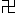

Otáčení Kolem Zákona
(Česká verze)
Li Hongzhi
Překlad z roku 2019
Tento emblém Kola Zákona je miniaturou vesmíru. Má také svoji vlastní formu existence a průběh vývoje ve všech ostatních dimenzích, a tak ho nazývám světem.
Li Hongzhi
Dafa2 je moudrostí Stvořitele. Je základem stvoření světa, na něm stojí nebesa, země a vesmír. Zahrnuje všechny věci, od těch nejnepatrnějších k ještě větším, než jsou ty nesmírně veliké, a přitom se na každé úrovni existence kosmického těla projevuje odlišným způsobem. Z hlubin kosmického těla se poprvé objevují ty nejdrobnější částice, následují vrstvy, jedna za druhou, nespočetných částic lišících se velikostí, od malých k velkým, a dosahují až k vnějším úrovním, které lidstvo zná – k atomům, molekulám, planetám a galaxiím – a ještě dál, k tomu, co je ještě větší. Částice rozmanitých velikostí vytvářejí životy rozmanitých velikostí i světy rozmanitých velikostí, které prostupují celým kosmickým tělem. Život na kterékoli úrovni částic vnímá částice té další, větší úrovně jako planety na obloze, a je tomu tak na každé úrovni. Životům na každé úrovni vesmíru se zdá, že takto to pokračuje neustále do nekonečna. Právě Dafa vytvořil čas a prostor, rozmanité množství životů a druhů a veškerá stvoření světů. Vše mu vděčí za svou existenci, nic mimo něj neexistuje. Na různých úrovních to všechno je konkrétním vyjádřením vlastností Dafa: Zhen, Shan a Ren3.
Ať jsou lidské prostředky k výzkumu vesmíru a zkoumání života jakkoliv pokročilé, získané poznatky se omezují pouze na určitou část této jedné dimenze, kde na nízké úrovni vesmíru žijí lidské bytosti. Už dříve, během civilizací, které předcházely historii, lidé prozkoumali jiné planety. I když dosáhli velkých výšek a vzdáleností, lidstvu se ještě nikdy nepodařilo překročit dimenzi, ve které existuje. Pravdivý obraz vesmíru bude lidstvu vždy unikat. Má-li lidská bytost pochopit záhady vesmíru, časoprostoru a lidského těla, musí se začít věnovat kultivaci pravé Cesty, a tím dosáhnout pravého osvícení a pozvednout úroveň své existence. Kultivací se pozvedne její morální charakter a jakmile se naučí rozlišovat to, co je vskutku dobré, od zlého, ctnost od neřesti, a překročí lidskou úroveň, uvidí skutečnost vesmíru i životy jiných úrovní a dimenzí a získá k nim přístup.
I když lidé často tvrdí, že jejich vědecké úsilí slouží k tomu, aby „se zlepšila kvalita života“, žene je technologická soutěživost. A ve většině případů se to stalo teprve poté, co lidé odstrčili bohy a opustili mravní zásady, které u nich měly zajistit sebekázeň. A právě z těchto důvodů byly minulé civilizace mnohokrát zničeny. Lidské zkoumání se nutně omezuje na tento hmotný svět a takovými metodami se studuje pouze to, co se uznává. Současně věci, které jsou v lidské dimenzi nehmatatelné nebo neviditelné, ale objektivně existují a v tomto přítomném světě se skutečně projevují – jako duchovno, víra, božské slovo a zázraky – se považují za tabu, protože lidé odvrhli bohy.
Jestliže bude lidská rasa schopna si zlepšit charakter, chování a myšlení, pokud je založí na morálních hodnotách, bude možné, aby civilizace přetrvala, a dokonce aby se v lidském světě opět odehrávaly zázraky. Mnohokrát v minulosti se na tomto světě objevily kultury, které byly zároveň božské a lidské, a pomohly lidem dospět k pravdivějšímu pochopení života a vesmíru. Když lidé ukáží náležitý respekt a úctu k tomu, jak se Dafa v tomto světě projevuje, oni, jejich rasa nebo národ, se budou těšit požehnání anebo poctě. Byl to Dafa – Velký Zákon vesmíru – který vytvořil kosmické tělo, vesmír, život a veškerá stvoření světů. Jakýkoli život, který se od Dafa odvrací, je vskutku zkažený. Každý člověk, který se dokáže Dafa přizpůsobit, je opravdu dobrým člověkem a bude odměněn a požehnán zdravím a štěstím. A kterýkoliv kultivující, který je schopen se s Dafa sjednotit, je osvíceným – bohem.
Li Hongzhi
24. května 2015
Během celého cyklu svých přednášek o Zákonu a kultivaci jsem byl odpovědný společnosti a studentům. Výsledky, které se dostavily, byly dobré a jejich vliv na celou společnost byl také docela dobrý. Před několika lety šířilo qigong4 mnoho mistrů qigongu, ale vše, co učili, se vztahovalo k úrovni léčení a udržování tělesné zdatnosti. Samozřejmě neříkám, že jejich způsoby praktikování nebyly dobré. Poukazuji jen na to, že neučili nic na vyšší úrovni. Znám také situaci qigongu v celé zemi a mohu říci, že ať už mluvíme o Číně či cizině, v současnosti jsem jediný, kdo učí praxi, která vás opravdu vede k vyšším úrovním. A proč to nikdo jiný nedělá? Je to proto, že s tím souvisejí obrovské záležitosti, které zahrnují původ qigongu a jeho hluboké historické důvody, široký okruh otázek a velmi závažné věci. Není to něco, co může učit kdokoliv, protože to zahrnuje záležitosti, které se týkají praxí mnoha škol qigongu. Konkrétně máme mnoho praktikujících, kteří dnes studují jednu praxi a zítra jinou. Ti si už do svého těla vnesli pěkný nepořádek, což jim právě kultivaci znemožní. Jdou po všech možných vedlejších cestách. Zatímco jiní postupují kupředu, protože jdou hlavní cestou. Když praktikují jeden způsob, druhé způsoby praktikování ho budou narušovat. Když praktikují ty druhé, naruší je ten první. Všechno je ruší a už dále nemohou v kultivaci uspět.
Všechny tyto záležitosti napravíme a tím, že uchováme dobrou část a odstraníme špatnou, zajistíme, že se později budete schopni kultivovat. Musíte zde ale být, abyste tento Velký Zákon5 opravdu studovali. Jestliže si udržujete různá připoutání a přicházíte, abyste získali schopnosti, vyléčili se z nemocí, naslouchali teoriím nebo přicházíte s nějakým špatným úmyslem, vůbec to nepůjde. No, a to je teď právě důležité, jak jsem už řekl, jsem jediný, kdo takovou věc dělá. Těchto příležitostí nebude mnoho, protože já tímto způsobem nebudu učit věčně. Myslím, že ten, kdo může naslouchat mým přednáškám osobně, řekl bych, že má opravdu… V budoucnu si to uvědomíte a budete za toto časové období opravdu vděčni. Samozřejmě věříme v karmické vztahy a každý tady sedí kvůli svému předurčenému vztahu6.
Každý z vás se nad tím zamyslete: co znamená učit qigong, který vás vede k vysokým úrovním? Není to nabízení spásy lidstvu? Nabízení spásy lidstvu znamená, že se budete opravdu kultivovat, a ne se jen léčit z nemocí a udržovat se v dobré kondici. A proto pravá kultivace vyžaduje od studentů vyšší úroveň charakteru7. Každý z vás zde sedí, aby se naučil tento Velký Zákon. Takže se tady musíte chovat jako opravdoví praktikující a musíte se vzdát svých připoutání. Jestliže se tuto praxi a tento Velký Zákon přicházíte učit s různými cíli, nenaučíte se nic. Abych řekl pravdu, celý postup kultivace je pro kultivujícího procesem, kterým se neustále vzdává lidských připoutání. V běžné lidské společnosti spolu lidé bojují, navzájem se klamou a jeden druhému ubližují, jen aby něco osobně získali. Všech takových způsobů myšlení je třeba se vzdát. Zvláště ti, kdo se tuto praxi učí dnes, by se takových způsobů myšlení měli vzdát v ještě větší míře.
Nebudu zde mluvit o léčení nemocí. My nemoci neléčíme. Chcete-li se však opravdově kultivovat a přišli jste sem s nemocným tělem, ještě se kultivovat nemůžete. A tak vám musím pročistit tělo. Tělo bude pročištěno pouze těm, kteří přicházejí, aby se opravdu naučili praxi a opravdu se naučili Zákon. Zdůrazňujeme jednu věc: jestli se nemůžete vzdát svých způsobů myšlení a starostí o nemoc, nemůžeme pro vás nic udělat a nebudeme vám schopni pomoci. Proč tomu tak je? Je to proto, že ve vesmíru platí tato pravda: všechny běžné lidské záležitosti mají podle školy buddhismu příčinné vztahy. Narození, stáří, nemoc a smrt jako takové existují pro obyčejné lidi. Následkem karmy, která vyplývá z minulých špatných skutků, trpí lidé nemocí nebo strastmi. Utrpením splácejí své karmické dluhy, a proto to nikdo nemůže neuváženě změnit. Změnit to by znamenalo, že člověk by poté, co se zadluží, nemusel dluh splatit. A to prostě nelze dělat svévolně. Udělat to jinak je totéž, jako udělat špatný skutek.
Někteří lidé si myslí, že léčení pacientů a zlepšování jejich zdraví a tělesné zdatnosti jsou dobré skutky. Ale z mého hlediska oni ty nemoci ve skutečnosti nevyléčili. Místo aby nemoci odstranili, buď je odložili na pozdější dobu, anebo je přeměnili. Aby se skutečně taková trápení rozptýlila, musíte odstranit karmu. K tomu, aby někdo mohl úplně takovou karmu odstranit a toho člověka vyléčit, musel by být na dost vysoké úrovni. A ten by už viděl, že principy běžné lidské společnosti nelze náhodně porušovat. V průběhu kultivační praxe je kultivujícím dovoleno, aby ze soucitu udělali nějaké dobré skutky a vyléčili lidi nebo jim pomohli zlepšit si zdraví a udržovat se v dobré kondici, avšak pořád ještě je nemohou úplně vyléčit. Kdyby byla příčina nemoci obyčejného člověka skutečně odstraněna, nekultivující obyčejný člověk by odešel bez jakékoli nemoci, zůstal by obyčejným člověkem a dále by bojoval o osobní prospěch zrovna tak jako ostatní obyčejní lidé. Jak by mohla být jeho karma neuváženě odstraněna? To je naprosto zakázáno.
Proč to tedy lze udělat pro kultivujícího? Je to proto, že kultivující je velmi cenný. Chce se věnovat kultivaci, a to je ta nejvzácnější myšlenka. V buddhismu se mluví o buddhovské povaze. Když se v člověku ukáže jeho buddhovská povaha, osvícené bytosti mu přijdou pomoci. Co to znamená? Ptáte-li se mě, protože učím praxi na vyšší úrovni, zahrnuje to principy vysokých úrovní a týká se to nanejvýš důležitých záležitostí. Vidíme, že v tomto vesmíru se lidský život nevytváří v běžné lidské společnosti. Stvoření skutečného života člověka se děje v prostoru vesmíru. Protože v tomto vesmíru existuje mnoho různých druhů hmoty schopných vytvořit život, mohou svým pohybem a vzájemným působením vytvářet život. Jinými slovy, prapůvodní život člověka pochází z vesmíru. Prostor vesmíru je od počátku dobrotivý a ztělesňuje povahové vlastnosti Pravdivosti, Soucitu a Snášenlivosti. Při zrození je jedinec přizpůsoben povahovým vlastnostem vesmíru. Ale jak se počet životů zvyšuje, vyvíjejí se kolektivní formy společenských vztahů, ve kterých si některé bytosti mohou vypěstovat sobectví. Tak se jejich úroveň postupně snižuje. Nemohou na této úrovni zůstat a musejí klesnout. Avšak na příští úrovni se možná opět nestanou tak dobrými a nebudou schopny zůstat ani tam. Budou klesat dále, až nakonec klesnou na tuto úroveň lidských bytostí.
Celá lidská společnost je na stejné úrovni. Z hlediska schopností nebo z hlediska velkých osvícených bytostí měly být tyto životy zničeny poté, co klesly na tuto úroveň. Velké osvícené bytosti ale vycházejí ze svého laskavého soucitu a daly jim tedy ještě jednu příležitost. Sestavily toto zvláštní prostředí a jedinečnou dimenzi. Bytosti v této dimenzi jsou odlišné od životů ve všech ostatních dimenzích vesmíru. Bytosti v této dimenzi nemohou vidět bytosti v jiných dimenzích, ani jak vesmír ve skutečnosti existuje. A tak vlastně klesly do říše klamných dojmů. Chtějí-li se vyléčit z nemocí a zbavit se svých trápení a své karmy, musejí se kultivovat a vrátit se ke svému původnímu, pravému já. Tak se na to dívají všechny kultivační školy. Člověk se má vrátit ke svému původnímu, pravému já. To je pravý účel lidského bytí. Proto jakmile se chce člověk kultivovat, považuje se to za projev jeho buddhovské povahy. Taková myšlenka je velmi cenná, protože tento člověk se chce vrátit ke svému původnímu, pravému já a chce se vymanit z běžné lidské úrovně.
Snad každý slyšel toto prohlášení buddhismu: „Když se ukáže buddhovská povaha člověka, zatřese ‚světem o deseti směrech‘8.“ Kdokoli to uvidí, přijde, aby mu podal pomocnou ruku a bezvýhradně mu pomohl. K poskytování spásy lidstvu nepřipojuje škola buddhismu žádnou podmínku ani nehledá odměnu a bude pomáhat bezvýhradně. Můžeme tedy pro studenty udělat mnoho věcí. Ale pro obyčejného člověka, který chce být pouze obyčejným člověkem a vyléčit se z nemocí, to nepůjde. Někteří lidé si možná myslí: „Budu se kultivovat, až se vyléčím.“ Pro kultivaci se nestanovuje žádná předběžná podmínka a člověk se má kultivovat, když sám chce. Ale tělo některých lidí je nemocné, jiní ve svém těle nesou zmatené vzkazy a další ještě nikdy qigong nepraktikovali. Jsou také lidé, kteří se kultivovali několik desetiletí a stále ještě bloudí na úrovni qi9, ale v kultivaci nepokročili.
Co by se s tím tedy mělo udělat? Pročistíme jim tělo a umožníme jim se kultivovat k vysokým úrovním. Na nejnižší úrovni kultivace existuje přechodná fáze, a tou je úplné pročištění vašeho těla. Budou pročištěny všechny špatné věci ve vaší mysli, karmické pole, které vám obklopuje tělo, a prvky, které činí vaše tělo nezdravým. Pokud k tomuto pročištění nedojde, jak byste se s tak nečistým, temným tělem a poskvrněnou myslí mohli kultivovat k vyšší úrovni? My tady neprocvičujeme qi. Nepotřebujete praktikovat věci tak nízké úrovně, postrčíme vás dál, a tím vaše tělo dosáhne stavu bez jakékoliv nemoci. Mezitím vložíme do vašeho těla systém už hotových mechanismů, nutných k položení základu na nízké úrovni. Tímto způsobem se hned budete kultivovat na velmi vysoké úrovni.
Pokud zahrneme qi jako počáteční úroveň, má podle asijských konvencí kultivace tři úrovně. Avšak opravdová kultivace začíná nad úrovní qi a má jen dvě hlavní úrovně. Jednou je kultivace v Zákonu trojitého světa10, druhou je kultivace nad Zákonem trojitého světa11. Pojmy „v Zákonu trojitého světa“ a „nad Zákonem trojitého světa“ se liší od pojmů „mimo svět“ a „ve světě“, o kterých mluví lidé v klášterech, kde se jedná o abstraktní pojmy. Kultivací lidského těla na dvou hlavních úrovních procházíme skutečnou přeměnou. Protože během kultivace v Zákonu trojitého světa se tělo člověka bude neustále znovu a znovu pročišťovat, až člověk dospěje k nejvyšší formě v Zákonu trojitého světa, úplně je nahradí látka vysoké energie. Kultivace nad Zákonem trojitého světa je v podstatě kultivací těla Buddhy. Toto tělo vytváří látka vysoké energie a znovu se rozvinou všechny nadpřirozené síly. To jsou dvě hlavní úrovně, o kterých mluvíme.
Věříme v karmickou příčinnost. Tím, že jste přišli na tuto přednášku, mohu to, co jsem popsal, udělat pro každého z vás. Právě teď zde máme jen něco přes dva tisíce lidí. Mohu to však také udělat pro několik tisíc nebo víc lidí, dokonce víc než deset tisíc lidí. Tím říkám, že nemusíte praktikovat na nízké úrovni. Poté, co vám pročistíme tělo a pozdvihneme vás, v těle vám ustavíme úplný systém kultivace. Ihned se budete kultivovat na vysokých úrovních. Stane se to ale jen u studentů, kteří přicházejí, aby se kultivovali a opravdu zlepšovali. To, že tady prostě sedíte, neznamená, že jste kultivující. Pokud dokážete změnit své myšlení hluboce a zásadně, můžeme pro vás tyto věci udělat a můžeme toho udělat ještě víc. A později pochopíte, co jsem ve skutečnosti každému dal. A řeknu to znovu, neléčíme zde nemoci, ale celkově přizpůsobujeme těla našich studentů, abychom jim umožnili se kultivovat. S nemocným tělem si vůbec nemůžete vyvinout kultivační energii12. Proto byste ke mně neměli chodit kvůli léčení, a já vás nebudu léčit. Prvotním účelem mého vystoupení na veřejnost je vést lidi k vysokým úrovním, opravdově vést lidi k vysokým úrovním.
V minulosti mnoho mistrů qigongu říkalo, že qigong má začátečnickou úroveň, střední úroveň a pokročilou úroveň. To všechno byla qi a jen něco na úrovni procvičování qi, ale i to bylo rozděleno na qigong začátečnické úrovně, střední úrovně a pokročilé úrovně. Pokud jde o skutečné věci vysoké úrovně, byla mysl většiny lidí, kteří praktikovali qigong, prázdná, protože o nich jednoduše nic nevěděli. Vše, o čem budeme od této chvíle mluvit, budou Zákony vysokých úrovní. Navíc obnovím dobrou pověst kultivace. Ve svých přednáškách budu mluvit o některých nezdravých jevech ve společenství kultivujících. Promluvím také o tom, jak bychom se měli s takovými jevy vypořádat a jak bychom se na ně měli dívat. Navíc, učení kultivačního systému a Zákona na vysokých úrovních zahrnuje široký okruh otázek a mnoho dalších věcí, z nichž některé jsou dokonce velmi vážné. A na to vše bych chtěl také poukázat. Některá rušivá zasahování v naší běžné lidské společnosti, zvláště ve společenství těch, kteří se kultivují, pocházejí z jiných dimenzí. To bych také rád zveřejnil. Zároveň pro kultivující tyto problémy vyřeším. Jestliže tyto problémy zůstanou nerozřešeny, nebudete schopni se kultivovat. Abychom tyto záležitosti zásadně vyřešili, musíme s každým jednat jako s opravdovým kultivujícím. Samozřejmě pro vás není snadné změnit své myšlení okamžitě. Myšlení budete měnit postupně během následujících přednášek. Také doufám, že při poslechu přednášek budete všichni dávat pozor. Učím svoji praxi jinak, než učí ostatní. Někteří lidé učí jen tak, že stručně pohovoří o teorii své metody praktikování. Potom propojí své vzkazy s vámi a naučí vás pár cvičení, a to je vše. Lidé jsou už na tento způsob učení praxe zvyklí.
Abyste skutečně něco předali, musíte vyučovat Zákon a učit Tao čili „cestu“. V těchto deseti přednáškách vyložím pravdy vysoké úrovně, nevynechám nic a pak se budete moci kultivovat. Jinak se nemůžete kultivovat vůbec. Vše, co učí ostatní, jsou věci na úrovni léčení a udržování dobré kondice. Pokud se chcete kultivovat k vysokým úrovním, bez vedení Zákona vysoké úrovně neuspějete. Podobá se to návštěvě školy: když půjdete na vysokou školu s učebnicemi základní školy, budete pořád žákem základní školy. Někteří lidé si myslí, že se naučili mnoho metod praktikování, vykládají o té či oné metodě a mají hromadu potvrzení o ukončení kurzů, ale jejich kultivační energie dosud nikam nepokročila. Myslí si, že tyto věci jsou pravou podstatou qigongu a to, o čem qigong je. To sotva. To je pouze povrchní část qigongu a něco, co je na nejnižší úrovni. Qigong se neomezuje na tyto věci, protože je to kultivace, a tedy něco velmi širokého a hlubokého. A navíc na různých úrovních existují odlišné Zákony. Takže se liší od těch praxí založených na qi, které známe v současnosti. Nebude záležet na tom, o kolik více se jich naučíte, nic vám to nepomůže. Řekněme, že nastudujete učebnice britské základní školy, učebnice americké základní školy, učebnice japonské základní školy a učebnice čínské základní školy – no dobrá, ale stále zůstáváte jen žákem základní školy. Čím více lekcí qigongu nízké úrovně projdete a čím více z nich načerpáte, tím více si uškodíte – vaše tělo už teď je v pěkném nepořádku.
Chtěl bych zdůraznit ještě jednu věc: když se kultivujete, musí vám být předáno oboje, kultivační metoda i učení. Někteří mniši v klášterech, zvláště zen-buddhistických, mají možná odlišné názory. Jakmile slyší slova „předávat učení“, nebudou to chtít poslouchat. Proč tomu tak je? Zenbuddhismus věří, že Zákon se nedá učit, že Zákon už nebude Zákonem, jestliže se učí, že neexistuje naučitelný Zákon a že člověk může něčemu porozumět jen srdcem a duší. Výsledkem toho je, že zen-buddhismus dodnes nedokázal učit žádný Zákon. Patriarcha zen-buddhismu Bódhidharma tento nápad šířil na základě výroku Šákjamuniho13, který řekl: „Žádný Zákon14 není úplný.“ A na tomto Šákjamuniho výroku založil zen-buddhismus. My bychom řekli, že tato škola je ve slepé uličce. Jak to? Když se touto cestou vydal Bódhidharma, cítil, že v ní je dost prostoru. Ale už Druhý patriarcha cítil, že v ní moc prostoru není. Ještě to šlo v době Třetího patriarchy, ale pro Čtvrtého patriarchu už byla dost úzká. Pro Pátého patriarchu už nebyl téměř žádný prostor, aby postoupil dále. V době Šestého patriarchy Huinenga došli ke konci a dál nemohli nikam postoupit. Jestliže se dnes půjdete učit Zákon k zen-buddhistům, neměli byste klást žádné otázky. Když se na něco zeptáte, otočí se a přetáhnou vás holí přes hlavu, a tomu říkají „probuzení holí“. Míní tím, že byste se neměli ptát a měli byste se stát osvícenými sami od sebe. Řekli byste: „Přišel jsem se učit, protože nic nevím. K čemu bych se měl ‚osvítit‘? A ty mě prostě uhodíš holí?!“ To ukazuje, že zen-buddhismus došel na konec slepé uličky a dál nemá co učit. I Bódhidharma prohlásil, že jeho učení se může předávat jen po šest generací a potom nebude k ničemu. Uběhlo několik set let. Ale přesto jsou i dnes lidé, kteří se stále pevně drží učení zen-buddhismu. Co ve skutečnosti znamená Šákjamuniho prohlášení „žádný Zákon není úplný“? Šákjamuni byl svojí úrovní tathágata15. Později mnozí mniši nebyli osvíceni k úrovni Šákjamuniho, k jeho oblasti myšlení, k pravému smyslu Zákona, který hlásal, a ke skutečnému smyslu toho, co řekl. Lidé, kteří přišli po něm, si to proto později vykládali tím či oním způsobem s velmi matoucími výklady. Mysleli si, že výrok „žádný Zákon není úplný“ znamená, že ho nemáte učit, a pokud by ho někdo učil, nebyl by to Zákon. Takový smysl to ve skutečnosti nemá. Když se Šákjamuni osvítil16 pod stromem bódhi, nedosáhl úrovně tathágaty okamžitě. A také se během čtyřiceti devíti let, kdy kázal Zákon, sám neustále zlepšoval. Kdykoliv se pozvedl k vyšší úrovni, podíval se nazpět a uvědomil si, že Zákon, který právě učil, není úplně správný. Když znovu pokročil, přišel na to, že Zákon, který právě učil, opět není úplně správný. A když pokročil ještě dále, opět si uvědomil, že Zákon, který právě učil, opět není úplně správný. Neustále dělal takové pokroky během celých čtyřiceti devíti let, a kdykoliv dosáhl vyšší úrovně, zjistil, že Zákon, který učil v minulosti, chápe věci na velmi nízké úrovni. Objevil také, že Zákon na každé úrovni je vždy projevem Zákona oné úrovně, že na každé úrovni existuje Zákon a že žádný z nich není úplnou pravdou vesmíru. Zákon na vysokých úrovních je blíže povaze vesmíru než Zákon na nižších úrovních. Proto prohlásil: „Žádný Zákon není úplný.“
Nakonec Šákjamuni také prohlásil: „V celém svém životě jsem žádný Zákon neučil.“ Zen-buddhismus to opět nesprávně pochopil tak, že to znamená, že neexistuje Zákon, který lze učit. V pozdějších letech Šákjamuni dosáhl úrovně tathágaty. Proč řekl, že neučil žádný Zákon? O čem to vlastně mluvil? Říkal: „Dokonce ani na své úrovni tathágaty jsem neviděl konečnou pravdu vesmíru, ani to, co je konečný Zákon.“ Žádal tedy, aby lidé později nepovažovali jeho slova za úplnou, neměnnou pravdu. Jinak by to omezovalo ty, kteří přijdou po něm, na úrovni tathágaty nebo i pod tou úrovní a nebyli by schopni pokročit k vysokým úrovním. Později lidé neporozuměli skutečnému smyslu té věty a mysleli si, že „Zákon, který se dá učit, není Zákonem“ – rozuměli tomu takto. Ve skutečnosti Šákjamuni říkal, že „na různých úrovních existují různé Zákony a Zákon na každé úrovni není úplnou pravdou vesmíru. Přesto však Zákon na dané úrovni přejímá na té úrovni řídící úlohu“. Ve skutečnosti mluvil o tomto principu.
V minulosti mělo hodně lidí, zvláště zen-buddhistů, takovýto předsudek a nesmírně pokřivený pohled. Jak se tedy má člověk kultivovat a cvičit, když ho nikdo nevede a neučí? V buddhismu je mnoho buddhistických příběhů. Možná jste četli o člověku, který šel do nebe. Když přišel do nebe, objevil, že každé slovo v Diamantové sútře17 je nahoře jiné než tady dole a že smysl je úplně jiný. Jak mohla být verze oné Diamantové sútry odlišná od té v obyčejném lidském světě? Jsou také lidé, kteří říkají: „Posvátné texty v Ráji nejvyšší blaženosti se naprosto liší od těch tady dole a vůbec nejsou shodné. Nejenom, že se liší slova, ale také hlubší smysl a význam těch slov je jiný, protože se změnily.“ Vlastně je to proto, že stejný Zákon má na různých úrovních různé proměny, které jsou podobami jeho projevu a pro kultivující na různých úrovních mohou hrát různou řídící úlohu.
Všichni víte, že v buddhismu mají knížku, která se jmenuje Výlet do Ráje nejvyšší blaženosti. Uvádí se v ní, že když mnich seděl a meditoval, jeho prapůvodní duše18 šla do Ráje nejvyšší blaženosti a viděla, jak to tam vypadá. Procházela se tam jeden den. Když se vrátila do světa lidí, uplynulo šest let. Viděla všechno? Ano, ale to, co viděla, nebylo takové, jaké to tam opravdu je. Proč? Je to proto, že jeho úroveň nebyla dostatečně vysoká, a to, co mu bylo ukázáno, bylo jen projevem Buddhova Zákona na jeho úrovni. Protože takový ráj je projevem složení Zákona, nemohl vidět jeho skutečnou situaci. Právě takový je smysl toho, když mluvím o tom, že „žádný Zákon není úplný“.
V buddhismu lidé diskutují o tom, co je Buddhův Zákon. Existují také lidé, kteří věří, že Zákon vyjádřený v buddhismu je úplný Buddhův Zákon. Ve skutečnosti tomu tak není. Zákon, který Šákjamuni hlásal před pětadvaceti stoletími, byl pouze pro obyčejné lidi na velmi nízké úrovni. Učili se ho ti, kteří se právě vyvinuli z primitivní společnosti a stále ještě měli velmi prostou mysl. Dnešek je obdobím konce Zákona19, o kterém se zmiňoval. Nyní se už lidé nemohou dále kultivovat tímto Zákonem. V období konce Zákona mají i mniši v klášterech obtíže s tím, aby spasili sami sebe, natož aby nabízeli spásu ostatním. Zákon, který učil Šákjamuni v oné době, bral tuto situaci v úvahu. Šákjamuni plně nevyjádřil Buddhův Zákon, kterému rozuměl na své úrovni. Je také nemožné ho udržet navždy beze změn.
S rozvojem společnosti se lidská mysl stává složitější, což způsobuje, že dnes je těžké se kultivovat tímto způsobem. Zákon v buddhismu nezahrnuje celý Buddhův Zákon a je jen jeho maličkou částí. Ve škole buddhismu je ještě mnoho jiných velkých kultivačních metod, které se předávají mezi lidmi nebo které se po věky předávaly pouze jednomu učedníkovi z generace na generaci. Různé úrovně mají různé Zákony a různé dimenze mají různé Zákony. A všechny jsou rozmanitými projevy Buddhova Zákona v různých dimenzích a na různých úrovních. Šákjamuni také mluvil o tom, že pro kultivování buddhovství existuje osmdesát čtyři tisíc způsobů kultivace. Buddhismus ale zahrnuje jen něco přes deset způsobů kultivace, například zen-buddhismus, Čistou zemi, Tiantai, Huayan a tantrismus. Ty nemohou představovat celý Buddhův Zákon. Sám Šákjamuni neučil celý svůj Zákon. Učil pouze jeho část přiměřenou tomu, čemu mohli lidé v té době porozumět.
Co je tedy Buddhův Zákon? Nejzákladnější povaha tohoto vesmíru, Pravdivost, Soucit a Snášenlivost, je nejvyšší projev Buddhova Zákona. To je nejzákladnější Buddhův Zákon. Buddhův Zákon se projevuje v různých formách na různých úrovních a na různých úrovních přejímá různé řídící úlohy. Čím nižší úroveň, tím je složitější. Povaha Pravdivosti, Soucitu a Snášenlivosti je v mikroskopických částečkách vzduchu, kamene, dřeva, půdy, železa a oceli, lidského těla a veškeré hmoty. V dávných dobách se věřilo, že podstatou všech věcí a hmoty ve vesmíru je pět prvků20, a ty také mají tuto povahu Pravdivosti, Soucitu a Snášenlivosti. Kultivující může rozumět jen určitému projevu Buddhova Zákona na úrovni, které dosáhla jeho kultivace, což je jeho dosažený kultivační stav, úroveň ovoce21 a úroveň v kultivaci. Když je Zákon vyjádřen podrobně, je nesmírně obrovský. Ale z perspektivy té nejvyšší úrovně je velmi jednoduchý, neboť se tvarem podobá pyramidě. V nejvyšším bodě ho lze shrnout třemi slovy: Pravdivost, Soucit, Snášenlivost. Když se projevuje na různých úrovních, je nesmírně složitý. Vezměte si například lidskou bytost. Škola taoismu považuje lidské tělo za malý vesmír. Člověk má fyzické tělo, a přece není úplný jen s fyzickým tělem. K tomu, aby člověk byl úplnou a nezávislou osobou s individualitou, musí mít také lidský temperament, osobnost, charakter a prapůvodní duši. Totéž platí o našem vesmíru, který má Mléčnou dráhu, další galaxie a také život a vodu. A tak jsou nesčetné věci v tomto vesmíru stránkou jeho hmotné existence. Zároveň ale také pod tím vším má neviditelnou povahu neboli duši Pravdivosti, Soucitu a Snášenlivosti. Tuto povahu ztělesňují všechny částice hmoty – tuto vlastnost mají dokonce i nesmírně malé částečky.
Základní povaha Pravdivosti, Soucitu a Snášenlivosti je měřítkem, které určuje, co je ve vesmíru dobré a co je špatné. Co je dobré a co je špatné? Tímto se to posuzuje. Stejné je to se ctností22, o které lidé mluvili v minulosti. Je jisté, že se morální měřítka v dnešní společnosti už změnila a pokřivila. Jestliže se někdo nyní učí od Lei Fenga23, mohl by být označen za mentálně narušeného. Ale kdo by v padesátých nebo šedesátých letech o takovém člověku řekl, že je mentálně narušený? Lidská morální měřítka nesmírně klesají a lidské morální hodnoty se každý den zhoršují. Lidé jdou jen za svými zájmy a ubližují druhým kvůli trošce osobního zisku. Navzájem soupeří a bojují za pomoci všech možných prostředků. Všichni se nad tím zamyslete: bude to smět takto pokračovat? Dělá-li někdo špatný skutek, neuvěří vám, když poukážete na to, že dělá něco zlého. Někteří lidé hodnotí sami sebe podle pokleslého morálního měřítka. Protože se změnila měřítka hodnocení, považují se za lepší než ostatní. Jakkoli se lidská morální měřítka pokřivila, základní povaha vesmíru zůstává stejná a je jediným měřítkem, které odlišuje dobré lidi od špatných. Jako kultivující se tedy člověk musí chovat tak, že se řídí spíše touto povahou vesmíru než měřítkem obyčejných lidí. Jestliže se chcete vrátit ke svému původnímu, pravému já, a postoupit v kultivaci kupředu, musíte se chovat podle tohoto měřítka. Jako lidská bytost jste dobrým člověkem pouze tehdy, pokud se dokážete řídit povahou vesmíru, Pravdivostí, Soucitem a Snášenlivostí. Člověk, který se od této povahy odchýlí, je vskutku špatný. Na pracovišti nebo ve společnosti možná někteří lidé řeknou, že jste špatný, ale přesto nemusíte být nutně špatný. Někteří lidé mohou říci, že jste dobrý, ale ve skutečnosti možná opravdu dobrý nejste. Jestli se jako kultivující přizpůsobíte této povaze, jste ten, kdo dosáhl Taa – tak jednoduchý princip to je.
Při kultivování Pravdivosti, Soucitu a Snášenlivosti zdůrazňuje škola taoismu kultivaci Pravdivosti. Proto se taoisté snaží ze všech sil „kultivovat Pravdivost, podporovat vlastní podstatu jedince, říkat pravdu, dělat věci pravdivě, být pravdomluvný, vrátit se ke svému původnímu, pravému já a nakonec se prostřednictvím kultivace stát pravým člověkem“. Nicméně také mají Soucit a Snášenlivost, ale důraz je na kultivaci Pravdivosti. Buddhisté z Pravdivosti, Soucitu a Snášenlivosti zdůrazňují kultivaci Soucitu. Kultivace Soucitu může vytvořit velké, dobrotivé soucítění, a když se soucit rozvine, člověk shledá, že všechny bytosti trpí. Škola buddhismu tak vytváří touhu spasit všechny bytosti. Mají také Pravdivost a Snášenlivost, ale s důrazem na kultivaci Soucitu. Naše disciplína Velké cesty Kola Zákona je založena na nejvyšším standardu vesmíru, Pravdivosti, Soucitu a Snášenlivosti, které všechny kultivujeme zároveň. Takže to, co kultivujeme, je obrovské.
Co je qigong? O tom se snaží mluvit mnoho mistrů qigongu, avšak to, co říkám já, je něco úplně jiného, než říkají oni. Mnozí mistři qigongu o něm mluví na jedné úrovni, zatímco já mluvím o pochopení qigongu z vyšší úrovně, což se zcela liší od jejich chápání. Někteří mistři qigongu tvrdí, že qigong má v naší zemi dvoutisíciletou historii. Jsou také lidé, kteří říkají, že qigong má třítisíciletou historii. Někteří lidé se zmiňují o tom, že qigong má pětitisíciletou historii, což se blíží stáří naší čínské civilizace. Jiní zase říkají, že podle archeologických vykopávek má historii sedmi tisíc let, a tedy daleko předchází dějinám naší čínské civilizace. Ať tomu rozumějí jakkoliv, qigong by neexistoval o moc dříve než dějiny této lidské civilizace. Podle Darwinovy evoluční teorie se lidé nejdříve vyvinuli z vodních rostlin do vodních zvířat, potom se přesunuli a žili na souši a později na stromech, pak se vrátili na zem a stali se opicemi a nakonec se vyvinuli v moderní lidské bytosti s kulturou a myšlením. Podle těchto počtů neuběhlo od té doby, co se skutečně objevila lidská civilizace, víc než deset tisíc let. Díváme-li se dále do minulosti, tam se nedělaly ani záznamy vázáním uzlíků. Lidé se oblékali do listí a jedli syrové maso. Podíváme-li se ještě dále, možná ani nevěděli, jak mají používat oheň, a byli to naprosto divocí, primitivní lidé.
Narazili jsme ale na problém. Mnohé kulturní památky pocházejí z dob mnohem dřívějších, než kde začínají dějiny naší lidské civilizace. Tyto pradávné pozůstatky jeví dosti vyspělou úroveň řemeslného umu. Pokud jde o uměleckou hodnotu, jsou na neobyčejně vysoké úrovni. Moderní lidstvo prostě napodobuje umění pradávných lidí a jejich umění má velkou uměleckou hodnotu. Jsou to ale pozůstatky staré přes sto tisíc let, několik set tisíc let, několik milionů let, anebo dokonce přes sto milionů let. Uvažujme o tom, všichni: nezesměšňuje to dnešní „dějiny“? Není to ve skutečnosti žádný žert, protože lidstvo se vždy vylepšovalo a znovu objevovalo. Společnost se takto vyvíjí. Počáteční chápání nemusí být zcela správné.
Mnoho lidí možná už slyšelo o „prehistorické kultuře“, známé také jako „prehistorická civilizace“. Promluvím o tom. Na této zeměkouli jsou světadíly Asie, Evropa, Jižní Amerika, Severní Amerika, Oceánie, Afrika a Antarktida. Geologové je nazývají kontinentálními deskami. Od vytvoření těchto kontinentálních desek už uplynulo několik desítek milionů let. A to se mnoho světadílů vynořilo ze dna moře a mnohé světadíly se také na dno moře ponořily. Je to více než desítky milionů let, kdy se ustálily do současného stavu. Pod vodou mnoha oceánů byla objevena jakási dávná monumentální a rozsáhlá architektura. Tyto stavby byly vytvořeny s vynikající řemeslnou dovedností a nejsou kulturním dědictvím našeho moderního lidstva. Musely tedy být postaveny dříve, než klesly na dno oceánů. Kdo vytvořil tyto civilizace před desítkami milionů let? V té době náš lidský druh nebyl ještě ani opicemi. Jak bychom mohli vytvořit něco s tak velkým umem? Archeologové na celém světě objevili organismus zvaný trilobit, který existoval v období před šesti sty až dvěma sty šedesáti miliony let. Před dvěma sty šedesáti miliony let tento druh organismu vymizel. Jeden americký vědec objevil zkamenělinu lidské stopy na trilobitu. Zkamenělá stopa nohy byla jasně vytlačena obutým člověkem. Nezesměšňuje to historiky? Jak by mohly podle Darwinovy evoluční teorie existovat lidské bytosti před dvěma sty šedesáti miliony let?
V muzeu Národní univerzity Peru je kámen, na kterém je vyryta lidská postava. Při zkoumání se zjistilo, že tato postava byla vyryta před třiceti tisíci lety. Ale tato postava má na sobě šaty, klobouk a boty, v ruce má dalekohled a dívá se na hvězdy. Jak mohli lidé před třiceti tisíci lety utkat látku a nosit oblečení? Ještě nepochopitelnější je, že tento člověk pozoroval nebe dalekohledem a měl jisté znalosti astronomie. Vždy si myslíme, že dalekohled vynalezl Evropan Galileo, což mu dává historii pouze tak přes tři sta let. Kdo tedy vynalezl dalekohled před třiceti tisíci lety? Nevyřešených záhad je stále ještě mnoho. Například v mnohých jeskyních ve Francii, Jižní Africe a v Alpách jsou do břidlice vyryté fresky, které jsou velmi realistické a jako živé. Vyryté postavy jsou nádherné a jsou vybarveny minerálními barvami. Ale všichni tito lidé mají na sobě soudobé oblečení, které vypadá podobně jako západní oděv, a mají na sobě přiléhavé kalhoty. Někteří z nich drží něco jako zapálenou dýmku, zatímco jiní mají vycházkovou hůl a na hlavě klobouk. Jak by mohli opi před několika sty tisíci lety dosáhnout tak pokročilé umělecké úrovně?
Abych uvedl příklad z období ještě vzdálenějšího: Gabunská republika v Africe má uranovou rudu. Tato země je poměrně málo rozvinutá. Sama není schopna rudu zpracovat a vyváží ji do vyspělých zemí. V roce 1972 její uranovou rudu dovezl jeden francouzský výrobce. Laboratorními zkouškami se zjistilo, že uran v té rudě už byl vyloučen a použit. To je překvapilo a vyslali vědce, aby to ověřili. Zkoumat to přijela řada vědců z mnoha různých zemí. Nakonec potvrdili, že tento uranový důl byl vlastně rozsáhlým jaderným reaktorem s velmi promyšleným uspořádáním. Ani naši moderní lidé rozhodně nejsou schopni něco takového vytvořit, takže kdy tedy byl postaven? Byl postaven před dvěma miliardami let a v provozu byl pět set tisíc let. To jsou prostě astronomická čísla a nelze je vůbec vysvětlit Darwinovou evoluční teorií. Takových příkladů je mnoho. Co objevila dnešní vědecko-technická obec, stačí k tomu, aby se naše současné učebnice změnily. Jakmile konvenční způsob myšlení lidstva vytvoří uspořádaný způsob práce a myšlení, nové myšlenky se velmi těžko přijímají. Když se objeví pravda, lidé se ji neodvažují přijmout a instinktivně ji odmítají. Vzhledem k vlivu tradičních konvencí dnes nikdo taková zjištění systematicky neshrnul. A tak se lidské představy vždy opožďují za rozvojem. Jakmile o takových věcech promluvíte, najdou se lidé, kteří je nazvou pověrami, a prostě je nemohou přijmout. I přesto, že už byly objeveny, a jen se jim ještě nedostalo široké publicity.
Mnoho smělých zahraničních vědců už veřejně uznalo, že tyto věci jsou z prehistorických kultur a že pocházejí z civilizací, které existovaly před civilizací našeho lidstva. Míní tím, že před naší civilizací existovalo více než jedno období jiných civilizací. Ve vykopaných památkách jsme našli výtvory, které nepocházejí jen z jednoho období civilizace. Věří se tedy, že po každém z mnoha období, kdy byly lidské civilizace zničeny, přežilo jen málo lidí, kteří pak žili primitivním životem. Potom se postupně rozmnožili, stali se novou lidskou rasou a začali novou civilizaci. Později byli znovu vyhlazeni a potom opět vytvořili novou lidskou rasu. Lidstvo procházelo takovými různými periodickými změnami znovu a znovu. Fyzikové zastávají názor, že pohyb hmoty se řídí určitými zákony. Změny celého našeho vesmíru se také řídí zákony.
Není možné, aby naše zeměkoule v tomto obrovském vesmíru a otáčející se Mléčné dráze obíhala vždy velmi hladce. Možná narazila do některé planety nebo se dostala do jiných problémů, což vedlo k velkým katastrofám. Z perspektivy našich schopností to bylo právě takto zařízeno. Jednou jsem to pečlivě prozkoumal a zjistil jsem, že lidstvo prošlo naprostým zničením jedenaosmdesátkrát. Pokaždé přežil jen malý počet lidí a s tím málem, které zbylo z předchozí civilizace, vstoupili do příštího období a žili znovu primitivním životem. Jak se lidstvo znovu dostatečně rozmnožilo, nakonec se opět objevila civilizace. Lidstvo zažilo takové cyklické změny jedenaosmdesátkrát, a to jsem je ještě nevysledoval až do konce. Číňané mluví o kosmickém načasování, příznivých podmínkách krajiny a odpovídajícím lidském souladu. Různé kosmické změny a různá kosmická načasování mohou v běžné lidské společnosti vyvolat různé podmínky. Podle fyziky se pohyb hmoty řídí jistými zákony. Totéž platí o pohybu vesmíru.
Když jsem právě mluvil o prehistorické kultuře, mělo vám to v první řadě říci, že ani qigong nevynalezlo toto naše lidstvo. Je zděděn z velmi vzdálené doby a byl také druhem prehistorické kultury. V buddhistických posvátných textech můžeme rovněž najít některá tvrzení, která s tím souvisejí. Šákjamuni jednou řekl, že uspěl v kultivační praxi před mnoha stamiliony kalp24. Kolik let je v jedné kalpě? Jedna kalpa označuje stamiliony let. Tak obrovské číslo je prostě nepředstavitelné. Pokud je to pravda, neodpovídá to historii lidstva a změnám celé zeměkoule? Navíc Šákjamuni také řekl, že před ním bylo šest Buddhů z prastarých dob, že měl mistry a tak dále, a že ti všichni uspěli v kultivaci před mnoha stamiliony kalp. Je-li to vše pravda, existují takovéto kultivační cesty mezi těmi opravdovými tradičními praxemi a pravými učeními, které se dnes ve světě učí? Ptáte-li se mne, samozřejmě řeknu, že ano, ale vidí se zřídka. V dnešní době si předstíraný qigong, falešný qigong a ti lidé posedlí duchy25 všichni vymysleli cosi podle svého, aby oklamali lidi. A jejich počet mnohonásobně převyšuje počet opravdových praxí qigongu. Je těžké rozeznat, co je pravé a co falešné. Pravou praxi qigongu není snadné rozpoznat, a není ani snadné ji nalézt.
Ve skutečnosti je z dávných dob předáván nejen qigong. Taiji26, Hetu, Diagramy Luoshu27, Kniha proměn28, Osm trigramů29, a je jich ještě víc, jsou všechny zděděny z prehistorie. Takže pokud je dnes studujeme a chápeme z perspektivy obyčejných lidí, nebudeme schopni jim žádným způsobem porozumět. Z úrovně, perspektivy a rozpoložení mysli obyčejné osoby nemůže člověk rozumět skutečným věcem.
Jelikož má qigong tak dlouhou historii, k čemu vlastně je? Řeknu vám všem, že vzhledem k tomu, že jsme z velké kultivační cesty ve škole buddhismu, kultivujeme samozřejmě to, co se v asijské tradici nazývá buddhovství. Ve škole taoismu se člověk samozřejmě kultivuje, aby dosáhl osvícení neboli Taa. Mohu vám říci, že pojem „Buddha“ není pověrou. Je to název ze sanskrtu, starého indického jazyka. Byl zaveden do Číny jako dvě slova vyslovovaná „fo tuo“30. Někteří lidé ho také překládali jako „fu tu“. Jak koloval a byl předáván po generace, naši čínští lidé vynechali jeden znak a nazvali ho „fo“. Co to znamená v čínštině? Znamená to „osvícený člověk“, ten, který se stal osvíceným kultivací. Co je na tom pověrčivého?
Přemýšlejme o tom, že člověk si kultivací může vyvinout nadpřirozené schopnosti. Dnes se ve světě uznává šest schopností, ale neomezují se jen na ně. Řekl bych, že existuje více než deset tisíc opravdových schopností. Zatímco tu někdo sedí, aniž pohne rukama či nohama, je schopen dělat to, co jiní nedokáží ani s pomocí rukou a nohou, a vidí skutečnou pravdu každé dimenze ve vesmíru. Tento člověk vidí pravdu vesmíru a věci, které obyčejný člověk vidět nemůže. Není to člověk, který kultivací dosáhl Taa? Není to velký osvícený člověk? Jak může být považován za stejného člověka, jako je obyčejný člověk? Není to člověk osvícený kultivací? Není správné ho nazývat osvíceným člověkem? V dávném indickém jazyce se nazývá Buddha. Skutečně je to tak. K tomu slouží qigong.
Když se mluví o qigongu, někteří lidé možná řeknou: „Kdo by bez nemoci praktikoval qigong?“ Toto naznačuje, že qigong je určen k léčení. To je velmi, velmi povrchní chápání. Není to vaše chyba, protože mnozí mistři qigongu opravdu dělají takové věci, jako je léčení a udržování dobré kondice. Všichni mluví o léčení a dobré kondici. Nikdo neučí nic, co vede k vysokým úrovním. To neznamená, že jejich praxe nejsou dobré. Jejich posláním je učit věci na úrovni léčení a dobré kondice a seznamovat s qigongem širokou veřejnost. Je mnoho lidí, kteří by se rádi kultivovali k vysokým úrovním. Mají takové myšlenky a přání, ale nezískali správné metody pro kultivaci. To způsobuje velké obtíže a mnoho problémů. Samozřejmě že opravdové učení praxe na vysokých úrovních zahrnuje velmi hluboké záležitosti. Proto jsme zodpovědni lidem a společnosti a celkový výsledek učení praxe je dobrý. Některé z těchto věcí jsou skutečně velmi hluboké, a když se o nich hovoří, možná znějí jako pověra. Ale budeme se co nejvíce snažit, abychom je vysvětlili moderní vědou.
Jakmile mluvíme o určitých záležitostech, někteří lidé je nazývají pověry. Proč to tak je? Měřítkem takového člověka je, že co věda neuznala, co ještě nezažil nebo o čem si myslí, že nemůže vůbec existovat, bude považovat za pověru a idealismus – takový je jeho způsob myšlení. Je tento způsob myšlení správný? Mělo by to, co věda ještě neuznala nebo k čemu její vývoj ještě nepokročil, být označováno za pověru a idealismus? Není potom sám tento člověk pověrčivý a idealistický? Jak se může věda rozvíjet a spět kupředu s tímto způsobem myšlení? Ani lidská společnost nebude schopna pokročit kupředu. Všechno, co vynalezla naše vědecko-technická obec, lidé v minulosti neznali. Kdyby se všechny tyto věci považovaly za pověry, nebyla by samozřejmě žádná potřeba vývoje. Qigong není něco idealistického. Je mnoho lidí, kteří qigongu nerozumějí, a proto ho vždy považují za idealistický. V současnosti jsme pomocí vědeckých přístrojů našli v těle mistra qigongu podzvukové vlny, nadzvukové vlny, elektromagnetické vlny, infračervené a ultrafialové paprsky, paprsky gama, neutrony, atomy a stopové prvky kovů. Nejsou určitou hmotnou existencí? Jsou také z hmoty. Není všechno stvořeno z hmoty? Nejsou jiné časoprostory také stvořeny z hmoty? Jak mohou být označeny za „pověru“? Vzhledem k tomu, že se qigong používá ke kultivaci buddhovství, nutně zahrnuje mnoho hlubokých otázek. A o těch všech pojednáme.
Vzhledem k tomu, že qigong slouží k tomuto účelu, proč jej nazýváme qigong? Ve skutečnosti se nenazývá „qigong“. Jak se nazývá? Nazývá se „kultivační praxe“, a je to kultivace. Samozřejmě má další konkrétní jména, ale obecně se nazývá kultivační praxe. Proč jej tedy lidé nazývají qigong? Je známo, že qigong se ve společnosti šíří již přes dvacet let. Poprvé se objevil uprostřed „kulturní revoluce31“ a ke konci „kulturní revoluce“ dosáhl vrcholu popularity. Přemýšlejte o tom: v té době zcela převládala levicová ideologie. Nebudeme se zmiňovat o tom, jak se qigong nazýval v prehistorických civilizacích. Během svého vývoje prošla tato lidská civilizace feudálním obdobím. Proto měl obvykle jména s feudálním podtextem. Takovéto praktiky se vztahem k náboženství obvykle mají jména se silným náboženským nádechem. Například jména, jako „Velká kultivační cesta Taa“, „Vadžrajána“32, „Cesta arhata33“, „Velká kultivační cesta Buddhova Zákona“, „Devítidílná vnitřní alchymie“ a i další, jsou všechna právě taková. Kdyby se tato jména použila během „kulturní revoluce“, nebyli byste kritizováni? Ačkoli přání oněch mistrů qigongu podporovat qigong bylo dobré a zamýšleli pomoci obecné veřejnosti se léčit, udržovat se v dobré kondici a zlepšovat její fyzický stav – jakkoli skvělé by to bylo – nebylo by to dovoleno. Lidé se prostě neodvážili takové názvy používat. Proto mnozí mistři qigongu, aby podpořili qigong, vzali dvě slova z textů Knihy elixíru34 a Taoistického kánonu35 a nazvali jej „qigong“. Někteří lidé dokonce soustřeďují svůj výzkum na terminologii qigongu. Není v ní co studovat. V minulosti se prostě nazýval kultivační praxe. „Qigong“ je pouze nově utvořený výraz, který vyhovuje způsobu myšlení moderních lidí.
Proč se vaše kultivační energie nezvyšuje cvičením? Mnoho lidí uvažuje tímto způsobem: „Nedostal jsem pravé učení. Když mě mistr naučí nějaké speciální dovednosti a několik pokročilých technik, moje kultivační energie se zvýší.“ Dnes takto uvažuje devadesát pět procent lidí, ale já to považuji za zcela směšné. Proč je to směšné? Protože qigong není technika obyčejného člověka. Je to něco úplně nadpřirozeného. Podle toho by se k jeho zkoumání měly použít principy vysokých úrovní. Řeknu vám, že základní příčinou, proč se někomu nedaří zvýšit kultivační energii, jsou dvě slova: „kultivace“ a „cvičení“. Z nich lidé věnují pozornost pouze cvičení a ignorují kultivaci. Jestliže hledáte něco vně, v žádném případě to nezískáte. Myslíte, že s tělem obyčejného člověka, s rukama obyčejného člověka, s myslí obyčejného člověka můžete přeměnit hmotu vysoké energie v kultivační energii nebo si kultivační energii zvýšit? Jak by to mohlo být tak snadné? Podle mého názoru je to žert. Je to totéž jako honit se za něčím vnějším a hledat něco vně. Nikdy to nenajdete.
Není to jako dovednost obyčejných lidí, kterou můžete získat tím, že zaplatíte trochu peněz nebo se naučíte nějakou techniku. Není to takové, protože to je něco, co přesahuje úroveň obyčejných lidí. Bude se tedy od vás očekávat, že se budete řídit nadpřirozenými principy. Co se od vás tedy vyžaduje? Musíte kultivovat své vnitřní já a nehnat se za vnějšími věcmi. Tolik lidí hledá věci vně. Dnes se honí za jednou věcí a zítra za druhou. Navíc jsou posedle připoutáni k hledání schopností a mají všechny možné záměry. Existují lidé, kteří se chtějí dokonce stát mistry qigongu a zbohatnout léčením! K tomu, abyste se skutečně kultivovali, musíte kultivovat svou mysl. To se nazývá kultivování charakteru. Například, jste-li ve sporu, měli byste se méně starat o různé osobní pocity a touhy. Zatímco usilujete o svůj vlastní prospěch, chcete si zlepšit svoji kultivační energii – jak by to mohlo být možné? Nejste stejní jako obyčejný člověk? Jak se může vaše kultivační energie zvýšit? Tedy, vaše kultivační energie se může zvýšit a vaše úroveň pozvednout pouze důrazem na kultivování charakteru.
Co je charakter? Zahrnuje ctnost (druh hmoty), snášenlivost, schopnost porozumět, obětovat se, vzdávat se různých tužeb a připoutání obyčejných lidí, schopnost snášet utrpení a další věci. Zahrnuje rozličné věci. K tomu, abyste skutečně pokročili, se musí zlepšit každá stránka vašeho charakteru. Toto je rozhodující činitel při zvyšování síly kultivační energie36.
Někteří lidé si možná myslí: „Záležitost charakteru, o které jste se zmínil, je něco teoretického a je to záležitost oblasti myšlení jedince. Nemá to co dělat s kultivační energií, kterou kultivujeme.“ Jak to, že to není stejná věc? Během všech věků společenství filozofů neustále diskutovalo a probíralo otázku, zda hmota určuje vědomí, či naopak. Ve skutečnosti vám řeknu, že hmota a vědomí jsou jedno. Ve vědeckém výzkumu lidského těla jsou dnešní vědci toho názoru, že myšlenka vytvořená lidským mozkem je hmotou. Jestliže je to něco, co má hmotnou existenci, nepochází to stejně z lidské mysli? Není to jedna věc? Právě tak jako vesmír, který jsem popsal, má nejen svou hmotnou existenci, ale zároveň také svoji povahu. Obyčejný člověk nemůže existenci této základní povahy Pravdivosti, Soucitu a Snášenlivosti ve vesmíru objevit, protože všichni obyčejní lidé jsou na stejné úrovni. Až se pozvednete nad úroveň obyčejných lidí, budete ji schopni rozpoznat. Jak ji rozpoznáte? Veškerá hmota ve vesmíru, včetně všech látek, které prostupují vesmírem, jsou živoucí bytosti s vědomím, které uvažuje, a jsou formami existence vesmírného Zákona na různých úrovních. Nedovolí vám se pozvednout. I když se chcete pozvednout, nemůžete. Prostě vám nedovolí postoupit výš. Proč vás nenechají postoupit výš? Je to proto, že se nezlepšil váš charakter. Pro každou úroveň je jiné měřítko. Chcete-li dosáhnout vyšší úrovně, musíte se vzdát svých špatných myšlenek a vyčistit své špinavé věci, abyste se přizpůsobili požadavkům měřítka té úrovně. Pozvednout se můžete jedině tímto způsobem.
Jakmile si zlepšíte charakter, vaše tělo projde velkou změnou. Po zlepšení charakteru se hmota ve vašem těle zaručeně přemění. K jakým změnám dojde? Vzdáte se těch špatných věcí, ke kterým jste připoutáni. Například, když se láhev naplněná špinavými věcmi pevně uzavře a hodí do vody, klesne až na dno. Trochu špinavého obsahu vylijete. Čím více láhev vyprázdníte, tím výš vyplave. Bude-li zcela prázdná, bude plavat až úplně na hladině. Během naší kultivace se musejí z těla vyčistit různé špatné věci, abyste mohli postoupit výš. Přesně takhle podstata vesmíru působí. Pokud si dostatečně nekultivujete svůj charakter, nepozvednete svou morální úroveň a neodstraníte své škodlivé myšlenky a špatné látky, nedovolí vám postoupit výš. Jak můžete říci, že to není totéž? Mám pro vás vtip. Řekněme, že někomu se všemi lidskými city a touhami obyčejného člověka je dovoleno, aby se dostal do nebes a stal se Buddhou. Přemýšlejte o tom, je to možné? Možná bude mít špatné myšlenky, poté co shledá bódhisattvu37 tak překrásnou, a může začít spor s Buddhy, protože se nezbavil žárlivosti. Jak lze dovolit, aby se tam takové věci staly? Co by se s tím tedy mělo dělat? Musíte přímo mezi obyčejnými lidmi odstranit všechny své škodlivé myšlenky, a teprve tehdy se můžete zlepšit a postoupit výš.
Jinými slovy, měli byste věnovat pozornost kultivaci charakteru a kultivovat se podle povahy vesmíru Pravdivosti, Soucitu a Snášenlivosti. Musíte se úplně zbavit tužeb obyčejných lidí, nemorálních myšlenek a úmyslu dělat špatnosti. Při každém malém zlepšení vašeho stavu mysli se vám z těla vyloučí nějaké špatné věci. Mezitím byste měli také trošku trpět a snášet nějaké těžkosti, abyste si zmenšili karmu. Pak můžete trošku postoupit výš a povaha vesmíru už vás nebude tolik omezovat. Kultivace závisí na vlastním úsilí jedince, zatímco přeměnu kultivační energie uskutečňuje jeho mistr. Mistr vám dá mechanismus kultivační energie, který vyvine vaši kultivační energii, a tento mechanismus bude působit. Může přeměnit látku ctnosti z vnějšku vašeho těla v kultivační energii. Jak se neustále zlepšujete a postupujete v kultivaci výše, sloup vaší kultivační energie38 bude také neustále prudce postupovat k vysokým úrovním. Jako kultivující se musíte zušlechťovat a utužovat v prostředí obyčejných lidí a postupně odstraňovat svá připoutání a různé touhy. Často je to, co naše lidstvo považuje za dobré, z hlediska vysokých úrovní špatné. Lidé tudíž považují za dobré pro jedince to, aby si mezi obyčejnými lidmi uspokojil více osobních zájmů, a tak měl lepší život. Podle velkých osvícených bytostí je na tom tento jedinec hůř. Co je na tom tak špatného? Čím více člověk získá, tím víc narušuje práva ostatních. Získá věci, které si nezasluhuje. Tento člověk bude připoután ke slávě a zisku, a ztrácí tím ctnost. Jestliže si chcete zvýšit svou kultivační energii a neberete kultivaci charakteru vážně, vaše kultivační energie se vůbec nezvýší.
Společenství kultivujících tvrdí, že prapůvodní duše člověka nezanikne. V minulosti lidé možná diskutování o prapůvodní duši člověka nazývali pověrou. Je známo, že zkoumání lidského těla ve fyzice v něm objevilo molekuly, protony a elektrony, a když se postupuje dále, kvarky, neutrina a další. V tom bodě už je mikroskop dál nemůže vidět. Nicméně jsou daleko od původu života a původu hmoty. Každý ví, že je třeba značného množství energetických srážek a obrovské množství tepla, aby se umožnilo sloučení či rozštěpení jádra. Jak mohou atomová jádra v lidském těle jednoduše zaniknout, když člověk zemře? Proto jsme zjistili, že když je člověk mrtev, v této naší dimenzi odpadly jen největší molekulové částice, zatímco těla v jiných dimenzích se nepoškodí. Zamyslete se nad tím: jak vypadá lidské tělo pod mikroskopem? Celé lidské tělo je v pohybu. Zatímco tu nehybně sedíte, celé vaše tělo je v pohybu. Molekuly buněk jsou v pohybu a celé tělo je pohyblivé, jako by se skládalo z písku. Právě tak vypadá lidské tělo pod mikroskopem, a to je zcela odlišné od toho, co vidí naše pouhé tělesné oči. Je to proto, že lidské oči vám vytvářejí falešné zdání a nedovolí vám tyto věci vidět. Když má člověk otevřené vnitřní oko39, může vidět věci tím, že je zvětší. Je to ve skutečnosti lidská instinktivní schopnost, která se teď nazývá nadpřirozenou schopností. Pokud si chcete vypěstovat schopnosti, musíte se vrátit ke svému původnímu, pravému já a jít kultivací zpět.
Pohovořme o ctnosti. Jak ta s tímto souvisí? Podrobně to rozebereme. Jako lidské bytosti máme tělo v každé z mnoha početných dimenzí. Když nyní zkoumáme lidské tělo, největší částice jsou buňky a ty tvoří lidské fyzické tělo. Pokud dokážete vstoupit do prostoru mezi buňkami a molekulami nebo do prostoru mezi molekulami, budete mít zkušenost toho, jaké to je v jiné dimenzi. Jakou formu bude mít tamto tělo? Samozřejmě, abyste tomu porozuměli, nemůžete použít pojmy této dimenze a vaše tělo musí splnit požadavky formy existence v oné dimenzi. Tělo v jiné dimenzi se může v prvé řadě zvětšit nebo zmenšit. V tom okamžiku shledáte, že je to také dimenze bez hranic. Toto se vztahuje na jednoduchou formu jiných dimenzí, které jsou současně na stejném místě. Lidské bytosti mají určité tělo v mnoha jiných dimenzích a v jedné z nich existuje určité pole, které obklopuje lidské tělo. Co je to za pole? Toto pole je ctnost, o které jsme se zmiňovali. Ctnost je bílá látka, nikoli, jak jsme věřili v minulosti, něco duchovního či teoretického – rozhodně má hmotnou existenci. A tak v minulosti starší lidé mluvili o hromadění nebo ztrátě ctnosti, a mluvili velmi rozumně. Tato ctnost vytváří pole, které obklopuje tělo člověka. V minulosti byla škola taoismu toho názoru, že si mistr vybírá učedníka, místo aby si učedník vybíral mistra. Co to znamená? Mistr by prozkoumal, zda učedníkovo tělo nese velké množství ctnosti. Kdyby měl tento učedník mnoho ctnosti, bylo by pro něho snadné praktikovat kultivaci. Jinak by ji nebyl schopen snadno uskutečnit a měl by velké těžkosti s tím, aby si vyvinul kultivační energii k vysokým úrovním.
Současně existuje černý druh látky, kterou nazýváme „karma“, a buddhismus ji nazývá „špatná karma“40. Tyto látky, černá a bílá, existují současně. Jaká je mezi nimi spojitost? Ctnost získáváme utrpením, snášením neúspěchů a konáním dobrých skutků. Černé látky přibývá, když se lidé dopouštějí zlých skutků, dělají nesprávné věci nebo zneužívají druhé. V dnešní době nejsou někteří lidé pouze upnuti k zisku, ale dokonce zacházejí tak daleko, že se dopouštějí jakékoliv špatnosti. Pro peníze se dopustí všech možných špatných věcí, a také vraždí, platí jiným, aby zabíjeli, praktikují homosexualitu a zneužívají drogy. Dělají všemožné věci. Lidé ztrácejí ctnost, když se dopouštějí zlých skutků. Jak ztrácejí ctnost? Když někdo druhému nadává, myslí si, že získal výhodu, a cítí se dobře. V tomto vesmíru platí princip: „Bez ztráty není zisk“. Aby člověk něco získal, musí něco ztratit. Pokud nechcete ztratit, budete přinuceni ztratit. Kdo hraje takovou úlohu? Je to právě povaha vesmíru, která tuto úlohu přebírá, čili je nemožné přát si pouze věci získávat. Co se potom stane? Zatímco člověk té druhé osobě nadává nebo ji zastrašuje, předává jí svou ctnost. Jelikož druhá osoba je tím, kdo se cítí ukřivděn a něco ztratil a protrpěl, je příslušně odškodněna. Zatímco tu nadává, s tímto nadáváním odejde část ctnosti z jeho vlastního dimenzionálního pole a přejde k oné druhé osobě. Čím více jí nadává, tím více ctnosti jí odevzdává. Stejně tak je to s bitím a zastrašováním druhých. Když člověk někoho uhodí či kopne, odevzdá mu svoji ctnost podle toho, jak moc ho zbije. Obyčejný člověk nemůže tento princip na této úrovni vidět, cítí se ponížen, nemůže to snést a myslí si: „Protože jsi mě uhodil, musím ti oplatit stejným.“ „Bum“, oplatí mu ránu a vrátí mu ctnost. Nikdo nic nezískal ani neztratil. Možná si myslí: „Ty jsi mě uhodil jednou, tak já bych tě měl uhodit dvakrát. Jinak nebudu mít pocit, že jsem se pomstil.“ Uhodí ho znovu a odevzdá mu další kus své ctnosti.
Proč si tak ceníme ctnosti? Jaké vztahy existují, když se ctnost přeměňuje? Náboženství prohlašují: „Se ctností člověk něco získá v příštím životě, když ne v tomto.“ Co člověk získá? S velkým množstvím ctnosti se člověk může stát vysokým hodnostářem nebo získat velké bohatství. Může získat, cokoliv chce, a je to výměnou za tu ctnost. Náboženství se také zmiňují o tom, že když člověk nemá žádnou ctnost, jeho tělo i duše zaniknou. Jeho hlavní duše bude zničena a po smrti bude zcela mrtev a nic nezůstane. V našem společenství kultivujících však tvrdíme, že ctnost lze přímo přeměnit v kultivační energii.
Budeme hovořit o tom, jak se ctnost přemění v kultivační energii. Společenství kultivujících má úsloví: „Kultivace závisí na vlastním úsilí jedince, zatímco přeměna kultivační energie závisí na jeho mistrovi.“ Ale někteří lidé hovoří o „připravení tělesného tyglíku a pece, aby si z nasbíraných léčivých bylinek vyrobili elixír41 “ 42, a o činnostech mysli, a toto považují za velmi důležité. Řeknu vám, že to vůbec není důležité, a přemýšlíte-li o těchto věcech příliš mnoho, je to připoutání. Nejste připoutáni k usilování, myslíte-li na ně příliš? Kultivace závisí na vás a přeměna kultivační energie závisí na mistrovi. Úplně stačí, když si to přejete. Tyto věci ve skutečnosti dělá mistr, protože vy toho prostě nejste schopni. S tělem obyčejného člověka, jako je to vaše, jak ho můžete přeměnit v tělo vyššího života vytvořené z hmoty vysoké energie? Je to naprosto nemožné a zní to jako vtip. Postup přeměny lidského těla v jiných dimenzích je velmi záhadný a složitý. Vy takové věci vůbec nedokážete.
Co vám mistr dá? Dá vám mechanismus kultivační energie, který vyvíjí vaši kultivační energii. Jelikož ctnost existuje vně těla, skutečná kultivační energie se vytváří ze ctnosti. Výška úrovně jedince i síla jeho kultivační energie se vytváří ze ctnosti. Mistr přemění vaši ctnost v kultivační energii, která roste vzhůru jako spirála. Kultivační energie, která opravdu určuje úroveň člověka, roste vně těla a roste ve tvaru spirály a nakonec, až vyroste nad hlavou, vytváří sloup kultivační energie. Jediným pohledem na výšku sloupu energie tohoto člověka lze zjistit úroveň jeho kultivační energie. To je jeho úroveň a stav pravého ovoce, jak je uvedeno v buddhismu. Během sezení v meditaci může hlavní duše některým lidem vyjít z těla a dosáhnout určité úrovně. I když se o to jeho hlavní duše pokouší, nemůže vystoupit výše a neodvažuje se výše postoupit. Protože postupuje nahoru tím, že sedí na sloupu své kultivační energie, může dosáhnout jen té úrovně. Jelikož sloup jeho kultivační energie je jen takhle vysoký, nemůže vystoupit o nic výš. Toto je otázka úrovně pravého ovoce, o kterém mluví buddhismus.
Existuje také měřítko, které měří úroveň charakteru. Měřítko a sloup kultivační energie nejsou ve stejné dimenzi, ale existují současně. Vaše kultivace charakteru již udělala pokrok, pokud vám například někdo mezi obyčejnými lidmi nadává, a vy neřeknete ani slovo a cítíte se velmi klidní, nebo když vás někdo udeří pěstí, neřeknete ani slovo a přejdete to s úsměvem. Vaše úroveň charakteru je již velmi vysoká. Takže co byste jako praktikující měli získat? Nezískáte kultivační energii? Když se váš charakter zlepší, vaše kultivační energie se zvýší. Jakkoli vyspělý je váš charakter, právě tak vysoká je vaše kultivační energie a toto je absolutní pravda. V minulosti, ať lidé cvičili qigong v parcích či doma, dělali to s velkým úsilím a odhodláním a cvičili celkem dobře. Ale jak vykročili ze dveří, chovali se jinak, dali se svou vlastní cestou a mezi obyčejnými lidmi soutěžili a bojovali kvůli slávě a zisku. Jak by se jejich kultivační energie mohla zvýšit? Nemohla se zvýšit vůbec a ani se nevyléčili ze svých nemocí. Proč se někteří lidé po dlouhém období cvičení nemohou vyléčit? Protože qigong je kultivace, něco vyššího a jiného než fyzická cvičení obyčejných lidí. Musíte se pozorně zaměřit na svůj charakter, abyste se vyléčili a zvýšili si svou kultivační energii.
Někteří lidé věří na „přípravu tělesného tyglíku a pece, aby z nasbíraných léčivých bylinek vyrobili elixír“, a myslí si, že tento „elixír“ je kultivační energie. Není. Tento elixír jen shromažďuje určité druhy energie a neobsahuje veškerou energii. Co je tedy elixír nesmrtelnosti? Je známo, že máme také nějaké věci ke kultivování dlouhého života a že si naše těla vyvinou nadpřirozené schopnosti a mnoho jiných schopností. Většina je však uzamknuta, abyste je nemohli používat. Existuje mnoho schopností – na deset tisíc – a jakmile se nějaká vyvine, je uzamknuta. Proč není dovoleno, aby se projevily? Účelem je nedovolit vám, abyste je v běžné lidské společnosti neuváženě používali a něco s nimi dělali. Nesmíte neuváženě narušovat běžnou lidskou společnost a nesmíte své schopnosti v běžné lidské společnosti svévolně ukazovat. Je to proto, že by taková činnost mohla narušit stav běžné lidské společnosti. Mnozí lidé se musejí kultivovat cestou osvícení. Jestliže jim předvedete všechny své schopnosti, uvidí, že jsou opravdové, a všichni se přijdou kultivovat. Lidé, kteří spáchali neodpustitelné zlo, se přijdou také kultivovat, a to není dovoleno. A proto vám není dovoleno předvádět se tímto způsobem. Také se můžete lehce dopustit zlých skutků, jelikož nemůžete vidět předurčený vztah a pravou podstatu věcí. Myslíte si, že děláte dobrý skutek, ale může se ukázat, že to byl špatný skutek. Není vám dovoleno je používat, protože jakmile se dopustíte špatných skutků, vaše úroveň se sníží a vaše kultivace bude marná. Následkem toho jsou mnohé schopnosti uzamknuty. Co se stane? Když už člověk dosáhne stavu odemčení kultivační energie43 a stane se osvíceným, tento elixír bude bombou, která vybuchne a otevře všechny schopnosti, všechny zámky v těle a stovky průchodů energie. „Bum“ – a všechno se otřesem otevře. K tomu se používá elixír. Když je mnich po smrti zpopelněn, zůstanou sariry44. Někteří lidé tvrdí, že jsou to kosti a zuby. Jak to, že obyčejní lidé nemají sariry? Jednoduše to je vybuchlý elixír, jehož energie se uvolnila. Obsahuje mnoho látek z jiných dimenzí. Koneckonců je to také něco s hmotnou existencí, avšak s malým použitím. Lidé je dnes považují za něco velmi drahocenného. Obsahují energii a jsou třpytivé a velmi tvrdé. Takové věci to jsou.
Při zvyšování kultivační energie existuje ještě jedna příčina neúspěchu. A sice, že člověk nemůže postoupit výš v kultivační praxi, aniž by znal Zákon vysokých úrovní. Co to znamená? Jak jsem už řekl, někteří lidé praktikovali mnohá qigongová cvičení. Řeknu vám, že ať jich studujete sebevíc, je to stále k ničemu. Zůstáváte jen žákem základní školy – žákem základní školy kultivace, protože to všechno jsou principy nízkých úrovní. Takové principy nízké úrovně nemohou hrát žádnou úlohu a nemohou vést vaši kultivaci k vysokým úrovním. Když na vysoké škole studujete učebnice základní školy, zůstanete žákem základní školy. Bez ohledu na to, kolik jich nastudujete, nebude to k ničemu. A naopak na tom budete hůř. Každá úroveň má svůj příslušný Zákon a Zákon na každé úrovni přebírá odlišnou vedoucí úlohu. A proto principy nízkých úrovní nemohou vaši kultivaci vést k vysokým úrovním. O čem budeme hovořit později, to všechno jsou principy pro kultivaci k vysokým úrovním. Do učení začleňuji věci z různých úrovní. Ty tak budou vždy hrát ve vaší budoucí kultivaci vedoucí úlohu. Mám několik knih, audiokazet a videokazet. Zjistíte, že poté, co se na ně jednou podíváte a jednou je vyslechnete, budou vás stále vést, a když se na ně po nějaké době znovu podíváte nebo si je znovu poslechnete, budou vás vést opět. Budete se neustále zlepšovat a ony vás neustále povedou – právě takto Zákon působí. Mluvil jsem tedy o dvou důvodech, proč vám kultivační cvičení nezvyšují kultivační energii. Nemůžete se kultivovat, a neznat přitom Zákon na vysokých úrovních. Bez kultivování svého vnitřního já a svého charakteru si nemůžete zvýšit svou kultivační energii. Toto jsou ty dvě příčiny.
Náš Falun Dafa je jedním z osmdesáti čtyř tisíc kultivačních způsobů ve škole buddhismu. Během historického období této lidské civilizace nebyl nikdy zveřejněn. Avšak v prehistorickém období se kdysi velmi široce používal a poskytl lidstvu spásu. V tomto závěrečném údobí „posledního zpustošení“45 ho opět zveřejňuji. Proto je nesmírně drahocenný. Mluvil jsem o způsobu přímé přeměny ctnosti v kultivační energii. Kultivační energie se ve skutečnosti nezíská cvičením. Získá se kultivací. Mnozí lidé se pokoušejí zvýšit svoji kultivační energii a věnují pozornost jen tomu, jak cvičit, aniž by se starali o to, jak kultivovat. Ve skutečnosti se kultivační energie získá výhradně kultivací charakteru. Proč zde tedy učíme také cvičení? Chtěl bych nejprve mluvit o tom, proč mnich vůbec necvičí? V podstatě jen sedí ve vytržení, odříkává sútry, zušlechťuje si charakter a jeho kultivační energie se potom zvyšuje. Zvyšuje kultivační energii, která zvyšuje jeho úroveň. Jelikož Šákjamuni učil lidi, aby se vzdali všeho ve světě, včetně vlastního těla, tělesná cvičení přestala být potřebná. Taoisté nenabízejí spásu všem bytostem. Ti, které učí, nejsou všechny typy lidí s různým smýšlením a úrovněmi, z nichž někteří jsou více a jiní méně sobečtí. Své učedníky si taoisté vybírají. I když jsou vybráni tři učedníci, pravé učení obdrží jen jeden z nich a musejí zajistit, že tento učedník je velmi ctnostný, velmi dobrý a nedostane se na scestí. Proto tato škola zdůrazňuje výuku tělesných cvičení, aby kultivovala dlouhý život a kultivovala něco takového, jako jsou síly, dovednosti a tak dále. To vyžaduje i nějaká tělesná cvičení.
Falun Dafa je také praxe kultivování mysli a těla, a to vyžaduje cvičení. Na jedné straně se cvičení používají, aby se zesilovaly schopnosti. Co je „zesilování“? Je to posílení vašich schopností mocnou silou vaší kultivační energie, čímž se schopnosti postupně zesilují. Na druhé straně je třeba, aby se ve vašem těle vyvinulo mnoho živoucích bytostí. V kultivační praxi vysoké úrovně vyžaduje škola taoismu zrození „nesmrtelného dítěte“46, zatímco škola buddhismu vyžaduje „nezničitelné tělo vadžry“. Navíc se musí vyvinout mnohé schopnosti. Tyto věci je třeba vyvinout fyzickým cvičením a právě naše cvičení je kultivuje. Úplná praxe kultivování mysli a těla vyžaduje oboje, kultivaci i cvičení. Myslím, že nyní každý rozumí tomu, jak vzniká kultivační energie. Kultivační energie, která skutečně určí vaši úroveň dosažení, se nerozvíjí cvičením, ale kultivací. Tím, že si zlepšíte charakter a přizpůsobíte se povaze vesmíru v kultivaci mezi obyčejnými lidmi, povaha vesmíru vás již více nebude omezovat. Je vám pak dovoleno jít výš. Vaše ctnost se potom začne přeměňovat v kultivační energii. Jak se úroveň vašeho charakteru zvyšuje, tak roste vaše kultivační energie. Mají právě takový vztah.
Naše kultivace je opravdovou kultivační praxí obého, mysli i těla. Kultivační energie, kterou rozvíjíme, se ukládá v každé buňce našeho těla a tato kultivační energie, hmota vysoké energie, jde do všech částic až k maličkým částicím na nesmírně mikrokosmické úrovni a ve všech se ukládá. Jak se síla vaší kultivační energie zvětšuje, zvyšuje se též její hustota a moc. Taková hmota vysoké energie je inteligentní, a protože je uložena v každé buňce vašeho těla, až k samému původu vašeho života, postupně zaujme stejnou podobu jako buňky ve vašem těle, nabude stejných molekulových kombinací a forem všech atomových jader. Podstata těla se však změnila, protože toto tělo se už neskládá z původních fyzických buněk. Cožpak nebudete nad pěti prvky? Vaše kultivace ovšem ještě není ukončena a vy se pořád ještě potřebujete kultivovat mezi obyčejnými lidmi. Proto na povrchu ještě vypadáte jako obyčejný člověk. Jediný rozdíl je, že vypadáte mladší než vaši vrstevníci. Samozřejmě že se z vašeho těla nejdříve musí odstranit špatné věci, včetně nemocí, ale my zde nemoci neléčíme. My vám tělo pročišťujeme, a ani se to nenazývá „léčení“. Nazýváme to jednoduše „pročišťování těla“ a pročišťujeme těla opravdových kultivujících. Někteří lidé sem přijdou jen proto, aby se vyléčili. Co se týče vážně nemocných pacientů, nedovolujeme jim zúčastnit se seminářů, protože se nedokáží vzdát připoutání k tomu, aby se vyléčili, nebo myšlenky, že jsou nemocní. Pokud má někdo vážnou nemoc a cítí se velmi nepříjemně, může na to zapomenout? Tito lidé se nejsou schopni kultivovat. Znovu a znovu jsme zdůrazňovali, že nepřijímáme lidi s vážnou nemocí. Toto zde je praxe kultivování, což je příliš daleko od toho, o čem přemýšlejí. Pokud to chtějí, mohou si najít jiné mistry qigongu, aby to pro ně udělali. Samozřejmě, že mnozí praktikující jsou nemocní. Protože jste opravdoví kultivující, o tyto věci se vám postaráme.
Po nějaké době kultivace vypadají naši studenti Falun Dafa dost odlišně, co se týče vnějšího vzhledu. Jejich pokožka se zjemní, dostane narůžovělou barvu a bude zářit zdravím. Starším lidem ubudou, nebo dokonce téměř vymizejí vrásky, což je běžným jevem. Nehovořím zde o ničem nemyslitelném, neboť mnozí naši zkušení studenti, kteří zde sedí, o tom vědí. Kromě toho, starším ženám se obnoví menstruační cyklus, protože praxe kultivace mysli a těla vyžaduje qi esence a krve ke kultivaci dlouhověkosti. Perioda přijde, ale krvácení nebude moc silné. V současnosti to malé množství postačí. Toto je také běžný jev. Jak jinak by bez ní mohly starší ženy kultivovat své tělo? Totéž platí pro muže – starší i mladí, všichni budou cítit, že celé jejich tělo je plné energie. A tak mohu našim opravdovým kultivujícím říci: tuto přeměnu si prožijete.
Tato naše praxe kultivuje něco velmi obrovského, na rozdíl od mnohých praktik, které ve svých cvičeních napodobují zvířata. To, co kultivujeme v této praxi, je něco úplně ohromného. Všechny principy, o kterých ve své době mluvili Šákjamuni a Lao-c’47, se omezovaly na principy naší Mléčné dráhy. Co tedy kultivujeme v našem Falun Dafa? Naše kultivace je založena na principech vesmírného vývoje a je vedena měřítkem nejvyšší vesmírné podstaty, Pravdivostí, Soucitem a Snášenlivostí. My kultivujeme něco tak obrovského, že se to rovná kultivování vesmíru.
Náš Falun Dafa má ještě jeden nesmírně jedinečný, nejpříznačnější rys, který se nepodobá žádné jiné praxi. V současnosti jdou všechny praxe qigongu, které jsou ve společnosti populární, cestou kultivování elixíru, kultivují elixír. V praktikách qigongu, které kultivují elixír, je pro člověka velmi obtížné dosáhnout odemčení kultivační energie a osvícení, když se pohybuje mezi obyčejnými lidmi. Náš Falun Dafa nekultivuje elixír. Naše praxe kultivuje Kolo Zákona48 ve spodní části břicha a na semináři ho praktikujícím vložím osobně. Při výuce Falun Dafa ho vložíme postupně každému. Někteří lidé ho mohou cítit, jiní ne, ale většina lidí ho cítí. Je to proto, že lidé mají různé fyzické předpoklady. My místo elixíru kultivujeme Kolo Zákona. Kolo Zákona je miniatura vesmíru, má všechny schopnosti vesmíru a může pracovat a otáčet se samočinně. Bude se vám navždy otáčet ve spodní části břicha. Jak je vám jednou vloženo do těla, nikdy se nezastaví a rok co rok se bude navždy takto otáčet. Když se otáčí ve směru hodinových ručiček, může samočinně pohlcovat energii z vesmíru. Navíc může samo přeměňovat energii, aby dodalo energii potřebnou k přeměně každé části vašeho těla. Když se otáčí proti směru hodinových ručiček, také vysílá energii a uvolňuje nežádoucí prvky, které se rozplynou kolem těla. Když vysílá energii, energie se může uvolnit do velké dálky, a potom opět přivede novou energii zpět. Vysílaná energie může prospět lidem kolem vás. Škola buddhismu učí spasení sebe sama a spasení všech vnímajících bytostí. Člověk nezušlechťuje jen sám sebe, ale nabízí spásu také všem vnímajícím bytostem. Druhým to také může prospět a vy můžete bezděčně napravit těla druhých lidí, vyléčit je a tak dále. Samozřejmě že se energie neztratí. Když se Kolo Zákona otáčí ve směru hodinových ručiček, samo přijme energii zpět, neboť se otáčí neustále a nikdy se nezastaví.
Někteří lidé se možná diví: „Proč se to Kolo Zákona neustále otáčí?“ Jsou také lidé, kteří se mě ptají: „Proč se může otáčet? Jaký to má důvod?“ Snadno pochopí, že se může vytvořit elixír, když se shromažďuje energie, ale nepochopí, že se Kolo Zákona otáčí. Uvedu příklad. Vesmír je v pohybu a všechny vesmírné Mléčné dráhy a galaxie jsou taktéž v pohybu. Kolem Slunce obíhá devět planet a Země sama se také otáčí. Všichni o tom přemýšlejte: musel je někdo postrčit? Myslíte, že je někdo tlačí? Myšlením obyčejného člověka tomu nemůžete porozumět, neboť mají právě tento otáčivý mechanismus. Totéž platí o našem Kole Zákona, neboť se také otáčí. Prodloužení cvičební doby vyřešilo pro obyčejné lidi problém kultivace uprostřed normálních životních podmínek. Jak se prodlouží? Jelikož se Kolo Zákona neustále otáčí, ustavičně pohlcuje a přeměňuje energii z vesmíru. Když jdete do práce, kultivuje vás. Kromě Kola Zákona vám samozřejmě do těla vložíme také mnohé energetické systémy a mechanismy, které se budou společně s Kolem Zákona otáčet a samočinně vás přeměňovat. Proto tato kultivační energie přeměňuje lidi zcela samočinně. A tak dochází k tomu, že „kultivační energie kultivuje praktikující“, což se také nazývá „Zákon kultivuje praktikující“. Kultivační energie vás zušlechťuje, když necvičíte, stejně jako vás zušlechťuje, když cvičíte. Kultivační energie vás stále přeměňuje, zatímco jíte, spíte nebo pracujete. Proč cvičíte? Cvičíte, abyste zesílili Kolo Zákona a posílili všechny energetické mechanismy a systémy, které jsem vám dal. Když se kultivujete na vysokých úrovních, mělo by to být zcela ve stavu ne-činnosti49 a cvičební pohyby také následují mechanismy bez úsilí, nejsou vůbec vedeny myslí a nepoužíváme žádné metody ovládání dechu či podobné věci.
Praktikujeme a přitom nevěnujeme pozornost směru ani času cvičení. Někteří lidé se ptali: „Která doba je pro cvičení nejvhodnější? Půlnoc, svítání nebo poledne?“ Nevyžadujeme určitou dobu cvičení. Když necvičíte o půlnoci, kultivační energie vás kultivuje. Když necvičíte za úsvitu, kultivační energie vás také kultivuje. Když spíte, kultivační energie vás kultivuje zrovna tak. Když jdete, kultivační energie vás stále kultivuje. Kultivační energie vás také kultivuje, když jste v práci. Cožpak to podstatně nezkracuje váš čas praktikování? Mnozí z vás si upřímně přejí dosáhnout Taa, což je samozřejmě účelem kultivace. Konečným cílem kultivace je dosáhnout Taa a duševní dokonalosti. Ale někteří lidé jsou staří a mají v životě jen omezený čas, léta jejich žití jsou sečtena a možná na kultivaci nebudou stačit. Náš Falun Dafa může tento problém vyřešit a zkrátit průběh kultivace. Mezitím je to také praxe, která kultivuje mysl a tělo. Když se budete neustále kultivovat, budete si ustavičně prodlužovat svůj život a při důsledném praktikování se vám život bude neustále prodlužovat. Ti starší lidé mezi námi, kteří mají dobré vrozené vlastnosti, budou mít dostatek času na praktikování. Platí ovšem princip, že život prodloužený nad váš předurčený čas žití je vyhrazen výlučně pro vaši kultivaci. Pokud se vaše mysl jen trochu odchýlí, váš život se ocitne v nebezpečí, protože už měl být dávno skončen. Toto omezení platí, jen dokud nedosáhnete kultivace nad Zákonem trojitého světa. Pak bude člověk v jiné situaci.
Nevyžadujeme, abyste cvičili obráceni do určitého směru nebo abyste cvičení ukončovali určitým způsobem. Protože Kolo Zákona se otáčí neustále, nedá se zastavit. Pokud zazvoní telefon nebo někdo zaklepe na dveře, můžete to hned vyřídit, aniž byste museli ukončit cvičení. Když přestanete cvičit, abyste něco udělali, Kolo Zákona se bude okamžitě otáčet ve směru hodinových ručiček a z okolí vašeho těla vezme nazpět vydanou energii. Těm, kteří záměrně drží qi a vlévají si ji do hlavy, se přesto ztratí, ať ji drží jakkoli. Kolo Zákona je inteligentní bytost a samo ví, jak tyto věci dělat. Nevyžadujeme ani určitý směr, protože celý vesmír je v pohybu. Mléčná dráha je v pohybu a devět planet obíhá kolem Slunce. Země sama se také otáčí. My praktikujeme podle tohoto velkého principu vesmíru. Kde je východ, jih, západ nebo sever? Žádný není. Cvičení do jakéhokoli směru je cvičení do všech směrů a cvičení do jakéhokoli směru je totéž jako cvičení k východu, jihu, západu a severu současně. Náš Falun Dafa chrání praktikující, aby se neodchýlili. Jak vás chrání? Pokud jste opravdoví kultivující, naše Kolo Zákona vás bude ochraňovat. Jsem zakořeněn ve vesmíru. Kdyby vám někdo mohl ublížit, znamenalo by to, že by byl schopen ublížit mně. Jednoduše řečeno, tato osoba by byla schopna ublížit tomuto vesmíru. Co jsem řekl, možná zní dost neuvěřitelně. Pochopíte to později, když budete dále studovat. Jsou také jiné věci, které jsou příliš hluboké na to, abych je zveřejnil. Budeme plánovitě vysvětlovat Zákony vysokých úrovní, od jednoduchých po hluboké. Nepůjde to, pokud váš charakter není správný, a pokud o něco usilujete, můžete se dostat do potíží. Zjistil jsem, že se Kola Zákona mnohých dlouhodobě kultivujících pokřivila. Proč? Přimíchali jste do své praxe jiné věci a přijali jste něco od jiných lidí. Proč vás potom Kolo Zákona nechránilo? Když je vám dáno, je vaše a řídí je vaše mysl. Nikdo nemůže zasahovat do toho, co chcete. To je zákon tohoto vesmíru. Když se nechcete kultivovat, nikdo vás do toho nemůže nutit – bylo by to totéž jako špatný skutek. Kdo vás může nutit, abyste změnili své srdce? Musíte se ukáznit sami. Někteří lidé berou to nejlepší z každé školy a přijímají věci od každého. Když praktikujete jednu praxi qigongu dnes a zítra jinou, abyste se vyléčili, vyléčíte se? Ne. Můžete nemoc pouze oddálit. Kultivace na vysokých úrovních vyžaduje, abyste se soustředili na jednu školu a u ní zůstali. Když se věnujete nějaké praxi, musíte do ní vložit své srdce, dokud v té škole nedosáhnete osvícení. Jedině pak se můžete kultivovat v jiné škole, můžete se kultivovat dále, a to bude kultivace věcí jiného systému. Protože se sjednocené systémy pravých učení spolehlivě předávají z velmi dávných věků, všechny prošly velmi složitým postupem vývoje. Někteří lidé se při praktikování řídí tím, jak se cítí. Co znamenají vaše pocity? Neznamenají nic. Skutečná přeměna se odehrává v jiných dimenzích. Tento proces je nesmírně složitý a podivuhodný a nemůže v něm být ani jediná chybička. Je to jako jemný přístroj, který okamžitě přestane pracovat, jakmile do něho omylem přidáte cizí součástku. Vaše těla se mění v každé dimenzi. Je to nesmírně jemný a úžasný proces a nemůže se ani trochu pokazit. Neřekl jsem vám, že kultivace závisí na vlastním úsilí, zatímco kultivační energie závisí na mistrovi? Pokud neuváženě přijmete věci druhých lidí a přidáte je do své praxe, do věcí v této škole kultivace budou zasahovat cizí vzkazy a vy se dostanete na scestí. Navíc se to odrazí v běžné lidské společnosti a přinese vám to problémy obyčejných lidí. To způsobí vaše usilování a jiní do toho nemohou zasahovat. Je to otázka vašeho porozumění50. Zároveň to, co přidáte, naruší vaši kultivační energii a vy už se dále nemůžete kultivovat. Nastane tento problém. Neříkám, že se každý musí učit Falun Dafa. Pokud se neučíte Falun Dafa a byla vám předána pravá učení z jiných kultivačních systémů, myslím si, že to je také dobré. Ale řeknu vám, že k tomu, abyste se opravdu kultivovali k vysokým úrovním, se musíte soustředit jen na jednu praxi. Měl bych také poukázat na jednu věc: v současnosti nikdo jiný opravdově nepředává učení, které vede k vysokým úrovním, tak jako já. V budoucnosti si uvědomíte, co jsem pro vás udělal, a tak doufám, že si uvědomujete, co tohle je. Mnoho lidí chce praktikovat kultivaci k vysokým úrovním. Tu jsem vám teď přímo předložil, a vy si možná ještě ani neuvědomujete, jak je cenná. Mohli byste projít celý svět, učit se u mnoha mistrů, utratit mnoho peněz, avšak tohle byste stejně nenašli. Dnes se vám to nabízí přímo na vašem prahu a možná jste si to ještě neuvědomili. Je to otázka toho, zda to chápete a zda můžete být spaseni.
O vnitřním oku již hovořili mnozí mistři qigongu. Zákon však má na různých úrovních různé projevy. Praktikující, jehož kultivace dosáhla určité úrovně, může vidět projevy pouze na té úrovni. Není schopen vidět pravdu nad touto úrovní, a ani jí nebude věřit. Proto považuje za správné jen to, co vidí na své úrovni. Než jeho kultivace dosáhne vyšší úrovně, myslí si, že takové věci neexistují a že jim nelze uvěřit. To je určeno jeho úrovní a jeho mysl není schopna se pozdvihnout. Jinými slovy, o otázce vnitřního oka hovoří někteří lidé jedním způsobem, zatímco druzí o něm hovoří jinak. Výsledkem je, že to popletli, a nakonec to nikdo nedokáže vysvětlit jasně. Vnitřní oko je ve skutečnosti něco, co nelze na nízké úrovni jasně vysvětlit. V minulosti patřilo uspořádání vnitřního oka k nejtajemnějším tajemstvím. Obyčejným lidem nebylo dovoleno, aby o něm věděli. Proto o něm v průběhu dějin nikdo nemluvil. Ale tady o něm nemluvíme na základě teorií z minulosti. K jeho vysvětlení používáme moderní vědu a nejjednodušší moderní jazyk a hovoříme o jeho základních otázkách.
Vnitřní oko, o kterém mluvíme, se ve skutečnosti nachází mírně nad a mezi obočím a je spojeno s epifýzou. To je hlavní průchod. Lidské tělo má mnoho dalších očí. Škola taoismu říká, že každý otvor je okem. Škola taoismu nazývá akupunkturní bod v těle „otvor“, zatímco tradiční čínské lékařství jej nazývá akupunkturní bod. Škola buddhismu je toho názoru, že každý pór těla je okem. Proto mohou někteří lidé číst ušima a jiní mohou vidět rukama nebo zadní částí hlavy, další mohou vidět chodidly nebo břichem. To všechno je možné.
Když mluvíme o vnitřním oku, budeme nejprve hovořit o těchto dvou lidských očích. V dnešní době si někteří lidé myslí, že tyto dvě oči mohou vidět jakoukoliv látku či předmět v tomto světě. Proto si někteří lidé vypěstovali tvrdohlavý názor, že jen to, co člověk vidí očima, je skutečné a opravdové. Nevěří tomu, co nemohou vidět. V minulosti byli takoví lidé považováni za málo osvícené, ačkoli někteří neuměli jasně vysvětlit, proč jsou tito lidé tak málo osvícení. „Co člověk nevidí, tomu se nevěří. To přece zní rozumně.“ Ale z hlediska nepatrně vyšší úrovně to není rozumné. Každý časoprostor je vytvořen z hmoty a samozřejmě různé časoprostory mají různá vnitřní uspořádání a rozmanitě se projevující podoby různých životů.
Dám příklad. V buddhismu se říká, že každý jev v lidské společnosti je iluzorní a neskutečný. Jak to, že jsou iluzemi? Skutečné a opravdové fyzické předměty jsou zde přímo před našima očima. Kdo by tvrdil, že jsou klamné? Zdá se, že fyzické předměty existují v této formě, ale ve skutečnosti se projevují jinak. Nicméně naše oči jsou schopny ustálit fyzické předměty v naší fyzické dimenzi do stavu, který teď můžeme vidět. Ve skutečnosti předměty v tomto stavu nejsou, a nejsou v tomto stavu dokonce ani v naší dimenzi. Například, jak vypadá člověk pod mikroskopem? Celé tělo vytvářejí volné, nepatrné molekuly, právě jako zrnka písku, která jsou v pohybu. Elektrony obíhají kolem atomových jader a celé tělo se vlní a hýbe. Povrch těla není ani hladký, ani pravidelný. Jakákoliv hmota ve vesmíru, například ocel, železo a kámen, je stejná a uvnitř jsou všechny její molekulové částice v pohybu. Nemůžete vidět celou jejich podobu a ve skutečnosti nejsou ustáleny. Tento stůl se také vlní, ale vaše oči nemohou vidět pravdu. Oči mohou v člověku vzbuzovat takový klamný dojem.
To není tím, že nemůžeme vidět věci na mikrokosmické úrovni, nebo že lidé tuto schopnost nemají. Lidé se s touto schopností rodí a mohou vidět věci na určité mikrokosmické úrovni. Právě díky tomu, že v této fyzické dimenzi dostaneme tyto oči, nabudeme klamného dojmu a je nám zabráněno tyto věci vidět. A tak se v minulosti říkalo, že pokud lidé nevěří tomu, co nemohou vidět, jsou málo osvícení. Společenství kultivujících je považovalo za někoho, koho klamou falešné dojmy obyčejných lidí a kdo je mezi obyčejnými lidmi ztracen. Toto je stanovisko, které v minulosti vyjádřila náboženství. Ve skutečnosti si také myslíme, že je na tom něco pravdy.
Oči dovedou ustálit věci v naší fyzické dimenzi do takovéhoto stavu. Ale žádnou jinou důležitou schopnost kromě toho nemají. Když se člověk na něco dívá, obraz se mu netvoří přímo v očích. Oči jsou jako čočka fotoaparátu a slouží jen jako nástroj. Do dálky se objektiv prodlouží a tuto funkci převezmou také naše oči. Ve tmě se zorničky rozšíří a clona fotoaparátu se také rozšíří, jinak bude celý obrázek tmavý a nedostatečně osvětlený. Když člověk vejde do jasného světla, jeho zorničky se okamžitě zúží, jinak by mu oči oslepilo světlo a nemohl by vidět jasně. Fotoaparát pracuje na stejném principu a clona se také musí zmenšit. Může zachytit jen obraz předmětu a je to jen nástroj. Když skutečně vidíme věci, osobu nebo formu, ve které předmět existuje, obrazy se vytvářejí v mozku. To znamená, že to, co vidíme očima, přenáší zrakový nerv do epifýzy v zadní části mozku a tam pak vrhá svůj obraz. Tím je řečeno, že ty skutečné odražené obrazy vidí epifýza mozku. Moderní lékařství to také uznává.
„Otevření vnitřního oka“, o kterém mluvíme, neužívá lidský zrakový nerv a otevírá průchod mezi obočím, takže epifýza může přímo vidět ven. Nazývá se to otevření vnitřního oka. Někteří lidé mohou uvažovat takto: „To není reálné. Oči mohou sloužit jako nástroj a mohou zachycovat obrazy předmětů. Jak bychom se bez nich mohli obejít?“ Moderní lékařská pitva už objevila, že přední část epifýzy má úplné složení jako lidské oko. Jelikož roste uvnitř lebky, říká se, že je to zakrnělé oko. Naše společnost kultivujících má výhrady k tomu, zdali to je, či není zakrnělé oko. Přece jen však již moderní lékařství uznalo, že uprostřed lidského mozku je oko. Průchod, který otevíráme, míří přesně na toto místo, a sice tak, že to je v souladu s tím, jak to chápe moderní lékařství. Toto oko nevytváří klamné obrazy jako naše fyzické oči, protože vidí obojí, jak povahu, tak i podstatu hmoty. Proto může člověk s vnitřním okem otevřeným na vysoké úrovni vidět za naši dimenzi do jiných časoprostorů a může vidět výjevy, které obyčejní lidé vidět nemohou. Člověk s vnitřním okem na nízké úrovni může mít schopnost hluboko pronikajícího zraku, vidět věci skrze stěnu a dívat se skrze lidské tělo. Vnitřní oko má přesně tu schopnost.
Škola buddhismu mluví o pěti úrovních zraku: tělesném zraku, nebeském zraku, zraku moudrosti, zraku Zákona a Buddhově zraku. Toto je pět hlavních úrovní vnitřního oka a každá z nich se dále dělí na horní, střední a dolní úroveň. Taoisté mluví o devětkrát devíti neboli osmdesáti jedné úrovni zraku Zákona. Otevíráme zde vnitřní oko každému, ale neotevíráme ho na úrovni nebeského zraku nebo pod ní. Proč? Ačkoli tu sedíte a už jste začali praktikovat kultivaci, přece jen začínáte z úrovně obyčejného člověka a ještě jste se nevzdali mnoha připoutání obyčejných lidí. Je-li vaše vnitřní oko otevřeno na úrovni nebeského zraku nebo pod ní, budete mít to, co obyčejní lidé považují za nadpřirozené schopnosti, neboť dokážete vidět skrze stěnu a vidět skrze lidské tělo. Kdybychom tuto schopnost poskytli v hojné míře a kdyby vnitřní oko každého bylo otevřeno do této úrovně, vážně by to narušilo běžnou lidskou společnost a rozvrátilo stav běžné lidské společnosti. Byla by ohrožena státní tajemství, bylo by jedno, zda lidé nosí šaty nebo ne, mohli byste z venku vidět lidi v domě, zatímco byste se procházeli po ulici, a mohli byste si vybrat losy prvních cen v loteriích, kdybyste je viděli. Bylo by to strašné! Všichni o tom přemýšlejte: byla by to ještě lidská společnost, kdyby se každému otevřelo vnitřní oko na úrovni nebeského zraku? Je naprosto zakázáno, aby takové věci vážně narušovaly stav lidské společnosti. Kdybych vám opravdu otevřel vnitřní oko na té úrovni, mohli byste se okamžitě stát mistry qigongu. Někteří lidé vždy snili o tom, že se stanou mistry qigongu, a teď, když se jim konečně vnitřní oko otevřelo, mohli by léčit pacienty. Nevedl bych vás v tomto případě špatně?
Na jaké úrovni vám tedy vnitřní oko otevřu? Otevřu vám vnitřní oko rovnou na úrovni zraku moudrosti. Kdybych je otevřel na vyšší úrovni, úroveň vašeho charakteru by tomu nestačila. Kdybych je otevřel na nižší úrovni, vážně by to narušilo stav běžné lidské společnosti. Se zrakem moudrosti nemůžete vidět skrze stěnu nebo skrze lidské tělo, ale můžete vidět výjevy v jiných dimenzích. Jaké to má výhody? Může to zvýšit vaši důvěru v kultivaci. Když opravdu vidíte něco, co obyčejní lidé vidět nemohou, budete si myslet, že to určitě existuje. Bez ohledu na to, zdali v současnosti můžete něco jasně vidět, vaše vnitřní oko bude otevřeno na této úrovni, a to je pro vaši praxi dobré. Opravdoví praktikující Dafa mohou získat stejný výsledek čtením této knihy za předpokladu, že při zlepšování charakteru jsou na sebe přísní.
Co určuje úroveň vnitřního oka jedince? Když je vám vnitřní oko otevřeno, neznamená to, že už jste schopni vidět všechno – tak to není. Je zde ještě členění úrovní. Co tedy určuje úrovně? Existují tři činitelé. Prvním je, že vnitřní oko musí mít pole jdoucí zevnitř ven, a my ho nazýváme „esence qi“. Jaký má účel? Je to jako fosforová vrstva televizní obrazovky: bez ní bude televize, když ji zapnete, stále jen žárovka. Bude mít jen světlo, ale ne obrazy. Obrazy se objeví jen díky fosforu. Samozřejmě, tento příklad zcela nesedí, protože my vidíme věci přímo, kdežto televizor ukazuje obrázky prostřednictvím obrazovky. Je to zhruba tak. Tahle trocha esence qi je nesmírně cenná a je vytvořena z jemnější látky, která je vytříbena ze ctnosti. Obvykle je esence qi každého člověka odlišná. Snad dva z deseti tisíc lidí jsou na stejné úrovni.
Úroveň vnitřního oka je přímým projevem Zákona našeho vesmíru. Je to něco vyššího a úzce souvisejícího s charakterem jedince. Jestliže je úroveň jeho charakteru nízká, je nízká i jeho úroveň. Protože úroveň charakteru toho člověka je nízká, vytratilo se hodně esence jeho qi. Když je úroveň charakteru člověka vysoká a v běžné lidské společnosti od dětství do dospělosti dbal málo o slávu, prospěch, mezilidské spory, osobní zisk a různé lidské city a touhy, esence jeho qi se může uchovat poměrně lépe. Proto poté, co se mu vnitřní oko otevře, může vidět věci jasněji. Dítě do šesti let může vidět věci velmi jasně, jakmile se mu vnitřní oko otevře. Je také snadné jeho vnitřní oko otevřít. Řeknu-li slovo, otevře se.
Kvůli znečištění silným proudem nebo barvicí kádí běžné lidské společnosti je to, co lidé považují za správné, ve skutečnosti často nesprávné. Cožpak každý nechce mít dobrý život? Protože lidé touží prožít šťastný život, se možná stanou více sobečtí, budou možná omezovat zájmy druhých, odnímat jim jejich výhody anebo je budou zastrašovat a budou jim ubližovat. A tak bude člověk soutěžit a bojovat o svůj vlastní prospěch mezi obyčejnými lidmi. Nejde to proti povaze vesmíru? A tak to, co lidé považují za správné, nemusí být nutně správné. Když dospělý vychovává dítě, často ho učí: „Měl by ses naučit být chytrý,“ aby se v budoucnosti prosadilo v běžné lidské společnosti. Z hlediska našeho vesmíru je již „být chytrý“ nesprávné, protože vyžadujeme, aby se sledoval přirozený průběh věcí a málo se dbalo na osobní zisk. Tím, že je tak chytrý, chce se honit za osobním prospěchem… „Pokud tě někdo zastrašuje, jdi za jeho učitelem a najdi jeho rodiče.“ „Když uvidíš na zemi peníze, zdvihni je a dej si je do kapsy…“ Učí dítě tímto způsobem. Jak od dětství do dospělosti dostává více věcí, postupně se v běžné lidské společnosti stává víc a víc sobecký. Bude využívat druhé a ztrácet ctnost.
Ctnost poté, co ji člověk ztratí, se nikam neztrácí. Tato látka se přenese na jinou osobu. Ale esence qi se může vytratit. Je-li člověk od dětství do dospělosti velmi vychytralý, touží-li silně po osobním prospěchu a hledá-li jenom zisk, jeho vnitřní oko obvykle nebude po otevření schopno vidět nebo neuvidí věci jasně. To však neznamená, že poté nebude nikdy jasně vidět. Proč? Je to proto, že se v průběhu kultivace snažíme vrátit ke svému původnímu, pravému já a vytrvalým praktikováním ji budeme schopni neustále nahrazovat a znovu získávat. Proto musíme věnovat pozornost charakteru a zdůrazňujeme vaše celkové zlepšování a celkové pozdvihnutí. Zlepší-li se váš charakter, všechno ostatní bude následovat. Jestliže se charakter nezlepší, neobnoví se ani ta trocha životodárné esence qi ve vašem vnitřním oku. Tak to je.
Druhým činitelem je, že když člověk praktikuje qigong sám, jeho vnitřní oko se mu také může otevřít, má-li dobré vrozené vlastnosti51. Často se někteří lidé polekají v okamžiku, kdy se jim vnitřní oko otevře. Proč se polekají? Je to proto, že obvykle praktikují qigong o půlnoci, když je noc tmavá a tichá. Člověk cvičí a najednou může před očima vidět velké oko, které ho vyděsí. Tento úlek je neobvykle velký, a pak už se neodváží qigong praktikovat. Jak strašidelné! Dívá se na vás tak velké, jasně zřetelné oko, které se otvírá a zavírá. Následkem toho je někteří nazývají ďáblovým okem, zatímco jiní ho zvou Buddhovým okem a tak dále. Ve skutečnosti je to vaše vlastní oko. Samozřejmě, kultivace závisí na vašem vlastním úsilí, zatímco přeměna kultivační energie závisí na vašem mistrovi. Celý průběh vývoje kultivační energie je velmi složitý a děje se v jiných dimenzích. Tělo se nemění jen v jedné další dimenzi, ale ve všech rozličných dimenzích. Můžete to udělat sami? Nemůžete. Tyto věci připravuje a provádí mistr. Proto se říká, že kultivace závisí na vás, zatímco přeměna kultivační energie závisí na vašem mistrovi. Můžete mít jen takové přání a takto o tom přemýšlet, je to však mistr, kdo ve skutečnosti tyto věci dělá.
Někteří lidé si otevřou vnitřní oko svým vlastním praktikováním. Mluvíme o vašem oku, ale sami si ho nejste schopni vyvinout. Někteří lidé mají mistry, kteří poté, co zjistí, že mají vnitřní oko otevřené, jim jedno přemění. To se nazývá skutečné oko. Samozřejmě, někteří lidé nemají mistra, ale možná mají mistra, který jen prochází. Škola buddhismu říká: „Buddhové jsou všudypřítomní.“ Jsou tak početní, že jsou všude. Někteří lidé také říkají: „Duchovní bytosti jsou tři stopy nad hlavou člověka,“ což znamená, že jsou prostě nesčetné. Když kolemjdoucí mistr vidí, že jste praktikovali velmi dobře, že máte otevřené vnitřní oko a že oko potřebujete, jedno pro vás přemění, což se také bude považovat za výsledek vaší vlastní kultivace, protože při nabízení spásy lidem není žádná podmínka nebo uvažování o ceně, odměně či slávě. Jsou tak daleko vznešenější než hrdinové obyčejných lidí. Dělají to pouze ze svého dobrotivého soucitu.
Poté, co se vnitřní oko otevře, nastane tato situace: vaše oči ostře oslní světlo a podráždí je. Ve skutečnosti se nedráždí vaše oči. Dráždí se vaše epifýza, ale vy cítíte jakoby byly podrážděné oči. Je to proto, že toto oko ještě nemáte. Až vám to oko bude dáno, vaše oči už podrážděné nebudou. Mnozí z nás budou schopni toto oko cítit nebo vidět. Protože ztělesňuje stejnou povahu jako vesmír, je velmi nevinné a také zvídavé. Dívá se také dovnitř, aby zjistilo, zda máte své vnitřní oko otevřené a můžete vidět. Podívá se také dovnitř na vás. V tomto okamžiku máte své vnitřní oko otevřené. Zatímco se na vás dívá, vylekáte se, když ho náhle uvidíte. Ve skutečnosti je to vaše vlastní oko. Od tohoto okamžiku, když se budete dívat na věci, uvidíte je tímto okem. I když bude vaše vnitřní oko otevřené, bez tohoto oka vůbec nebudete schopni věci vidět.
Třetím činitelem jsou rozdíly, které se projevují v různých dimenzích poté, co se člověk prolomí úrovněmi. Toto je věc, která skutečně určuje úroveň člověka. Kromě hlavního průchodu pro vidění mají lidé také mnoho vedlejších průchodů. Buddhisté jsou toho názoru, že každý tělesný pór je okem, zatímco taoisté tvrdí, že každý otvor je okem. A tak jsou všechny akupunkturní body očima. Samozřejmě že to, o čem mluví, je jen jedna forma přeměn Zákona v lidském těle. Člověk může vidět kteroukoliv částí těla.
Ale úroveň dosažení, o které mluvíme, se od ní liší. Kromě hlavního průchodu je také na několika místech několik důležitých vedlejších průchodů. Jsou nad každým obočím, nad a pod víčky a v akupunkturním bodě shangen52 mezi obočím. Ty určují úroveň, které dosahujete. Samozřejmě, může-li průměrný kultivující vidět těmito několika místy, už dosáhl velmi vysoké úrovně. Někteří lidé vidí také svýma fyzickýma očima. Ti také uspěli v kultivování očí, které teď mají různé schopnosti. Ale pokud své oči nebudou používat dobře, vždy, když se dívají na jeden předmět, nebudou vidět druhé věci, a to také ještě nebude stačit. A tak někteří lidé často vidí jednu stranu jedním okem a druhou stranu druhým okem. Avšak pod tímto (pravým) okem není vedlejší průchod, což souvisí přímo se Zákonem. Lidé mají sklon používat pravé oko ke zlým skutkům, a tak pod pravým okem neexistují žádné vedlejší průchody. Toto jsou některé z důležitých vedlejších průchodů, které se vyvinou během kultivace v Zákonu trojitého světa.
Když člověk dosáhne nesmírně vysoké úrovně, poté, co projde kultivací v Zákonu trojitého světa, vytvoří se oko, které se podobá složenému oku. Přesněji řečeno, v horní polovině obličeje se objeví velké oko, ve kterém je velký počet drobných očí. Někteří velcí osvícení lidé na velmi vysokých úrovních si vypěstovali tolik očí, že je mají všude po obličeji. Všechny oči vidí tímto velkým okem a oni mohou vidět, cokoliv chtějí. Jediným pohledem jsou schopni spatřit všechny úrovně. Dnes zoologové a entomologové zkoumají mouchy. Viděli, že oko mouchy je velmi velké a pod mikroskopem má uvnitř velký počet drobných očí, a to se nazývá složené oko. Když dosáhnete nesmírně vysoké úrovně, je možné, že se tento kultivační stav projeví, ale musíte být mnohonásobně výše, než je úroveň tathágaty, aby to bylo možné. Obyčejný člověk to však neuvidí a ani kultivující na průměrné úrovni nemohou existenci tohoto oka vidět, a protože je v jiné dimenzi, vidí jen to, že tento člověk vypadá normálně. Mluvil jsem o překonávání úrovní a je to otázka toho, zdali člověk může dosáhnout různých dimenzí.
V základě jsem vám načrtl uspořádání vnitřního oka. Otevíráme vám vnitřní oko vnější silou, takže je to poměrně rychlejší a lehčí. Když hovořím o vnitřním oku, každý z vás cítí, že se mu napíná čelo, a cítíte, že se svaly stahují a zavrtávají se dovnitř. Je to tak, že? Je to právě tak. Vnější síla působí velmi silně, když se zavrtává dovnitř, a pokud se soustředíte na studování Falun Dafa a opravdu se vzdáte svých připoutání, každý z vás to ucítí. Uvolnil jsem zvláštní energii, která vám otevírá vnitřní oko. Mezitím jsem také vyslal Kola Zákona, aby vám vnitřní oko opravila. Zatímco mluvím o vnitřním oku, otevíráme je každému, za předpokladu, že se kultivuje ve Falun Dafa. To ale neznamená, že každý z vás bude nevyhnutelně vidět věci jasně, nebo že je vnitřním okem bude vůbec vidět. Do určité míry to závisí na vás samotných. Nic si z toho nedělejte, protože nevadí, když vnitřním okem nemůžete moc vidět. Prostě pokračujte v kultivaci. Jak si budete neustále zvyšovat svoji úroveň, budete postupně schopni vidět a vaše mlhavé vidění se bude víc a víc rozjasňovat. Pokud se budete kultivovat, a budete se kultivovat odhodlaně, znovu získáte všechno, co jste ztratili.
Je těžší otevřít si vnitřní oko sám. Řeknu něco o různých způsobech, kterými se vnitřní oko otevírá, když to člověk dělá sám. Například když při meditaci hledíte na své čelo a vnitřní oko, někteří z vás cítí, že uvnitř čela je tma a že tam nic není. Časem člověk zjistí, že to v čele postupně bělá. Po nějakém období kultivace člověk objeví, že se to uvnitř čela začíná postupně rozjasňovat a poté to zčervená. V té době to bude rozkvétat jako květiny, které vidíme v televizi nebo ve filmu, kde rozkvétají ve vteřině. Takové výjevy se objeví. Červená barva začne v rovině, potom náhle uprostřed vystoupí a bude se neustále otáčet. Chcete-li to sami dotočit až úplně do konce, ani osm či deset let nemusí stačit, protože celé vaše vnitřní oko bylo ucpané.
Vnitřní oko některých lidí není zablokované a je vybaveno průchodem. Nemá však žádnou energii, protože nepraktikují qigong. A tak když začnou praktikovat, náhle se jim před očima objeví klubko černé hmoty. Když budou nějakou dobu praktikovat, postupně zbělá a potom se rozjasní. Nakonec bude žhnout jasněji a jasněji a oči budou poněkud oslněny. Někteří lidé proto říkají „viděl jsem slunce“ nebo „viděl jsem měsíc“. Ve skutečnosti neviděli ani slunce, ani měsíc. Co tedy viděli? Byl to jejich průchod. Někteří lidé prudce stoupají úrovněmi a poté, co je jim vnitřní oko poskytnuto, mohou okamžitě vidět věci. Pro jiné je to dost obtížné. Když budou praktikovat qigong, budou cítit, jako by tímto průchodem, který je jako tunel nebo studna, běželi ven. Dokonce i ve spánku cítí, jako by běželi ven. Někteří možná cítí, jako by jeli na koni, někteří možná cítí, jako by letěli, někteří cítí, jako by utíkali, a někteří cítí, jako by uháněli v autě. Protože je velmi obtížné otevřít si vnitřní oko sám, pořád cítí, že nemohou dorazit na konec. Taoistická škola považuje lidské tělo za malý vesmír. Je-li to malý vesmír, přemýšlejte o tom, od čela k epifýze je to víc než tisíce kilometrů. A tak člověk vždy cítí, jako by uháněl ven a nebyl schopen dosáhnout konce.
Taoisté považují lidské tělo za malý vesmír a zní to rozumně. Neznamená to, že složení a uspořádání lidského těla se podobá uspořádání a složení vesmíru, a ani se to nevztahuje na formu našeho těla, jak existuje v této fyzické dimenzi. Chceme se zeptat na tohle: „Jaký je podle chápání moderní vědy stav fyzického těla pod úrovní buněk?“ Jsou tam různé molekulové sestavy. Menší než molekuly jsou atomy, protony, jádra, elektrony a kvarky. Nejmenší nyní studované částice jsou neutrina. Co je potom ta nejmenší částice? To je opravdu příliš obtížné studovat. Ve svých pozdějších letech Šákjamuni prohlásil: „Je tak obrovský, že nemá vnějšek, a tak nepatrný, že nemá žádný vnitřek.“ Co to znamená? Na úrovni tathágaty je vesmír tak obrovský, že jeho hranice je nepostřehnutelná, a přitom tak nepatrný, že ani jeho nejmenší částice hmoty nejsou postřehnutelné. Proto prohlásil: „Je tak obrovský, že nemá vnějšek, a tak nepatrný, že nemá žádný vnitřek.“
Šákjamuni také mluvil o teorii tří tisíc nekonečných vesmírů. Prohlásil, že v galaxii Mléčné dráhy našeho vesmíru jsou tři tisíce planet se živoucími bytostmi, které mají fyzická těla jako náš lidský druh. Také řekl, že v zrnku písku jsou tři tisíce takových nekonečných vesmírů. Zrnko písku je tedy právě takové jako vesmír, s inteligentními lidmi, jako jsme my, s planetami, jako je tato, a horami a řekami. Zní to dost neuvěřitelně, že?! Je-li to tak, všichni o tom uvažujte: je v těch třech tisících nekonečných vesmírů písek? A jsou v každém zrnku tohoto písku také další tři tisíce nekonečných vesmírů? A je tedy v těchto třech tisících nekonečných vesmírů písek? A jsou v každém zrnku tohoto písku znovu tři tisíce nekonečných vesmírů? Proto na úrovni tathágaty tomu neuvidíte konec.
Stejně tak to je s molekulami v lidských buňkách. Lidé se ptají, jak velký je vesmír. Mohu vám říci, že tento vesmír má také svoji hranici, ale dokonce i na úrovni tathágaty ještě vypadá bez hranic a nekonečně obrovský. Nicméně vnitřek lidského těla je právě tak velký jako tento vesmír, od molekul po mikroskopické částice na mikrokosmické úrovni. Možná to zní dost nepochopitelně. Když se vytvoří lidská bytost nebo jakýkoliv život, jeho jedinečné životní prvky a podstatné vlastnosti jsou již sestaveny na nesmírně mikrokosmické úrovni. A tak ve studiu tohoto předmětu naše moderní věda daleko zaostává. V porovnání s bytostmi vyšší moudrosti na ostatních planetách po celém vesmíru je vědecká úroveň našeho lidského druhu dost nízká. Nedokážeme se ani dostat do jiných dimenzí, které existují současně na stejném místě, zatímco létající talíře z jiných planet mohou cestovat přímo v jiných dimenzích, kde se dokonce i pojem časoprostoru mění. A tak mohou cestovat libovolně sem a tam ve zlomku vteřiny a tak záhadně, že to nikdo nedokáže vysvětlit.
Když jsem hovořil o vnitřním oku, začal jsem mluvit o tom, že když máte pocit, jako byste uháněli průchodem ven, cítíte, že ten průchod je neomezený a nekonečný. Někteří lidé možná vidí jinou situaci, kde necítí, jako by uháněli tunelem, ale řítí se vpřed po široké a nekonečné cestě. Zatímco se řítí ven, po obou stranách jsou hory, řeky a města. To zní ještě neuvěřitelněji, že? Vzpomínám si, že jeden mistr qigongu říkával: „Dokonce i v každém póru vašeho těla je město a jezdí v něm vlaky stejně tak jako auta.“ Když to druzí slyší, jsou ohromeni a zdá se jim to nepochopitelné. Dnes víme, že na mikroskopické úrovni jsou všechny hmotné předměty sestaveny z molekul, atomů a protonů. Když se zkoumá dále, můžete-li místo bodu vidět rovinu každé úrovně a vidět rovinu molekul, rovinu atomů, rovinu protonů a rovinu atomových jader, uvidíte podoby existence různých dimenzí. Veškerá hmota, včetně lidského těla, existuje současně v dimenzích různých úrovní vesmíru a je s nimi spojena. Když naše moderní fyzika studuje mikroskopické částice hmoty, studuje pouze jednu částici odděleně a jen tak, že ji rozbíjí a štěpí. Bude studovat její základní složky po rozštěpení jejího jádra. Kdyby existoval takový přístroj, kterým bychom mohli zvětšit a vidět úroveň, ve které se všechny základní složky atomů nebo základní složky molekul plně ukazují, nebo kdyby se dalo to prostředí pozorovat, pronikli byste za tuto dimenzi a viděli byste skutečné prostředí jiných dimenzí. Lidské tělo je v souladu s vnější dimenzí a v takové formě existuje.
Když si člověk otevírá vnitřní oko sám, objevují se ještě další situace. Mluvili jsme hlavně o některých běžnějších jevech. Jsou však také lidé, kteří vidí, že se jejich vnitřní oko otáčí. Ti, kteří praktikují v taoistické škole, často uvnitř svého vnitřního oka vidí, že se něco otáčí. Poté, co se destička taiji s prasknutím rozevře, člověk uvidí obrazy. Není to však tak, že v hlavě máte taiji. Byl to mistr, který do vás na úplném počátku vložil soustavu věcí, z nichž jedna je taiji. Zapečetil vám vnitřní oko, ale když se má vaše vnitřní oko otevřít, taiji se s prasknutím rozevře. Mistr to záměrně tak zařídil; nebylo to něco, co by bylo původně ve vaší hlavě.
Někteří lidé se stále snaží si vnitřní oko otevřít. Čím více kvůli tomu praktikují, tím nepravděpodobněji se otevře. Co je příčinou? Nemají sami ani potuchy. Hlavní důvod je v tom, že o vnitřní oko se nedá usilovat: čím více po něm toužíte, tím méně ho získáte. Když je chcete zoufale, nejenže se neotevře, ale místo toho vám z vnitřního oka bude vycházet něco, co není ani černé, ani bílé, a to zakryje celé vaše vnitřní oko. Časem to vytvoří velmi velké pole. Čím více toho vyjde, tím více se toho nashromáždí. Čím nepravděpodobnější bude, že se vám vnitřní oko otevře, tím více o něj budete usilovat a tím více této látky vyjde. Výsledkem toho vám pokryje celé tělo. Může i vytvořit silnou vrstvu a velmi velké pole. I když se vám vnitřní oko skutečně otevře, stále ještě nemůžete nic vidět, protože je zapečetěno vaším vlastním připoutáním. Jen když už v budoucnosti na to dál nebudete myslet a úplně se toho připoutání vzdáte, postupně to zmizí. Než se to však odstraní, zabere to velmi bolestivé a dlouhé období kultivační praxe. Ale nemuselo to tak být. Některým lidem to nedojde. I když jim učitelé říkají, aby se o to nesnažili a aby o to neusilovali, nevěří jim. Zarputile o ně usilují a výsledky jsou nakonec právě opačné.
Jedna schopnost, která přímo souvisí s vnitřním okem, se nazývá vidění do dálky. Někteří lidé tvrdí: „Jak tu sedím, můžu vidět výjevy v Pekingu a v Americe, a taky na druhé straně zeměkoule.“ Někteří lidé to nemohou pochopit, a ani věda to nemůže vysvětlit. „Jak je to možné?“ Někteří lidé to vysvětlují tak či onak, ale nemohou to vysvětlit rozumně. Diví se, jak mohl člověk dosáhnout tak velké schopnosti. Ale tak to není. Ti, kteří se kultivují v Zákonu trojitého světa, tuto schopnost nemají. Když něco vidí, buď viděním do dálky anebo mnoha jinými nadpřirozenými schopnostmi, všechny účinkují v určité dimenzi. A ani přinejlepším nedosáhnou za tuto fyzickou dimenzi, ve které existuje náš lidský druh, a obvykle dokonce nedosáhnou ani za pole dimenze jedincova vlastního těla.
V určité dimenzi má vaše tělo pole, které je odlišné od pole ctnosti. Nejsou ve stejné dimenzi, ale jsou stejně velká. Toto pole odpovídá vesmíru, a tak se zde odráží všechno, co existuje ve vesmíru. Všechno se může zobrazit. Je to druh obrazu, ale není skutečný. Například: na této zeměkouli existují Amerika a Washington, D. C. V mezích pole osoby se Amerika a Washington, D. C. odrážejí, ale jsou to odražené obrazy. Odražené obrazy jsou nicméně také formou hmotné existence a jsou výsledkem odpovídajícího odrazu, který se mění podle tamějších změn. A tak schopnost vidění do dálky, o které někteří mluví, je to, že člověk pozoruje věci v mezích pole své vlastní dimenze. Když se člověk kultivuje nad Zákonem trojitého světa, už tak dál vidět nebude. Uvidí věci přímo, a to se nazývá božská moc Buddhova Zákona. Není nic mocnějšího.
Co je schopnost vidění do dálky během kultivace v Zákonu trojitého světa? Vysvětlím to. V tomto poli má člověk v čele zrcadlo. Zrcadlo nekultivujícího je obráceno k němu, ale zrcadlo kultivujícího se začíná otáčet. Když se začíná projevovat schopnost vidění do dálky, zrcadlo se začne otáčet dopředu a dozadu. Ví se, že film ukazuje čtyřiadvacet snímků za vteřinu a vytváří obrázky s plynulým pohybem. Ukazuje-li za vteřinu méně než čtyřiadvacet snímků, obrazy budou přeskakovat. Zrcadlo se otáčí rychleji než čtyřiadvacet snímků za vteřinu, odrazí to, co zachytí, a potom se otočí, abyste to mohli vidět, opět se otočí a obrazy se vymažou. Potom znovu zachytí odraz, otočí se, potom vymaže obrazy a bude se neustále otáčet. A tak je to, co vidíte, v pohybu. Umožní vám vidět, co se odráží v poli vaší vlastní dimenze. A to odpovídá tomu, co je ve velkém vesmíru.
Jak tedy může člověk vidět, co je za jeho tělem? Jak může tak malé zrcadlo zobrazit všechno, co je kolem jeho těla? Víte, že když je vnitřní oko otevřeno výše než nebeský zrak a je právě před dosažením zraku moudrosti, je blízko tomu, aby přesáhlo naši dimenzi. V tomto bodě, když je průlom blízko, vnitřní oko projde změnou. Když se dívá na fyzické předměty, všechny zmizí. Všichni lidé a zdi zmizí – všechno zmizí. Už tam žádná hmotná existence nebude. Takže když se podíváte blíže, objevíte, že v této zvláštní dimenzi již lidé zmizeli a stojí tam jen zrcadlo v prostoru pole té vaší dimenze. Ale to zrcadlo v poli vaší dimenze je tak velké jako celé pole vaší dimenze, a když se otáčí tam a zpět, odráží všechno odevšad. V poli vaší dimenze vám může ukázat všechno, pokud se to shoduje s tím, jaké to je ve vesmíru. Toto nazýváme schopnost vidění do dálky.
Když ti, kteří studují vědu lidského těla, tuto schopnost ověřují, obvykle ji mohou snadno znevážit. Důvod odmítnutí je následující. Například, když někdo chce vědět, co dělá jeho příbuzná v Pekingu, člověk, který vidí do dálky, ji může vidět poté, co dostane jméno příbuzné a všeobecné informace. Popíše, jak vypadá budova, jak se vstupuje do dveří pokoje a jak to vypadá uvnitř. Všechno, co řekl, je správně. Co příbuzná dělá? Řekne, že příbuzná něco píše. Aby si to ověřili, zavolají příbuzné a ptají se: „Co právě teď děláte?“ „Jím.“ Není to něco jiného, než co on viděl? V minulosti bylo právě toto důvodem k neuznání této schopnosti. Ale prostředí, které viděl, bylo správné. Protože v našem čase a prostoru, které nazýváme „časoprostorem“, ubíhá čas jinak než v časoprostoru toho rozměru, ve kterém existuje ona schopnost, je pojem času na těch dvou místech jiný. Ta příbuzná předtím něco psala a teď jí, to je ten časový rozdíl. Výsledkem je, že pokud ti, kteří studují lidské tělo, vyvozují závěry a dělají výzkum na základě konvenčních teorií a moderní vědy, jejich úsilí bude i po dalších deseti tisících letech stále ještě neplodné, protože tyto věci jsou v první řadě mimo dosah obyčejných lidí. Lidstvo proto potřebuje změnit svůj způsob myšlení a nemělo by tyto věci dále chápat takto.
Další schopnost, která přímo souvisí s vnitřním okem, se nazývá předvídání budoucnosti a vidění minulosti53. Dnes se ve světě veřejně uznává šest druhů schopností, včetně vnitřního oka, vidění do dálky, předvídání budoucnosti a vidění minulosti. Co je předvídání budoucnosti a vidění minulosti? Znamená to, že někdo je schopen znát budoucnost a minulost jiné osoby. Se silnou schopností je schopen předvídat vzestup a pád společnosti a s ještě větší schopností může vidět zákon všech vesmírných změn. Toto je schopnost předvídat budoucnost a vidět minulost. Protože pohyb hmoty se řídí určitými zákony, každý předmět v jedné zvláštní dimenzi existuje v určitých formách v mnoha jiných dimenzích. Například, když se tělo člověka pohne, buňky v těle se také pohnou a v mikrokosmu se všechny částice, molekuly, protony, elektrony a nejmenší částice pohnou též. Přesto ale částice mají své vlastní nezávislé formy existence a podoby těla v jiných dimenzích také projdou změnou.
Nemluvili jsme o tom, že hmota nezanikne? To, co člověk udělal, například, když něco udělá pohybem rukou, je všechno hmotná existence, a cokoliv dělá, zanechá v určité dimenzi obraz a vzkaz. V jiných dimenzích to nezanikne a zůstane to tam navždy. Člověk, který má schopnosti, bude vědět, co se děje, když se podívá na obrazy z minulosti, které tam stále ještě jsou. Až budete v budoucnosti schopni předvídat a vidět minulost, podívejte se na podobu mé dnešní přednášky a uvidíte, že tam ještě bude. Už teď tam je. Ve zvláštní dimenzi, kde neexistuje pojem času, když se člověk narodí, celý jeho život už tam současně je. Pro některé lidi tam je dokonce víc než jeden celý život.
Někteří lidé si s tím možná lámou hlavu: „Znamená to, že naše úsilí změnit sebe sama je zbytečné?“ Nemohou to přijmout. Ve skutečnosti může osobní úsilí změnit v životě člověka menší věci. Některé menší věci lze mírně pozměnit osobním úsilím, ale právě díky vašim usilovným snahám o změnu možná získáte karmu. Jinak nebude otázka vytvoření karmy existovat a nebude ani existovat otázka konání dobrých nebo špatných skutků. Když člověk trvá na tom, že bude dělat věci po svém, bude využívat druhé a dělat špatné skutky. Kvůli tomu kultivace znovu a znovu vyžaduje, abyste se řídili přirozeným průběhem věcí, protože jinak svým úsilím ublížíte druhým. Jestliže váš život něco původně neměl a vy ve světě získáte to, co má patřit jinému, budete mu dlužit.
Pokud jde o hlavní události, obyčejní lidé je nemohou nikdy změnit. Je jenom jeden způsob, jak je změnit. Tehdy, když člověk dělá pouze špatné skutky a všemožné zlo, může svůj život změnit. Míří však k úplnému zničení. Z vysoké úrovně vidíme, že když člověk zemře, jeho hlavní duše nezanikne. Proč hlavní duše nezanikne? Ve skutečnosti jsme viděli, že poté, co člověk zemře, je jeho mrtvola v márnici jen masou lidských buněk v naší dimenzi. V této dimenzi se různé buněčné tkáně vnitřních orgánů a všechny buňky v celém lidském těle odloupnou, zatímco těla v jiných dimenzích, vytvořená z částic menších než molekuly, atomy, protony a tak dále, nejsou vůbec mrtvá. Existují v jiných dimenzích a stále ještě žijí v mikrokosmických rozměrech. To, k čemu směřuje ten, kdo dělá všechny možné zlé skutky, je úplné rozložení všech jeho buněk, což buddhismus nazývá „zničení těla a duše“.
Existuje jiný způsob, jak změnit život člověka, a to je ten jediný způsob: od tohoto okamžiku se člověk dá cestou kultivace a nevzdá se jí. Proč se může život člověka změnit, když se začne kultivovat? Kdo může takovou věc snadno změnit? Jakmile tento člověk uvažuje o tom, že se dá cestou kultivace, jakmile se tato myšlenka objeví, září jako zlato a otřásá světem o deseti směrech. Ve svém názoru na vesmír má buddhistická škola teorii světa o deseti směrech. V očích vyšších bytostí není život člověka určen k tomu, aby byl pouhým člověkem. Tyto bytosti si myslí, že lidský život vzniká v prostoru vesmíru a má stejnou povahu jako vesmír; život je dobrotivý a je vytvořen z hmoty Pravdivosti, Soucitu a Snášenlivosti. Ale život také vytváří společenské vztahy. Vzájemným působením se ve společnosti některé životy zkazí, a tak klesnou na nižší úroveň. Když nemohou zůstat na té úrovni a opět se zhorší, klesnou na ještě nižší úroveň. Klesají a klesají, až nakonec klesnou na tuto úroveň obyčejných lidí.
Na této úrovni by tyto životy měly být zničeny a odstraněny. Ale ze svého velkého, dobrotivého soucitu ti velcí osvícení lidé zvlášť vytvořili právě tento prostor naší lidské společnosti. V této dimenzi vesmíru je člověku navíc dáno lidské smrtelné tělo a zvláštní pár očí, které mohou vidět jen věci v této fyzické dimenzi. To jest, člověk se ztratí v iluzi a není mu dovoleno vidět pravdu vesmíru, něco, co lze vidět ve všech ostatních dimenzích. V tomto klamu a za takových podmínek je člověku dána tato příležitost. A protože má člověk falešnou představu, je to také velmi bolestivé. S tímto tělem je přinucen trpět. Chce-li se vrátit z této dimenze ke svému původu, taoistická škola říká, že se musí kultivovat, aby se „vrátil ke svému původnímu, pravému já“. Má-li srdce pro kultivaci, je to jeho buddhovská povaha, která se projevila. Toto srdce se považuje za nejcennější a lidé mu pomohou. Za tak těžkých okolností tento člověk stále ještě není ztracen a chce se vrátit nazpět. Výsledkem je, že mu lidé pomohou a bez výhrad mu podají pomocnou ruku – pomohou mu s čímkoliv. Proč můžeme toho tolik udělat pro ty, kteří se kultivují, ale pro obyčejného člověka to udělat nemůžeme? To je ten důvod.
Co se týče obyčejného člověka, který se jen chce vyléčit, nemůžeme mu pomoci vůbec s ničím. Obyčejný člověk je jen obyčejný člověk a obyčejný člověk by se měl přizpůsobit stavu běžné lidské společnosti. Mnozí lidé říkají, že Buddha nabízí spásu všem bytostem, a škola buddhismu mluví o „spáse všech bytostí“. Něco vám řeknu, jestli chcete, můžete se podívat do všech buddhistických textů, ale žádný z nich neříká, že léčení obyčejných lidí je nabízení spásy všem bytostem. Jsou to ti falešní mistři qigongu posledních let, kteří tuto záležitost hodně zkazili. Opravdoví mistři qigongu, kteří připravili cestu, vám vůbec neříkali, abyste léčili druhé. Učili vás jen cvičit, abyste se mohli vyléčit a udržovat v dobré kondici. Jste obyčejný člověk – a vy byste si myslel, že můžete někoho vyléčit, když se to učíte dva dny? Nepodvádějí lidi? Nepovzbuzuje to vaše připoutání? Je to usilování o slávu, osobní prospěch a nadpřirozené věci, abyste je mohli předvádět mezi obyčejnými lidmi! To určitě není dovoleno. Proto čím více lidé o něco usilují, tím méně dostanou. Není vám to dovoleno a není vám dovoleno tak svévolně narušovat stav běžné lidské společnosti.
V tomto vesmíru byla vždy taková zásada, že když se chcete vrátit ke svému původnímu, pravému já, druzí vám pomohou. Myslí si, že lidský život by se měl vrátit tam, odkud pochází, místo aby zůstával mezi obyčejnými lidmi. Kdyby bylo lidstvu dovoleno, aby nemělo žádnou nemoc a žilo pohodlně, neměli byste zájem stát se nebeskými bytostmi – i kdybyste k tomu měli příležitost. Nebylo by to nádherné, kdybyste nemuseli trpět žádnou nemocí ani žádnými potížemi a měli byste, cokoliv chcete? To by byl skutečně svět nebeských bytostí. Vy jste však klesli na tuto úroveň, protože jste se zkazili, takže se nebudete cítit dobře. Člověk se může v iluzi lehce dopustit špatných skutků a buddhismus to nazývá karmickou odplatou. Proto obvykle, když mají lidé trápení nebo neštěstí, splácejí svoji karmu podle karmického principu odměny a odplaty. Buddhismus je také toho názoru, že Buddhové jsou všude. Kdyby Buddha jen jednou mávl rukou, všechny nemoci lidstva by mohly být vyhlazeny. To je zcela dosažitelné. S tak mnoha Buddhy nablízku, proč to nikdo neudělal? Lidé musejí trpět těmito těžkostmi, protože dluží za špatné skutky, kterých se dopustili v minulosti. Jestliže je vyléčíte, je to totéž jako porušení principu vesmíru, protože člověk potom může dělat špatné skutky a dlužit někomu, aniž by za to musel zaplatit. To není dovoleno. A tak všechny vyšší bytosti zachovávají stav běžné lidské společnosti a žádná z nich nechce tento stav narušit. Kultivace je jediný způsob, jak se skutečně zbavit nemocí a docílit opravdového osvobození! Pouze tím, že lidi vedeme ke kultivaci pravé cesty, může dojít k opravdové „spáse všech bytostí“.
Proč mohou mnozí mistři qigongu léčit? Proč mluví o léčení? Někteří lidé snad o těchto otázkách uvažovali. Většina těchto mistrů qigongu není z poctivých praxí. Když skuteční mistři qigongu během své kultivace shledají, že všechny bytosti trpí, je dovoleno, aby ze svého soucitu a laskavosti někomu pomohli. Nemohou však nemoci vyléčit, mohou je jen dočasně potlačit a přenést, takže je nemáte hned, ale dostanete je později, anebo je přenesou na těla vašich příbuzných. Nejsou schopni opravdu pro vás úplně odstranit karmu a nemají to dovoleno neuváženě udělat pro obyčejné lidi, ale jen pro kultivující. To je ten důvod.
„Spása všech bytostí“ znamená ve škole buddhismu, že budete vyvedeni z nejbolestivějšího stavu obyčejných lidí k vyšším úrovním. Nebudete dál trpět a budete osvobozeni – znamená to právě tohle. Nemluvil Šákjamuni o nirváně, té „druhé straně“? To je skutečný smysl spásy všech bytostí. Žijete-li si mezi obyčejnými lidmi v přepychu, máte spoustu peněz, a dokonce máte doma postele vystlané penězi a nijak netrpíte, neměli byste zájem stát se osvícenou bytostí, i kdybyste k tomu měli příležitost. Jste-li kultivující, průběh vašeho života se může změnit a může ho změnit pouze kultivace.
Schopnost předvídání budoucnosti a vidění minulosti funguje jako malá televizní obrazovka na čele. Někteří lidé ji mají na čele, někteří lidé ji mají u čela a někteří ji mají v čele. Někteří lidé ji mohou vidět jen se zavřenýma očima. Když je ta schopnost silná, člověk může vidět věci i s otevřenýma očima. Ale jiní ji nemohou vidět, protože existuje v poli jedincovy vlastní dimenze. Jinými slovy, když se tato schopnost vyvine, musí se rozvinout ještě jedna, která slouží jako nosič a zobrazí výjevy z jiných dimenzí, aby je mohlo vnitřní oko vidět. Člověk může vidět velmi přesně budoucnost a minulost druhého. Vidí věci velmi jasně, včetně ročního období, a může dokonce vidět všechny podrobnosti změn, protože to, co člověk vidí, je skutečný odraz lidí a věcí z jiných dimenzí. Ve srovnání s tím lidé, kteří věští, nemohou rozlišit menší události a jejich podrobnosti, i když to dělají, jak nejlépe mohou.
Pokud někdo praktikuje Falun Dafa, otevřu mu vnitřní oko. Ale některé jiné schopnosti, o kterých jsme mluvili, neodemknu. Jak se vaše úroveň stále zvyšuje, schopnost předvídání budoucnosti a vidění minulosti se objeví přirozeně. Až se vám tato schopnost vyvine, prožijete to ve své budoucí kultivaci a budete vědět, o co jde. Proto vám všem tyto zákony a principy vysvětlujeme.
Co je „překročení pěti prvků a tří říší“? To je velmi ožehavá otázka. O tomto tématu dříve hovořili mnozí mistři qigongu a zahltily je otázky těch, kteří v qigong nevěřili: „Který z vás, kdo praktikuje qigong, překročil pět prvků a není ve třech říších?“ Někteří lidé nejsou mistři qigongu, ale sami se za mistry qigongu označují. Nemají-li v tom jasno, měli by být zticha. Ještě se však o tom odvažují mluvit, a lidé je pak úplně umlčí. Ve společenství kultivujících to způsobilo velkou škodu a velký zmatek. Někteří lidé využijí této příležitosti k tomu, aby napadli qigong. „Překročení pěti prvků a tří říší“ je rčení ve společenství kultivujících. Své kořeny má v náboženství a z náboženství také pochází. Proto nemůžeme o této otázce mluvit, pokud nepřihlédneme k jejímu historickému pozadí a okolnostem té doby.
Co je „překročení pěti prvků“? Stará čínská fyzika i moderní fyzika považují čínskou teorii pěti prvků za správnou. Všechno v našem vesmíru se skládá z pěti prvků, kovu, dřeva, vody, ohně a země. To je pravda, a tak se vždy díváme na těchto pět prvků. Řekne-li se o člověku, že překročil pět prvků, v moderním jazyce to znamená, že postoupil za tento náš fyzický svět. Zní to dost nepochopitelně. Všichni o této otázce přemýšlejme: mistři qigongu mají kultivační energii. Prošel jsem zkouškami a mnozí jiní mistři qigongu též prošli zkouškami, aby se změřila naše energie. Hmotné prvky kultivační energie se dají zjistit mnoha dnešními přístroji. To jest, pokud takový přístroj existuje, částice vyzařované mistrem qigongu a existenci jeho kultivační energie lze zjistit. Moderní přístroje mohou objevit infračervené paprsky, ultrafialové paprsky, nadzvukové vlny, podzvukové vlny, elektřinu, magnetickou sílu, paprsky gama, atomy a neutrony. Mistr qigongu má všechny tyto látky a mistři qigongu vyzařují ještě některé další látky, které se nedají změřit, protože k jejich měření neexistují žádné přístroje. Pokud takový přístroj existuje, je všechno zjistitelné. Bylo zjištěno, že látek vyzařovaných mistrem qigongu je nesmírně mnoho.
Pod účinkem zvláštního elektromagnetického pole mohou mistři qigongu vyzářit silnou a překrásnou auru. Čím mají větší sílu kultivační energie, tím větší pole energie se vytvoří. Obyčejný člověk má také auru, ale je velmi nepatrná a slabá. Lidé, kteří zkoumají fyziku vysokých energií, věří, že energie se skládá z částic, jako jsou neutrony a atomy. Mnozí mistři qigongu, a ve skutečnosti všichni, kteří jsou velmi známí, prošli zkouškami. Také jsem prošel zkouškami a zjištěné záření vytvářených paprsků gama a tepelných neutronů bylo osmdesátkrát až stosedmdesátkrát větší než u normální hmoty. V tomto bodě dosáhl ukazatel zkušebního přístroje hranice, protože se jeho ručička zastavila na maximu. Nakonec přístroj nemohl ukázat, o kolik víc energie ještě mám. Je to jednoduše nepředstavitelné, mít tak mocné neutrony! Jak může člověk vytvářet tak mocné neutrony? To potvrzuje, že my, mistři qigongu, máme kultivační energii. Vědecko-technické společenství to ověřilo.
Aby člověk překročil pět prvků, musí praktikovat kultivaci v systému, který kultivuje obojí: mysl i tělo. Pokud to není systém kultivace mysli i těla a zlepšuje jen kultivační energii pro úroveň člověka, aniž by kultivoval tělo, nezabývá se touto otázkou a nevyžaduje překročení pěti prvků. Kultivační systémy mysli a těla ukládají energii do všech buněk těla. Průměrní kultivující nebo ti, kteří si právě začínají vyvíjet kultivační energii, vytvářejí velmi hrubá zrna energie, s mezerami a o nízké hustotě. Proto má malou sílu. Když se jedincova úroveň zvýší, je docela možné, že hustota jeho energie bude stokrát, tisíckrát nebo stomilionkrát vyšší, než je hustota běžných molekul vody. Čím vyšší je jeho úroveň, tím hustší, jemněji zrnitá a mocnější je jeho energie. Za těchto okolností se tato energie nahromadí v každé buňce těla. Taková energie se neukládá jen v každé buňce těla v této fyzické dimenzi, ale také v molekulách, atomech, protonech a elektronech všech těl v jiných dimenzích, až k nesmírně mikroskopickým buňkám, a všechny jsou touto energií vyplněny. Časem tato látka vysoké energie vyplní celé tělo člověka.
Tato látka vysoké energie je inteligentní a je velmi schopná. Přitom jak jí získáváte víc a víc, přibývá jí a houstne. Vyplní všechny buňky v lidském těle a potlačí lidské fyzické buňky, ty nejneschopnější buňky. Jakmile budou buňky potlačeny, nebudou již dále procházet metabolismem. Nakonec úplně nahradí buňky lidského těla. Samozřejmě, říká se mi to lehce, ale příchod do tohoto bodu kultivace bude postupný a pomalý. Když vaše kultivace dosáhne tohoto bodu, látka vysoké energie nahradí všechny buňky ve vašem těle. Přemýšlejte o tom: je vaše tělo stále ještě vytvořeno z pěti prvků? Je to stále ještě hmota z této naší dimenze? Již je vytvořeno z látky vysoké energie sesbírané z jiných dimenzí. Složky ctnosti jsou také hmotou, která je v jiné dimenzi, kde není omezena časovým polem naší fyzické dimenze.
Moderní věda je toho názoru, že čas má pole, a pokud něco není v dosahu časového pole, není tím časem omezeno. V jiných dimenzích je pojetí časoprostoru jiné než naše. Jak může mít čas zde vliv na hmotu z jiných dimenzí? Vůbec nemůže. Přemýšlejte o tom všichni: nepřekročíte potom pět prvků? Bude vaše tělo stále ještě tělem obyčejného člověka? Vůbec ne, ale obyčejní lidé nedokáží rozeznat, že je mezi nimi rozdíl. I když je tělo přeměněno do takové míry, není to konec kultivace. Člověk musí pokračovat v průlomech k vyšším úrovním kultivace. A tak se musí stále ještě kultivovat mezi obyčejnými lidmi, a to nepůjde, když ho lidé neuvidí.
Co se stane později? Ačkoli budou v průběhu kultivace všechny buňky této osoby na úrovni molekul nahrazeny látkou vysoké energie, atomy mají svoje pořadí kombinací a uspořádání molekul a uspořádání atomů se nezmění. Molekuly tkání jsou uspořádány tak, že jsou na dotek měkké. Molekuly kostí jsou uspořádány ve vysoké hustotě a kosti jsou tvrdé. Hustota molekul krve je velmi nízká, takže je to tekutina. Obyčejný člověk nemůže podle vašeho vzhledu rozpoznat změny, protože molekuly vašich buněk si stále zachovávají svoji původní stavbu a uspořádání. Jejich stavba se nemění, ale energie uvnitř se změnila. Od tohoto bodu nebudete přirozeně stárnout, vaše buňky nebudou odumírat a zůstanete stále mladí. V průběhu své kultivace budete vypadat mladě, a nakonec takoví zůstanete.
Samozřejmě, kosti člověka se ještě mohou zlomit, když mu do těla narazí auto, a ještě bude krvácet, když se řízne nožem, protože uspořádání jeho molekul se nezměnilo. Jde jen o to, že buňky nebudou přirozeně odumírat nebo přirozeně stárnout. Žádný metabolismus neprobíhá. To se nazývá „překročení pěti prvků“. Co je na tom pověrčivého? Dá se to dokonce vysvětlit na základě vědeckých principů. Někteří lidé to nejsou schopni vysvětlit, takže dělají neuvážené poznámky. Druzí proto budou říkat, že propagují pověry. Protože tento výrok pochází z náboženství, není to pojem vytvořený naším moderním qigongem.
Co je „překročení tří říší?“ Už jsem mluvil o tom, že klíč ke zvýšení kultivační energie spočívá v kultivaci našeho charakteru a v přizpůsobování se povaze vesmíru. Povaha vesmíru vás potom nebude omezovat, zlepšíte si charakter, složky ctnosti se přemění v kultivační energii, ta neustále poroste a bude se zvyšovat. Když doroste k vysoké úrovni, vytvoří sloup kultivační energie. Ať je výška toho sloupu kultivační energie jakákoliv, je to úroveň vaší energie. Existuje toto rčení: „Velký Zákon je neomezený.“ Jeho kultivování závisí výlučně na vašem srdci. Pokud jde o to, jak vysoko může vaše kultivace dospět, závisí vše na vaší vytrvalosti a schopnosti snášet těžkosti. Spotřebujete-li svoji vlastní bílou látku, vaše černá látka se může přeměnit v bílou látku prožitým utrpením. Pokud to ještě nestačí, můžete na sebe vzít hříchy svých dobrých přátel nebo příbuzných, kteří se nekultivují, a stále ještě si můžete zvyšovat kultivační energii. To vyžaduje, aby člověk dospěl v kultivaci k nesmírně vysoké úrovni. Běžný praktikující by neměl uvažovat o přebírání hříchů příbuzných. S tak velkým množstvím karmy by průměrný člověk nemohl v kultivaci uspět. Vysvětluji zde principy různých úrovní.
Asijská náboženství mluví o třech říších, které zahrnují nebesa, zemi a podsvětí. Popisují devět hlavních úrovní a celkem třiatřicet úrovní, kde jsou všechny bytosti třech říší. Podle těchto náboženství musejí všechny bytosti třiatřiceti úrovní procházet koloběhem převtělování54. „Koloběh převtělování“ znamená, že člověk je v tomto životě lidskou bytostí a v příštím životě bude možná něčím jiným, třeba zvířetem. A tak v buddhismu říkají: „Člověk by měl dobře využít vymezený čas v tomto životě. Když se nekultivuješ teď, tak kdy?“ Říkají to proto, že zvířata mají zakázáno se kultivovat a není jim ani dovoleno poslouchat Zákon. I když se kultivují, nemohou v kultivaci dosáhnout pravého ovoce55. Když jejich kultivační energie dosáhne vysoké úrovně, nebesa je zabijí. Třeba se vám nepodařilo získat lidské tělo po stovky let. Získali jste ho po více než tisíci letech a ani nevíte, jak si ho cenit. Převtělíte-li se do kusu kamene, nebudete schopni z něho po velmi dlouhou dobu vyjít. Když se ten kámen neroztříští, nerozpadne nebo nezvětrá, nikdy z něho nebudete moci vyjít. Získat lidské tělo je tak obtížné! Může-li člověk skutečně získat Velký Zákon, má jednoduše veliké štěstí. Lidské tělo je těžké získat – takto se na to dívají.
V naší kultivační praxi se zabýváme otázkou úrovní. Vaše úroveň závisí výlučně na tom, jak dobře si počínáte ve své kultivaci. Když chcete věčný život a váš sloup energie je kultivován do velmi vysoké úrovně, cožpak nejste nad třemi říšemi, mimo koloběh převtělování? Když někteří lidé meditují, nebo se modlí, jejich hlavní duše opustí tělo a okamžitě dosáhne velmi vysoké úrovně. Jeden z mých studentů napsal do příspěvku o svých zkušenostech z kultivace: „Učiteli56, dostal jsem se do mnoha úrovní nebes a viděl jsem nějaké výjevy.“ Řekl jsem mu, aby zkusil vystoupit výše. Odpověděl: „Nemohu. Neodvážím se vystoupit výš.“ Proč? Je to proto, že sloup jeho kultivační energie dosáhl jen této výšky. Dostal se tam tak, že seděl na svém sloupu kultivační energie. Je to úroveň ovoce v kultivaci, o které mluví buddhismus, a jeho kultivace dosáhla tohoto stavu. Pro kultivujícího to však ještě není vrchol jeho úrovně ovoce, protože neustále postupuje nahoru a neustále se zdokonaluje. Když váš sloup kultivační energie dosáhne za hranici tří říší, cožpak nejste nad třemi říšemi? Zkoumali jsme to a zjistili jsme, že tři říše, o kterých se mluví v náboženstvích, jsou jen v rozsahu našich devíti hlavních planet. Někteří lidé mluví o deseti hlavních planetách. Řekl bych, že to vůbec není pravda. Zjistil jsem, že někteří z mistrů qigongu v minulosti měli velmi vysoký sloup kultivační energie, který přesahoval galaxii Mléčné dráhy. Byli velmi vysoko a už dávno postoupili nad tři říše. A tak, když jsem mluvil o „překročení tří říší“, je to ve skutečnosti otázka úrovní.
Mnoho lidí přichází na naše kultivační místa, protože chtějí něco získat. Někteří lidé chtějí získat schopnosti, někteří chtějí poslouchat teorie, někteří se chtějí vyléčit a někteří také mají v úmyslu získat Kolo Zákona. Jsou všechny typy smýšlení. Jiní zase řeknou: „Na přednášku nepřišel někdo z mé rodiny. Zaplatím něco za výuku a dejte mu prosím Kolo Zákona.“ Vytvořit toto Kolo Zákona nám trvalo mnoho generací, nesmírně dlouhou dobu. Kdybychom uvedli to velké číslo, bylo by to šokující. Bylo vytvořeno před věky věků – a vy byste chtěli utratit trochu peněz a koupit si ho? Proč ho můžeme dát každému z vás bez jakýchkoliv podmínek? Je to proto, že chcete být kultivujícími. Toto srdce se nedá koupit za žádnou sumu peněz. Jen když se objeví vaše buddhovská povaha, můžeme to pro vás udělat.
Vždy chcete něco získat. Přicházíte sem jen kvůli tomu? Moje Těla Zákona57 v jiné dimenzi znají každou vaši myšlenku. Protože pojem času a prostoru se v těchto dvou dimenzích liší, z té druhé dimenze je vidět, že vaše myšlenky vznikají pomalu. Vaše myšlenky jim budou známy už předtím, než o nich budete vědět sami. Proto byste se měli zbavit všech svých nesprávných myšlenek. Buddhisté mluví o karmickém vztahu. Všichni jsme tady kvůli svému karmickému vztahu. Když jste ho dostali, snad se předpokládá, že ho máte mít. Proto byste si toho měli cenit a neměli byste chtít nic získat.
V náboženské kultivační praxi minulosti vyžadovala škola buddhismu prázdnotu. Člověk neměl na nic myslet a měl vstoupit do dveří prázdnoty. Taoistická škola učila nicotu – neměli nic, nic nechtěli a o nic neusilovali. Kultivující mluvili o tom, že „je třeba se zaměřit jen na praktikování a nezaměřovat se na získávání kultivační energie“. Takže se kultivujete bez záměru, soustřeďujete se jen na kultivaci svého charakteru, a dospějete k průlomu ve své úrovni a určitě dostanete věci, které máte mít. Když se něčeho nemůžete vzdát, není to připoutání? Přímo od začátku zde učíme Zákon velmi vysoké úrovně a vyžaduje se, aby váš charakter samozřejmě měl také vysoký standard. Proto se sem nemůžete přijít učit Zákon s tím, že chcete něco získat.
Abychom se chovali zodpovědně ke každému, přivádíme vás na správnou cestu a musíme vám tento Zákon důkladně vysvětlit. Když někdo usiluje o vnitřní oko, samo od sebe se ucpe a zapečetí. Navíc každému říkám, že všechny schopnosti, které si člověk vypěstuje kultivací v Zákonu trojitého světa, jsou původní, vrozené schopnosti tohoto smrtelného těla. V dnešní době je lidé nazývají nadpřirozené schopnosti. Mohou účinkovat pouze v této naší dimenzi a na obyčejné lidi. K čemu byste chtěli tyto bezvýznamné dovednosti a triviální schopnosti? Usilujete o to či ono, ale potom, co se dostanete nad Zákon trojitého světa, tyto dovednosti nebudou v jiných dimenzích účinkovat. Když překročíte kultivaci v Zákonu trojitého světa, všechny tyto schopnosti se musí odložit a stlačit do velmi hluboké dimenze, aby se uchovaly. V budoucnosti vám budou sloužit jako záznam o vaší kultivaci a mohou mít jen toto malé použití.
Člověk, který překročí Zákon trojitého světa, musí začít kultivaci znovu od začátku. Jeho tělo, jak jsem o tom právě mluvil, překročilo pět prvků – je to tělo Buddhy. Nemělo by se takové tělo nazývat Buddhovo tělo? Toto tělo Buddhy se musí kultivovat opět od začátku a také si vyvinout schopnosti. Místo toho, aby se nazývaly „schopnosti“, nazývají se teď „božské síly Buddhova Zákona“. Jsou nesmírně mocné a mohou působit ve všech různých dimenzích, protože jsou skutečně účinné. Kvůli čemu usilujete o schopnosti? Vy všichni, kteří usilujete o schopnosti, neplánujete, že je použijete mezi obyčejnými lidmi? Proč byste je jinak chtěli? Nelze je vidět a nemůžete se jich dotknout… Jestliže říkáte, že je chcete použít pro ozdobu nebo něco takového, nebylo by pro vás lepší, kdybyste si našli něco, co vypadá pěkně? Určitě je máte v úmyslu podvědomě použít. Není možné o ně usilovat jako o běžné lidské dovednosti. Jsou něčím úplně nadpřirozeným a nesmíte je předvádět mezi obyčejnými lidmi. Samotné předvádění je velmi silné připoutání a velmi špatné připoutání, kterého se musí kultivující zbavit. Jestliže jimi chcete získat peníze a bohatství, nebo si jimi přejete dosáhnout nějakého světského cíle, je to ještě horší. To by bylo používání věcí vysoké úrovně k narušování a poškozování běžné lidské společnosti. Taková myšlenka je ještě horší. Proto je nemůžete použít, jak by se vám zachtělo.
Normálně se schopnosti vyvinou dvěma skupinám lidí: dětem a starším lidem. Zvláště starší ženy si obvykle udržují dobrý charakter, protože nemají mezi obyčejnými lidmi mnoho připoutání. Když se jejich schopnosti vyvinou, dokáží se snadno ovládat a nemají touhu je předvádět. Proč je pro mladé lidi obtížné vypěstovat si schopnosti? Zvláště mladý muž, více než kdokoli jiný, se ještě ze všech sil snaží, aby něčeho dosáhl v běžné lidské společnosti! Jakmile bude mít schopnosti, použije je k dosažení svých cílů. Používat je jako prostředky k uskutečnění vlastních cílů je zcela zakázáno, takže si schopnosti nevyvine.
Kultivace není dětská hra, ani to není technika obyčejných lidí. Je to velmi vážná věc. Jestli se chcete kultivovat nebo zda jste schopni se kultivovat, zcela závisí na tom, jak se zlepší váš charakter. Bylo by hrozné, kdyby někdo skutečně mohl usilováním získat schopnosti. Zjistili byste, že ho kultivace nezajímá nebo na takovou věc nebude vůbec myslet. Protože je jeho charakter na úrovni obyčejných lidí a své schopnosti získal usilováním, mohl by se dopouštět všemožných špatných skutků. V bance je mnoho peněz a některé by si vzal. Na ulici se prodává mnoho losů a on by si vybral ten s první cenou. Proč se takové věci nestaly? Někteří mistři qigongu říkají: „Když člověk není ctnostný, může poté, co si rozvine schopnosti, snadno dělat špatné věci.“ Říkám, že to je nesprávné tvrzení – vůbec to tak není. Jestliže si nevážíte ctnosti a nezušlechťujete svůj charakter, prostě si žádné schopnosti nevyvinete. Někteří lidé mají dobrý charakter a na té úrovni si rozvinou schopnosti. Ale později se nedokáží dobře ovládat a udělají, co by dělat neměli. Takové případy také existují. Jakmile ale jednou člověk udělá něco špatného, jeho schopnosti zeslábnou nebo se ztratí. A když se jednou ztratí, ztratí se navždy. Nejhorší na tom je, že to ve vás může vyvolat připoutání.
Někteří mistři qigongu tvrdí, že když někdo bude studovat jejich praktiky tři nebo pět dní, bude schopen léčit. Je to jako reklama a měli by se nazývat obchodníci s qigongem. Všichni o tom přemýšlejte: když jste obyčejný člověk, jak můžete někoho vyléčit tím, že jen vyzáříte trochu své qi? Tělo obyčejného člověka má také uvnitř qi, stejně jako vy. Právě jste začali praktikovat, a jen proto, že se vám v dlani otevřel akupunkturní bod laogong, můžete vstřebávat a uvolňovat qi. Když léčíte druhé, ti také mají v těle qi. Možná, že jejich qi vyléčí vás! Jak může qi jednoho člověka ovládat qi druhého? Qi vůbec nemůže nikoho vyléčit. Navíc, když někoho léčíte, vy a ten nemocný tvoříte pole, kterým všechna jeho choroboplodná qi přejde do vašeho těla. Máte jí právě tolik jako on, i když je zakořeněna v jeho těle. Příliš mnoho choroboplodné qi může způsobit, že také onemocníte. Jak si jednou myslíte, že někoho můžete vyléčit, začnete přijímat pacienty, neodmítnete nikoho a vypěstujete si připoutání. Jak nádherné je být schopen vyléčit druhé! Ale proč je můžete vyléčit? Něco si neuvědomujete: všichni falešní mistři qigongu nesou na svém těle ducha či zvíře, které je posedlo. Abyste jim uvěřili, dají vám pár svých vzkazů energie, které se spotřebují poté, co vyléčíte tři, pět, osm nebo deset pacientů. Spotřebuje to energii, a potom už tuto trochu energie nebudete mít. Vy sami nemáte kultivační energii, takže odkud jste ji mohli dostat? Jako mistři qigongu jsme prošli desítkami let kultivace a kultivace byla v minulosti velmi těžká. Nedrží-li se člověk opravdové kultivace a dá se nesprávnou cestou anebo bude kultivovat vedlejší učení, bude to potom opravdu tvrdé.
Jen se podívejte na ty velmistry qigongu, kteří jsou velmi známí, praktikovali kultivaci už celá desetiletí, aby si vyvinuli tu trochu kultivační energie. Vy jste kultivaci nikdy nepraktikovali. Jak byste mohli mít kultivační energii poté, co jste se zúčastnili qigongového semináře? Jak by to tak mohlo být? Navíc si vypěstujete připoutání, a jak se jednou připoutání rozvine, budete se strachovat, když nebudete moci některé lidi vyléčit. Víte, na co někteří lidé při léčení myslí, když si chtějí zachránit svou pověst? „Prosím, dovol, abych já měl tuhle nemoc a pacient se mohl vyléčit.“ To není ze soucitu. Protože se tento člověk ještě nezbavil připoutání ke slávě a vlastnímu prospěchu, není schopen si vyvinout ani trochu soucitu. Bojí se, že ztratí svou pověst, a raději by sám měl tu nemoc, jen aby si svoji pověst udržel. To je ale silné připoutání ke slávě! Jakmile si jednou toto přání vytvoří, „Dobrá, když to tak chceš,“ a ta nemoc se mu ihned přenese na tělo – skutečně se to stane. Půjde domů s nemocí, zatímco pacient se vyléčil. Potom, co se postaral o pacienta, bude doma trpět. Myslíte si, že jste ho vyléčili, a když vás druzí nazvou „mistr qigongu“, budete mít velkou radost a začnete se nafukovat. Není to připoutání? Když někoho nemůžete vyléčit, sklopíte hlavu a cítíte se sklíčení. Nepůsobí to vaše připoutání ke slávě a k osobnímu zisku? Navíc všechna choroboplodná qi z vašich pacientů vám přejde do těla. Ačkoli vás ti falešní mistři qigongu údajně naučili, jak si ji odstranit z těla, říkám vám, že ji vůbec nemůžete odstranit, ani trochu, protože sami nejste schopni rozlišit dobrou qi od špatné. Časem budete mít tělo uvnitř celé temné, a to je karma.
Když se chcete skutečně kultivovat, bude to dost tvrdé. Jak se s tím vypořádáte? Co všechno musíte vytrpět, než to přeměníte v bílou látku? Bude to velmi těžké. Zvláště když má člověk dobré vrozené vlastnosti, je obvykle snadnější mít tento problém. Někteří lidé prostě stále usilují o to, aby mohli léčit. Když ale o něco usilujete, zvířata to uvidí a posednou vás. To je posedlost zvířetem či duchem. „Chceš léčit? Pomůžu ti.“ Ale nepomůže vám léčit nezištně. Bez ztráty není zisk. Je to velmi nebezpečné a dopadnete tak, že to přivoláte. Jak byste potom mohli pokračovat v kultivaci? Bude po všem.
Někteří lidé s dobrými vrozenými vlastnostmi vyměňují své vrozené vlastnosti s druhými lidmi za jejich karmu. Nemocní lidé mají hodně karmy. Když vyléčíte někoho, kdo má vážnou nemoc, po léčení se budete doma cítit hrozně. V minulosti se takto cítilo mnoho lidí poté, co léčili. Nemocný se uzdravuje, ale vy jdete domů s vážnou nemocí. Časem se na vás přenese více karmy; vy jim za karmu dáváte ctnost. Bez ztráty není zisk. I když to, co získáte, je nemoc, karma se musí platit ctností. Tento vesmír má takový princip, že vás nikdo nezastaví, pokud jde o to, co chcete, a nikdo ani neřekne, že jste dobrý. V tomto vesmíru platí přesné pravidlo, že ten, kdo má hodně karmy, je špatný člověk. Druhé osobě odevzdáváte své vrozené vlastnosti za karmu. Jak byste se mohli kultivovat s takovým množstvím karmy? Ten člověk vaše vrozené vlastnosti úplně zničí. Není to děsivé? On se vyléčil, cítí se dobře, ale vy doma trpíte. Jestliže vyléčíte pár lidí z rakoviny, budete muset zemřít místo nich. Není to nebezpečné? Určitě ano. Mnoho lidí neví, o co se zde jedná.
Nenechte se oklamat pověstí některých falešných mistrů qigongu. To, že jsou velmi známí, ještě neznamená, že opravdu něco vědí. Co vědí obyčejní lidé? Jakmile se věci veřejně vychválí, přijmou je. Ačkoli shledáte, že právě teď tyto věci dělají, ubližují nejen druhým, ale i sobě. Za rok či dva uvidíte, co se jim stane. Kultivaci není dovoleno takto podkopávat. Kultivace může léčit, ale nemá se používat k léčení. Je to něco vyššího, a ne obyčejná dovednost obyčejných lidí. Je naprosto zakázáno, abyste ji svévolně ničili. V dnešní době někteří falešní mistři qigongu udělali ve věcech zmatek a používají qigong jako prostředek k zajištění slávy a bohatství. Jsou to kulty, které rozšiřují své zlé působení a početně mnohokrát převyšují opravdové mistry qigongu. Všichni obyčejní lidé tak mluví a dělají věci tímto způsobem, a vy jim zkrátka věříte? Možná si myslíte, že qigong je právě takový, ale není. Říkám vám, jak to opravdu je.
Jak se mezi obyčejnými lidmi rozvíjejí různé společenské vztahy, lidé musejí nést odpovědnost a podstoupit utrpení a splatit, co dluží za špatné skutky a za usilování o vlastní prospěch. Předpokládejme, že někoho nerozvážně léčíte. I kdybyste byli skutečně schopni ho vyléčit, jak by vám to mohlo být dovoleno? Buddhové jsou všude. Když je jich tolik, proč to neudělají? Jak nádherné by bylo, kdyby způsobili, že se celé lidstvo octne v pohodlí! Proč to neudělají? Lidé musejí splatit svoji vlastní karmu a nikdo se neodváží tento princip porušit. V průběhu kultivace může praktikující ze soucitu někdy pomoci někomu jinému, avšak to jen oddálí nemoc. Když netrpíte teď, budete trpět později. Také ji může přeměnit tak, že místo onemocnění přijdete o peníze nebo budete mít problémy. Možná se to tak stane. Skutečně odstranit jedincovu karmu najednou lze udělat jen pro kultivujícího, ale ne pro obyčejné lidi. Nevykládám zde jen principy své praxe, mluvím o pravdě celého vesmíru a mluvím o skutečných faktech ve společenství kultivujících.
Neučíme vás zde léčit. Vedeme vás k Velké cestě, pravé cestě a povznášíme vás. A tak budu ve svých přednáškách vždy říkat, že kultivující Falun Dafa nemají dovoleno léčit. Jestli léčíte, nejste kultivujícím Falun Dafa. Protože vás vedeme ke správné cestě, během kultivace v Zákonu trojitého světa budeme vaše tělo znovu a znovu pročišťovat, dokud se zcela nepřemění v látku vysoké energie. Jak se budete kultivovat, když si v těle hromadíte ty temné věci? Tyto věci jsou karma! Nebudete vůbec schopni kultivaci praktikovat. Příliš velkou karmu nebudete schopni snášet, a budete-li příliš trpět, nebudete se schopni kultivovat. To je ten důvod. Přináším vám všem tento Velký Zákon, a možná stále ještě vůbec nevíte, co učím. Jelikož tento Velký Zákon může být zveřejněn, samozřejmě jsou způsoby, jak ho ochránit. Jestli se pokusíte léčit druhé, moje Těla Zákona vezmou zpět vše, co bylo vašemu tělu dáno ke kultivaci. Nemůžeme vám dovolit náhodně ničit něco tak cenného kvůli slávě a osobnímu prospěchu. Když se neřídíte požadavky Zákona, nejste kultivující našeho Falun Dafa. Protože chcete být obyčejným člověkem, vaše tělo bude znovu nastaveno na úroveň obyčejných lidí a vrátíme vám ty špatné věci.
Po včerejší přednášce mnozí z vás cítili, že celé vaše tělo je plné energie. Nicméně těch velmi málo lidí s vážnými nemocemi udělalo pokrok a začalo se včera cítit nepohodlně. Poté, co jsem vám včera odstranil z těla špatné věci, většina z vás cítila, že celé vaše tělo je plné energie, a cítili jste se velmi příjemně. Avšak v našem vesmíru platí zákon: „Bez ztráty není zisk“. Nemůžeme pro vás odstranit všechno. Je naprosto zakázáno, abyste nesnášeli žádná utrpení. Odstranili jsme totiž základní příčiny vašich nemocí a vašeho chatrného zdraví, ale stále ještě máte pole nemoci. Člověk, jehož vnitřní oko se otevře na velmi nízké úrovni, může ve vašem těle vidět shluky černé qi, špinavé choroboplodné qi. Jsou to shluky velmi husté černé qi, a jakmile se rozptýlí, rozšíří se vám po celém těle.
A tak budou někteří lidé ode dneška cítit po celém těle chlad, jako by byli nachlazeni, a také je možná budou bolet kosti. Většina z vás bude někde cítit potíže. Možná vás budou bolet nohy a možná se vám bude točit hlava. Nemocná část vašeho těla, o které jste si mysleli, že ji již vyléčilo qigongové cvičení nebo mistr qigongu, bude opět nemocná. Je to proto, že mistr qigongu vám nemoc nevyléčil – jen ji oddálil. Byla tam stále, a vrátila by se později, když ne tenkrát. Musíme ji vykopat a zcela vykořenit, abychom ji odstranili. Přitom možná budete cítit, že se vaše nemoci vrátily. Ve skutečnosti se vaše karma od základu odstraňuje. A tak budete mít reakce. Někteří lidé budou možná někde mít fyzické reakce a možná se tak či onak nebudou cítit dobře, jak se budou projevovat různé nepříjemné pocity. To všechno je normální. Říkám každému, že ať je vám jakkoliv špatně, musíte dále docházet na tento seminář. Jakmile vstoupíte do přednáškového sálu, všechny vaše příznaky zmizí a nebude hrozit žádné nebezpečí. Jedna věc, kterou říkám každému: ať trpíte svou „nemocí“ jakkoliv silně, doufám, že budete dále docházet, protože příležitost získat Zákon se těžko najde. Když se cítíte velmi špatně, znamená to, že „po dosažení krajního bodu se věci obrátí“ a celé tělo se pročistí, a musí se pročistit úplně. Příčina vaší nemoci byla odstraněna, a co zůstává, je jen trocha černé qi, která vyjde sama od sebe, aby vás nechala trochu trpět a vydržet nějakou bolest. To by opravdu nešlo, abyste vůbec netrpěli.
V běžné lidské společnosti soutěžíte s druhými o slávu a osobní zisk. Nemůžete dobře spát nebo jíst a vaše tělo je ve velmi špatném stavu. Když se vaše tělo vidí z jiné dimenze, kosti jsou celé černé. S takovým tělem není možné, abyste neměli žádné reakce, když se celé najednou pročišťuje. A tak budete mít reakce. Někteří lidé budou mít průjem anebo budou zvracet. Minule mi mnoho praktikujících z různých míst ve svých příspěvcích o zkušenostech sdělilo tuto věc: „Učiteli, po vašem semináři jsem celou cestu domů hledal záchod.“ Je to proto, že se musí pročistit všechny vaše vnitřní orgány. Pár jedinců možná usne a probudí se hned, když skončím přednášku. Proč je tomu tak? Je to proto, že mají v mozku nemoc, kterou je třeba vyléčit. Nebudou schopni vydržet, když se na jejich mozku bude pracovat. Proto musejí být uvedeni do stavu znecitlivění, a ani o tom nevědí. Přesto není pro některé lidi problém mě slyšet. I když možná tvrdě spí, slyší všechno a nepřijdou ani o jediné slovo. Potom budou mít plno energie a nebudou ospalí, i když budou dva dny beze spánku. Jsou různé příznaky, které všechny potřebují úpravu. Celé vaše tělo musí být očištěno.
Jste-li opravdový kultivující Falun Dafa a dokážete-li se skutečně vzdát svých připoutání, každý z vás bude mít od tohoto okamžiku reakce. Ti, kteří se nemohou vzdát svých připoutání, mohou tvrdit, že se jich zbavili, ale ve skutečnosti se jich nevzdali. Je tedy velmi těžké jim pročistit tělo. Jsou také lidé, kteří porozumí obsahu mých přednášek později, začnou se vzdávat připoutání a jejich tělo se očistí. Zatímco jiní lidé cítí, že mají tělo plné energie, jejich nemoci se právě začínají léčit a necítí se dobře. Na každém semináři jsou takoví lidé, kteří jsou pozadu se slabším porozuměním. Proto je normální vše, ať se setkáte s čímkoliv. Tato situace se objevila pokaždé, když jsem pořádal semináře na různých místech. Někteří lidé se cítili tak špatně, že seděli zhrouceně na svých sedadlech, ani se nepohnuli a čekali, že sestoupím z pódia a budu je léčit. Nebyl jsem ochoten to udělat. Jestliže nedokážete projít ani touto zkouškou, jak se budete moci kultivovat v budoucnosti, až narazíte na mnoho velkých potíží? Nemůžete překonat takové bezvýznamné trápení? Každý to dokáže. Proto za mnou nikdo nechoďte kvůli léčení. Neléčím. Jen co nadhodíte „problém se zdravím“, nejsem ochoten poslouchat.
Lidské bytosti je velmi těžké spasit. Na každém semináři je vždy kolem pěti až deseti procent lidí, kteří nedokáží držet krok s ostatními. Není možné, aby každý dosáhl Taa. Dokonce i pro ty, kteří mohou v kultivaci pokračovat, se teprve ukáže, zda můžete uspět a jste-li skutečně odhodláni se kultivovat. Není možné, aby se každý stal Buddhou. Opravdoví kultivující Dafa projdou stejnými zkušenostmi, budou-li číst tuto knihu, a stejně tak získají vše, co mají mít.
I když si to mnozí neuvědomují, já za své učedníky, které vedu, považuji všechny naše studenty, včetně těch, kteří jsou schopni se opravdově kultivovat samostudiem. Při učení kultivace k vysokým úrovním to nepůjde, když k vám nebudu takto přistupovat. Bylo by to totéž jako být nezodpovědný a vytvářet problémy. Dali jsme vám toho tolik, zasvětili jsme vás do tolika principů, které obyčejní lidé nemají znát. Učím vás tento Velký Zákon a dám vám velmi mnoho věcí. Vaše tělo bylo pročištěno a jsou ještě další záležitosti, kterých se to týká. Proto by prostě nešlo, abych vás nepovažoval za své učedníky. Není dovoleno neuváženě odhalovat tolik nebeských tajemství obyčejným lidem. Ale je třeba podotknout jednu věc. Časy se změnily a my už nepraktikujeme rituály zasvěcení, jako je obřadné uctívání a tradiční klanění. Takové formality jsou málo užitečné a podobají se tomu, co se dělá v náboženství. A to my nepraktikujeme. K čemu by byly vaše poklony či obřadné přijímání za učedníka, když hned, jak vykročíte z těchto dveří, budete se znovu chovat jako předtím. Budete si dělat, co chcete, a budete mezi obyčejnými lidmi soutěžit a bojovat o svou slávu a vlastní prospěch? Možná také pod mojí zástavou poškodíte jméno Velkého Zákona!
Opravdová kultivace zcela závisí na kultivaci vaší mysli, a pokud jste schopni se kultivovat a kultivujete se pevně a odhodlaně, povedu vás jako svého učedníka. Nešlo by to, kdybychom s vámi jednali jinak. Ale jsou lidé, kteří se možná za kultivující opravdově nepovažují a v kultivaci nepokračují. Pro některé lidi to prostě není možné. Ale mnoho lidí se bude opravdu dál kultivovat. A ty z vás, kteří v kultivaci vytrváte, povedu jako své učedníky.
Můžete být považován za učedníka Falun Dafa, když praktikujete jen těch pár cvičení? Pravděpodobně ne. Je to proto, že když se opravdu kultivujete, musíte se řídit měřítkem charakteru, o kterém jsme mluvili. Musíte si svůj charakter skutečně zlepšovat – a jedině pak je to opravdová kultivace. Když jen praktikujete cvičení, váš charakter se nezlepší, nebudete mít tu mocnou energii, která všechno, co jste kultivovali, posiluje, a nebude to ani kultivace; ani vás nemůžeme považovat za učedníka Falun Dafa. A když takto den za dnem pokračujete, možná cvičíte, ale neřídíte se požadavky našeho Falun Dafa a chováte se mezi obyčejnými lidmi jako obvykle a nezlepšujete si charakter, třeba se ještě dostanete do nějakých jiných problémů. A možná budete dokonce tvrdit, že vás svedlo na scestí právě praktikování Falun Dafa. To všechno je možné. Proto se musíte skutečně řídit našimi požadavky týkajícími se charakteru – jedině pak budete opravdový praktikující. Objasnil jsem to každému. A už ke mně dál nechoďte kvůli tradičním formalitám či abych vás obřadně přijal za učedníka. Pokud se skutečně kultivujete, budu s vámi takto jednat. Mých Těl Zákona je tolik, že je nelze spočítat, a kromě studentů v sále, ať tady bude dalších lidí sebevíce, stále budu schopen se o ně postarat.
Buddhistický qigong není totéž co buddhistické náboženství. Tuto věc musím objasnit všem. A qigong školy taoismu není ve skutečnosti taoistické náboženství. Některé z vás tyto věci vždy matou. Někteří lidé, kteří praktikují jako mniši v klášterech, a někteří laičtí buddhisté si myslí, že toho vědí o buddhistických záležitostech trošku víc. Horlivě tedy mezi našimi praktikujícími propagují věci z buddhismu a takto je znepokojují. Řeknu vám, že byste něco takového dělat neměli, protože jsou to věci jiné kultivační disciplíny. Náboženství mají své náboženské formy a to, co zde učíme, je část naší kultivační školy. Pokud nejste specializovaný učedník Falun Dafa, nezabývejte se dodržováním náboženských forem. V žádném případě náš systém není součástí buddhismu v období konce Zákona.
Buddhistický Zákon je jen maličkou částí Buddhova Zákona. Je mnoho kultivačních metod Velkého Zákona vysoké úrovně a každou úroveň řídí odlišný Zákon. Šákjamuni řekl, že existuje osmdesát čtyři tisíc způsobů kultivace. A kolik disciplín je v buddhismu? Buddhistické náboženství zahrnuje jen několik kultivačních cest, jako je Tiantai, Huayan, zen-buddhismus, Čistá země a tantrismus. Nepokrývají ani malý zlomek toho čísla. Proto nemůže buddhismus představovat celý Buddhův Zákon a je jen maličkou částí Buddhova Zákona. Náš Falun Dafa je též jednou z osmdesáti čtyř tisíc disciplín školy buddhismu a nikdy neměl s buddhismem nic společného, od původního buddhismu až k buddhismu v období konce Zákona. A nemá nic společného ani s moderními náboženstvími.
Buddhismus založil Šákjamuni v dávné Indii před dvěma tisíci pěti sty lety. Když Šákjamuni dosáhl stavu „odemčení kultivační energie“ a stal se osvíceným, upamatoval se na to, co předtím kultivoval, a pro spásu lidí to zveřejnil. Ať vyšlo z této školy jakkoliv mnoho tisíc svazků posvátných textů, ve skutečnosti sestávají jen ze tří slov, která jsou zvláštním rysem této školy: „přikázání, soustředění58 a moudrost“. „Přikázání“ člověku pomáhají, aby se mohl vzdát všech tužeb obyčejných lidí, přinutí ho, aby se vzdal usilování o svůj vlastní prospěch, odloučí ho ode všeho, co je světské, a tak dále. Tímto způsobem se člověk zbaví všech připoutání, bude mít prázdnou mysl bez jakékoliv myšlenky a může se přirozeně soustředit. Takto se to vzájemně doplňuje. Poté, co je člověk schopen dosáhnout klidu, může sedět a meditovat pro skutečnou kultivaci a spoléhat se na sílu svého soustředění, aby v kultivaci pokročil. Toto je právě ta část opravdové kultivační praxe této školy. Neučí nic takového jako cvičení, ani nepřeměňují své původní tělo59 – kultivují jen tu energii, která určuje výšku jejich úrovně. A tak člověk cílevědomě kultivuje jen svůj charakter, a protože nezušlechťuje své tělo, nezabývá se přeměnou kultivační energie. Mezitím posiluje meditací svoji schopnost soustředění a sedí a medituje, aby trpěl a odstranil karmu. „Moudrost“ se vztahuje k tomu, že člověk dosáhne osvícení a velké moudrosti, může vidět pravdu vesmíru a vidí také pravdu všech různých dimenzí vesmíru. Všechny jeho božské síly se velkolepě projeví. Bude odemčena jeho moudrost a osvícení, což se také nazývá „odemčení kultivační energie“.
V době, kdy Šákjamuni zakládal svoji kultivační disciplínu, bylo v Indii rozšířeno zároveň osm náboženství. Hluboce zakořeněné bylo náboženství zvané bráhmanismus. Po celý svůj život se Šákjamuni ideologicky potýkal s ostatními náboženstvími. Protože Šákjamuni učil opravdové učení, Buddhův Zákon, který učil, během celého jeho vyučování vzkvétal, zatímco jiná náboženství stále více slábla. Dokonce i hluboce zakořeněný bráhmanismus byl na pokraji zániku. Po Šákjamuniho nirváně60 však ostatní náboženství, hlavně bráhmanismus, opět získala na popularitě. Ale jaká situace se objevila v buddhismu? Někteří mniši dosáhli stavu odemčení kultivační energie a osvítili se na různých úrovních, ale úroveň jejich osvícení byla poměrně nízká. Šákjamuni dosáhl úrovně tathágaty, ale mnoho mnichů této úrovně nedosáhlo.
Buddhův Zákon se na různých úrovních projevuje různým způsobem, a čím vyšší úroveň, tím blíže je k pravdě, a čím nižší úroveň, tím je od pravdy dále. Poté, co tito mniši dosáhli stavu odemčení kultivační energie a osvítili se na nízkých úrovních, použili projevy vesmíru, které viděli na svých úrovních, situace, o kterých se poučili, a pravdy, kterým porozuměli, k výkladu toho, co Šákjamuni řekl. Jinak řečeno, někteří mniši si vykládali Zákon, který Šákjamuni učil, tak nebo onak a jiní, místo toho, aby používali původní slova Šákjamuniho, kázali také to, jak Šákjamuniho slova pochopili, což Buddhův Zákon překroutilo k nepoznání a dál už to nebyl Zákon, který Šákjamuni učil. Nakonec to způsobilo, že v Indii Buddhův Zákon zanikl. To je vážné poučení z dějin, že právě Indie už později buddhismus neměla. Předtím, než buddhismus zanikl, prošel mnoha reformami a nakonec přijal něco z bráhmanismu a stal se dnešním indickým náboženstvím zvaným hinduismus. Ten již neuctívá žádného Buddhu, uctívá něco jiného a nevěří v Šákjamuniho. Takhle to dnes je.
Buddhismus prošel během svého vývoje několika poměrně velkými reformami. Jedna se uskutečnila krátce poté, co Šákjamuni odešel. Někteří lidé založili mahájánu61 neboli „velký vůz buddhismu“, postavenou na pravdách vysoké úrovně, které Šákjamuni učil. Věřili, že Zákon, který učil Šákjamuni veřejně, byl určen k sebespáse obyčejných lidí a dosažení arhatství a že tedy nenabízel spásu všem bytostem. Proto ho nazvali hínajána62 neboli „malý vůz buddhismu“. Mniši v jihovýchodní Asii nadále následují původní kultivační cestu z doby Šákjamuniho a v naší oblasti Hanu63 ji nazýváme hínajána. Samozřejmě, sami to tak nevidí – věří, že zdědili původní tradici Šákjamuniho. Je to skutečně tak, jelikož v podstatě zdědili kultivační metodu z doby Šákjamuniho.Poté, co byla tato reformovaná mahájána uvedena do Číny, zakořenila v naší zemi a stala se buddhismem, který se teď učí v Číně. Ve skutečnosti však přijala úplně jinou podobu, než měl buddhismus v době Šákjamuniho. Od oděvu až po celý stav osvícení a průběh kultivace se všechno změnilo. Původní buddhismus uctíval jen Šákjamuniho jako svého ctihodného zakladatele. Ale dnešní buddhismus má mnoho Buddhů a velkých bódhisattev. Uctívá se mnoho Buddhů a lidé věří v mnohé tathágaty. Stal se náboženstvím, ve kterém se uctívá mnoho Buddhů, včetně Buddhy Amitábhy, Buddhy Léčitele, Velkého slunečného Tathágaty a tak podobně… Uctívá se také mnoho velkých bódhisattev. Takto se celý buddhismus úplně změnil a je jiný než to, co původně ve své době založil Šákjamuni.
Během té doby se uskutečnily další reformy. Bódhisattva Nágárdžuna učil tajnou kultivační metodu, která přišla z Indie a přes Afghánistán do naší oblasti Xinjiangu64 a později se rozšířila do oblasti Hanu. Stalo se to za vlády dynastie Tang65, takže ji lidé nazývali tang-tantrismem. Díky ohromnému vlivu konfucianismu se v Číně naše morální hodnoty liší od jiných národností. Tato tajná praxe obsahuje sloučenou kultivaci muže a ženy, což společnost v té době nemohla přijmout. Když byl buddhismus v období Hui Chang za dynastie Tang potlačen, tato praxe byla vymýcena a tak tang-tantrismus z naší oblasti Hanu vymizel. Nyní existuje východní tantrismus v Japonsku, který se tenkrát naučili z Číny, avšak neprošli posvěcením66. Podle tantrismu se člověk, který studuje tantru bez posvěcení, považuje za toho, kdo krade Zákon, a nemůže být uznán za osobně vyučeného mistrem. Další větev, která z Indie přešla do Tibetu přes Nepál, se nazývá „tibetský tantrismus“ a předává se dodnes. Taková je v podstatě situace v buddhismu. Právě jsem velmi stručně shrnul průběh jeho rozvoje a přeměny. V průběhu celého vývoje buddhismu se objevila některá jiná učení, například zenbuddhismus, který založil Bódhidharma, buddhismus Čisté země, huayan-buddhismus a další. Všechna byla založena na základě určitého vysvětlení či pochopení toho, co ve své době učil Šákjamuni. Všechna patří k reformovanému buddhismu. V buddhismu je víc než deset takovýchto kultivačních disciplín, všechny přijaly podobu náboženství, a proto všechny patří k buddhismu.
Pokud jde o náboženství, která byla založena v tomto století, nebo nejen v tomto století, ale také mnohá nová náboženství založená v různých částech světa v posledních několika stoletích, většina z nich je falešná. Všichni velcí osvícení lidé mají svá vlastní nebeská království pro ty, které chtějí spasit. Tito tathágata Buddhové, například Šákjamuni, Buddha Amitábha a Velký slunečný Tathágata, se všichni starají o svůj vlastní ráj, do kterého lidi spasí. V naší Mléčné dráze je více než sto takovýchto rájů a náš Falun Dafa má také Ráj Falunu.
Co se týče spásy, kam mohou tato falešná učení své následovníky vzít poté, co je „spasí“? Nemohou lidi spasit, protože to, co káží, není Zákon. Samozřejmě, když na začátku někteří lidé založili svá vlastní náboženství, nechtěli se stát démony, kteří podkopávají původní náboženství. Dosáhli stavu odemčení kultivační energie. Osvítili se na různých úrovních a viděli některé principy, ale sami byli daleko od úrovně osvícených bytostí, které mohou spasit lidi. Byli na velmi nízkých úrovních. Objevili určité principy a uvědomili si, že některé věci mezi obyčejnými lidmi nejsou správné, a také lidem radili, jak konat dobré skutky. Na začátku nebyli proti jiným náboženstvím. Ale lidé si mysleli, že to, co říkají, je rozumné, postupně jim důvěřovali víc a víc, a nakonec v ně uvěřili. Následkem toho byli lidé místo náboženstvím oddáni jim. Poté, co si vypěstovali připoutání ke slávě a k vlastnímu prospěchu, požádali veřejnost, aby je poctila nějakými tituly, a pak založili nová náboženství. Říkám vám, že všechna ta náboženství jsou náboženstvím zla. I když lidem neubližují, stále jsou to náboženství zla, protože překážejí víře lidí v původní náboženství. Původní náboženství mohou lidi spasit, ale ona nemohou. Postupem času konají potají špatné skutky. Nedávno bylo mnoho takových věcí zavedeno do Číny, takzvaná sekta Guanyin67 je jednou z nich. Proto si dávejte pozor. Říká se, že v jisté zemi východní Asie je více než dva tisíce praktik. V zemích jihovýchodní Asie a v některých západních zemích existují všechny možné víry. Jedna země má učení, které jde dokonce tak daleko, že veřejně uctívá ďábla. Všechny tyto věci jsou démoni, kteří v období konce Zákona vystoupili do popředí. „Období konce Zákona“ se nevztahuje jen na buddhismus, ale také na to, jak se mnoho dimenzí pod dimenzí velmi vysoké úrovně pokazilo, a „konec Zákona“ se netýká jen Zákona v buddhismu – týká se také toho, co se děje ve světě, ve kterém lidská společnost nemá povědomí o duchovních závazcích, které udržují morální zásady.
Učíme, že se v kultivaci musíte věnovat jen jedné kultivační disciplíně. Ať už kultivujete jakkoliv, neměli byste si svoji kultivaci kazit tím, že k ní bezmyšlenkovitě přidáte jiné věci. Někteří laičtí buddhisté praktikují buddhismus i náš Falun Dafa. Říkám vám, že nakonec nezískáte nic – nikdo vám nic nedá. I když jsme všichni ze školy buddhismu, je to stále ještě otázka charakteru a současně otázka soustředění se jen na jednu praxi. Máte jen jedno tělo. Ze které školy si vaše tělo vyvine kultivační energii? Jak bude pro vás přeměněno? Kam chcete jít? Půjdete tam, kamkoli vás povede vaše kultivační cesta. Když se řídíte buddhismem Čisté země, jdete do Ráje nejvyšší blaženosti Buddhy Amitábhy, a když následujete Buddhu Léčitele, jdete do Lesklého ráje, alespoň tak se o tom mluví v náboženstvích, a nazývá se to „žádná druhá kultivační cesta“.
Kultivace, o které tu mluvíme, se ve skutečnosti vztahuje na celý postup přeměny energie, který probíhá podle disciplíny té kultivační školy, ve které se člověk kultivuje. Kam tedy byste řekli, že chcete jít? Když vstoupíte na dvě lodě současně, nemůžete dosáhnout ničeho. Nejenže se qigongová metoda nedá míchat s buddhistickými metodami v klášterech, ale dokonce se ani nedají míchat věci mezi kultivačními metodami, qigongovými metodami nebo náboženstvími. Dokonce ani v jednom náboženství není v kultivaci možné míchat několik denominací. Člověk si musí vybrat jen jednu kultivační cestu. Když kultivujete buddhismus Čisté země, měli byste kultivovat jen buddhismus Čisté země a nic jiného, když kultivujete tantrismus, máte kultivovat jen tantrismus. Když kultivujete zen-buddhismus, kultivujte jen zen-buddhismus, a když vstoupíte na dvě lodě současně a kultivujete trošku tohohle a trošku tamtoho, nemůžete dosáhnout ničeho. Jinak řečeno, i v buddhismu se učí „žádná druhá kultivační cesta“ a do své kultivace nesmíte nic přidávat. Jedna skupina má svůj způsob praktikování, ta další má také svůj způsob, a pokud si mají rozvinout kultivační energii, každá se musí řídit disciplínou své kultivační školy a postupem, jakým se přeměňuje kultivační energie v té škole. Kultivační energie se také rozvíjí v jiných dimenzích, a to nesmírně složitě a tajuplně, a když kultivujete, nemůžete si do toho jen tak přidávat něco jiného.
Když se někteří laičtí buddhisté dozvědí, že praktikujeme qigong školy buddhismu, berou naše praktikující do klášterů, aby je obrátili na buddhismus. Řeknu vám všem, kteří tu sedíte, že nikdo by neměl něco takového dělat. Podkopáváte obojí, jak náš Falun Dafa, tak ustanovení buddhismu, a současně vyrušujete naše praktikující a způsobujete, že nebudou schopni ničeho dosáhnout. To není dovoleno. Kultivační praxe je vážná věc a musíte se zaměřit jen na jednu metodu. Ačkoli tato část, kterou učíme mezi obyčejnými lidmi, není náboženství, její cíl v kultivační praxi je stejný – snaží se dosáhnout odemčení kultivační energie čili osvícení a uspět v kultivaci a dosáhnout dokonalosti. To je její cíl.
Šákjamuni prohlásil, že v období konce Zákona bude pro mnichy v klášterech obtížné spasit sebe sama, nemluvě o těch laických buddhistech, o které se nikdo nestará. I když jste si někoho vzali za svého „mistra“, tento takzvaný mistr se také kultivuje. Když se nekultivuje opravdově, ztrácíte čas. Bez zušlechťování své mysli se nikdo nemůže pozvednout, ať je to kdokoliv. Obrácení je formalita obyčejných lidí. Jste po obrácení buddhistou? Bude se potom Buddha o vás starat? Nic takového neexistuje. I když se mu klaníte každý den, bušíte čelem o zem, až vám z hlavy teče krev, a pálíte pro něj balík za balíkem vonných tyčinek, je to marné. Abyste uspěli, musíte si opravdově zušlechťovat mysl. Do období konce Zákona už vesmír prošel obrovskou změnou, a dokonce ani místa, kde lidé praktikují svou náboženskou víru, už nejsou k ničemu. Ti se schopnostmi (včetně mnichů, kteří tam jsou) už tuto situaci také objevili. V současnosti jsem ve světě jediný, kdo veřejně učí pravé učení. Udělal jsem něco, co předtím nikdo neudělal, a navíc jsem je v období konce Zákona všem zpřístupnil. Ve skutečnosti se tato příležitost člověku neobjeví za tisíc let, a dokonce ani za deset tisíc let. Ale zda můžete být spaseni – jinými slovy, zda se dokážete kultivovat – to stále ještě závisí na vás samotných. Co učím, je ohromná pravda vesmíru.
Neříkám, že se musíte učit můj Falun Dafa, ale mohu vám říci, že vám sděluji určité pravdy. Jestliže se chcete kultivovat, musíte se věnovat jen jedné kultivační cestě, jinak se nemůžete kultivovat vůbec. Samozřejmě, když se nechcete kultivovat, necháme vás být. Tento Zákon je určen k tomu, aby ho slyšeli jen ti, kteří se doopravdy kultivují. A proto se musíte zaměřit jen na jednu metodu, a dokonce by se k ní neměly přidávat ani myšlenky z jiných učení. Neučím zde žádné činnosti mysli. V našem Falun Dafa není žádný záměr mysli, a tak by k němu nikdo neměl přidávat žádné další myšlenky. Určitě si na tohle stále dávejte pozor: v našem systému není prakticky žádná činnost mysli – nemluví buddhisté o prázdnotě a taoisté o nicotě?
Při jedné příležitosti jsem si svoji mysl spojil se čtyřmi nebo pěti velkými osvícenými lidmi, velkými Tao z nesmírně vysokých úrovní. Chcete-li mluvit o vysokých úrovních, byli tak vysoko, že by to obyčejného člověka ohromilo. Chtěli vědět, o čem přemýšlím. Během těch mnoha let, ve kterých jsem praktikoval kultivaci, bylo pro jiné lidi úplně nemožné číst moji mysl a schopnosti jiných lidí na mě vůbec nemohou dosáhnout. Nikdo nemůže pochopit, kdo jsem, a nikdo nedokáže vědět, co si myslím. Přáli si vědět, o čem přemýšlím, a tak s mým souhlasem spojili na určitou dobu moji mysl se svou. Po spojení to bylo pro mě trochu nesnesitelné. Ať už je moje úroveň jakákoliv – jsem mezi současnými lidmi a stále ještě dělám něco cílevědomého, zachraňuji lidi, a mé srdce je oddáno spáse lidí. Ale jak klidná byla jejich mysl? Jejich mysl byla klidná do takové míry, že to až nahánělo hrůzu. Je možné, aby jedna osoba byla tak klidná, ale čtyři nebo pět bytostí sedících tak klidně, bylo to jako rybník s klidnou hladinou, ve kterém nic není. Marně jsem se pokoušel je pocítit. Po těch několik dnů jsem se skutečně cítil mentálně velmi nepříjemně. Byl to právě takový zvláštní pocit. Většina lidí by si to žádným způsobem nemohla představit a nemohli by to cítit – bylo to úplně bez činnosti a prázdné.
Když se kultivujete na velmi vysoké úrovni, není to vůbec vedeno myslí. Je to proto, že když jste byli na úrovni, na které se budují základy mezi obyčejnými lidmi, základní věci tohoto systému už byly ustaveny. Až vaše kultivace dospěje k vysoké úrovni, bude zcela automatická, a to platí zvláště o naší praxi. Pokud si zlepšujete svůj charakter, vaše kultivační energie roste. Nemusíte dokonce ani cvičit. Naše cvičení slouží k posílení samočinných mechanismů. Proč lidé sedí nehybně v hluboké meditaci? Jsou úplně ve stavu nečinnosti. Možná jste už viděli, že škola taoismu učí toto cvičení nebo tamto cvičení, takzvané činnosti mysli, řízení myslí a tak podobně. Ale mohu vám říci, že jakmile taoistický systém přesáhne úroveň qi jen o malinko, nebude dál používat nic a už nebude mluvit o takové či onaké činnosti mysli. Proto se někteří lidé, kteří praktikovali jiný qigong, nikdy nemohou vzdát takových věcí, jako jsou metody dýchání a činnosti mysli. Učím je něco z univerzity a oni se mě vždy ptají na věci pro děti ze základní školy, například jak řídit to či ono, nebo jak používat různé myšlenky. Jsou už na takový přístup zvyklí a myslí si, že to je qigong. Ale on takový ve skutečnosti není.
Mnozí lidé nemají v názvosloví qigongu jasno a někteří jsou z něj také obvykle zmateni. Berou „schopnosti“ jako „sílu“ kultivační energie, nebo naopak. Energie, která se rozvíjí zušlechťováním charakteru, se projeví poté, co se přizpůsobíme povaze vesmíru, a vyvine se z naší ctnosti. Ta určuje výšku úrovně člověka, sílu jeho kultivační energie a úroveň ovoce jeho kultivace a je to nejdůležitější kultivační energie. Jaké situace pro člověka v průběhu kultivace nastanou? Člověk si přirozeně může vyvinout nějaké nadpřirozené schopnosti, které krátce nazýváme „schopnosti“. Kultivační energie, která zvyšuje úroveň člověka, o které jsem právě mluvil, se nazývá síla kultivační energie. Čím vyšší je vaše úroveň, tím vyšší je síla vaší kultivační energie, a tím silnější jsou vaše schopnosti.
Schopnosti jsou jen vedlejší projevy kultivace. Nepředstavují vaši úroveň, nepředstavují ani výšku vaší úrovně, ani moc vaší síly kultivační energie. Někteří lidé si jich vyvinou víc, jiní si jich vyvinou méně. Navíc schopnosti nejsou něčím, o co lze usilovat jako o hlavní cíl kultivace. Člověk si je může vyvinout, jen když je opravdově odhodlán se kultivovat, avšak nelze je považovat za hlavní cíl kultivace. K čemu je chcete? Chcete je použít mezi obyčejnými lidmi? Naprosto se vám zakazuje je používat svévolně mezi obyčejnými lidmi. A tak čím víc o ně usilujete, tím méně je dostanete. Je to proto, že o něco usilujete, a samotné úsilí je bezpochyby připoutání a v kultivaci jsou připoutání právě tím, co je třeba odstranit.
Mnoho lidí dosáhlo velmi vysoké sféry kultivace, ale žádné schopnosti nemají. Jejich mistři jim schopnosti zamkli, protože se báli, že by se tito lidé nedokázali správně chovat a dopustili by se špatných skutků. A tak jim během kultivace nedovolují jejich božské síly používat. Takových lidí je velmi mnoho. Schopnosti řídí mysl. Člověk by možná o něčem snil, a když by se ráno probudil, objevil by, že jediným snem převrátil nebesa a zemi vzhůru nohama. A to není dovoleno. Protože se kultivace odehrává mezi obyčejnými lidmi, ti s velkými schopnostmi je obvykle nemají dovoleno použít a většina z nich je zamknuta. Není to však bez výjimek. Je mnoho lidí, kteří se kultivovali velmi dobře a umí se chovat správně a smějí část svých schopností použít. Pokud jde o tyto lidi, i když je požádáte, aby něco ze svých schopností příležitostně předvedli, v žádném případě to neudělají. Umějí se s takovou situací vypořádat.
Někteří lidé qigong nikdy nepraktikovali a třeba se naučili pár věcí na qigongovém semináři. To všechno však slouží k léčení a udržování tělesné zdatnosti a není to kultivace. Jinými slovy, tito lidé nikdy nepřijali pravé učení. Náhle však přes noc dostanou kultivační energii. Budeme mluvit o tom, jak tuto kultivační energii získali. Je několik způsobů.
Jeden patří k obrácené kultivaci. Co je obrácená kultivace? Někteří lidé jsou poměrně staří a chtějí se kultivovat. Je pro ně příliš pozdě se kultivovat od začátku. Když byl qigong na vrcholu popularity, i oni se chtěli kultivovat. Věděli, že praktikováním qigongu by mohli udělat dobré věci pro druhé a že by současně mohli zlepšit také sami sebe. Měli toto přání, chtěli se zlepšit a chtěli se kultivovat. Ale když byl qigong před několika lety populární, všichni mistři qigongu jen propagovali qigong a nikdo opravdově veřejně nepředával věci vysokých úrovní. Pokud jde o opravdové veřejné učení qigongu na vysokých úrovních, dodneška jsem jediný, kdo to dělá. Nikdo jiný to nedělá. Všem lidem v obrácené kultivaci bylo přes padesát, byli už starší, ale měli velmi dobré vrozené vlastnosti a v těle měli velmi dobré věci. Téměř všichni byli dostatečně dobří k tomu, aby si je mistři vybrali za své následovníky a předali jim svá učení. Ale tito lidé byli poměrně staří, a teď se chtěli kultivovat. Snadněji se to řeklo, než udělalo. Kde by našli mistra? Ale jakmile se chtěli kultivovat a měli tuto myšlenku ve svém srdci, zářila jako zlato a zatřásla světem o deseti směrech. Často slyšíte lidi mluvit o buddhovské povaze, a co tím míní, je právě tato buddhovská povaha, která se projevila.
Z hlediska vysoké úrovně není život člověka určen k tomu, aby byl člověkem. Protože život člověka se vytváří v prostoru vesmíru, je přizpůsoben povahovým vlastnostem vesmíru, Pravdivosti, Soucitu a Snášenlivosti, a původně byl laskavý a shovívavý. Avšak potom, co se počet životů zvýšil, vytvořily se společenské vztahy a výsledkem bylo, že se některé bytosti staly sobeckými nebo zlými, nemohly zůstat na velmi vysokých úrovních a musely klesnout na nižší úroveň. Zde byly opět špatné, a tak musely klesat dál a dál, až nakonec klesly na tuto úroveň obyčejných lidí. Poté, co klesnou na tuto úroveň, měly by být úplně zničeny, ale ze svého milosrdenství se ti velcí osvícení lidé rozhodli dát lidstvu ještě jednu příležitost v tom nejtvrdším prostředí, a tak stvořili tuto dimenzi.
V jiných dimenzích lidé takové tělo nemají a mohou se vznášet a zvětšovat nebo zmenšovat. Ale v této dimenzi jsou lidé přinuceni mít toto tělo, naše smrtelné tělo. S tímto tělem nemůžete vydržet, když je vám zima, nemůžete vydržet, když je vám horko, nemůžete vydržet, když jste unaveni, a nemůžete vydržet, když máte hlad. Je to jasné, že? V každém případě je to utrpení. Je těžké vydržet, když jste nemocní, a musíte projít narozením, stářím, nemocí a smrtí, abyste mohli utrpením splatit své karmické dluhy. Je vám dána další příležitost, aby se vidělo, zda se dokážete vrátit ke svému počátku. Proto lidské bytosti spadly do říše klamů. Když jste došli až sem dolů, jsou pro vás stvořeny tyto oči, abyste nemohli vidět jiné dimenze a skutečnou podstatu hmoty. Jestliže se dokážete vrátit, uvidíte, že nejtrpčí utrpení je také nejcennější. Když se chcete vrátit, musíte projít kultivací v bludišti a probuzením, musíte zakusit mnohá utrpení, a proto se můžete vrátit rychle. Jestliže se zhoršíte, váš život bude odstraněn. Proto v očích velkých osvícených lidí není život lidské bytosti určen k tomu, aby byla člověkem – je určen k návratu k vašemu původnímu, pravému já a návratu k pravdě. Obyčejní lidé to nemohou pochopit. Obyčejní lidé jsou jednoduše obyčejní lidé v běžné lidské společnosti, kteří myslí na to, jak pokročí a jak si budou dobře žít. Čím lépe si žijí, tím jsou sobečtější. Čím víc toho chtějí mít, tím více se vzdalují od povahy vesmíru. Pak míří do záhuby.
Takto to vypadá z vysoké úrovně. Zatímco si možná myslíte, že postupujete dopředu, ve skutečnosti se pohybujete dozadu. Lidstvo si myslí, že rozvíjí vědu a razí si cestu vpřed, ale ve skutečnosti jen postupuje podle zákonů, které řídí vesmír. Mistr Zhang Guolao68, jeden z Osmi taoistických božstev69, na svém oslu jezdil pozpátku. Téměř nikdo neví, proč jezdil na svém oslu pozpátku. Objevil, že jít dopředu ve skutečnosti znamená pohybovat se dozadu, takže seděl na oslu obráceně. Proto v tom okamžiku, když se lidé chtějí kultivovat, velké osvícené bytosti budou takové přání považovat za nesmírně cenné a bezvýhradně jim poskytnou pomoc. Je to právě tak jako s našimi studenty, kteří tu dnes sedí. Jestliže se chcete věnovat kultivaci, mohu vám pomoci bez jakýchkoliv podmínek. Jestliže však chcete být obyčejným člověkem, přemýšlíte o tom, jak se necháte léčit, a chcete to či ono a tak dále, pak na to zapomeňte, nebudu vám schopen pomoci. Proč? Je to proto, že chcete být obyčejným člověkem, a obyčejní lidé mají prožívat narození, stáří, nemoc a smrt – tak to má být. Všechno má své karmické souvislosti, které nelze narušovat. Váš život zpočátku nezahrnoval kultivaci, ale nyní se chcete kultivovat. Podle toho se váš budoucí život musí nově uspořádat, a teď vám můžeme upravit tělo.
Jakmile se chce člověk kultivovat a toto přání se projeví, velcí osvícení lidé to uvidí – „No tohle je tedy vzácné.“ Ale jak mu mohou pomoci? Kde by na tomto světě mohli najít mistra, který by ho mohl učit? A navíc je mu již přes padesát. Ty velké osvícené bytosti tohoto člověka samy učit nemohou, a kdyby se ukázaly a učily ho Zákon a cvičení, bylo by to prozrazování nebeských tajemství a nemohly by zabránit tomu, aby samy neklesly. Lidé klesli do říše klamů, protože se dopustili špatných skutků, musejí se kultivovat a neustále se osvěcovat v iluzi, a proto ho ti velcí osvícení lidé nemohou učit. Kdyby se Buddha skutečně ukázal lidským očím a učil by Zákon a cvičení, přišli by se učit i ti, kteří se dopustili neodpustitelných hříchů, a každý by tomu potom věřil. Zbývalo by pak ještě něco, k čemu by se mohli lidé osvítit? Otázka osvícení by neexistovala. Protože lidé klesli do říše klamů svou vlastní zásluhou, měli by být zničeni. Ale je vám dána další příležitost vrátit se z iluze. Jste-li schopni se vrátit, vrátíte se. A jestliže se nedokážete vrátit, budou pro vás přichystány další životy v koloběhu převtělování, a nakonec budete zničeni.
Člověk si vytváří svoji vlastní cestu. Takže co se stane, když se chce někdo kultivovat? Vymysleli takovýhle způsob. V té době byl qigong velmi populární a byl to také výsledek změn ve vesmíru. Aby ti osvícení lidé spolupracovali s těmito vesmírnými změnami, dodali tomu člověku kultivační energii úměrnou úrovni jeho charakteru. Připojili mu k tělu měkkou trubici, podobnou vodovodní trubce s kohoutkem, a když se kohoutek otevřel, přišla energie. Když chtěl tento člověk vyslat kultivační energii, kultivační energie přišla. Sám ji nemohl vysílat, protože svou energii neměl. Byl to právě takový kultivační stav. Nazývá se „obrácená kultivace“ a neustále se kultivujete od toho, co je výše, nazpět k tomu, co je níže, až dosáhnete dokonalosti.
Normálně se kultivujeme od toho, co je níže, k tomu, co je výše, až k odemčení kultivační energie a dosažení dokonalosti. Tato obrácená kultivace byla pro starší lidi, kteří neměli dost času na to, aby se kultivovali od toho, co je níže, k tomu, co je výše. Bylo pro ně rychlejší se kultivovat shora dolů. Byl to další úkaz té doby. Tito lidé museli mít velmi vyspělý charakter a byla jim dána energie, kterou si zasloužili podle úrovně svého charakteru. Jaký účel to mělo? Jedním účelem bylo, aby se spolupracovalo se změnami ve vesmíru v té době. Když takový člověk dělal dobré skutky, zároveň zakoušel utrpení, protože mu mezi obyčejnými lidmi překážela různá běžná lidská připoutání. Když některé pacienty vyléčil, třeba to ani neocenili. Když je léčil, třeba jim z těla odstranil mnoho špatných věcí, a i když je takto vyléčil, možná v té době nebyly změny zřejmé. Pacienti však nebyli šťastní, ani mu nepoděkovali, a třeba mu nadávali, a navíc ho možná obvinili z podvádění. Právě když se člověk musí vypořádávat s těmito problémy v takovémto prostředí, zocelí si mysl. Energie mu byla dána, aby se mohl kultivovat, mohl se zlepšit a postoupit nahoru. Když dělal dobré skutky, mohl si rozvinout schopnosti a posílit svoji vlastní kultivační energii. Avšak někteří lidé si tento princip neuvědomovali. Nevysvětlil jsem to? Nemohli tyto lidi učit Zákon a záleželo na lidech samotných, aby pochopili, o co jde. Byla to otázka osvícení. Když to nemohli pochopit, nedalo se nic dělat.
Když někteří lidé dostali energii, bylo jim jedné noci náhle ve spánku velmi teplo a ani se nemuseli přikrývat. Když ráno vstali, kamkoliv dali ruce, dostali elektrickou ránu. Už věděli, že získali energii. Když někoho něco v těle bolelo, lehce nad tím místem přešli rukama, pacient se cítil lépe a dopadalo to celkem dobře. Od toho okamžiku věděli, že si mohou přivolat energii. Takový člověk se prohlásil za mistra qigongu, vyvěsil si ceduli a udělil si titul „mistr qigongu“. Zpočátku byl velmi dobrý, a když lidi vyléčil, možná odmítl peníze a dárky, které se mu pokoušeli dávat. Ale nemohl odolat znečišťující síle velké barvící kádě obyčejných lidí. Protože lidé z obrácené kultivace nikdy opravdově nekultivovali svůj charakter, bylo pro ně velmi těžké si svůj charakter dobře udržovat. Takový člověk postupně začal přijímat malé pozornosti. Později přijímal i větší dary a nakonec se nespokojil s ničím jiným než s tím, co chtěl. Konečně řekl: „Proč mi dáváte tolik věcí? Dejte mi peníze!“ Nebyl spokojen, když nedostal dost peněz. Nechtěl slyšet nic než lichotky o tom, jak je schopný, a navíc neměl úctu ani k mistrům opravdových učení qigongu. Kdyby o něm někdo řekl něco špatného, vyvedlo by ho to z míry. Plně se u něj rozvinulo připoutání ke slávě a vlastnímu prospěchu a považoval se za výjimečného a chytřejšího než kdokoliv jiný. Mylně se domníval, že dostal energii, aby se stal mistrem qigongu a aby zbohatl, zatímco ve skutečnosti to bylo proto, aby se kultivoval. Jakmile se rozvinula jeho připoutání ke slávě a vlastnímu prospěchu, úroveň jeho charakteru skutečně klesla.
Řekl jsem, že úroveň kultivační energie člověka je tak vysoká jako jeho charakter. Když jeho charakter klesne, nemůže dostat tolik kultivační energie, protože ta se musí dávat podle úrovně charakteru. Kultivační energie je tak vysoká jako úroveň charakteru. Čím více se člověk poutal ke slávě a vlastnímu prospěchu, tím níže klesal mezi obyčejnými lidmi a klesala i jeho kultivační energie. Nakonec, když klesl až úplně na dno, už nedostal žádnou kultivační energii a skončil tím, že už vůbec žádnou kultivační energii neměl. V posledních letech bylo takových lidí docela dost a většinou to byly ženy, kterým bylo přes padesát. I když jste možná viděli starší ženu cvičit, nikdy neobdržela žádné opravdové učení. Možná se na qigongovém semináři naučila několik pohybů k léčení a udržování dobré kondice. Jednoho dne však náhle měla kultivační energii. Jakmile se její charakter zhoršil a rozvinula si připoutání ke slávě a vlastnímu prospěchu, její úroveň klesla a ona pak skončila jako bezvýznamný člověk a její kultivační energie se také úplně vytratila. Dnes je mnoho těchto lidí z obrácené kultivace, kteří klesli. Jen pár jich ještě zůstalo. Proč? Nevěděli, že dostali kultivační energii k tomu, aby se kultivovali, a dokonce si mysleli, že byla určena k tomu, aby v obyčejném světě zbohatli, proslavili se a stali se mistry qigongu. Ve skutečnosti jim měla umožnit, aby se kultivovali.
Co je „půjčování kultivační energie“? Nemá věkovou hranici, ale má jeden požadavek: člověk musí mít zvláště dobrý charakter. Takoví lidé vědí, že qigong vám může umožnit se kultivovat, a také se chtějí kultivovat. Přáli si kultivovat se, ale kde by mohli najít mistra? Opravdoví mistři qigongu před pár lety skutečně předávali svá učení, ale to, co učili, bylo určeno výlučně k léčení a udržování dobré kondice. Nikdo nepředával věci, které vedou k vysokým úrovním, a nikdo by to ani neučil.
Když mluvíme o půjčování kultivační energie, zmíním se o další věci. Kromě hlavní prapůvodní duše (hlavního vědomí70) má člověk také pomocnou prapůvodní duši (pomocné vědomí71). Někteří lidé mají jednu, dvě, tři, čtyři, nebo dokonce pět pomocných duší. Rod pomocné duše nemusí být stejný jako rod toho člověka – některé duše mohou být mužské, některé jsou ženské, a všechny se od sebe liší. Ve skutečnosti není rod hlavní duše nevyhnutelně stejný jako rod fyzického těla, protože jsme objevili, že dnes má mnoho mužů ženskou hlavní duši zatímco mnoho žen má mužskou hlavní duši. Přesně to souhlasí s jevem vesmíru, jak to popisují taoisté, že jin a jang72 jsou převráceny, s jinem v rozkvětu a jangem v úpadku.
Pomocná duše obvykle pochází z vyšší úrovně než hlavní duše. Zvláště pomocná duše některých lidí pochází z velmi vysoké úrovně. Ale měli byste vědět, že pomocná duše není duch či zvíře, které člověka posedlo! Narodila se současně s vámi z lůna vaší matky, sdílí vaše jméno a je součástí vašeho těla. Normálně, když ve svém každodenním životě lidé o něčem přemýšlejí nebo něco dělají, je na hlavní duši, aby o tom rozhodla. Pomocná duše se hlavně co nejvíce snaží zabránit hlavní duši konat špatné skutky. Když je však hlavní duše velmi připoutaná, pomocná duše jí nemůže pomoci. Pomocnou duši běžná lidská společnost neoklame, zatímco hlavní duši podvádí snadno.
Některé pomocné duše pocházejí z velmi vysokých úrovní a jsou pravděpodobně blízko dosažení pravého ovoce v kultivaci. Pomocná duše se chce kultivovat, když to však hlavní duše nechce, nemůže s tím nic udělat. Když byl qigong velmi populární, jednoho dne se i hlavní duše chtěla naučit qigong jako ostatní a chtěla se kultivovat k vyšším úrovním. Ta myšlenka byla samozřejmě velmi čistá a prostá. Člověk netoužil po slávě a po bohatství. Pomocnou duši to potěšilo: „Chci se kultivovat, ale já nerozhoduji. Teď se chceš kultivovat ty, což je právě to, co chci já.“ Ale kde by ten člověk mohl najít mistra? Pomocná duše byla velmi schopná. Opustila tělo, aby našla velké osvícené bytosti, které znala ze svých minulých životů. Protože některé pomocné duše jsou z velmi vysokých úrovní, mohou opustit tělo. Když k nim dorazila, vyjádřila svá přání ohledně kultivace a půjčení kultivační energie. Velcí osvícení lidé to považovali za velmi dobré a samozřejmě by pomohli tomu, kdo se chce kultivovat. Takto si pomocná duše vypůjčila kultivační energii. Normálně je tato kultivační energie zářící energie dodaná trubicí. Některé půjčené věci přicházejí také v dokončené formě a ty, které jsou už dokončeny, obvykle přinášejí schopnosti.
A tak měl ten člověk možná také schopnosti. Bylo mu, jak jsem právě popsal, jedné noci během spánku velmi teplo, a když se ráno probudil, měl energii, dostal elektrickou ránu, kamkoliv položil ruku, a byl schopen léčit. Také si uvědomil, že získal energii. Odkud ta energie byla? Tím si nebyl jistý. Měl jen přibližnou představu, že přišla z prostoru vesmíru, ale nevěděl, jak přesně přišla. Pomocná duše mu to neřekla, protože to byla pomocná prapůvodní duše, která se kultivovala. Věděl jen to, že získal kultivační energii.
Pro ty, kteří si půjčili energii, obvykle nebyla stanovena žádná věková hranice a většinou to byli mladí lidé. Proto před několika lety vystoupili na veřejnost lidé rozličného věku a někteří byli dvacetiletí, třicetiletí a čtyřicetiletí, a vystoupili i starší lidé. Pro mladého člověka bylo těžší se dobře chovat. Možná vidíte, že když tento člověk neměl mnohé schopnosti v běžné lidské společnosti, býval obvykle velmi dobrý a málo mu záleželo na slávě a vlastním prospěchu. Ale jakmile se mezi svými vrstevníky stal známým, snadno ho ovlivňovala sláva a prospěch. Myslel si, že má před sebou v životě ještě dlouhou cestu, a stále ještě se chtěl snažit ze všech sil, aby si trošku prospěl a dosáhl některých cílů obyčejných lidí. Takže hned jak měl schopnosti a nějaké dovednosti, obvykle je použil jako prostředky, kterými usiloval o své osobní cíle. Ale to nejde. Ty schopnosti neúčinkovaly, nebylo dovoleno je takhle používat. Čím víc je používal, tím méně jich měl, a nakonec neměl nic. Je daleko víc lidí, jejichž úroveň takto klesla. Myslím, že už nezůstal ani jeden.
Oba případy, o kterých jsem právě mluvil, se týkaly energie, kterou získali lidé s velmi dobrým charakterem. Tato energie se nevyvinula jejich vlastní kultivací – zapůjčili ji velcí osvícení lidé. Proto je ta samotná energie dobrá.
Mnozí z vás ve společenství kultivujících jste možná slyšeli příběh o tom, jak zvířata, jako jsou lišky, lasičky, ježci a hadi, posedla lidské tělo. O co se jedná? Někteří lidé mluví o tom, že praktikování qigongu rozvíjí nadpřirozené schopnosti, ale ve skutečnosti qigong nadpřirozené schopnosti nerozvíjí – tyto „nadpřirozené schopnosti“ jsou prostě vrozené lidské schopnosti. Jde jen o to, že s pokrokem lidské společnosti se lidé více zaměřují na hmatatelné věci v našem fyzickém světě, a tím více závisejí na našich moderních nástrojích. Důsledkem toho naše vrozené lidské schopnosti stále více upadají a teď nakonec došlo k tomu, že se úplně vytratily.
Chce-li mít člověk schopnosti, musí si je rozvinout kultivací a musí se vrátit ke svému původnímu, pravému já. Zvíře ale tak komplikovanou mysl nemá, takže je spojeno s povahou vesmíru a má své vlastní vrozené schopnosti. Někteří lidé tvrdí, že se zvířata mohou kultivovat, že lišky vědí, jak vytvořit elixír, nebo že hadi a jiná zvířata vědí, jak praktikovat kultivaci, a tak dále. Není to tak, že tato zvířata vědí, jak se kultivovat. Zpočátku také vůbec nevědí, co kultivace je, a mají jen takový prapůvodní instinkt. Ten ale může mít za zvláštních podmínek a v určitém prostředí po delší době určitý účinek a ona budou schopna získat energii a rozvinou si schopnosti.
Takto bude mít zvíře nějaké schopnosti. V minulosti bychom řekli, že toto zvíře se stalo velmi chytré a má nějaké schopnosti. Obyčejní lidé si myslí, že zvířata nahánějí hrůzu a že mohou lidi snadno ovládat. Říkám, že ve skutečnosti hrůzu nenahánějí a před pravým praktikujícím nejsou vůbec ničím. I když možná najdete jedno, které se kultivovalo téměř tisíc let, na jeho rozdrcení bohatě postačí malíček. Řekli jsme, že zvířata mají své vlastní vrozené schopnosti a mohou mít určité zvláštní schopnosti. Ale v našem vesmíru je zásada: zvířata nemají dovoleno v kultivaci uspět. Proto jste četli ve starých knihách, že jednou za několik set let zvířata zahynou při velké katastrofě nebo malé pohromě. Když si časem zvíře vyvine kultivační energii do určité míry, bude zničeno, udeří do něj blesk anebo se stane něco jiného, co mu v kultivaci zabrání. Nemůže se kultivovat jako lidská bytost, protože nemá základní lidskou povahu. Když v kultivaci uspěje, musí se stát démonem, protože nemá lidské vlastnosti. A tak zvířatům není dovoleno v kultivaci uspět, a proto je nebesa zabijí. Zvířata to také vědí. Ale jak jsem řekl, lidská společnost je nyní ve velkém úpadku a někteří lidé se dopouštějí všemožného zla. Není lidská společnost v nebezpečí, když je v takovém stavu?
„Po dosažení krajního bodu se věci musejí obrátit!“ Zjistili jsme, že kdykoliv v prehistorických dobách byla lidská společnost postižena zkázou, vždy se to stalo, když se lidstvo morálně zkazilo až do krajnosti. Dimenze obývaná lidskými bytostmi, stejně jako mnoho jiných dimenzí, jsou teď všechny ve velkém nebezpečí. Totéž platí o jiných dimenzích na této úrovni, a bytosti v nich také pospíchají, aby co nejdříve unikly, a také chtějí vystoupit do vyšších úrovní. Myslí si, že když se vyšplhají na vyšší úrovně, mohou uniknout. Ale jak by to mohlo být tak jednoduché? Abyste se kultivovali, musíte mít lidské tělo, a to je jeden důvod, proč některé z těch, kteří praktikují qigong, posedl duch či zvíře.
Někteří z vás se možná diví: „Když je tolik velkých osvícených lidí a všech těch ohromných mistrů na vysokých úrovních, proč se o to nepostarají?“ V našem vesmíru platí další zásada: „Když o něco usilujete, nebo i jen něco chcete, jiní do toho nemohou zasahovat.“ Zde vás učíme, abyste se dali pravou cestou, a současně vám důkladně vysvětlujeme Zákon a povzbuzujeme vás, abyste jej sami dobře pochopili. Ale zda se to chcete učit, stále ještě závisí na vás. „Mistr vás provede vchodem, ale kultivace je na vás.“ Nikdo vás nebude nutit ke kultivaci. Zda se kultivujete, je vaše vlastní záležitost. Jinými slovy, nikdo nebude zasahovat do toho, jakou cestu si vyberete, co chcete nebo co se pokoušíte získat. Mohou vás jen laskavě podporovat v tom, abyste byli dobří.
I když vidíte, že někteří lidé praktikují qigong, to, čeho dosáhnou, ve skutečnosti získávají zvířata či duchové, kteří je posedli. Jak si přivodili, že je duchové a zvířata posedli? Uvažujte o tom. Víte, kolik lidí praktikujících qigong po celé zemi má za svým tělem ducha či zvíře, které je posedlo? Kdybych vám řekl, kolik jich je, mnoho lidí by se neodvážilo qigong praktikovat. To číslo je hrozivě velké! Co takovou situaci způsobilo? Tyto věci běžnou lidskou společnost skutečně ničí. Jak se něco takového může přihodit? Způsobili to také samotní lidé. Protože lidstvo upadá, démoni jsou všude. Nejhorší jsou ti falešní mistři qigongu, kteří všichni mají na svém těle ducha či zvíře, které je posedlo. A to pak právě předávají ve svém učení. V dějinách lidstva nebylo zvířatům nikdy dovoleno lidi posednout, a kdyby to učinila, byla by zabita – kdokoliv by to viděl, nedovolil by to. V naší dnešní společnosti je však někteří lidé chtějí, modlí se k nim o pomoc a uctívají je. Někteří lidé nebudou šťastní, když tohle slyší: „Ale já jsem o to nežádal!“ Nežádal jste o to, ale hledal jste schopnosti. Daly by vám je ty velké osvícené bytosti pravých učení? Hledání takových věcí je připoutání obyčejných lidí a takové touhy je třeba se vzdát. Takže, kdo byste mysleli, že vám je dá? Mohou vám je dát jen démoni a různá zvířata z jiných dimenzí. Je to, jako byste je žádali, aby vám je dali. Oni pak přijdou.
Kolik lidí cvičí qigong se správnou myslí? Praxe qigongu vyžaduje, aby člověk bral vážně ctnost, dělal dobré skutky a byl laskavý – má se takto ukáznit vždy a za všech okolností. Ať už cvičí v parku nebo doma, kolik lidí tímto způsobem přemýšlí? Kdoví, jaký qigong někteří lidé praktikují, když cvičí, tělo se jim kymácí a mumlají si: „Ach jo, moje snacha ke mně není uctivá.“ „Moje tchyně je tak hrozná!“ Někteří lidé dokonce mají poznámky ke všemu – od svého pracoviště až po zprávy v novinách – není nic, o čem by nemluvili. Začnou se rozčilovat, když něco nesouhlasí s jejich způsobem myšlení. Nazvali byste tohle kultivačním cvičením? Taková osoba cvičí, nohy se jí třesou únavou, ale její mysl není klidná: „Dneska jsou věci tak drahé, ceny jdou nahoru a v práci nemají peníze na můj plat. Proč bych si praktikováním qigongu nemohl vyvinout nějaké schopnosti? Když budu mít schopnosti, stanu se mistrem qigongu a zbohatnu. Mohl bych léčit a vydělávat peníze.“ Když uvidí, že si druzí lidé vyvinuli schopnosti, zneklidní ještě víc. Půjde za nadpřirozenými schopnostmi, bude usilovat o vnitřní oko a o schopnost léčit. Všichni o tom přemýšlejte: jak daleko je to od Pravdivosti, Soucitu a Snášenlivosti, povahy našeho vesmíru?! Jde úplně opačnou cestou. Abych to vyjádřil vážně, tento člověk praktikuje kultivaci zla! Dělá to však nevědomky. Čím více bude takto přemýšlet, tím horší myšlenky bude jeho mysl vysílat. Takový člověk nechápe, o co se jedná, neví, že musí brát vážně ctnost, myslí si, že si jednoduše může rozvinout kultivační energii prostřednictvím cvičení, a že svým usilováním může získat, cokoliv chce. Myslí si, že by to tak šlo.
Právě kvůli špatným úmyslům si na sebe člověk přivolá škodlivé věci. Zvíře to ale vidí: „Tenhle chlapík chce z qigongu zbohatnout a ten druhý chce být slavný a získat schopnosti. Panečku, jeho tělo není špatné, a to, co v něm má, je také velmi dobré. Ale mysl má opravdu špatnou a usiluje o schopnosti! Možná má mistra, ale i když má mistra, já se nebojím.“ Zvíře ví, že mistr pravé kultivace mu schopnosti nedá, když vidí, že o ně takovým způsobem usiluje. A čím víc je chce, tím méně mu je mistr dá, protože právě tohoto připoutání se má zbavit. Čím více takto uvažuje, tím nepravděpodobněji dostane schopnosti. Čím více si není vědom, jak to ve skutečnosti je, tím více schopnosti chce, a tím horší má myšlenky. Nakonec mistr uvidí, že je to s ním beznadějné, s povzdechem ho opustí a už se dál o něj nebude starat. Někteří lidé mistra nemají a pravděpodobně se o ně bude starat někdo, kdo procházel kolem, jelikož v různých dimenzích je mnoho velkých osvícených lidí. Jedna velká osvícená bytost se může na tohoto člověka podívat a bude ho jeden den sledovat, ale pak ho opustí, když zjistí, že není dost dobrý. Druhý den se na něj přijde podívat jiná velká osvícená bytost, ale i ta ho opustí, když objeví, že je k ničemu.
Zvíře ví, že ať má nebo nemá mistra nebo procházejícího mistra, jeho mistr mu nedá to, o co usiluje. Protože zvířata nevidí dimenze, ve kterých se zdržují velcí osvícení lidé, nebojí se a využijí této skuliny: v našem vesmíru platí princip, že normálně se druzí lidé nemohou vměšovat do ničeho, o co člověk usiluje a co chce pro sebe. Zvíře této skuliny využije: „Když je chce, já mu je dám. Nebude to nesprávné, když mu pomůžu, že ne?“ Zvíře mu je dá. Zpočátku se ho neodváží posednout a nejdříve mu dá trochu energie, aby si ji vyzkoušel. Jednoho dne člověk náhle objeví, že má energii, kterou hledal, a může i léčit. Když zvíře uvidí, že to jde dobře, použije to jako hudební předehru: „Jelikož si to bere, připoutám se k jeho tělu. Tímto způsobem mu můžu dát víc věcí a udělat to lehce.“ „Nechceš vnitřní oko? Teď ti dám všechno.“ Potom ho posedne.
Zatímco mysl tohoto člověka o těchto věcech přemýšlí a usiluje o ně, otevře se mu vnitřní oko a také může vysílat energii s nějakými nepodstatnými schopnostmi. Bude celý šťastný a pomyslí si, že svým praktikováním konečně získal to, o co se snažil. Ve skutečnosti svým praktikováním nedosáhl ničeho. Myslí si, že může vidět skrze lidské tělo a že vidí, kde má člověk v těle problémy. Ve skutečnosti nemá vnitřní oko vůbec otevřené. Zvíře mu ovládá mozek. Promítá mu do mozku to, co vidí svýma očima, a on si myslí, že se mu otevřelo vnitřní oko. „Chystáš se vysílat kultivační energii? Posluž si!“ Když natáhne ruce, aby vyslal energii, zvíře také vytáhne své tlapy zpoza jeho zad. Hned jak vydá energii, z hadovy hlavy se vysune rozdvojený jazyk a olízne pacientovi nemocnou či oteklou část těla. Takových případů je mnoho. Všechny tyto lidi posedl duch či zvíře, protože o tyto schopnosti sami usilovali.
S takovou touhou o ně člověk usiluje a sní o bohatství a slávě. Tak tedy dobrá, získá schopnosti, může léčit a vidí vnitřním okem. To ho velmi potěší. Zvíře to vidí: „Nechceš být bohatý? Výborně, pomůžu ti zbohatnout.“ Ovládat mysl obyčejného člověka je velmi snadné. Zvíře může přimět mnoho lidí, aby se k němu šli léčit, a přijde jich dost. No podívejme se, zatímco on tu léčí, zvíře přiměje novináře, aby mu udělali reklamu tamhle v novinách. Ovládá obyčejné lidi a vede je k tomu, aby tyto věci udělali. Když mu někdo, kdo se přišel léčit, nedá dost peněz, zvíře to nedovolí a způsobí, že ho bude bolet hlava. Skončí to tak, že mu musíte dát hodně peněz. Člověk dosáhl slávy i bohatství – vydělal si hromadu peněz, proslavil se a teď je mistrem qigongu. Obvykle si takoví lidé necení charakteru a odvažují se říkat cokoliv. „Jsem nejlepší ze všech, hned po těch v nebi.“ Odváží se prohlásit, že jsou známá božstva, že jsou převtělením Královny matky73 nebo Velkého jadeitového císaře74, a dokonce i řeknou, že jsou Buddhové. Protože při cvičení ve skutečnosti neprošli opravdovou kultivací charakteru, usilují o schopnosti, a pak si přivodí posedlost duchem zvířete.
Někteří z vás si možná myslí: „Co je na tom špatného? Přece je vynikající, když si přitom pěkně vydělám, zbohatnu a navíc ještě budu slavný.“ Mnoho lidí takhle přemýšlí. Ale řeknu vám, že zvíře má ve skutečnosti svůj vlastní záměr a nedalo by vám nic bez důvodu. V tomto vesmíru platí, že bez ztráty není zisk. Co zvíře získá? Nemluvil jsem právě o této otázce? Pokouší se získat esenci vašeho těla a tuto esenci sbírá, aby se mohlo kultivovat v lidské formě. Lidské tělo má jen jeden díl esence, a když se chce člověk kultivovat, má k tomu jen tento jeden díl. Když necháte zvíře, aby si tento díl vzalo, budete muset na kultivaci zapomenout. Jak se budete kultivovat? Ztratil jste všechno a vůbec se nemůžete kultivovat. Někteří lidé možná tvrdí: „Já se ani nechci kultivovat, chci jen zbohatnout. Pokud mám peníze, je to v pohodě. Jinak mě nic nezajímá.“ Podívejte se, řeknu vám, že můžete chtít bohatství, ale rozhodnete se jinak, až vám řeknu, co se ve skutečnosti stane. Tak co se stane? Když zvíře opustí vaše tělo brzy, vaše končetiny zeslábnou, a potom vám takové zůstanou po zbytek života, protože si zvíře vzalo příliš mnoho vaší esence. Ale když opustí vaše tělo pozdě, budete živou mrtvolou a po zbytek života už budete moci jen dýchat a ležet v posteli. I když budete mít peníze, budete pak schopni je utratit? I když budete mít slávu, budete schopni si ji užít? Není to hrozné?
Tyhle případy jsou velmi vážné a často je lze vidět mezi lidmi, kteří dnes praktikují qigong. Zvíře nejen člověka posedne, ale i zabije jeho hlavní duši a vnikne do paláce niwan75 a tam zůstane. I když ta osoba vypadá jako člověk, člověk to není. Dokonce i takové věci se dnes mohou stát. Je to proto, že lidské morální hodnoty se změnily až tak, že když někdo dělá něco špatného a vy mu povíte, že se dopouští špatného skutku, nebude tomu věřit. Myslí si, že je dobré a vhodné vydělávat peníze a po penězích toužit a že získávat bohatství je jeho právo, se kterým se narodil. Proto bude škodit a ubližovat druhým, a aby vydělal peníze, dopustí se jakéhokoliv hříchu a odváží se udělat cokoliv! Když zvíře nic neztratí, nic nezíská. Jak vám může dát něco za nic? Chce získat určité věci z vašeho těla. Samozřejmě, řekli jsme, že člověk si tyto obtíže přivolá, protože jeho vlastní hodnoty a jeho mysl nejsou správné a spravedlivé.
Podívejme se, co na to říká náš Falun Dafa. Pokud se kultivujete v naší disciplíně a vždy si dokážete dobře udržovat svůj charakter, „jedna spravedlivá mysl přemůže všechno zlo“. Nebudete mít žádné problémy. Když si nedokážete svůj charakter řádně udržet a ženete se za tím či oním, určitě se dostanete do nesnází. Někteří lidé se prostě nemohou vzdát toho, co kdysi praktikovali. Všichni víme, že musíte praktikovat jen jednu kultivační cestu, protože v opravdové kultivaci to tak prostě musí být. Někteří mistři qigongu napsali knihy. No a co? Řeknu vám, že ty knihy jsou hrozné. Jsou jako to, co praktikují – hadi, lišky a lasičky, to všechno tam je. Když ty knihy čtete, ze slov vyskočí tyhle věci. Musím vám říci, že falešných mistrů qigongu je mnohokrát víc než skutečných, a vy je neumíte rozpoznat. Proto musíte vědět, co děláte. Neříkám zde, že musíte praktikovat můj Falun Dafa. Ve skutečnosti můžete praktikovat v jakékoliv škole, kterou si vyberete. Ale v minulosti bylo přísloví: „Raději nemít pravé učení tisíc let, než se jediný den kultivovat metodou divoké lišky.“ A tak musí člověk opravdu vědět, co dělá, a skutečně kultivovat pravé učení. Do své kultivace nemíchejte nic jiného, dokonce ani žádné myšlenky. Kolo Zákona některých lidí se pokřivilo. Proč se pokřivilo? Začnou se bránit: „Žádný jiný qigong jsem nepraktikoval.“ Avšak kdykoliv praktikují, jejich myšlenky do toho neustále přidávají věci, které praktikovali předtím. Cožpak je nepřidávají do své kultivace? Tolik k otázce posedlosti duchem či zvířetem.
Co je „kosmický jazyk?“ Člověk může najednou mluvit neznámým jazykem. Něco mumlá, a sám ani neví, co to je. Lidé s telepatickou schopností mohou zachytit všeobecný význam, ale nejsou schopni říci, co přesně říká. Někteří lidé mohou mluvit mnoha různými jazyky, a navíc si ještě někteří z nich myslí, že je to prostě něco obdivuhodného, že k tomu mají ohromnou vlohu a že je to opravdu schopnost. Aby bylo jasno, není to schopnost, ani vloha praktikujícího, ani to nepředstavuje vaši úroveň. Co to tedy je? Ve skutečnosti vaši mysl ovládá cizí duch. Ale vy to z nějakého důvodu stále ještě považujete za vynikající, chcete to a moc se vám to líbí. Čím víc se vám to líbí, tím lépe vás to ovládá. Jak můžete jako opravdový praktikující dovolit, aby vás to ovládalo? Navíc, je to z velmi nízké úrovně. A tak jako opravdoví praktikující si nemáte tyto problémy přivolávat.
Lidská bytost je nejcennější a nejmoudřejší ze všech stvoření. Jak vás ty věci mohou ovládat? Je to smutné, že byste se zřekli svého vlastního těla! Některé z těch věcí se připoutají k lidskému tělu a některé zůstanou v určité vzdálenosti, ale stejně vás mají ve své moci a ovládají vás. Když chcete mluvit, řídí vaše mluvení a mumlání. Řeč se také může předat jiné osobě, když se ji ten člověk chce naučit. Když je dostatečně odvážný na to, aby to zkusil, může touto řečí mluvit také. Ve skutečnosti tato stvoření přicházejí ve skupinách, a když chcete mluvit, jedno na vás skočí a pomůže vám mluvit.
Jak to, že je to dovoleno? Už jsem řekl, že si chtějí zvýšit svou vlastní úroveň. Ale tam, kde jsou, žádné těžkosti nemají, takže se nemohou kultivovat a zlepšovat se. Dostali nápad – pomohou lidem dělat dobré skutky. Ale nevědí jak. Vědí však, že energie, kterou vydávají, může dočasně lidem potlačit nemoc a zmírnit jim bolesti, ale nemůže je zcela vyléčit. Vědí, že toho lze dosáhnout tím, že ústy člověka vydají energii. Takhle se to děje. Někteří lidé to nazývají nebeský jazyk, a pak jsou ještě ti, kteří to nazývají Buddhův jazyk. To je urážka Buddhů! Je to prostě bezmyšlenkovitost!
Je známo, že Buddha neotevře ústa neuváženě. Kdyby otevřel ústa a promluvil v naší dimenzi, mohl by v lidském světě způsobit zemětřesení – a to by bylo příšerné! Jen si představte, jak hrozně by ten zvuk burácel! Někteří lidé říkají: „Vnitřním okem jsem viděl Buddhu, jak na mě mluvil.“ Nemluvil na vás. Bylo to totéž, jako když někteří lidé také viděli mluvit mé Tělo Zákona. Ale ani ono na ně nemluvilo. Vzkaz, který dalo, byl v prostorovém zvuku, a když jste ho slyšeli, zněl, jako by mluvilo. Obvykle mluví ve své dimenzi, ale když se to přenese sem, nemůžete slyšet jasně, co říká, protože pojmy času a prostoru jsou v těch dvou dimenzích odlišné. Časový interval dvou hodin76 v naší dimenzi je v čase té velké dimenze jeden rok. V našem světě je čas pomalejší než jejich.
Dříve se užívalo přísloví: „Jeden den v nebi, ale tisíc let na zemi.“ To se vztahuje na sjednocené ráje, které nemají pojem času a prostoru. Jsou to totiž ráje, kde přebývají velcí osvícení lidé, jako například Ráj nejvyšší blaženosti, Lesklý ráj, Ráj Falunu a Lotosový ráj. Vztahuje se to na tato místa. Ale v té velké dimenzi plyne čas rychleji než u nás. Když jste schopni to přijímat, můžete je slyšet mluvit (někteří lidé mají schopnost jasnoslyšení a mají uši otevřené), ale neslyšíte je jasně. Cokoliv uslyšíte, zní jako ptačí švitoření či gramofon, který hraje ve vysokých otáčkách – člověk nemůže říci, co to je. Samozřejmě, někteří lidé slyší hudbu a slyší mluvení. Ale časový rozdíl se musí odstranit schopností, která slouží jako nosič. Jen tak vám zvuk dospěje k uším, a pak můžete slyšet jasně. Právě tak to je. Někteří lidé to nazývají Buddhův jazyk, ale tak to vůbec není.
Když se setkají dva velcí osvícení lidé, díky telepatii bez zvuku si porozumějí pouhým úsměvem, a co přijímají, je v prostorovém zvuku. Když se na sebe usmějí, už si sdělili myšlenky. Nepoužívají jen tuto jedinou metodu, někdy používají i jiný způsob. Víte, že v tantrismu tibetští lámové77 berou symbolické pohyby rukou velmi vážně. Když se však zeptáte lámy, co tyto symbolické pohyby rukou znamenají, řekne vám, že je to „meta-jóga“. K čemu přesně jsou? Sami to nevědí. Ve skutečnosti jsou jazykem velkých osvícených lidí. Když je mnoho lidí, dělají velké symbolické pohyby, které jsou neuvěřitelně krásné a skládají se z různých velkých pohybů rukou. Když je jen několik lidí, dělají malé symbolické pohyby, které jsou také velmi krásné a skládají se z různých malých pohybů rukou ve všech možných pozicích, a ty jsou velmi propracované a rozmanité, protože je to jazyk. V minulosti byly nebeským tajemstvím a nyní jsme je odhalili. To, co používají v Tibetu, je jen několik pohybů výlučně k praktikování. I když je roztřídili a uspořádali do systému, slouží pouze jako jednoduchý jazyk pro praktikování a mají jen několik forem ke cvičení. Opravdové symbolické pohyby rukou jsou mnohem propracovanější.
Když mě někteří lidé spatří, začnou mi potřásat rukou a nechtějí mě pustit. Když ostatní vidí, že si se mnou potřásají rukou, také mi potřesou rukou. Vím, co chtějí. Někteří lidé si velmi rádi potřesou rukou se svým Učitelem, zatímco jiní chtějí dostat nějaké vzkazy a ruku mi nepustí. Řekli jsme vám, že pravá kultivační praxe je vaše vlastní záležitost a že tu nejsme kvůli léčení a udržování dobré kondice nebo abychom vám dávali vzkazy, které vás vyléčí. Ani se těmito věcmi nezabýváme. Problémy se zdravím vám odstraním přímo sám. Na cvičebních místech je odstraní moje Těla Zákona a ti, kteří praktikují sami čtením knih, budou také mít moje Tělo Zákona, aby je vyléčilo. Myslíte, že si zvýšíte kultivační energii tím, že se dotknete mé ruky? To žertujete?
Kultivační energie pochází z kultivace vašeho charakteru. Když se opravdu nekultivujete, kultivační energie neporoste; je to proto, že existuje měřítko charakteru. Když vaše kultivační energie roste, bytosti na vysoké úrovni vidí, že když se vaše připoutání, ta hmota, odstraní, měřítko vám poroste nad hlavou. Toto měřítko má tvar sloupu kultivační energie. Je tak vysoké jako váš sloup kultivační energie, představuje energii, kterou jste kultivovali. Také představuje úroveň vašeho charakteru. Nezáleží na tom, kdo vám ji přidá. Ať vám jí přidají druzí jakkoli mnoho, nezůstane tam, ani trochu jí nelze přidat. Všechna odpadne. Mohu vás okamžitě přivést do stavu „seskupení tří květin nad hlavou“78, ale jakmile vykročíte z těchto dveří, ta kultivační energie odpadne. Není vaše. Není z vaší kultivace, a když váš charakter k té úrovni ještě nedospěl, nemůže tam zůstat. Nikdo vám ji nemůže přidat, protože musí být výlučně z vaší kultivace. Můžete sami sebe pozvednout jen tehdy, když kultivujete svou mysl, poctivě si rozvíjíte svou kultivační energii a neustále se sami zlepšujete a přizpůsobujete se povaze vesmíru. Někteří lidé mě žádají o autogram, ale já jim ho nechci dát. Možná by vyprávěli o tom, jak jim Učitel dal autogram, chtěli by se s ním vytahovat a chtěli by, aby je chránil. Není to další připoutání? V kultivaci se musíte spoléhat sami na sebe – o jakých vzkazech to mluvíte? Budou pro vás důležité, až vaše kultivace dosáhne vysoké úrovně? Nebudou k ničemu! Lidé je chtějí, jen když se snaží vyléčit a udržovat se v dobré kondici.
Na velmi mikrokosmické úrovni vypadá každá mikrokosmická částečka kultivační energie, kterou jste si vyvinuli, přesně tak jako vy. Až dojdete nad Zákon tří světů, budete praktikovat kultivaci Buddhova těla. Vaše kultivační energie bude mít podobu Buddhova těla. Je velmi nádherné, sedí na lotosovém květu. Takhle vypadá každá mikrokosmická částečka kultivační energie. Ale kultivační energie zvířete je něco, co vypadá jako malé lišky a malí hadi, a i na velmi mikrokosmické úrovni vypadají všechny jejich částečky takhle. Lidé také věří v takzvané „vzkazy“, zamíchají čaj a žádají vás, abyste ho vypili, protože se předpokládá, že je to kultivační energie. Obyčejný člověk chce, byť jen dočasně, utišit své trápení a chce odložit a potlačit svou nemoc. Koneckonců, obyčejný člověk dělá jen věci obyčejných lidí, a to, jak si ničí své tělo, nemá s námi nic společného. Vy jste praktikující, a proto vám tyto věci říkám. Od této chvíle už nic takového nedělejte. Nemyslete vůbec na takové věci, jako jsou takzvané „vzkazy“ nebo kdovíco ještě. Někteří mistři qigongu tvrdí: „Pošlu vám vzkazy a můžete je přijímat ve všech částech země.“ Přijímat co? Říkám vám, že tyto věci toho moc nedokáží. I kdyby vám mohly nějak prospět, stále slouží jen k léčení a udržování dobré kondice. Avšak vy jste praktikující a vaše kultivační energie pochází z vaší vlastní kultivace. „Vzkazy“, které vám jiní lidé pošlou, vám nemohou zvýšit úroveň, protože jsou jen k léčení obyčejných lidí. Musíte si udržovat správné myšlení. Nikdo nemůže praktikovat kultivaci za vás. Jen když vy sami budete opravdu praktikovat kultivaci, může se vaše úroveň zvýšit.
Co vám tedy dávám? Víte, že mnozí z našich kultivujících nikdy qigong nepraktikovali a trpí nemocí, anebo měli úraz. Někteří z vás praktikovali qigong po mnoho let, a stále ještě se motají na úrovni qi a nemají žádnou kultivační energii. Samozřejmě, někteří lidé léčí, a možná přemítáte o tom, jak to dělají. Už když jsem mluvil o posedlosti duchem či zvířetem, odstranil jsem ta zvířata či duchy – ať to bylo cokoliv – z těla lidí, kteří opravdu kultivují Dafa. Odstranil jsem jim všechny špatné věci z vnitřku a vnějšku těla. Když ti, kteří opravdově praktikují kultivaci samostatně, čtou tento Velký Zákon, pročistím jim tělo také. Kromě toho musíme pročistit také vaše domácí prostředí. Pospěšte a co nejdříve vyhoďte pamětní duchovní desku79 té lišky nebo lasice, kterou jste předtím uctívali. Ty všechny věci jsme už pro vás odstranili a už tam nejsou. Protože chcete praktikovat kultivaci, můžeme vám připravit cestu a rádi pro vás tyto věci uděláme. Ale děláme to jen pro opravdové praktikující. Samozřejmě, někteří lidé vůbec nechtějí praktikovat kultivaci, a ani teď si ještě neuvědomují, o co se jedná. Jim ve skutečnosti nemůžeme pomoci. Staráme se jen o opravdové praktikující.
Je ještě další typ člověka. Dříve mu řekli, že je posedlý, a on to také cítil. Ale potom, co ta posedlost byla odstraněna, si stále ještě myslí, že je posedlý. Neustále si myslí, že je ještě posedlý, a to už je připoutání nazývané podezřívavost. Když si nedá pozor, časem si ji na sebe možná přivolá znovu. Musí se tohoto připoutání vzdát, protože ta posedlost již neexistuje. Některé lidi jsem těchto věcí zbavil už v našich předchozích seminářích. Už jsem to udělal a všechnu posedlost už jsem odstranil.
Na počáteční úrovni kultivace škola taoismu potřebuje během cvičení položit základy. Je zapotřebí si vyvinout kosmický oběh a pole elixíru80. Musejí si také vyvinout některé další věci. Zde vám dáme Kolo Zákona, energetické mechanismy81 a všechny ostatní mechanismy a mnoho dalších věcí pro kultivační praxi – je jich víc než deset tisíc. Musíme vám je všechny dát jako semínka zasetá do vašeho těla. Až vás zbavíme všech problémů se zdravím, uděláme vše, co je třeba, a dáme vám vše, co vám má být dáno. Jedině potom budete schopni opravdu úspěšně pokračovat v naší disciplíně až do konce. Jinak, kdybych vám nic nedal, bylo by to jen pro léčení a udržování dobré kondice. Podívejte se, abych řekl pravdu, někteří lidé na svém charakteru nepracují a možná budou pro ně lepší obyčejná cvičení.
Když opravdu kultivujete, musíme se k vám chovat zodpovědně. Ti, kteří studují samostatně, dostanou tytéž věci, ale musejí být opravdoví kultivující. Dáváme tyto věci jen opravdovým praktikujícím. Řekl jsem, že vás musím opravdu vést jako své učedníky. Navíc, musíte důkladně studovat Zákon vysoké úrovně, vědět, jak se kultivovat, hned se naučit všech pět cvičení a všechna je zvládnout. Časem budete schopni dosáhnout velmi vysoké úrovně, úrovně vyšší, než si dokážete představit, a nebude pro vás problém dosáhnout pravého ovoce. Tento Zákon, který učím, současně začleňuje různé úrovně, a pokud se budete kultivovat, na různých úrovních shledáte, že vás vždy řídí.
Jelikož jste kultivující, průběh vašeho života se od tohoto okamžiku změní. Moje Těla Zákona ho pro vás nově uspořádají. Jak ho uspořádají? Kolik let ještě lidem v životě zbývá? Ani to sami nevědí. Někteří lidé možná za rok nebo šest měsíců dostanou vážnou nemoc, a možná budou nemocní několik let. Některé lidi možná postihne mozková mrtvice nebo jiná nemoc a nebudou se moci vůbec hýbat. Tak jak byste se mohli po zbytek svého života kultivovat? Všechny tyto věci vám musíme dát do pořádku a musíme předejít tomu, aby k takovým situacím došlo. Musím však předem objasnit, že to můžeme udělat jen pro opravdové kultivující. Nešlo by je dělat podle toho, jak se vám zlíbí, pro obyčejného člověka. Bylo by to totéž jako špatný skutek. U obyčejných lidí mají narození, stáří, nemoc a smrt zásadní příčinná spojení a ta nemůžeme jen tak narušovat.
Považujeme kultivující za velmi vzácné lidi, a proto tyto věci můžeme změnit jen pro kultivující. Jak je změníme? Když má mistr ohromnou ctnost, což znamená, že má velkou sílu kultivační energie – může vám odstranit karmu. Když má mistr kultivační energii vysoké úrovně, může vám odstranit hodně karmy. Když má kultivační energii nízké úrovně, může vám odstranit jen trochu karmy. Dalo by se to vysvětlit takto: shromáždíme všechnu různou karmu z vašeho budoucího života a odstraníme z ní část, řekněme polovinu. Zbývající polovina je stále ještě vyšší než hora a vy byste ji nedokázali překonat. Tak co s tím uděláme? Když dosáhnete Taa, prospěje to v budoucnosti mnoha lidem a ti všichni si na sebe vezmou podíl vaší karmy. Samozřejmě, to pro ně nic není. Praktikováním si v těle vyvinete také mnoho bytostí a navíc, kromě vaší hlavní duše a pomocné duše existuje mnoho jiných vašich já. Ti všichni si na sebe vezmou podíl. Nezůstane pro vás téměř nic k tomu, abyste procházeli utrpením. Ačkoli nezůstane téměř nic, je to stále docela dost a vy to stejně ještě nebudete schopni překonat. Co tedy uděláme? Rozdělíme ji do nesčetných částí, které umístíme na různých úrovních vaší kultivace a použijeme ke zlepšování vašeho charakteru, k přeměně vaší karmy a zvýšení vaší kultivační energie.
Chtěl bych ještě dodat, že když se chce člověk kultivovat, není to žádná hračka. Řekl jsem, že to je velmi vážná záležitost. Navíc je to něco, co přesahuje obyčejné lidi a co je těžší než cokoliv jiného mezi obyčejnými lidmi. Není to vyšší věc? Vyžaduje od vás víc než jakákoliv záležitost obyčejných lidí. Jako lidské bytosti máme duši a hlavní duše nezaniká. Když hlavní duše nezaniká, uvažujte o tom všichni: nedopustila se vaše hlavní duše ve společenských stycích vašeho předchozího života něčeho špatného? Pravděpodobně ano. Možná jste někoho zabili, někomu dlužili, využívali druhé, ubližovali jim… Mohli jste udělat cokoliv takového. Je-li to pravda, když se tady kultivujete, jasně vás odtamtud vidí. Nevadí jim, když se léčíte a udržujete v dobré kondici, protože vědí, že to jen oddalujete svůj dluh. Když ho nesplatíte teď, splatíte ho později, a v budoucnosti ho zaplatíte víc. Takže jim nevadí, když ho nesplatíte teď.
Když řeknete, že se chystáte kultivovat, nebude se jim to líbit: „Chceš se kultivovat a odejít. Když si vypěstuješ kultivační energii, nebudeme se pak k tobě moci přiblížit, nebudeme se tě ani moci dotknout. Nedovolíme, aby se to stalo.“ A aby vám v tom zabránili, pokusí se vaši kultivaci zastavit. Proto použijí všechny možné metody, aby vás rušili, a dokonce vás možná přijdou zabít. Samozřejmě, nikdo vám neusekne hlavu, když meditujete – to je nemožné, jelikož se to musí přizpůsobit stavu běžné lidské společnosti. Možná do vás vrazí auto, až vyjdete z domu, možná spadnete z budovy či narazíte na jiná nebezpečí. Tyto věci se mohou přihodit a budou velmi nebezpečné. Opravdová kultivace není tak jednoduchá, jak si představujete. Myslíte, že když se prostě chcete kultivovat, budete to schopni uskutečnit? Jakmile se opravdu začnete kultivovat, váš život bude okamžitě v nebezpečí a tato věc se vás bude hned týkat. Mnoho mistrů qigongu se neodvažuje učit lidi k vysokým úrovním. Proč? Prostě se nemohou o tuto záležitost postarat a nedokáží vás chránit.
V minulosti bylo mnoho moudrých lidí, kteří mohli učit jen jednoho učedníka, a šlo to dobře, pokud chránili jen toho jednoho učedníka. Ovšem ochránit tolik učedníků a dělat to v tak širokém měřítku by se průměrný člověk neodvážil. Ale já vám řeknu, že to mohu dělat, protože mám nesčetná Těla Zákona, která mají moji ohromnou moc Zákona, mohou projevit své velké božské síly a ohromnou sílu Zákona. Navíc to, co dnes děláme, není tak jednoduché, jak to vypadá, a nevystoupil jsem na veřejnost z nějakého unáhleného popudu. Mohu vám říci, že tuto událost ostře sleduje mnoho velkých osvícených bytostí. Předáváme pravé učení v období konce Zákona naposled a nedovolíme, aby to, co děláme, sešlo z pravé cesty. Když opravdu kultivujete pravé učení, nikdo se vám svévolně neodváží něco udělat. Kromě toho máte ochranu mých Těl Zákona a žádné nebezpečí vám nehrozí.
Dluhy se musejí splatit. Proto se mohou v průběhu vaší kultivace vyskytnout některé nebezpečné věci. Avšak když se tyto věci přihodí, nebudete se bát. Nedovolíme, abyste byli ve skutečném nebezpečí. Mohu vám dát několik příkladů. Když jsem učil třídu v Pekingu, jedna studentka na kole přejížděla silnici. Když přejížděla zatáčku, přijelo luxusní auto a srazilo se s touto naší studentkou, které bylo tak padesát. Lidé slyšeli hlasitý náraz, jak jí auto zasáhlo hlavu. Hlavou plnou silou udeřila do střechy auta. V tom okamžiku měla tato studentka nohy stále ještě na pedálech kola. I když si narazila hlavu, necítila žádnou bolest. Nejen to, ale hlava jí ani nekrvácela, a ani jí neotekla. Řidič se k smrti vyděsil a vyskočil z auta. Rychle se jí ptal: „Je vám něco? Chcete jít do nemocnice?“ Odpověděla, že je v pořádku. Samozřejmě, tato studentka měla charakter velmi vysoké úrovně a nepřivedla by řidiče do problémů. Řekla, že všechno je v pořádku, ale srážka zanechala na autě velkou prohlubeň.
Všechny tyhle věci se přihodí, aby vám vzaly život. Ale nebudete v nebezpečí. Když jsme posledně na univerzitě v Jilinu pořádali seminář, jeden náš student tlačil své kolo z hlavního vchodu univerzity. Když došel do středu vozovky, náhle ho mezi sebe sevřela dvě auta. Téměř ho srazila a vypadalo to, že ho v okamžiku rozmačkají, ale on se vůbec nebál. Když na takové věci narazíme, obvykle se vůbec nebojíme. V tom okamžiku se auta zastavila a nic se nestalo.
V Pekingu se stalo tohle. V zimě se stmívá brzy a lidé chodí brzy spát. Ulice byly prázdné a nikde ani živáčka. Náš student spěchal na kole domů a před ním jel jen džíp. Náhle džíp zabrzdil. Náš student si toho nevšiml a šlapal dál se skloněnou hlavou. Ale džíp náhle začal couvat. Couval tak rychle, že kdyby se tyto dvě síly střetly, přišel by o život. Těsně předtím, než by se byli srazili, nějaká síla náhle zatáhla jeho kolo nazpět o více než půl metru a džíp se mu okamžitě zastavil u předního kola. Možná si řidič uvědomil, že za ním někdo je. Tento student se v tom okamžiku nebál. Nebál se nikdo z těch, kteří se octli v těchto situacích, i když se možná báli později, když o tom přemýšleli. První věc, která ho napadla, byla: „Páni! Kdo mě zatáhl dozadu? Musím mu poděkovat.“ Když se otočil, aby poděkoval, ulice byla velmi tichá a nikde nikdo. Hned to pochopil: „Učitel mě ochránil!“
Další případ se stal v Changchunu82. Blízko domova jednoho studenta stavěli dům. Dnes se domy staví velmi vysoké a lešení se staví ze čtyřmetrových železných tyčí silných pět centimetrů. Když tento student ušel kousek od svého domu, z té výškové budovy mu přímo na hlavu spadla jedna železná tyč. Všichni lidé na ulici zkameněli. Ale on jen řekl: „Kdo mě to ťukl do hlavy?“ Myslel si, že mu někdo klepl na hlavu. V tom okamžiku se otočil a uviděl velké Kolo Zákona, jak se mu otáčí nad hlavou. Ta železná tyč se mu svezla po hlavě, zapíchla se do země a zůstala trčet do vzduchu. Umíte si představit, co by se stalo, kdyby se mu opravdu zabodla do těla, něco tak těžkého – prošla by mu tělem, jako když na špejli napichujete bobulky hlohu obalené v cukru. Bylo to velmi nebezpečné!
Těchto případů je tolik, že se nedají spočítat, ale nikomu nehrozilo žádné nebezpečí. Všichni se s takovými věcmi nesetkáme, ale někteří na ně narazí. Ať už na ně narazíte či ne, mohu vás ubezpečit, že vám nebude hrozit žádné nebezpečí – to mohu zaručit. Někteří studenti se neřídí našimi požadavky týkajícími se charakteru, jen cvičí a nezušlechťují si svůj charakter. Ti nemohou být považováni za praktikující.
Když mluvíme o tom, co vám Učitel dává, dávám vám tyto věci. Moje Těla Zákona vás budou chránit, dokud se nedokážete ochraňovat sami. Budete se pak kultivovat téměř nad Zákonem trojitého světa a už dosáhnete Tao. Musíte se ale chovat jako opravdoví kultivující, a jen pak to skutečně dokážete. Jednou chodil po ulici člověk s mojí knihou v ruce a vykřikoval: „Chrání mě Učitel Li, nemám strach, auto mě nesrazí.“ Poškozoval Dafa, a takového člověka ochraňovat nebudeme. Ve skutečnosti se žádný opravdový kultivující takto nechová.
Když cvičíme, vytvoří se kolem nás pole. Jaké pole to je? Někteří ho nazývají pole qi, magnetické pole nebo elektrické pole. Ve skutečnosti to není správně, ať ho nazýváte polem čehokoliv, protože pole kolem nás obsahuje obrovské množství rozličných druhů hmoty. V této kultivační energii je téměř každá hmota, která vytváří všechny prostory našeho vesmíru. Je vhodnější, abychom ho nazývali polem energie, a tak ho obvykle nazýváme pole energie.
Jak tedy toto pole působí? Jak všichni víte, my praktikující pravého učení jsme si už všichni prožili tohle: protože jsme prošli kultivací pravého učení, která zdůrazňuje soucit a přizpůsobuje se povaze vesmíru, Pravdivosti, Soucitu a Snášenlivosti, když naši studenti sedí v tomto poli, nemají v mysli žádné špatné myšlenky. Mnozí naši studenti tu sedí a nemyslí ani na kouření, všichni cítí ovzduší klidu a míru a každý se cítí velmi dobře. Je to energie těch, kteří praktikují spravedlivou cestu, a která v tomto poli tak působí. Po tomto semináři bude mít většina z vás kultivační energii. Budete mít opravdovou kultivační energii, protože to, co vám předávám, jsou věci k opravdové kultivaci a vy sami se také snažíte jednat podle tohoto měřítka charakteru. Jak budete ustavičně cvičit a jednat ve své kultivaci podle našich požadavků týkajících se charakteru, vaše energie se bude postupně zesilovat.
Věříme ve spásu sebe i druhých, právě tak, jako ve spásu všech bytostí. A tak když se Kolo Zákona otáčí dovnitř, může spasit jedince samotného, a když se otáčí ven, může spasit druhé. Když se otáčí ven, vydává energii a prospívá druhým. Tímto způsobem se bude druhým v poli pokrytém vaší energií dařit dobře a mohou se cítit velmi příjemně. Ať už jste kdekoliv, jdete po ulici, jste v práci či doma nebo kdekoliv jinde, můžete takto působit. Lidem, kteří se nacházejí ve vašem poli, můžete bezděčně napravit tělo, protože toto pole může napravit všechny nesprávné stavy. Lidské tělo by nemělo trpět nemocí či trpět po úrazu – být nemocný není správný stav a vaše pole může tento odchylný stav napravit. Když zlovolný člověk přemýšlí o něčem špatném, může si to rozmyslet díky mocnému účinku vašeho pole a možná už nebude mít špatné myšlenky. Možná chce člověk někoho pomlouvat, ale náhle si to rozmyslí a už ho nebude chtít pomlouvat. Tento účinek může mít jen pole energie z kultivace pravého učení. Proto bylo v buddhismu dříve tohle přísloví: „Buddhovo světlo září všude, správnost a spravedlivost napravují všechny odchylky.“ Tohle to znamená.
Po semináři si mnoho našich praktikujících myslí, že tato praxe je velmi dobrá, a chtějí ji předat svým příbuzným nebo přátelům. Ano, každý z vás ji může šířit a předávat komukoliv. Ale jednu věc musíme objasnit. Dáváme vám tolik věcí, které nelze měřit nebo hodnotit penězi. Proč vám je dáváme? Abyste se mohli kultivovat! Můžeme vám tyto věci dát, jen když se kultivujete. Jinými slovy, když budete v budoucnosti šířit tuto praxi, nemůžete tyto věci použít k tomu, abyste se proslavili či si nějak prospěli. A tak nemůžete pořádat semináře jako já a vybírat poplatky. Protože musíme tisknout knihy a materiály a trošku cestovat, abychom mohli učit, potřebujeme pokrýt náklady. Naše vstupné je nejnižší v zemi, ale dáváme nejvíc. My opravdu vedeme lidi k vysokým úrovním; a z vlastní zkušenosti to všichni víte. Když vy jako student Falun Dafa budete v budoucnosti tento kultivační systém učit, máme pro vás dvě pravidla.
První je, že nesmíte vybírat žádné poplatky. Dali jsme vám tolik věcí, ale nejsou k tomu, abyste zbohatli a abyste se proslavili. Slouží k vašemu spasení a umožňují vám se kultivovat. Když budete vybírat poplatky, moje Těla Zákona vezmou zpět vše, co jsme vám dali, a vy už dál nebudete patřit k našemu Falun Dafa a to, co učíte, nebude náš Falun Dafa. Když předáváte tento kultivační systém, nemůžete usilovat o slávu a vlastní prospěch a sloužíte ostatním dobrovolně. Všichni naši studenti po celé zemi to tak dělají a asistenti v různých oblastech jdou příkladem. Můžete se přijít učit naši metodu, pokud se ji chcete učit, a budeme se k vám chovat zodpovědně a nebudeme vám účtovat ani haléř.
Druhé pravidlo je, že nemůžete k Dafa přidávat své osobní věci. Jinými slovy, když učíte tento kultivační systém, ať je vaše vnitřní oko otevřené, něco jste viděli či si vyvinuli nějaké schopnosti, nemůžete to, co jste viděli, používat pro vysvětlování našeho Falun Dafa. Těch pár maličkostí, které jste viděli na své úrovni, není nic a je to daleko od skutečného smyslu Zákona, který učíme. Když budete tento systém kultivace v budoucnosti šířit, musíte to mít opravdu na mysli, protože jen tak můžeme zaručit, že se původní věci našeho Falun Dafa nezmění.
Navíc, nikdo nemá dovoleno učit tuto praxi tak jako já. Nemůžete učit Zákon formou velké přednášky, kterou používám já. Vy nejste schopni Zákon učit. Je to proto, že smysl toho, co učím já, je velmi hluboký, má velmi hluboké souvislosti a do toho, co učím, jsem začlenil věci z vysokých úrovní. Vy se kultivujete na různých úrovních, a když se v budoucnosti zlepšíte a budete opět poslouchat tuto nahrávku, budete se neustále zlepšovat. A jak ji budete stále poslouchat, pokaždé získáte nové porozumění a nové výsledky, což platí ještě více o čtení této knihy. Začlenil jsem do svých přednášek velmi hluboké věci, a proto nejste schopni tento Zákon učit. Nesmíte má původní slova vydávat za svá vlastní, jinak prostě vykrádáte Zákon. Můžete ho jen vyjádřit mými původními slovy a dodat, že „tak to řekl Učitel“ nebo „tak je to v knize“. Můžete to říct jen tímto způsobem. Proč? Protože když to řeknete takhle, bude to mít sílu Velkého Zákona. Nemůžete šířit své vlastní porozumění jako Falun Dafa, jinak to, co předáváte, není Falun Dafa a je to totéž jako poškozování našeho Falun Dafa. Když řeknete něco podle svých nápadů a své mysli, není to Zákon, nemůže to lidi spasit a nebude to mít žádný účinek. Proto tento Zákon nemůže učit nikdo jiný.
Tuto praxi můžete předávat přehráváním audiokazet či videokazet tam, kde se cvičí, anebo tam, kde se studenti učí, a asistenti potom mohou učit cvičení. Můžete zavést formu semináře, ve kterém se lidé učí od druhých sdílením zkušeností a diskusí. Vyžadujeme, abyste to dělali takto. Zároveň nemůžete studenta (učedníka), který předává Falun Dafa, nazývat „Učitel“ nebo „Mistr“ a podobně. V Dafa je jen jeden mistr. Všichni jsou učedníci, ať už začali praktikovat kdykoliv.
Když tuto praxi šíříte, někteří z vás si možná myslí: „Učitel může člověku vložit Kolo Zákona a upravit mu tělo. Ale my to nedokážeme.“ Nebojte se. Mohu vás ujistit, že za každým praktikujícím stojí moje Tělo Zákona, a ne jen jedno. A moje Těla Zákona se tedy o tyto věci postarají. Když někoho učíte a má předurčený vztah, dostane Kolo Zákona hned. Když nemá až tak dobrý předurčený vztah, může Kolo Zákona získat postupně během praktikování a poté, co je jeho tělo upraveno. Moje Těla Zákona mu pomohou a tělo mu upraví. Kromě toho řeknu, že když se lidé učí Zákon tím, že čtou moji knihu, dívají se na mé videokazety či poslouchají moje nahrávky, a když se opravdu považují za praktikující, také dostanou věci, které mají mít.
Našim studentům nedovolujeme léčit, protože učedníci Falun Dafa mají naprosto zakázáno léčit. Učíme vás, jak postoupit výše v kultivaci, a nedovolíme, abyste si vyvinuli jakákoliv připoutání nebo si zničili tělo. Pole energie, kde cvičíme, je lepší než kdekoliv jinde, kde se cvičí qigong. Pokud můžete cvičit v takovém poli, je to mnohem lepší, než kdyby vás někdo léčil. Má Těla Zákona sedí v kruhu a nad polem energie, kde cvičíme, je štít, na kterém je ohromné Kolo Zákona. A nad ním stojí obrovské Tělo Zákona, které to místo chrání. Toto pole není jen tak obyčejné pole, a není to pole průměrné praxe qigongu. Je to pole kultivační praxe. Mnozí z nás, kteří máme schopnosti, jsme viděli, že pole energie Falun Dafa je obklopeno mohutným červeným světlem a je všude červené.
Moje Těla Zákona mohou sama vložit Kolo Zákona přímo, ale nechceme povzbuzovat vaše připoutání. Když někoho učíte cvičení, může říci: „Aha, teď mám Kolo Zákona.“ A vy si třeba budete myslet, že jste mu ho vložili vy, i když tomu tak není. Říkám vám to proto, abyste si nevypěstovali tohle připoutání. To všechno dělají moje Těla Zákona. Takto mají učedníci našeho Falun Dafa šířit náš kultivační systém.
Kdokoliv se pokusí změnit cvičení Falun Dafa, poškozuje Dafa a poškozuje tuto disciplínu. Někteří lidé zveršovali pokyny ke cvičení a to nikdy nemůže být dovoleno. Opravdové kultivační metody se vždy předávají z prehistorických dob, předávají se z velmi vzdálených věků a úspěšně zocelily nesčetné velké osvícené bytosti. Nikdo se je neodvážil změnit ani trochu. Taková věc se může stát jen v tomto období konce Zákona, takové věci by se nikdy v minulosti nemohly stát. Tohle nesmíte nikdy zapomenout.
Ve společenství kultivujících se často mluví o vztahu mezi ztrátou a ziskem, a mluví se o tom také mezi obyčejnými lidmi. Jak se mají na ztrátu a zisk dívat naši praktikující? Jinak než obyčejní lidé. Jediná věc, o kterou se obyčejní lidé zajímají, je vlastní prospěch a jak dobře a pohodlně žít. My praktikující takoví nejsme, právě naopak, nehledáme to, co chtějí obyčejní lidé. Ale to, co získáme, by obyčejní lidé získat nemohli, i kdyby chtěli… pokud by se nekultivovali.
Ztráta, o které mluvíme, není ztráta v zúženém slova smyslu, jak na ni lidé obvykle myslí. Když mluvíte o ztrátě, někteří lidé možná přemýšlejí o tom, jestli to neznamená darovat trochu peněz, pomáhat těm, které vidíte v nouzi, nebo dát něco malinko žebrákovi na ulici. To jsou také formy dávání a formy ztráty, ale to pouze znamená, že člověk bere na lehkou váhu jen tuto jedinou věc, záležitost peněz a bohatství. Vzdávání se peněz samozřejmě je stránkou ztráty, a také její velmi důležitou stránkou. Ale ztráta, o které hovoříme my, není tak omezená. Jako kultivující se v průběhu kultivace máme vzdát velmi mnoha připoutání, jako například předvádění se, žárlivosti, soupeření a přílišného veselí – musíme se úplně zbavit mnoha připoutání. Ztráta, o které mluvíme my, je širší. Během celé kultivace máme ztratit všechna připoutání a všechny touhy obyčejných lidí.
Teď možná někteří přemítají: „Nebudeme jako mnichové a mnišky, když se všeho vzdáme? Kultivujeme se mezi obyčejnými lidmi, a tohle mi připadá nemožné.“ Naše disciplína vyžaduje od těch z nás, kteří se kultivujeme mezi obyčejnými lidmi, abychom se kultivovali právě v běžné lidské společnosti a co nejvíce se přizpůsobili životu obyčejných lidí. Nežádáme vás, abyste skutečně ztratili něco materiálního, a nezáleží na tom, jak vysoké máte postavení nebo jak jste bohatí. Nejdůležitější je, jestli se toho připoutání dokážete vzdát.
Naše disciplína míří přímo na vaši mysl. Jde o to, jestli dokážete brát lehce záležitosti osobního prospěchu či když máte s lidmi problémy. Kultivace v klášterech a hluboko v horách a lesích vás úplně odloučí od běžného světa, přinutí vás ztratit připoutání obyčejných lidí a odepře vám všechny hmotné zájmy, takže se jich musíte vzdát. Lidé, kteří se kultivují mezi obyčejnými lidmi, takhle nepostupují. Od nás se žádá, aby nás tyto věci nezajímaly, když žijeme jako obyčejní lidé. Samozřejmě, je to tvrdé. A je to také jádro naší disciplíny. A tak ztráta, o které mluvíme, je ztrátou v širokém, nikoli v úzkém smyslu. Pokud jde o dobré skutky a dávání trochy peněz, podívejte se na ty žebráky na ulici, někteří z nich jsou profesionálové a mají víc peněz než vy. Musíme mířit na něco většího, a ne na triviálnosti. Není tohle kultivace? Musíme se tedy soustředit na větší věci a kultivovat se důstojně a otevřeně. Když ztrácíme my, ztrácíme vlastně ty špatné věci.
Lidé si často myslí, že vše, co chtějí, je dobré. Ale když se na to díváte z hlediska vysoké úrovně, ve skutečnosti to všechno slouží jen k okamžitému ukojení zájmu – což právě obyčejní lidé mají tak rádi. Náboženství říkala, že ať už máte jakkoli mnoho peněz, či jakkoli vysoké postavení, vydrží to jen pár desetiletí a nepřijde to s vámi, když se narodíte, a nedá se to odnést po smrti. Proč je kultivační energie tak vzácná? Protože roste přímo na vaší hlavní duši, přijde s vámi, když se narodíte, odnesete si ji po smrti a přímo rozhodne, na jaké úrovni se projeví ovoce vaší kultivace. Proto ji není snadné kultivovat. Jinými slovy, vzdáváte se těch špatných věcí, a jenom tak se můžete vrátit ke svému původnímu, pravému já. Takže co získáte? Vaše úroveň se zvýší a nakonec se dopracujete k pravé úrodě a dosáhnete dokonalosti, což vyřeší tu základní otázku. Samozřejmě, chcete-li ztratit všechny možné touhy obyčejných lidí a dospět k opravdovému měřítku kultivujícího, a chcete-li toho docílit okamžitě, nebude to lehké. Slyšíte, že říkám: „Dělejte to postupně,“ a možná si řeknete: „Učitel řekl, abychom to dělali postupně, tak si dám načas.“ Ale to není správně! Musíte být na sebe přísní, ale dovolíme vám, abyste se zlepšovali postupně. Kdybyste to všechno najednou mohli uskutečnit dnes, byli byste dnes Buddhou, a to prostě není reálné. Dojdete k tomu postupně.
To, co ztratíme, je ve skutečnosti něco špatného. A co to je? Je to karma, která je zapletena do různých lidských připoutání. Například obyčejní lidé mají všechny možné chyby charakteru a dělají všechny možné špatnosti, aby si prospěli. Co dostanou, je tato černá látka, karma. Je přímo spojena s naší myslí. Abychom se těchto špatných věcí zbavili, musíme napřed změnit své myšlení.
Bílá a černá látka se mohou přeměnit jedna ve druhou. K této přeměně dojde poté, co se lidé dostanou do sporu. Když uděláte něco dobrého, získáte bílou látku, ctnost, a když něco špatného, získáte černou látku, karmu. Obě látky se také dědí a také se předávají. Někdo se možná zeptá: „Je to tím, že člověk dříve v životě dělal špatné věci?“ Tak to vždy úplně není, protože karma se vám nenahromadila jen z jednoho života. Společenství kultivujících věří, že hlavní duše nezanikne. Jestliže hlavní duše nezaniká, možná měla před tímto životem společenské styky, takže možná někomu něco dlužila a někoho zastrašovala, nebo dělala jiné špatné věci, jako například zabila, což přivodilo tuto karmu. Tyto věci se hromadí v jiných dimenzích a stále se za vámi vlečou. Stejně tak to je s bílou látkou. Ale nejsou jen z tohoto jediného zdroje. Mohou být také odjinud, mohou se nahromadit v rodině, anebo se předávají od předků. Starší lidé říkávali: „Zvyšuj si ctnost! Zvyšuj si ctnost!“ „Předkové ti nahromadili ctnost.“ „Tenhle člověk ztrácí ctnost a ubývá mu ctnosti!“ Říkali to úplně správně. Dnes už to obyčejní lidé nechtějí poslouchat. Když povíte mladým lidem o ztrátě ctnosti nebo nedostatku ctnosti, vůbec si to nevezmou k srdci. Ale popravdě řečeno, ta slova mají skutečně velmi hluboký smysl. Není to jen nějaká představa o tom, jak se na to dívalo a jak o tom přemýšlelo posledních pár generací. Obě jsou skutečně hmotné látky a obě jsou v našem těle.
Někteří lidé se ptají: „Je to pravda, že když máte moc černé látky, nemůžete se kultivovat k vysokým úrovním?“ Dalo by se to tak říci. Když mají lidé moc černé látky, ovlivní to, jak věcem rozumějí. Kolem vašeho těla se vytvoří pole, obklopí vás a odřízne vás od povahy vesmíru, Pravdivosti, Soucitu a Snášenlivosti, a tento člověk potom nedokáže věcem dobře porozumět. Když druzí budou mluvit o kultivační praxi a o qigongu, bude si myslet, že to jsou všechno pověry, vůbec jim nebude věřit a bude si myslet, že je to směšné. Často to takhle dopadne, ale ne vždycky. Znamená to tedy, že pro něj bude příliš těžké praktikovat kultivaci a zvyšovat si kultivační energii? Ne, ne úplně. Řekli jsme, že „Velký Zákon je bez hranic“ a kultivace zcela závisí na tom, zda se jí budete věnovat celým srdcem. Mistr vás provede dveřmi a na vás samotných je, abyste se kultivovali. Všechno závisí na tom, jak se kultivujete vy sami. To, jestli se můžete nebo nemůžete kultivovat, zcela závisí na tom, zda dokážete vydržet, vzdát se určitých věcí a trpět. Když máte pevnou vůli, žádné těžkosti vás nezastaví a řekl bych, že to nebude problém.
Člověk, který má více černé látky, obvykle musí obětovat víc než ten, kdo má více bílé látky. Protože je bílá látka přímo přizpůsobena povaze vesmíru, Pravdivosti, Soucitu a Snášenlivosti, pokud si člověk zlepší svůj charakter a dokáže se zlepšit ve sporech, jeho kultivační energie poroste. Tak přímé a jednoduché to je. Člověk, který má více ctnosti, má silnější víru a dokáže vydržet těžkosti – „užívá tělo a zoceluje si vůli“, a i když trpí více fyzicky a méně duševně, stejně si kultivační energii zvyšuje. Ale pro ty, kteří mají více černé látky, to tak nejde. Nejprve musejí projít procesem, který přemění černou látku v bílou. A to je nesmírně bolestivé. Proto musí člověk se slabým porozuměním obvykle projít větším utrpením a s jeho ohromnou karmou a slabším porozuměním je pro něj kultivace těžší.
Dáme si konkrétní případ a podíváme se, jak se někteří lidé kultivují. Abyste se kultivovali v meditaci, musíte nadlouho zkřížit nohy, a hned, jak je zkřížíte, začnou vás bolet a znecitliví, a za chvíli se budete cítit velmi nepohodlně. Potom opravdu zneklidníte – „užíváte své tělo a zocelujete si vůli“ a necítíte se dobře ani v mysli, ani po těle. Někteří lidé nemohou bolest ze zkřížených nohou vydržet, rozloží je a chtějí to vzdát. A někteří lidé nemohou vydržet, když sedí o trošku déle. Jakmile nohy narovnají, meditovali nadarmo. Jakmile je nohy začnou bolet, rychle vyskočí a začnou se uvolňovat, a pak si znovu sednou a zkříží nohy. My si myslíme, že to prostě není účinné. Je to proto, že když nohy bolí, vidíme, že se do nich přemisťuje černá látka. Černá látka je karma, kterou utrpení odstraní a přemění v ctnost. Jakmile to bolí, karma se začíná odstraňovat. Čím více karmy tlačí, tím víc nohy bolí. Proto se bolest v nohou neobjeví bez důvodu. Lidé, kteří meditují, obvykle cítí bolest v nohou přerušovaně. Po velmi nepříjemné chvilce bolest skončí, nastane malé uvolnění a brzy začnou nohy bolet znovu. Obvykle se to takto opakuje.
Protože karma odpadá kousek po kousku, poté, co se kousek odstraní, nohy se cítí o trošku lépe. Ale brzo přijde další kousek a nohy vás budou opět bolet. Poté, co se černá látka odstraní, neztratí se, protože tato látka nezaniká, a jakmile se odstraní, přímo se přemění v bílou látku. A tato látka je ctnost. Proč se může takto přeměnit? Je to proto, že člověk trpěl, vyrovnal svůj účet a vydržel tu bolest. Věříme, že ctnost se získá přetrpěním bolestí, snášením utrpení a dobrými skutky. Proto se v meditaci tohle děje. Někteří lidé vyskočí hned, jak je začnou nohy bolet, a trochu se rozcvičí, než je opět zkříží. Tím se vůbec ničeho nedosáhne. Některým lidem se unaví paže, když stojí v pozici držení kola, už to dál nemohou vydržet a dají ruce dolů. Tím se ve skutečnosti vůbec ničeho nedosáhne. K čemu je ta troška bolesti? Řekl bych, že by to bylo moc snadné, kdyby se dalo v kultivaci uspět jen tím, že by někdo takhle držel paže. Tohle se děje, když lidé meditují.
Naše disciplína většinou nepostupuje tímto způsobem, i když to částečně hraje úlohu. Většinou přeměňujeme karmu, když nám napjaté situace prověřují charakter. A zde se to obvykle uskuteční. Když jste s někým ve sporu, či s ním máte mnohé neshody, může to být ještě horší než fyzická bolest. Řekl bych, že fyzická bolest se dá vydržet nejsnadněji. Prostě zatnete zuby, a je po bolesti. Ale když se s někým dostanete do sporu, nejtěžší je ovládnout svou mysl.
Mám příklad. Hned po příchodu do práce se člověk příšerně rozzuří, když slyší, jak ho dva lidé ošklivě pomlouvají. Co říkají, je prostě hrozné. Avšak řekli jsme, že jako praktikující nesmíte bojovat, když vás někdo napadá, anebo se zlobit, když vás někdo uráží – musíte se chovat podle vyššího měřítka. Myslí si: „Učitel řekl, že my kultivující nejsme stejní jako ostatní a musíme se chovat lépe.“ Tak se s těmi dvěma lidmi hádat nebude. Ale obvykle, když se objeví problém, který vás nevyprovokuje, nepočítá se, nebo je k ničemu a nepřiměje vás, abyste se zlepšili. A tak to jeho mysl nemůže překonat a možná ho to stále trápí a stále se chce otočit, aby se jim podíval do obličeje. Jak se otočí a podívá nazpět, uvidí dvě zlověstné tváře v rozčileném rozhovoru. Už to nemůže vydržet ani vteřinu, příšerně se rozzuří, a možná se i s nimi hned začne prát. Uprostřed hádky je velmi těžké ovládnout mysl. Říkám, že by bylo lehké, kdyby se všechno dalo vyřešit v meditaci, ale tak to nejde.
Proto ve své budoucí kultivaci narazíte na všechny možné těžkosti. Jak byste se bez nich mohli kultivovat? Když se všichni chovají dobře, nehádají se o své vlastní zájmy, a nic nezasahuje do vaší mysli, jak se váš charakter zlepší, když tam jen tak sedíte? To je nemožné. Člověk se musí opravdově utužovat a zlepšovat ve skutečných životních situacích – a jen tak se můžete zlepšit. Někteří lidé se diví: „Proč máme vždy v kultivaci utrpení? A proč nejsou o moc jiná než utrpení obyčejných lidí?“ Je to proto, že se kultivujete mezi obyčejnými lidmi. Nebudete náhle obráceni vzhůru nohama, nevyletíte nahoru a nebudete trpět v povětří – to se nestane. Všechno bude vypadat jako každodenní událost, například, že vám dnes někdo dělá potíže, někdo vás rozzlobí, někdo se k vám špatně chová nebo vám někdo zničehonic nadává. Děje se to, aby se ukázalo, jak se s takovými věcmi vypořádáte.
Proč na tyto problémy narážíte? Jsou všechny způsobeny vašimi karmickými dluhy. Už jsme odstranili hodně vaší karmy a ponechali jsme vám jen tuhle malou trošku, která se rozdělí do utrpení na různých úrovních, abyste si mohli zlepšit charakter, utužit mysl a odstranit různá připoutání. Jsou to všechno vaše vlastní trápení, která použijeme ke zlepšení vašeho charakteru. Měli byste být schopni je všechny překonat. Pokud si zlepšíte charakter, dokážete je překonat – jde jen o to, že je možná nebudete chtít překonat. Chcete-li je překonat, dokážete to. Proto byste od tohoto okamžiku neměli považovat neshodu, se kterou se setkáte, za náhodu. Když se vyskytne spor, možná se přihodí neočekávaně, ale není to náhoda – slouží ke zlepšení vašeho charakteru. Pokud se považujete za praktikujícího, můžete to zvládnout správně.
Samozřejmě, že o utrpeních nebo sporech nebudete zpraveni předem. Jak byste se mohli kultivovat, kdyby se vám všechno řeklo? To by zmařilo jejich úlohu. Obvykle se přihodí neočekávaně, protože jedině tak vám mohou prověřit charakter a jedině tak se může váš charakter doopravdy zlepšit. Teprve potom bude vidět, zda si svůj charakter dokážete udržet. Proto se žádná neshoda nepřihodí náhodou. A tak na toto narazíte během celé své kultivace, kdykoliv se přeměňuje karma. Je to mnohem těžší než trpět fyzicky a je to jinak, než jak si to představují obyčejní lidé – že byste si mohli zvýšit kultivační energii jednoduše tím, že cvičíte a že cvičíte trochu déle, že držíte paže nahoře, až vás bolí, či že stojíte, až se vám nohy unaví… Jak byste si mohli zvýšit kultivační energii jen po pár hodinách cvičení navíc? Slouží to jen k přeměně vašeho původního těla, ale musí to být ještě zesíleno energií a nepomůže vám to zvýšit úroveň. O opravdovém zlepšení vaší úrovně nejvíce rozhodne zocelování vaší vůle. Kdybyste mohli pokročit jen fyzickým utrpením – řekl bych, že nejvíc trpí čínští rolníci, neměli by se potom všichni stát velmistry qigongu? Ať trpíte fyzicky jakkoli mnoho, netrpíte jako oni, kteří den za dnem pod žhnoucím sluncem tvrdě pracují na poli a trpí tak moc, že se úplně vyčerpají. Tak jednoduché to není. Proto říkáme, že pokud se chcete skutečně zlepšit, musíte si opravdově zlepšit svoji mysl. A to je opravdové zlepšení.
Abychom vše dobře zvládli během přeměny karmy a nekomplikovali to jako obyčejní lidé, měli bychom si vždy udržovat laskavé srdce a klidnou mysl. Když pak náhle narazíte na problém, dokážete se s ním správně vypořádat. Když si stále udržujete klidné a shovívavé srdce, budete mít čas a prostor k tomu, abyste si to rozmysleli, když se náhle objeví problém. Jestliže však vždy myslíte na to, jak nebudete souhlasit a že si to či ono vybojujete, řekl bych, že začnete bojovat, kdykoliv se problém vyskytne. To vám zaručuji. A tak když narazíte na problém, řekl bych, že je určen k tomu, aby přeměnil černou látku ve vašem těle v látku bílou, ctnost.
Jak se naše lidstvo vyvinulo do dnešního stupně, téměř každý se rodí s karmou, na které je další karma, a tělo každého má velké množství karmy. Při přeměně karmy se proto obvykle objeví tato situace: zatímco vaše kultivační energie roste a váš charakter se zlepšuje, vaše karma se zmenšuje a současně se přeměňuje. Ale když máte s lidmi problémy, může se to projevit v třenicích, které vám upevňují charakter. Pokud to můžete vydržet, vaše karma se odstraní, zlepší se váš charakter a zároveň vzroste vaše kultivační energie. To všechno je propojeno. Dříve měli lidé hodně ctnosti a od počátku vyspělý charakter. Stačilo, když jen trošku trpěli, a kultivační energie se jim zvýšila. Ale dnes lidé takoví nejsou. Hned jak trošku trpí, nechtějí se kultivovat, a navíc je pro ně těžší a těžší se k tomu osvítit, a tím je pro ně těžší se kultivovat.
Když v kultivaci máte s někým opravdu problém nebo když se k vám druzí chovají špatně, může to být jedna ze dvou možností. Jedna je ta, že jste s nimi možná špatně zacházeli ve svém předchozím životě. Cítíte se ukřivděni: „Jak se můžou ke mně takhle chovat?“ Dobrá, proč jste se tedy v minulosti k nim tak chovali vy? Řeknete: „O minulosti nic nevím. Tento život nemá nic společného s tamtím životem.“ Ale tak to není. Je ještě další možnost. Když se dostáváte s někým do sporů, je to také věc přeměny karmy, a jak se s každou z těchto situací vypořádáváme, máme být ke každému smířliví, místo abychom se chovali jako obyčejní lidé. Na pracovišti se stýkáme s druhými lidmi, a zrovna tak je to v jiných pracovních prostředích, i když pracujete samostatně. Není možné se vyhnout styku s okolním světem – přinejmenším se stýkáte se sousedy.
Ve společenském styku budete mít všechny možné neshody. Pro tu část z nás, která kultivuje mezi obyčejnými lidmi, nezáleží na tom, kolik máte peněz, v jak vysokém postavení jste, jestli pracujete samostatně či sami podnikáte, je jedno, jaké podnikání vedete. Dělejte to čestně a chovejte se poctivě. V lidské společnosti mají existovat všechna povolání, to jen lidé postrádají poctivost. Není to povoláním člověka. Dříve se říkalo: „Devět z deseti obchodníků podvádí.“ To říkají obyčejní lidé. Řekl bych, že je to otázka poctivosti. Pokud jste poctiví a obchodujete čestně, přirozeně si za více práce zasloužíte vydělat víc peněz. Dostanete to jen proto, že získáváte odměnu za úsilí, které jste v tomto obyčejném světě vynaložili, bez ztráty není zisk, získali jste to prací. Ať máte jakékoliv společenské postavení, můžete být dobří lidé, a různé společenské třídy mají různé neshody. Vyšší společenská vrstva má neshody vyšší společenské vrstvy, které se všechny dají vhodně vyřešit. Ať jste ve kterékoliv společenské třídě, můžete být všichni dobří lidé a můžete se zbavit svých tužeb a různých připoutání. V různých vrstvách společnosti se všichni můžete ukázat jako dobří lidé a každý z vás se může kultivovat na vlastní společenské úrovni.
Ať dnes v Číně pracujete ve státním podniku či v jiném podnikání, neshody se zvláštně vyhrotily. V jiných zemích se tohle nikdy nestalo. A tak jsou spory o osobní zájmy obzvlášť plné napětí, lidé podvádějí, soupeří a intrikují, bojují o nepatrný zisk a myšlenky, které mají, a triky, které proti sobě používají, jsou prostě příšerné. Dokonce i být dobrým člověkem je těžké. Například někdo přijde do práce a cítí, že tam není dobré ovzduší. Později mu někdo řekne: „Ten a ten tě pomlouval, stěžoval si na tebe vedoucímu a dostal tě do strašné situace.“ Všichni se na něj divně dívají. Jak by to obyčejný člověk mohl snést? Jak by mohl vydržet takové bezpráví? „Provádí mi špatnosti, tak mu to vrátím. Má lidi na své straně, ale já mám lidi na své straně také. Rozdáme si to.“ Když se takhle chováte mezi obyčejnými lidmi, řeknou, že jste silný. Ale pro praktikujícího by to bylo prostě příšerné. Jestliže soutěžíte a bojujete jako obyčejný člověk, jste obyčejný člověk. A kdybyste to dělal s ještě větší vervou než on, pak nejste ani tak dobrý jako ten obyčejný člověk.
Jak bychom se měli s touto věcí vypořádat? Poté, co dojde k takovémuhle sporu, měli bychom si především zachovat chladnou hlavu a neměli bychom se k tomu stavět jako ten druhý člověk. Samozřejmě, můžeme věc laskavě vysvětlit a není problém, když tu záležitost objasníme. Ale neměli byste k tomu být příliš připoutáni. Když narazíme na tyto problémy, neměli bychom soupeřit a bojovat jako druzí. Když jednáte stejně jako ten obyčejný člověk, nejste i vy obyčejný člověk? Nejenže byste neměli soupeřit a bojovat jako on, ale také byste mu to neměli zazlívat. Opravdu byste ho neměli nenávidět. Když ho začínáte nenávidět, nezačínáte se zlobit? Pak jste nedokázali žít snášenlivě. Snažíme se být Pravdiví, Soucitní a Snášenliví, a vy byste měli ještě méně soucitu, než stojí za řeč. Takže se nemáte chovat jako on a nemůžete se na něho ani skutečně hněvat, i když vás pomluvil a opravdu vás v kanceláři znemožnil. Nejenže ho nemůžete nenávidět, měli byste mu z celého srdce poděkovat – a poděkovat mu upřímně. Obyčejný člověk možná uvažuje takhle: „Není to jako ten žalostný Ah-Q?“ Říkám vám, že tak to není.
Přemýšlejme o tom. Jste praktikující. Neměli byste se řídit vyšším měřítkem? Nemůžete se tedy řídit měřítkem obyčejných lidí. Není to, co jako kultivující získáte, něco z vysokých úrovní? Tudíž se musíte řídit měřítkem vysokých úrovní. Když jednáte tak jako on, nejste stejný jako on? Proč byste mu tedy měli děkovat? Přemýšlejte o tom. Co získáte? V tomto vesmíru je základní pravidlo, které říká: „Bez ztráty není zisk.“ Chcete-li něco získat, musíte něco ztratit. Pomluvil vás mezi obyčejnými lidmi a považuje se za stranu, která něco získala na váš účet. Čím víc vás pomluvil, tím horší dopad, tím víc snášíte a tím více ctnosti on ztratí, a všechna tato ctnost bude dána vám. A jak to všechno snášíte, možná to budete brát na lehkou váhu a možná si to nebudete brát moc k srdci.
V tomto vesmíru platí další základní pravidlo: jste ten, kdo hodně trpěl, a tak se vaše karma přemění. Protože jste splatil, kolik jste snesl, tolik se přemění ve stejné množství ctnosti. Není tato ctnost tím, co praktikující chce? Nezískáte dvakrát? Odstraní se i vaše karma. Kdyby pro vás tuto situaci nevytvořil, jak byste si mohli zlepšit charakter? Když vy i já jsme na sebe milí a sedíme tu v souladu, jak by mohla vaše kultivační energie růst? Právě proto, že vytvořil ten spor, vytvořil vám příležitost, kterou jste si mohli zlepšit charakter, a vy jste jí mohli využít, a proto jste si mohli zlepšit charakter. Cožpak se váš charakter nezlepšil? Získali jste třemi způsoby. Jste praktikující. Teď, když se váš charakter zlepšil, neporoste i vaše kultivační energie? Získali jste čtyřmi způsoby jednou ranou. Jak byste mu mohli neděkovat? Měli byste mu upřímně poděkovat z hloubi svého srdce. Tak to ve skutečnosti je.
Samozřejmě, neměl poctivé úmysly, jinak by vám nedal ctnost. Ale on skutečně vytvořil příležitost, abyste si zlepšil charakter. Jinými slovy, musíme věnovat pozornost zušlechťování charakteru a současně s tím, jak si kultivujete charakter, vaše karma se odstraňuje a mění se ve ctnost. A jen tímto způsobem si můžete zvýšit úroveň. Jde to jedno s druhým. Když se na to podíváte z vysoké úrovně, všechny tyto principy se změní. Obyčejný člověk tomu nemůže porozumět. Ale když se na tyto principy díváte z vysoké úrovně, budou všechny obráceně. Jak to však vidí obyčejní lidé, je správné. Ale není to opravdu správné. Jen když se na ně díváte z vysoké úrovně, vidíte to opravdu správně. Většinou to tak je.
Důkladně jsem vám tyto principy vysvětlil a doufám, že se v kultivaci budete všichni považovat za praktikující a budete se opravdově kultivovat, protože tyto principy jsou tady přímo předloženy. Protože někteří lidé žijí mezi obyčejnými lidmi, možná si stále ještě myslí, že tváří v tvář konkrétnímu hmotnému prospěchu obyčejných lidí je praktičtější být obyčejným člověkem. Obklopeni mocným proudem obyčejných lidí se stále ještě nedokáží chovat podle vysokého měřítka. Chcete-li být dobrým obyčejným člověkem, mohou vám být vzorem hrdinové a vzorní občané obyčejných lidí. Ale chcete-li být kultivující, celá vaše kultivace závisí na vaší vlastní mysli a vaše porozumění závisí na vás samotném, protože žádné vzory neexistují. Naštěstí jsme dnes zveřejnili tento Velký Zákon, zatímco v minulosti, i když jste se chtěli kultivovat, nebyl prostě nikdo, kdo by vás učil. Řiďte se Velkým Zákonem a možná se zlepšíte. Zda se můžete kultivovat a jestli vám to půjde, a jaké úrovně dosáhnete – to všechno závisí na vás samotných.
Samozřejmě, že způsob, jakým se přeměňuje karma, se neodehrává vždy tak, jak jsem to právě popsal. Může se také projevit v jiných oblastech, ve společnosti, doma, může se odehrát kdekoliv. Možná se setkáte s nesnází, když jdete po ulici, nebo kdekoliv jinde ve světě. Budete přinuceni se zbavit všech připoutání, kterých se nemůžete mezi obyčejnými lidmi vzdát. Všechna vaše připoutání, pokud je ještě máte, se musí opotřebovat v různých prostředích. Klopýtnete a z toho pochopíte pravdu. Takto byste měli procházet naší kultivační praxí.
Typická je další situace. V průběhu kultivace mnozí objevíte, že když praktikujete kultivační cvičení, váš manžel nebo manželka jsou často velmi nešťastní. Jakmile začnete cvičit, vaše manželka dostane záchvat hněvu a začne s vámi bojovat. Když budete dělat něco jiného, nechá vás na pokoji. Možná bude nešťastná, když promrháte hodně času hraním mahjongu83, ale ne tolik, jako když cvičíte. Vaše cvičení ji nijak nevyrušuje, a navíc je to dobrá věc, protože si cvičíte tělo, a to ji neobtěžuje. Ale jakmile začnete cvičit, bude házet věcmi kolem sebe a začne se hádat. Některé dvojice přivedlo bojování téměř k rozvodu jen proto, že jeden chce cvičit. Mnoho lidí nepřemýšlelo o tom, proč se to děje. Když se jí později zeptáte: „Proč se tak zlobíš, když cvičím?“, nedokáže to vysvětlit a skutečně nebude vědět proč. „Opravdu, neměla jsem se tak naštvat.“ Ale tenkrát se prostě rozzuřila. Co se vlastně děje? Když cvičíte, vaše karma se musí přeměnit. Bez nějaké ztráty nic nezískáte. A to, co ztratíte, jsou špatné věci a zaplatit musíte.
Možná, že jakmile vstoupíte do dveří, manžel nebo manželka se začne rozčilovat. Když to vydržíte, necvičili jste dnes nadarmo. Někteří lidé také vědí, že při qigongovém cvičení si musíte cenit ctnosti, a tak obvykle vycházejí se svou manželkou velmi dobře. Myslí si: „Normálně se mnou souhlasí, ale dnes mi dává zabrat!“ Nedokážete ovládnout svůj hněv a začnete se hádat. A dnešní praktikování bude nanic. Protože jste měli karmu, pomáhala vám ji odstranit, a vy jste to nepřijali a začali se s ní hádat a karma se nemohla odstranit. Takových případů je hodně a mnoho našich kultivujících to už zažilo, ale nepřemýšleli o tom, proč se to stalo. Vaší manželce by bylo jedno, kdybyste dělal něco jiného, a i když je praxe qigongu opravdu dobrá věc, ona na vás vždy najde chybu. Ve skutečnosti vám jen pomáhá odstraňovat karmu, i když to sama neví. Nebojuje s vámi jen na povrchu, a přitom je na vás v srdci hodná – tak to není. Je to opravdový hněv z hloubi jejího srdce, protože kdokoliv dostal karmu, se cítí nepříjemně. Zaručeně je to tak.
Protože si mnozí lidé v minulosti nemohli udržet dobrý charakter, objevilo se mnoho problémů, a poté, co dosáhli určité úrovně, nemohli pokročit dál. Někteří lidé se narodí s vyspělým charakterem. Praktikováním se jim okamžitě otevře vnitřní oko a mohou dosáhnout určité úrovně vědomí. Protože má tento člověk velmi dobré vrozené vlastnosti a vyspělý charakter, kultivační energie mu rychle roste. Když jeho kultivační energie dosáhne úrovně jeho charakteru, třenice už budou zřejmé, a aby mu rostla kultivační energie, bude si muset svůj charakter dál zlepšovat. Zvláště to platí pro člověka s dobrými vrozenými vlastnostmi. Cítí, že kultivační energie se mu pěkně zvyšuje a praktikování jde také velmi dobře. Proč má náhle tolik nepříjemností? Jak to, že všechno jde špatně? Každý s ním špatně zachází, vedoucí se na něj dívá shora, a dokonce i doma je napjatá situace. Proč má najednou tolik problémů? Stále ještě tomu nerozumí. Díky svým dobrým vrozeným vlastnostem dosáhl určité úrovně, a teď se objevila takováhle kultivační situace. Ale jak by tohle mohlo být konečným měřítkem dokonalosti kultivujícího? Ani zdaleka to není konec kultivace! Musíte se dál zlepšovat. Díky té trošce svých vrozených vlastností jste dosáhli tohoto kultivačního stavu. Abyste se pozvedli dále, musí se zvýšit také měřítko.
Někteří lidé si možná řeknou: „Vydělám trochu víc peněz a zabezpečím rodinu. Pak už si nebudu muset s ničím dělat starosti a budu se kultivovat.“ Řekl bych, že sníte. Nedokážete zasahovat do života druhých, ani nemůžete ovládat jejich osud, ať je to vaše žena, syn, dcera, rodič nebo sourozenec. Můžete o těchto věcech rozhodovat? Navíc, co byste mohli kultivovat, když doma nemáte žádné starosti a nemáte vůbec žádné problémy? Jak byste mohli cvičit pohodlně a odpočinkově? Kdo to kdy slyšel? Takhle o tom přemýšlíte z hlediska obyčejných lidí.
Kultivace má probíhat přímo uprostřed trápení. Ta prověří, zda se dokážete vzdát různých lidských emocí a tužeb a brát je na lehkou váhu. Jestli jste k těmto věcem připoutáni, kultivaci neukončíte. Všechno má svoji příčinnou souvislost. Proč mohou být lidské bytosti lidmi? Právě proto, že lidské bytosti mají emoce. Žijí právě pro tyto emoce. Náklonnost mezi členy rodiny, láska mezi mužem a ženou, láska k rodičům, pocity, přátelství, dělání věcí ve jménu přátelství a všechno ostatní s těmito emocemi souvisí. Zda člověk dělá něco rád nebo ne, je šťastný nebo nešťastný, něco miluje nebo nenávidí – všechno v celé lidské společnosti vychází z těchto emocí. Když se emocí nevzdáte, nebudete se schopni kultivovat. Pokud se z emocí vymaníte, nikdo vás nemůže ovlivnit a obyčejná lidská připoutání vás nedokáží ovlivňovat. Vedoucí úlohu převezme dobrotivost, což je něco vznešenějšího. Samozřejmě, není lehké se vzdát emocí okamžitě. Kultivace je dlouhodobá záležitost, ve které se člověk postupně vzdává svých připoutání. Ale musíte být na sebe přísní.
Jako praktikující se náhle dostanete do sporů. Co bychom měli dělat? Měli byste si stále udržovat srdce soucitu a laskavosti, a když narazíte na problém, budete ho schopni dobře zvládnout, protože vám to dá prostor ke zmírnění sporu. Jste-li vždy shovívaví a laskaví k druhým a berete ohled na druhé, ať děláte cokoliv, a kdykoli narazíte na problém, nejprve zvážíte, zda druzí dokáží tuto věc strpět nebo zda to někomu neublíží, pak žádné problémy nenastanou. Proto se musíte v kultivaci řídit vyššími, a ještě vyššími měřítky.
Někteří lidé si tohle často prostě neuvědomují. Když se mu vnitřní oko otevře a vidí Buddhu, půjde domů a bude Buddhu uctívat a v duchu si bude stěžovat: „Proč se o mě nestaráš? Prosím tě, pomoz mi vyřešit tento problém.“ Samozřejmě, ten Buddha pro něj nic neudělá. Buddha ten problém připravil, protože měl v úmyslu zlepšit vám charakter a pozdvihnout vás zkouškami. Jak by vám ho mohl vyřešit? Vůbec vám ten problém nevyřeší. Jak by se mohla zvýšit vaše kultivační energie, kdyby ho vyřešil on? A jak byste si mohli zlepšit svůj charakter a svou úroveň? Klíčem je zvýšení vaší kultivační energie. Z hlediska velkých osvícených lidí žít jako lidská bytost není účelem života člověka a život člověka není určen k tomu, aby byl člověk lidskou bytostí, ale k tomu, aby se vrátil ke svému původu. Lidé si myslí, že hodně trpí. Osvícené bytosti si ale myslí, že čím víc trpíte, tím lépe, protože si rychleji splatíte své dluhy. Takový mají názor. Někteří lidé to nechápou, a když jejich naléhavé prosby nezabírají, začnou Buddhu vinit: „Jak to, že mi nepomáháš? Pálím ti kadidlo a klaním se ti každý den.“ Možná proto hodí někteří lidé sochu Buddhy na zem a od toho dne začnou Buddhu odsuzovat. Z tohoto odsuzování jeho charakter klesne a jeho kultivační energie zmizí. Ví, že je všechno ztraceno, a tak to Buddhovi zazlívá ještě víc a věří, že ho Buddha ničí. Měří Buddhův charakter logikou obyčejného člověka. Jak by mohlo být takové srovnání možné? Jak by mohl člověk posuzovat věci vysoké úrovně měřítkem každodenních lidí? Často se stane, že lidé považují svá utrpení v životě za nespravedlivá. A mnoho lidí takhle klesne.
V několika minulých letech mnoho velmistrů qigongu, včetně těch velmi známých, také spadlo. Samozřejmě, opravdoví mistři qigongu už odešli poté, co dokončili své historické poslání. Jen někteří zůstali a ztratili se mezi obyčejnými lidmi se sníženou úrovní charakteru a stále ještě působí, ale už svou kultivační energii nemají. Někteří mistři qigongu, kteří byli v minulosti velmi známí, jsou ve společnosti stále ještě činní. Jejich učitelé viděli, že jsou ztraceni mezi obyčejnými lidmi kvůli slávě a vlastnímu zisku, nemohou se vyprostit a že jim nelze pomoci. Potom jim jejich učitelé odebrali pomocnou duši. Všechna kultivační energie se vyvinula na těle jejich pomocné duše. Takových typických případů je hodně.
V naší disciplíně je těchto případů velmi málo. I když nějaké jsou, nejsou tak důležité. Ale je mnoho vynikajících příkladů zlepšení charakteru. Jeden student pracuje v textilní továrně ve městě v shandongském kraji. Potom, co se naučil Falun Dafa, naučil praktikovat své spolupracovníky. Výsledkem toho se pozdvihla morálka v celé továrně. Nosíval si domů ručníky a totéž dělal zbytek zaměstnanců. Potom, co se naučil naši praxi, místo aby bral věci domů, přinesl nazpět do továrny to, co předtím vzal. Když to druzí viděli, nikdo už věci domů nebral. Někteří zaměstnanci také vrátili, co si předtím odnesli domů. To se stalo v celé továrně.
Jeden dobrovolný ředitel městského výukového střediska se šel do továrny podívat, jak to praktikujícím Falun Dafa jde s jejich praxí. Ředitel továrny se s ním setkal: „Od té doby, co se naučili Falun Dafa, přijdou tito pracovníci do práce brzy a jdou domů pozdě. Pracují velmi pilně a splní každý úkol, který jim vedoucí dá. Také už dál nebojují o své výhody. Od té doby, co se takhle chovají, celá továrna má lepší morálku. A ekonomické výnosy se také zlepšily. Vaše metoda je tak mocná, kdy přijde váš učitel? Také bych chtěl jít na jeho přednášky.“ Hlavním účelem kultivace Falun Dafa je vést lidi k vysokým úrovním. I když naše kultivace nemá v úmyslu takovou věc způsobit, přesto hodně pomůže lepšímu chování ve společnosti. Když bude každý hledat v sobě a rozváží si, jak se chovat dobře, řekl bych, že se společnost upevní a lidská morální úroveň se znovu zlepší.
Když jsem učil Zákon a cvičení v Taiyuanu84, jedné praktikující bylo přes padesát. Šla na mou přednášku se svým manželem. Když došli doprostřed silnice, kolem projelo velmi rychle auto a zpětným zrcátkem zachytilo té starší ženě šaty. S těmi zachycenými šaty ji táhlo více než deset metrů a shodilo ji na zem. Zastavilo se až po dalších dvaceti metrech. Řidič z auta rozčileně vyskočil a řekl: „Hej, proč jsi nedávala pozor?“ Právě tak se dnes lidé chovají – když narazí na problém, nejprve se vyhnou zodpovědnosti, i když je to jejich vina. Pak spolujezdec v autě řekl: „Zjisti, jak moc se uhodila. Vezmeme ji do nemocnice.“ Řidič přišel k rozumu a rychle se zeptal: „Paní, jak je vám? Jste zraněná? Pojďme do nemocnice a tam vás vyšetří.“ Ta studentka pomalu vstala ze země a řekla: „Nic mi není. Můžete odjet.“ Oprášila si šaty, chytla se manžela a odešla.
Přišla na seminář, vyprávěla mi tento příběh a mě to velmi potěšilo. Charakter našich studentů se opravdu zlepšil. Řekla mi: „Učiteli, je to takhle, učím se teď Falun Dafa, a kdybych se neučila Falun Dafa, dneska bych to takhle nevyřešila.“ Přemýšlejme o tom: je důchodkyně, všechno je dnes drahé, není žádné sociální zabezpečení, je jí přes padesát a auto ji táhlo tak daleko a srazilo ji na zem. „Kde jste zraněna?“ „Všude.“ Mohla přece zůstat ležet a vůbec nevstat. „Do nemocnice? Zajisté.“ Mohla zůstat v nemocnici a už z ní nevyjít. Kdyby se to stalo obyčejnému člověku, třeba by to právě tak dopadlo. Ale ona je praktikující a nechovala se tak. Věříme, že dobrý nebo špatný výsledek pochází z jedné bezděčné myšlenky a jiná myšlenka v tom okamžiku vede k jinému výsledku. V jejím věku, kdyby byla obyčejný člověk, jak by mohla zůstat nezraněna? Ale ona neměla ani škrábnutí. Dobro nebo zlo vzejde z jedné okamžité myšlenky. Kdyby tam ležela a říkala: „Au, to je hrozné, bolí mě to a bolí mě ono,“ pak by se jí možná opravdu zlomily kosti a možná by ochrnula. Ať by vám dali jakkoli velkou sumu peněz, musel byste si dožít život v nemocnici. To by se vám líbilo? Okolostojící si dokonce mysleli, že to je divné, že tato starší paní nevymáhala na řidiči peníze. Lidské morální hodnoty jsou dnes všechny zvrácené. Jistě, řidič jel příliš rychle, ale přece by někoho nesrazil záměrně. Neudělal to úmyslně. Ale lidé jsou dnes takoví, a když ho nevydíráte, dokonce i okolostojící si budou myslet, že to není správné. Řekl bych, že dnes lidé nedokáží odlišit dobré od zlého. Když někomu řeknete: „No tohle, co děláš, je špatné,“ nebude tomu věřit. Je to proto, že se morální hodnoty změnily. Někteří lidé hledají jen svůj vlastní prospěch a pro peníze udělají cokoliv. „Když si nejdeš za svým prospěchem, život s tebou zatočí“ – to už je dnes dokonce heslo!
Jeden student v Pekingu se šel po večeři projít se svým dítětem do Qianmenu85 a uviděli reklamní vozidlo s loterií. Dítě to zaujalo a chtělo to zkusit. „Jestli si chceš zahrát, zkus to.“ Dal mu pár korun na hraní a dítě hned vyhrálo druhou cenu, luxusní dětské kolo. Bylo velmi šťastné. Otci ale okamžitě prolétla hlavou myšlenka: „Jsem praktikující, jak bych mohl takovou věc přijmout? Kolik ctnosti mě to bude stát, když dostanu něco za nic?“ Řekl dítěti: „Neber ho. Jestli ho chceš, můžeme si ho koupit sami.“ Dítě bylo nešťastné: „Prosil jsem tě, abys mi ho koupil, ale ty jsi nechtěl. A teď, když jsem ho sám vyhrál, nechceš mi ho nechat.“ Málem vyletělo z kůže, ale nevzdalo se. Ten praktikující neměl na vybranou, nemohl nic než strkat kolo domů. Čím víc o tom doma přemýšlel, tím hůř se cítil. „Prostě jim ty peníze pošlu.“ Potom usoudil: „Losy už jsou rozprodané. Když jim ty peníze dám, nerozdělí si je mezi sebou?“ Nakonec se rozhodl peníze věnovat svému pracovišti.
Naštěstí bylo na jeho pracovišti hodně studentů Falun Dafa a vedoucí mu rozuměl. Kdyby se to přihodilo v typickém prostředí obyčejného pracoviště, kde byste řekli, že jste praktikující a nechcete kolo z loterie a chcete věnovat peníze pracovišti, i váš vedoucí by si myslel, že jste se pomátl. Druzí by o tom nepřestali mluvit. „Pokazilo se něco v jeho praxi? Zbláznil se?“ Řekl jsem, že morální hodnoty jsou dnes zvrácené. V padesátých a šedesátých letech by tohle nebylo nic zvláštního. Bylo by to úplně normální a nikoho by to nepřekvapilo.
Řekli bychom, že ať se lidské hodnoty jakkoli změní, povaha vesmíru, být Opravdový, Dobrý a Vytrvalý, se nezmění nikdy. Když někdo řekne, že jste dobrý, možná nejste opravdu dobrý, a když někdo říká, že jste špatný, možná nejste opravdu špatný, protože měřítka, která hodnotí dobré a špatné, jsou zvrácená. Jen ti, kteří se přizpůsobí podstatě vesmíru, jsou dobří. Je to jediné měřítko, které určuje, kdo je dobrý a kdo špatný, a vesmír toto měřítko uznává. Ať v lidské společnosti nastanou jakékoliv změny a lidské morální hodnoty nesmírně upadnou, ať se lidská morálka bude denně zhoršovat a jedinou motivací se stane zisk, vesmír se podle změn v lidstvu nezmění. Kultivující se nemůže řídit měřítkem obyčejných lidí. Dělali byste něco jednoduše proto, že to obyčejní lidé považují za správné? To není dobře. Když obyčejní lidé řeknou, že něco je dobré, nemusí to nutně být dobré, a když obyčejní lidé řeknou, že to je špatné, možná to špatné není. Když někomu v tomhle věku pokřivených morálních hodnot řeknete, že dělá něco špatného, nebude vám věřit! Jako kultivující musíte měřit věci povahou vesmíru, a jen potom můžete rozlišit, co je opravdu dobré a co je opravdu špatné.
Ve společenství kultivujících je formalita, která se nazývá „posvěcení“. Posvěcení je náboženský obřad z kultivační cesty tantrismu v buddhistické škole. Jeho účelem je, že po proceduře posvěcení už člověk dále nebude studovat jiné kultivační systémy a bude přijat v jedné disciplíně jako pravý učedník. Ale divné je, že dnes se tahle náboženská formalita objevila v qigongových metodách. Praktikuje se nejen v tantrismu, ale dokonce i v taoistické škole. Řekl jsem: kdokoliv veřejně učí tantrická cvičení pod praporem tantrismu, je podvodník. Proč to říkám? Proto, že tang-tantrismus už z naší země vymizel před více než tisíci lety a vůbec neexistuje. Kvůli jazykové bariéře se tibetský tantrismus v oblasti Hanu nikdy úplně nerozšířil. Navíc je to náboženství přístupné a srozumitelné pouze zasvěcencům, musí se praktikovat tajně v klášterech a člověk musí přijmout tajné učení od mistra a tajně s ním kultivovat. Když se tyto podmínky nesplní, naprosto se nedá vyučovat.
Mnoho lidí šlo do Tibetu studovat qigong, aby si našli mistra, studovali tibetský tantrismus, stali se mistry qigongu a později se proslavili a zbohatli. A teď o tom přemýšlejte: skuteční žijící buddhističtí lámové, kteří přijali opravdové učení, mají velmi mocné schopnosti a vědí, na co takový žák myslí. Jediným pohledem na jeho mysl budou vědět, proč tam přišel: „Přišel se sem naučit tuto praxi, aby se stal mistrem qigongu, zbohatl a proslavil se, až odejde. Přišel sem poškodit naši metodu kultivace buddhovství.“ Jak by mohla být taková vážná metoda kultivace buddhovství neuváženě zničena jen proto, že se chce stát mistrem qigongu kvůli slávě a penězům? Jaká je tohle motivace? Proto ho nebudou vůbec nic učit a on se nic opravdového nenaučí. Samozřejmě, je tam mnoho chrámů, a možná se něco povrchního naučí. Když nemá správné myšlenky a chce se stát mistrem qigongu, aby mohl konat špatné skutky, přivodí si posedlost duchem nebo zvířetem. Duše zvířat, která člověka posednou, mají také energii, ale ta není z tibetského tantrismu. Ti, kteří jdou do Tibetu, aby upřímně hledali Zákon, se tam možná usadí a už se nevrátí. To jsou praví kultivující.
Je divné, že se tak dnes posvěcuje i v mnoha taoistických praktikách. Taoisté si procvičují cesty energie, tak proč by měli praktikovat posvěcení? Byl jsem přednášet na jihu, a tak vím, že je tam víc než deset qigongových praktik, které posvěcují, hlavně v oblasti Guangdongu. Co se pokoušejí dělat? Když vás tamti mistři posvětí, předpokládá se, že se stanete jejich učedníkem a nemůžete se učit jiné metody. Jinak vás potrestají. Tohle dělají. Není to špatnost? To, co učí, slouží k léčení a udržování dobré kondice a lidé se to učí jenom proto, že chtějí být zdravější. Jaký to má smysl? Jeden člověk tvrdí, že jakmile praktikujete jeho qigong, nemůžete praktikovat nic jiného. Může spasit lidi a dovést je k dokonalosti? Upoutává lidi a znemožňuje jim příležitosti! Mnoho lidí tohle dělá.
Škola taoismu neposvěcuje, ale teď se to v ní objevuje také. Viděl jsem, že mistr qigongu, který je nejhorší, pokud jde o posvěcení, víte, jak vysoký má sloup kultivační energie? Je vysoký jen jako dvou nebo třípatrová budova. Z toho, co jsem viděl, se na velmi známého mistra qigongu jeho kultivační energie dost žalostně zmenšila. Stovky a tisíce lidí se před ním staví do fronty, aby je posvětil. Jeho kultivační energie je omezena do té výšky a brzy se úplně vytratí. Co použije k posvěcení pak? Nepodvádí? Když se podíváte z jiné dimenze, uvidíte, že po opravdovém posvěcení budou kosti člověka od hlavy až k patě vypadat jako bílý jadeit. Dokáže to tento mistr qigongu? Nedokáže. Co dělá? Samozřejmě, pravděpodobně se nepokouší založit náboženství. Cílem je, že jakmile se naučíte jeho metodu, budete mu patřit a budete k němu muset chodit na hodiny a učit se jeho věci. Chce na vás vydělat. Když se jeho věci nikdo nebude učit, nic si nevydělá.
Stejně jako učedníci jiných učení školy buddhismu, učedníci Falun Dafa projdou posvěcením od svého mistra mnohokrát, ale nebudou o tom vědět. Ti se schopnostmi nebo ti, kteří jsou citliví, to možná ucítí. Během spánku nebo jindy možná ucítí, že jim náhle od temene hlavy prošel celým tělem teplý proud. Účelem posvěcení není zvýšit vaši kultivační energii – tu si musíte vyvinout kultivací. Posvěcení je zesilující metoda pročištění a dalšího vyčištění vašeho těla. Projdete posvěcením mnohokrát, vaše tělo se musí pročistit na každé úrovni. Protože kultivace závisí na vás a přeměna kultivační energie je na mistrovi, my obřadné posvěcení nepraktikujeme.
Jsou lidé, kteří procházejí formálním obřadem, aby se stali učedníky svého mistra. Když o tom teď mluvím, rád bych vám řekl, že mnoho lidí by chtělo projít formálním obřadem, aby se stali mými učedníky. Naše dnešní historické období se liší od období čínské feudální společnosti. Znamená pokleknutí a klanění, že se formálně stáváte studentem? Takovéhle obřady my nepraktikujeme. Mnoho lidí uvažuje takhle: „Když se budu klanět, pálit kadidlo a uctívat Buddhu a budu trošku zbožný, poroste mi kultivační energie.“ To je k smíchu. Opravdová kultivace závisí výlučně na tom, jak se kultivujete – je marné doufat, že se něco stane. Nemusíte se Buddhovi klanět a nemusíte pálit kadidlo, jen se opravdově kultivujte podle měřítka kultivujícího, a Buddha bude mít velkou radost, když vás uvidí. Jestli ale jinde stále děláte špatnosti, bude nešťastný, hned, když vás uvidí, i když se mu klaníte a pálíte mu kadidlo. Není to pravda? Opravdová kultivační praxe závisí na vás samotných. Takže vy se mi dnes možná klaníte a možná projdete nějakou formalitou, ale jakmile jste sami, chováte se stejně jako předtím – jaký to má potom smysl? Takové formality neděláme vůbec a mohli byste mi dokonce zničit pověst!
Dali jsme vám toho tolik. Pokud se opravdu kultivujete a řídíte se přísně podle Velkého Zákona, budu vás všechny považovat za své učedníky a povedu vás. Tak dlouho, dokud budete praktikovat Falun Dafa, budeme vás brát za učedníky a budeme vás vést. Ale když se nekultivujete, nemůžeme pro vás udělat nic. Jestliže se přestanete kultivovat, k čemu by bylo to označení? Nezáleží na tom, jestli jste z prvého či druhého cyklu seminářů, jak byste mohli být našimi učedníky jen proto, že cvičíte? Musíte se opravdu kultivovat podle našeho měřítka charakteru, a jen potom si můžete udržet zdraví v těle a jen potom můžete opravdově pokročit k vysokým úrovním. Proto tyto formality neděláme. Pokud se kultivujete, patříte k naší disciplíně. Moje Těla Zákona vědí všechno. Vědí vše, o čem přemýšlíte, a mohou dělat cokoliv. Když se nekultivujete, nebudou se o vás starat, ale když se kultivujete, budou vám pomáhat až do konce.
Praktikující některých metod qigongu své mistry nikdy neviděli, ale bylo jim řečeno, že když zaplatí pár set korun a pokloní se do určitého směru, stanou se jeho studenty. Neklamou sami sebe? Navíc, takovýhle člověk je potom velmi oddaný a začne svou praxi a jejího mistra bránit a také říká druhým, aby nestudovali jiné systémy. Podle mě je to k smíchu! A pak jsou ještě lidé, kteří dělají něco, co se jmenuje „dotek hlavy“86. Nevím, co by takový dotek měl dokázat.
Nejen ti, kteří učí své metody pod praporem tantrismu, jsou podvodníci, ale i všichni ti, kdo učí qigong ve jménu buddhismu, jsou stejní. Zamyslete se nad tím: po tisíce let se kultivační disciplíny buddhismu nezměnily. Bude to ještě buddhismus, když to teď někdo nějak změní? Kultivační disciplína, která vážně kultivuje buddhovství, je neuvěřitelně zázračná a nejmenší změna ji úplně zničí. Postup přeměny kultivační energie je nesmírně složitý a to, co cítíte, nic neznamená. Nemůžete se kultivovat podle toho, co cítíte. Náboženské formality mnichů jsou jejich kultivační metodou, a jakmile se změní, už nebudou patřit ke své škole. Každou disciplínu má na starosti velká osvícená osoba a každá disciplína už vychovala mnoho velkých osvícených bytostí. Nikdo se jen tak neodváží změnit kultivační metodu té disciplíny. Jakoupak mocnou ctnost má ten malý mistr qigongu, že podvádí jejího mistra a mění tu disciplínu kultivace buddhovství? Kdyby mohla být skutečně změněna, byla by to ještě tatáž disciplína? Falešný qigong se dá rozeznat.
„Umístění tajemného průchodu“87 se také nazývá „jeden otvor tajemného průchodu“88. Tyto pojmy najdete v Knize elixíru, v Taoistickém kánonu a v Opravdovém průvodci kultivací podstaty a života89. Co to tedy je? Mnoho mistrů qigongu to neumí vysvětlit. Obyčejní mistři qigongu to ze svých úrovní nevidí vůbec, a ani to nemají dovoleno vidět. Když to kultivující chce vidět, než to uvidí, musí dosáhnout horní úrovně zraku moudrosti. Obyčejní mistři qigongu nemohou této úrovně dosáhnout, a tak to neuvidí. Od pradávna chtělo společenství kultivujících vyšetřit, co je tajemný průchod, kde je otvor tajemného průchodu a jak tajemný průchod umístit do jeho pozice. V Knize elixíru, Taoistickém kánonu a Opravdovém průvodci kultivací podstaty a života se to diskutuje všeobecně, ale podstaty se vůbec nedotknou. Čím víc to vysvětlují, tím víc vás zmatou, a nikdo to nedokáže jasně vysvětlit, protože obyčejným lidem není dovoleno tu podstatu věcí vědět.
Navíc vám něco řeknu, a říkám vám to jenom proto, že jste moji učedníci Falun Dafa: nikdy ty nepravé qigongové knihy nečtěte. Nemluvím o těch pradávných dílech. Míním ty falešné qigongové knihy, co se píší dnes. Ani je neotvírejte. Jakmile by vaší myslí probleskla i ta nejmenší myšlenka „Hm, tahle věta vypadá rozumně…“, v okamžiku té myšlenky se vám duchové či zvířata z té knihy, kteří mohou člověka posednout, připoutají k tělu. Psaní mnoha knih řídili takoví duchové či zvířata, kteří využívají lidských připoutání ke slávě a bohatství. Je mnoho, velmi mnoho falešných qigongových knih. Mnozí lidé jsou nezodpovědní a píší knihy, ve kterých jsou zmatené věci a duchové či zvířata, která člověka posednou. Obvykle je lepší nečíst ani výše uvedené prastaré knihy či jiné podobné staré texty, protože je třeba se soustředit na jedinou kultivační metodu.
Jeden vedoucí Čínské společnosti pro vědecký výzkum qigongu mi vyprávěl něco, co mě opravdu rozesmálo. Říkal, že v Pekingu byl člověk, který často chodil na semináře qigongu. Poslouchal jednu přednášku za druhou a po nějaké době si začal myslet, že qigong není nic víc než to, co tam slyšel. Všichni byli na stejné úrovni a mluvili o stejných věcech. Jako ti falešní mistři qigongu si myslel, že qigong nic víc není! „Dobrá, tak já také napíšu knihu o qigongu.“ Přemýšlejte o tom: někdo, kdo nekultivuje, chce napsat knihu o qigongu. Dnes opisují jednu knihu od druhé – on opisuje z tvé, ty z jeho… Psal a psal, až se zastavil u umístění tajemného průchodu. Kdopak opravdu ví, co je umístění tajemného průchodu? Jen pár opravdových mistrů qigongu o tom nakonec něco ví. Šel se zeptat nepravého mistra qigongu. Nevěděl, že ten člověk je podvodník, protože qigongu stejně sám nerozuměl. Ten falešný mistr qigongu si myslel, že kdyby na tu otázku nedokázal odpovědět, lidé by viděli, že je podvodník. Troufl si to vymyslet a řekl, že jeden tajemný otvor je na konci mužského přirození. Nezní to nemožně? Ale ještě se nesmějte – ta kniha už vyšla. Co říkám? – že knihy o qigongu jsou dnes takhle absurdní. Tak mi teď řekněte, na co byste četli takovéhle knihy? Není to k ničemu a může vám to jen ublížit.
Co je „umístění tajemného průchodu“? Když se kultivujete v Zákonu trojitého světa a jste nad jeho střední úrovní, a vstoupili jste tedy do vysoké úrovně kultivace v Zákonu trojitého světa, začíná vám růst nesmrtelné dítě. Je jiné než ty, které známe jako cherubíny90. Cherubíni jsou malincí, hraví a nezbední. Nesmrtelné dítě se nepohne, dokud ho hlavní duše neřídí, a bude nehybně sedět na lotosovém květu se zkříženýma nohama a s rukama spojenýma v jieyin91. Nesmrtelné dítě se zrodí v poli elixíru a můžete ho vidět v hlubokém mikrokosmu, už když je ještě menší než špička jehly.
Kromě toho bych chtěl ještě objasnit něco dalšího. Skutečné pole92 elixíru je jen jedno a je ve spodní části břicha. Je uvnitř těla pod vaším břichem a nad akupunkturním bodem huiyin93. Mnohé formy kultivační energie, mnohé schopnosti, Těla Zákona, nesmrtelné dítě, cherubíni a mnohé další bytosti se všechny rodí v tomto poli.
V minulosti někteří kultivující mluvili o horním poli elixíru, středním poli elixíru a dolním poli elixíru. Řekl bych, že to říkají špatně. Někteří také tvrdili, že jejich mistři to učili po generace a že to tak je i v knihách. Řeknu vám, že brak byl i v dávných dobách. Nemůžete se dívat na to, kolik let se to předávalo – to ještě neznamená, že to je správné. Ve světě se vždycky mezi obyčejnými lidmi předávaly některé vedlejší praxe taoistických škol. Neslouží však ke kultivaci a nejsou k ničemu. Když tito lidé mluví o horním poli elixíru, středním poli elixíru a spodním poli elixíru, míní tím, že pole elixíru je všude, kde se vytvoří elixír. Není to směšné? Když člověk soustředí svou mysl na určitý bod v těle, po nějaké době se tam vyvine shluk energie a vytvoří se elixír. Když tomu nevěříte, zkuste soustředit mysl na svou paži, zaměřte ji tam, a za chvíli se tam vytvoří elixír. Když to někteří lidé vidí, řeknou, že pole elixíru je všude. Tohle zní ještě směšněji. Myslí si, že pole elixíru je kdekoliv, kde se vytvoří elixír. Ve skutečnosti je to elixír, ale ne pole. Můžete říci, že elixír je všude, nebo že existuje horní elixír, střední elixír a dolní elixír – to je v pořádku. Ale je jen jedno pole, které může opravdu vytvořit velký počet Zákonů, a to je ve spodní části břicha. Ta rčení o horním poli elixíru, středním poli elixíru a dolním poli elixíru nejsou správná. Kamkoliv soustředíte svou mysl na delší dobu, tam se vytvoří elixír.
Nesmrtelné dítě se narodí z pole elixíru ve spodní části břicha a pomalu roste a roste. Když je tak velké jako pingpongový míček, tvar celého jeho těla je dobře viditelný a vyvine si nos a oči. Když je tak velké jako pingpongový míček, současně vedle něho poroste malá kulatá bublina. Poté, co se vytvoří, roste spolu s nesmrtelným dítětem. Když je nesmrtelné dítě tak dvanáct centimetrů velké, objeví se okvětní plátek lotosového květu. Když doroste do osmnácti až dvaceti centimetrů, okvětní plátky lotosového květu se v podstatě vytvoří a začne růst úplná vrstva lotosového květu. Zlaté, zářící nesmrtelné dítě sedí na talíři zlatého lotosového květu a vypadá krásně. Je to nezničitelné diamantové tělo, které buddhisté nazývají „Buddhovo tělo“ a taoisté „nesmrtelné dítě“.
Naše disciplína kultivuje a vyžaduje obě formy těla; vaše původní tělo se musí také přeměnit. Vy víte, že není dovoleno, aby se Buddhovo tělo ukázalo mezi obyčejnými lidmi. S velkým úsilím může ukázat svůj obrys a obyčejný člověk může vidět jeho světlo. Ale pro obyčejné lidi vypadá po přeměně stejně jako tělo průměrné osoby mezi obyčejnými lidmi. Obyčejný člověk nedokáže říci, jaký je mezi nimi rozdíl, i když toto tělo může volně procházet dimenzemi. Když bude nesmrtelné dítě velké dvanáct až osmnáct centimetrů, i vzduchová bublina vyroste do stejné velikosti. Je jako vzduchový balon a je průhledná. Nesmrtelné dítě sedí nehybně se zkříženýma nohama. V té době už vzduchová bublina vyrostla a dospěla a musí opustit pole elixíru. Půjde tedy nahoru. Jde nahoru velmi pomalu, ale její pohyb je vidět denně. Postupně stoupá výš a výš. Jsme schopni vnímat její existenci, věnujeme-li tomu pečlivou pozornost.
Když vzduchová bublina dojde do středu hrudníku k akupunkturnímu bodu tanzhong94, po určitou dobu tam zůstane, protože je tam mnoho esence lidského těla, mnoho věcí (je tam také srdce) vytvoří ve vzduchové bublině svůj vlastní systém. Vzduchová bublina se musí touto esencí obohatit. Po určité době půjde dál nahoru. Když prochází hrdlem, cítíte, jako byste se dusili, měli všechny cévy ucpané a váš krk byl velmi nepříjemně oteklý. Bude to trvat jen den nebo dva a potom vzduchová bublina dojde k temeni hlavy. Tomu říkáme „dosažení niwanu“. I když řekneme, že dosáhla niwanu, ve skutečnosti je tak velká jako celý váš mozek a máte pocit, že vám napuchla hlava. Protože niwan je velmi důležité místo lidského života, jeho podstata se musí vytvořit také ve vzduchové bublině. Potom se vzduchová bublina bude protlačovat ven tunelem vnitřního oka, a to je příšerný pocit. Stlačí vám vnitřní oko, až vás bude bolet, spánky vám také otečou a budete mít pocit, že se vám oči propadají do obličeje. A bude to trvat tak dlouho, dokud se vzduchová bublina neprotlačí ven, a najednou vám bude viset před čelem. Toto se nazývá umístění tajemného průchodu – a tam právě visí.
V té době nejsou lidé s otevřeným vnitřním okem schopni vidět nic. Je to proto, že v obou kultivacích, buddhistické i taoistické, se dveře vnitřního oka zavřou, aby se co nejvíce urychlilo vytváření věcí uvnitř tajemného průchodu. Jsou tam dvoje veliké dveře vepředu a dvoje veliké dveře vzadu a všechny jsou zavřené. Jsou jako brány tunelu náměstí Nebeského klidu v Pekingu, kde jsou dvoje velká vrata na každé straně. Aby se tajemný průchod rychle vytvořil a posílil, dveře se mimo velmi zvláštní okolnosti neotevřou. Ti, kteří vidí vnitřním okem, teď nemohou nic vidět, protože není dovoleno se dívat. Jaký účel má to, že tam visí? V tomto bodě se setkávají stovky cest energie našeho těla a všechny musejí oběhnout tajemným průchodem, a pak z něho vyjít. Musí projít tajemným průchodem, aby se vytvořily další základy a aby se uvnitř tajemného průchodu vytvořila soustava určitých věcí. Protože lidské tělo je malý vesmír, vytvoří se uvnitř malý svět, ve kterém se utvořily všechny podstatné věci lidského těla. Ale stále je to jen sestava zařízení, která ještě nemůže úplně působit.
V kultivační metodě nekonvenční školy zůstane tajemný průchod otevřen. Když se tajemný průchod protlačí ven, je jako válec, ale postupně se zakulatí. Jeho dveře na obou stranách jsou tedy otevřené. Protože metody nekonvenční školy nekultivují buddhovství anebo Tao, praktikující se musejí chránit sami. Ve škole buddhismu a ve škole taoismu je mnoho mistrů, kteří vás všichni mohou ochránit, a nepotřebujete vidět nic a nebudete mít žádné problémy. Ale v nekonvenční škole by to nešlo, praktikující se musejí chránit sami, a proto musejí vidět. V té době vidí vnitřním okem jako dalekohledem. Poté, co se tato sestava vytvoří, přibližně za měsíc, se tajemný průchod začne vracet dovnitř. Když se vrátí dovnitř hlavy, nazýváme to „změna polohy tajemného průchodu“95.
Když se vrátí dovnitř, budete opět cítit, že máte hlavu tak oteklou, že to je hrozné. Potom se protlačí ven akupunkturním bodem yuzhen96 v zadní části hlavy. Toto protlačení také způsobí, že se člověk cítí nepříjemně, jako by mu hlava měla prasknout a rozlomit se. Tajemný průchod náhle vyjde ven a člověk okamžitě cítí úlevu. Až vyjde ven, bude viset ve velmi hluboké dimenzi a bude existovat v tělesné formě té velmi hluboké dimenze. Proto se o něj ve spánku nebudete otírat. Ale je ještě jedna věc. Když se tajemný průchod umístí poprvé, a i když je v jiné dimenzi, cítíte něco před očima a stále cítíte, že vidíte zastřeně, jakoby vám něco překrylo oči, a to není příjemné. Protože bod yuzhen v zadní části hlavy je hlavní, velmi důležitý průchod, sestava věcí se musí vytvořit také za hlavou. Potom se opět začne vracet do těla. „Jeden otvor tajemného průchodu“ není ve skutečnosti jen jediný otvor – musí se umístit mnohokrát. Když se vrátí do niwanu, začne v těle sestupovat, až dojde k akupunkturnímu bodu mingmen97 mezi ledvinami. V bodě mingmen opět vyjde ven.
Bod mingmen v lidském těle je nesmírně důležitý a hlavní bod. Nazývá se „otvor“ ve škole taoismu a „průchod“98 u nás. Je to hlavní průchod a opravdu se podobá železné bráně a má nesčetné vrstvy železných bran. Vy víte, že lidské tělo má mnoho vrstev. Naše fyzické buňky tady jsou jedna vrstva a molekuly uvnitř tvoří další. Každá vrstva atomů, protonů, elektronů, nesmírně malých částic, menších a ještě menších částic až k nesmírně malým mikrokosmickým částicím má svou vlastní bránu. A tak je v těchto mnohých vrstvách bran zamknuto velmi mnoho schopností a mnoho zvláštních dovedností. Jiné metody kultivují elixír, a když elixír vybuchuje, nejprve musí výbuch otevřít bod mingmen. Pokud se neotevře, vaše schopnosti se nemohou uvolnit. Když se v tajemném průchodu vytvoří systém věcí v bodě mingmen, opět se vrátí do těla. Uvnitř se začne vracet do prostoru spodní části břicha. To se nazývá „tajemný průchod se vrací do své pozice“99.
Ale tajemný průchod se nevrátí na své původní místo. Nesmrtelné dítě už vyrostlo a je velké. Pokryje jej a obalí vzduchová bublina. Jak nesmrtelné dítě roste, roste i tajemný průchod. Když nesmrtelné dítě vyroste do podoby šestiletého nebo sedmiletého dítěte, v taoistické škole mu bude obvykle dovoleno vyjít z lidského těla, a to se nazývá „narození nesmrtelného dítěte“100. Pod kontrolou hlavní duše může vyjít a pohybovat se venku. Fyzické tělo člověka se nepohne a jen hlavní duše vyjde ven. Když je nesmrtelné dítě ze školy buddhismu, obvykle už bude mimo nebezpečí, když se kultivací zvětší do velikosti toho člověka. V té době obvykle smí opustit tělo a vyjít ven. Teď už nesmrtelné dítě vyrostlo do stejné velikosti jako vy a jeho obal je také velký. Obal se už zvětšil a obklopil vám tělo – a to je tajemný průchod. Protože nesmrtelné dítě vyrostlo a je tak velké, tajemný průchod se přirozeně zvětší a je kolem vašeho těla.
Možná jste v chrámech viděli podoby Buddhů a všimli jste si, že Buddhové jsou vždy uvnitř kruhu. Zvláště obraz Buddhy má vždy kruh, ve kterém Buddha sedí. Mnoho obrazů Buddhy je takových, a hlavně ta vyobrazení ve starých chrámech jsou všechna taková. Proč Buddha sedí v kruhu? Nikdo to neví. Řeknu vám, že to je ten tajemný průchod. Ale pak se už nenazývá tajemný průchod. Nazývá se „ráj“, i když to vlastně ještě není skutečný svět. Má jen to vybavení, jako zařízená továrna, která má své vybavení, ale ještě nemůže vyrábět. Předtím, než začne vyrábět, potřebuje energii a suroviny. Před pár lety mnoho praktikujících říkalo: „Moje kultivační energie je vyšší než energie bódhisattvy,“ nebo „Má kultivační energie je vyšší než Buddhova.“ Když to slyšeli ostatní, mysleli si, že to zní nepředstavitelně. Ve skutečnosti to, co řekli, nebylo vůbec neuvěřitelné. Vaše kultivační energie se v lidském světě musí vyvinout opravdu na vysokou úroveň.
Jak je to možné? Dosáhl opravdu vyšší úrovně než Buddha? Tak povrchně to nemůžete chápat. Kultivační energie tohoto člověka je skutečně velmi vysoko. Je to proto, že když se kultivoval na velmi vysokou úroveň a dosáhl úplného osvícení čili je odemčen, jeho kultivační energie bude opravdu velmi vysoká. Okamžik předtím, než se úplně osvítí, bude osm desetin jeho kultivační energie spolu s úrovní jeho charakteru odebráno, a tato energie se použije k obohacení jeho světa – jeho vlastního ráje. Jak víte, kultivující svou kultivační energii, a zvláště vyspělost svého charakteru, kultivoval protrpěním nesčetných utrpení a zoceloval se ve zničujících situacích po celý svůj život. Je proto nesmírně cenná a osm desetin této drahocenné látky se použije k obohacení jeho světa. Proto když v budoucnu uspěje v kultivaci, dostane, cokoliv chce, prostě jen tím, že natáhne ruku. Bude mít všechno, co si přeje, bude moci dělat, cokoliv chce, a ve svém ráji bude mít všechno. Je to jeho ohromná ctnost, kterou kultivoval ze svých utrpení.
Tato jeho energie se může lehce přeměnit v cokoliv. Proto cokoliv Buddha chce, cokoliv chce jíst nebo s čímkoliv si chce hrát, bude to mít. Má to ze své vlastní kultivace a je to jeho buddhovský stav101, bez kterého nemůže svou kultivaci dokončit. Teď už se to může nazývat jeho vlastní svět a zbývají mu jen dvě desetiny kultivační energie k dosažení dokonalosti a dosažení Taa. I když mu zbývají jen dvě desetiny kultivační energie, nemá zamknuté tělo. Nebo se svého těla může vzdát, a i když ho má, už bylo přeměněno látkou vysoké energie. V té době se jeho božské síly plně projeví a mají neporovnatelnou moc. Ale když se kultivuje mezi obyčejnými lidmi, obvykle má tělo zamknuto, nemá tak ohromné schopnosti, a ať už má jakkoliv vysokou kultivační energii, stále ještě je omezen. Nyní ale bude všechno jinak.
Symbolem našeho Falun Dafa je Kolo Zákona. Ti, kteří mají schopnosti, mohou vidět, že se Kolo Zákona otáčí. Stejně tak je to s našimi malými odznaky Kola Zákona, které se také otáčejí. V naší kultivaci jsme vedeni povahou vesmíru, Pravdivostí, Soucitem a Snášenlivostí, a principy vesmírného vývoje. A tedy to, co kultivujeme, je prostě nesmírné. V určitém smyslu je uspořádání emblému Kola Zákona miniaturou vesmíru. Škola buddhismu považuje vesmír za svět o deseti směrech, se čtyřmi stranami a osmi směry, a je tedy možné, že někteří lidé vidí svislý sloup energie nad Kolem Zákona a pod ním. A proto když zahrnete jeho vršek a spodek, Kolo Zákona tvoří svět o deseti směrech, který je podstatou tohoto vesmíru. Představuje shrnutí vesmíru školy buddhismu.
V tomto vesmíru jsou samozřejmě nesčetné galaxie a naše Mléčná dráha je jednou z nich. Celý vesmír je v pohybu a všechny galaxie v celém vesmíru jsou také v pohybu. A tak se symboly taiji a malé symboly  šrívatsy102 v tomto emblému také otáčejí, celé Kolo Zákona se otáčí a velký symbol uprostřed se také otáčí. V určitém smyslu tedy tento emblém představuje naši Mléčnou dráhu, a protože jsme ze školy buddhismu, má zároveň uprostřed znak školy buddhismu. Takto vypadá na povrchu. Všechny různé látky mají své formy bytí v dalších dimenzích, kde mají nesmírně bohatý a velmi složitý průběh vývoje a formy existence. Tento emblém Kola Zákona je miniaturou vesmíru a také má svoje vlastní formy existence a průběh vývoje ve všech ostatních dimenzích, a tak ho nazývám světem.
Když se Kolo Zákona otáčí ve směru hodinových ručiček, může samočinně pohlcovat energii z vesmíru. Když se otáčí proti směru hodinových ručiček, může energii vydávat. Otáčení směrem dovnitř (ve směru hodinových ručiček) nabízí jedinci vlastní spásu, zatímco otáčení směrem ven (proti směru hodinových ručiček) nabízí spásu druhým. To je význačný rys naší praxe. Někteří lidé se ptali: „Když jsme ze školy buddhismu, proč je tam i taiji? Nepatří taiji ke škole taoismu?“ Je to proto, že to, co kultivujeme, je nesmírné, je to právě tak, jako když kultivujeme celý vesmír. Všichni o tom přemýšlejte: tento vesmír se skládá ze dvou hlavních škol, školy buddhismu a školy taoismu. Pokud se jedna z nich vynechá, nevytvoří to úplný vesmír a nedalo by se říci, že takový vesmír je úplný. Proto jsme zde zahrnuli to, co patří ke škole taoismu. Někteří lidé možná řeknou, že kromě školy taoismu existuje i křesťanství, konfucianismus a různá jiná náboženství. Mohu vám říci, že když kultivace v konfucianismu dosáhne velmi vysoké úrovně, patří ke škole taoismu, a když mnohé západní náboženské kultivační praxe dosáhnou velmi vysokých úrovní, mají buddhistickou podstatu a jsou jedním systémem školy buddhismu. Existují pouze tyto dvě hlavní školy.
Proč potom mají dva symboly taiji červenou nahoře a modrou dole a druhé dva nahoře červenou a dole černou? Lidé to obvykle chápou tak, že taiji je vytvořeno ze dvou látek, černé a bílé, qi jinu a jangu. Tato představa je poněkud povrchní, protože v různých dimenzích má taiji odlišné projevy. Na nejvyšší úrovni se jeho barvy projevují tímto způsobem. Tao, kterému běžně rozumíme, má tuto červenou barvu nahoře a černou dole. Například někteří z našich kultivujících, kteří mají otevřené vnitřní oko, objevili, že barva, která vypadá fyzickýma očima červená, je už v dimenzi, která sousedí s naší, zelená. Vidí, že zlatožlutá barva je ve skutečnosti v jiné dimenzi purpurová a že je v nich takovýto rozdíl, protože barvy se od dimenze k dimenzi mění. Taiji s červenou barvou nahoře a modrou dole patří k Velké prapůvodní škole taoismu, která zahrnuje kultivační metody nekonvenční školy. Čtyři menší symboly jsou ze školy buddhismu a jsou stejné jako znak uprostřed. Všechny jsou ze školy buddhismu. Kolo Zákona v těchto barvách je jasně zářivé a používáme ho jako symbol Falun Dafa.
Kolo Zákona, které vidíme vnitřním okem, možná nebude v těchto barvách, protože barva jeho pozadí se může měnit, ale jeho uspořádání se nemění. Když se Kolo Zákona, které jsem vám vložil do spodní části břicha, otáčí, vaše vnitřní oko ho může vidět jako červené, purpurové, zelené nebo možná bezbarvé. Barva jeho pozadí se neustále mění v pořadí z červené do oranžové, žluté, zelené, nebesky modré, indigově modré a purpurové. Proto to, co vidíte, může být v různých barvách, ale symboly , barvy taiji a vnitřní uspořádání jeho vzoru se nemění. Připadá nám, že tato barva pozadí vypadá poměrně dobře, a tak ji používáme. Ti, kteří mají schopnosti, mohou prohlédnout touto dimenzí a pak uvidí mnoho dalších věcí.
Někteří lidé říkají: „Tento symbol vypadá jako ten, co používal Hitler.“ Mohu vám říci, že tento symbol samotný nemá nic společného se žádným bojem ve společnosti. Někteří lidé říkají: „Kdyby se rohem pootočil, byl by to symbol, který užíval Hitler.“ Tak to není, protože se otáčí oběma směry. V naší lidské společnosti začal být tento symbol všeobecně známý v době Šákjamuniho před dvěma tisíci pěti sty lety. Ale od doby Hitlera a druhé světové války uběhlo jen několik desetiletí. On si ho přisvojil a používal ho ke svým vlastním účelům. Měl ale jinou barvu než náš, byl černý, a navíc byl postavený tak, že směřoval jedním rohem nahoru. Pokud jde o toto Kolo Zákona, řeknu jen tolik. Mluvili jsme pouze o tom, jak vypadá na povrchu.
Co tedy představuje v naší škole buddhismu? Někteří lidé říkají, že je znamením velkého štěstí, což je vysvětlení obyčejných lidí. Řeknu vám, že je znamením úrovně Buddhy a mají ji jen ti, kteří dosáhli úrovně Buddhy. Bódhisattvy nebo arhati ji nemají, ale Hlavní Bódhisattvy, Čtyři Nejvyšší Bódhisattvy, ji všechny mají. Vidíme, že tyto Hlavní Bódhisattvy daleko předčily úroveň obyčejných Buddhů, a jsou dokonce výše než tathágata. Nad úrovní tathágaty je tak mnoho Buddhů, že se nedají spočítat. Tathágata má pouze jeden symbol . Ale když někdo dospěje nad úroveň tathágaty, začne mít víc symbolů . Na úrovni dvakrát vyšší než tathágata máte dva symboly , a na ještě vyšších úrovních máte tři, čtyři, pět…, někteří jich budou mít tolik, že je budou mít všude po těle. Objeví se jim na hlavě, ramenou a kolenou, a když je jich příliš mnoho, objeví se jim dokonce na dlaních, prstech ruky, chodidlech, na spodní straně prstů u nohou a tak dále. Jak se bude jejich úroveň zvyšovat a zvyšovat, budou mít víc a víc symbolů . Proto symbol představuje úroveň Buddhy. Čím vyšší je Buddhova úroveň, tím více symbolů má.
Kromě školy buddhismu a školy taoismu existuje také nekonvenční škola (qimen). Sami sebe nazývají kultivace nekonvenční školy. Co se týká kultivačních praxí, většina z nás tomu rozumí takto: od dávné Číny do dnešního dne považují lidé školu buddhismu a školu taoismu za pravověrné kultivační cesty a také je nazývají opravdovými školami kultivace. Metody nekonvenční školy nebyly nikdy zveřejněny a velmi málo lidí ví, že vůbec existují. Lidé se o nich dozvědí pouze z umění a literatury.
Existují tedy kultivační praxe nekonvenční školy? Ano, existují. Během své kultivace, zejména v posledních letech, jsem se setkal se třemi vynikajícími mistry nekonvenční školy, kteří mi vštípili podstatu svých učení, věci velmi jedinečné a velmi dobré. A právě proto, že jejich praxe jsou tak jedinečné, to, co kultivují, je velmi zvláštní a většina lidí to nemůže pochopit. Navíc mají rčení „ani Buddha, ani Tao“. Nekultivují buddhovství a nekultivují Tao. Když se lidé dozvědí, že nekultivují buddhovství nebo Tao, nazývají je „nešikovné metody bočních dveří“ (pangmen zuodao103). Sami sebe ale nazývají „nekonvenční školy“. Názvy „boční dveře“ a „nešikovná metoda“ nejsou přímo pochvalou, ale také nejsou míněny v negativním smyslu a neobviňují tuto školu z toho, že je praxí zla – o tom nelze pochybovat. Dokonce ani v doslovném pojetí nenaznačují praxi zla. Škola buddhismu a škola taoismu se v minulosti nazývaly „opravdové kultivační disciplíny“. Lidé ale praxím nekonvenční školy nerozumějí, a tak je nazývají „boční dveře (pangmen)“ nebo „vedlejší cesty“ – ne hlavní cesty a ne opravdová učení. O čem jsou „vedlejší cesty (zuodao)“? Pojem „vedlejší (zuo)“ znamenal „poněkud neohrabaný“. Protože v dávné čínské řeči pojem „vedlejší“ obvykle znamenal „poněkud neobratný“, název „nešikovné metody bočních dveří“ částečně naznačuje tento smysl.
Proč to tedy nejsou metody zla? Je to proto, že také kladou přísné požadavky na charakter a jejich kultivace se také řídí povahou vesmíru. Neporušují ani povahu, ani zákony vesmíru, a nedělají ani špatné skutky. Proto je nelze nazývat metodami zla. Škola buddhismu a škola taoismu nejsou pravá učení proto, že povaha vesmíru vyhovuje jejich metodám, ale proto, že metody školy buddhismu a školy taoismu zachovávají povahu vesmíru. Jestliže se kultivační praxe nekonvenční školy též přizpůsobují povaze vesmíru, nejsou to praxe zla a jsou to také pravá učení. Je to proto, že povaha vesmíru je měřítkem dobra a zla a ctnosti a špatnosti. Jejich kultivace zůstává věrna povaze vesmíru, takže je to také poctivá metoda, i přesto, že se její požadavky liší od požadavků školy buddhismu a taoismu. Neučí učedníky ve velkém měřítku, učí jen malý počet lidí. Škola taoismu učí mnoho učedníků, ale pouze jeden dostane skutečné učení. Škola buddhismu věří ve spásu všech bytostí – takže když jste schopni se kultivovat, kultivujete se.
Praxi nekonvenční školy nelze předat dvěma osobám, protože se předává pouze jedné osobě, která je vybrána během velmi dlouhého časového období, a proto obyčejní lidé nikdy nespatřili, co obsahuje. Samozřejmě, když byl qigong populární, zjistil jsem, že několik lidí z této školy také vyšlo učit veřejně. Po nějaké době veřejného vyučování si však uvědomili, že to není uskutečnitelné, protože jim jejich mistři naprosto nedovolili, aby určité věci předávali veřejnosti. Chcete-li nějakou praxi učit veřejně, nemůžete si své studenty vybírat. Ti, kteří se přijdou učit, přijdou s různými úrovněmi charakteru a s různými způsoby myšlení, protože jsou to lidé různých typů, a nebudete si moci vybrat své učedníky. Proto se praxe nekonvenční školy nemohou vyučovat v široké veřejnosti. To by lehce mohlo způsobit nebezpečí, protože její metody jsou velmi zvláštní.
Někteří lidé si lámou hlavu: „Zatímco buddhisté se pokoušejí kultivovat v Buddhy a taoisté se pokoušejí kultivovat, aby se stali Opravdovými bytostmi, kým se po úspěšném dokončení kultivace stane kultivující nekonvenční školy?“ Tato bytost bude putujícím bohem bez pevné hranice ve vesmíru. Všichni víme, že Tathágata Šákjamuni má Ráj Saha, Buddha Amitábha Ráj nejvyšší blaženosti a Buddha Léčitel Lesklý ráj. Každý tathágata nebo velký Buddha má svůj ráj. Každá velká osvícená bytost si sestaví vlastní ráj podle svého a žije tam mnoho jejích učedníků. Ale ti z nekonvenční školy nemají stanovenou hranici ve vesmíru – budou jako putující bohové nebo osamocení nesmrtelní.
Co je „praktikování kultivace zla“? Má několik podob. Jsou lidé, kteří se zaměřují na praktikování kultivace zla, protože v průběhu celé historie byli lidé, kteří tyto věci předávali. Proč je předávají? Mezi obyčejnými lidmi hledají slávu, osobní prospěch a peníze. Chtějí právě tohle. Samozřejmě, takovýto člověk nemá charakter vysoké úrovně a nemůže získat kultivační energii. Co tedy může získat? Karmu. Jestliže má mnoho karmy, ta se také může stát formou energie. Taková osoba však žádné vysoké úrovně energie nedosáhla a nelze ji srovnávat s praktikujícím. Ale může ovládat obyčejné lidi, protože karma je také formou energie, a když se hodně nahromadí, může také zesílit schopnosti v těle člověka a mít takový účinek. Proto se v minulosti vždy vyskytovali lidé, kteří tyto věci učili. Takoví lidé tvrdí: „Špatnými skutky a nadávkami si zvýším kultivační energii.“ Kultivační energii si vůbec nezvyšují. Ve skutečnosti zvyšují hustotu této černé látky, protože špatné skutky jim dají černou látku, karmu. A tak se jejich bezvýznamné vrozené schopnosti mohou touto karmou zesílit. Mohou si také rozvinout některé méně důležité schopnosti, které však nejsou schopny vykonat nic podstatného. Tito lidé si myslí, že si mohou zvýšit kultivační energii špatnými skutky – takovou mají teorii.
Někteří lidé říkají: „Když se Tao zvětší o stopu, démon se zvětší desetkrát tolik.“ To je rouhání obyčejných lidí, démoni nebudou nikdy vyšší než Taové. Skutečnost je taková, že vesmír, který zná naše lidstvo, je jeden nepatrný vesmír mezi nesčetnými vesmíry a my jej stručně nazýváme vesmír. Pokaždé, když náš vesmír prožije období mnoha let, projde ohromnou vesmírnou katastrofou, která zničí všechno ve vesmíru včetně planet a všeho života. Pohyb vesmíru se děje podle zákona. V našem vesmíru tentokrát není lidský druh jediný, který se pokazil. Mnohé životy si už všimly toho, že pokud jde o současnou dobu, velmi dávno se v prostoru tohoto vesmíru udál velký výbuch. Astronomové to dnes nemohou pozorovat, protože to, co můžeme vidět nejsilnějším dalekohledem, se přihodilo před sto padesáti tisíci světelnými lety. Chceme-li vidět změny, které se odehrávají v kosmických tělesech nyní, musíme počkat, až uběhne sto padesát tisíc let. To je dost vzdálená doba.
Celý vesmír už teď prošel velkou změnou. Kdykoliv se taková změna odehraje, veškerý život v celém vesmíru zanikne. Vždy, když k této situaci dojde, podstata právě tak jako veškerá hmota předchozího vesmíru musejí být úplně zničeny výbuchem. V takové explozi jsou obvykle zabity všechny životy a nezůstane nic. Ale ne každý byl vždy touto explozí zahuben. Když velké osvícené bytosti na nesmírně vysokých úrovních znovu sestaví nový vesmír, zůstanou v něm životy, pozůstatky z minulosti, které výbuch přežily. Velké osvícené bytosti stvoří vesmír podle své vlastní povahy a svého měřítka, a proto má jinou povahu než vesmír předchozího období.
Když ti, kteří výbuch přežili, v tomto vesmíru něco dělají, budou se dále držet předchozí povahy a principů. Nově vytvořený vesmír bude ve své činnosti zachovávat povahu a principy tohoto nového vesmíru. Ti, kteří unikli výbuchu, se tedy stanou démony, kteří zasahují do principů vesmíru. I přesto nejsou tak zlí, protože jen zůstávají věrni povaze vesmíru předchozího období. To jsou ti, o kterých lidé mluví jako o „nebeských démonech“. Nejsou však hrozbou pro obyčejné lidi ani lidem neubližují. Jen se ve svém konání drží svých zásad. Tohle neměli v minulosti obyčejní lidé vědět. Řekl jsem, že je mnoho Buddhů nad úrovní tathágaty. Co ti démoni znamenají? V porovnání s nimi jsou velmi nepatrní. Stárnutí, nemoc a smrt jsou také formy démonů, ale jsou stvořeni proto, aby udržovali povahu vesmíru.
Buddhismus mluví o „šesti cestách koloběhu převtělování“, čímž odhaluje to, čemu se říká cesta asurů104, což se ve skutečnosti vztahuje na bytosti žijící v jiných dimenzích, které ale nemají lidskou podstatu. V očích velkých osvícených bytostí jsou na nesmírně nízké úrovni a opravdu slabí, ale v očích obyčejných lidí vzbuzují hrůzu. Mají určité množství energie a považují obyčejné lidi za zvířata, a tak se na nich rádi pasou. V posledních letech také vyšli učit qigong. Ta stvoření jsou tak odporná! Podívejte se jim na obličej – vypadají jako lidské bytosti? Je to opravdu hrozné. Jakmile se ty jejich věci jednou naučíte, budete se k nim muset připojit a stát se jedním z nich. Když mají lidé při praktikování qigongu špatné myšlenky, které se shodují s jejich způsobem myšlení, přijdou je učit. Ale „jedna spravedlivá mysl překoná sto špatností“. Když o nic neusilujete, nikdo se vás neodváží dotknout. Jestliže však máte zlé myšlenky nebo usilujete o špatné věci, přijdou vám pomoci, a potom se budete kultivovat ve světě démonů. Takovýhle je to problém.
Další situace se nazývá „nevědomé praktikování kultivace cestou zla“. Co je „nevědomé praktikování kultivace cestou zla“? Znamená to, že někdo praktikuje cestu zla, aniž si to uvědomuje. Tento problém se vyskytuje často a je prostě příliš rozšířený. Jak už jsem jednou řekl, mnozí lidé mají špatné myšlenky, když praktikují qigong, vidíte je, jak dělají cvičení ve stoji, paže a nohy se jim třesou únavou, ale jejich mysl neodpočívá. Tenhle chlapík přemýšlí: „Ceny jdou nahoru, a hned jak docvičím, musím jít nakoupit, jinak bude všechno dražší.“ Další lidé uvažují: „V práci teď dávají byty. Dostanu ho? Člověk zodpovědný za přidělování bytů je vždy proti mně.“ Čím víc o tom přemýšlejí, tím více se rozhněvají: „Vsadím se, že mi byt nepřidělí. Jak jen se s ním vypořádám…“ Vynoří se všechny možné myšlenky. Jak už jsem řekl dříve, lidé budou mluvit o čemkoliv, od rodinných otázek po státní záležitosti, a když dojdou k nepříjemným tématům, čím více budou mluvit, tím víc se rozzlobí.
Když praktikujete qigong, máte si vážit ctnosti. Pokud při cvičení nemyslíte na dobré věci, alespoň byste neměli myslet na nic špatného. Nejlepší je, když nemyslíte na nic. Je to proto, že během praxe qigongu musí být základ položen na nízkých úrovních. Tento základ bude hrát rozhodující úlohu, protože činnost lidské mysli má určitý dopad. Uvažujme o tom. Jak to, co vaše kultivace vytvoří, může být dobré, když ke své kultivační energii přidáváte něco takového? Jak by to mohlo nebýt černé? Kolik lidí, kteří praktikují qigong, nemá takovéhle myšlenky? Proč jste se neuzdravili, přestože neustále cvičíte? I když někteří lidé nemají na cvičebních místech takovéto špatné myšlenky, vždy praktikují s připoutáním ke schopnostem, k usilování o toto nebo tamto, k různým způsobům myšlení a k mnoha silným touhám. Ve skutečnosti už nevědomě praktikovali kultivaci zla. Když jim řeknete, že praktikují cestu zla, budou nešťastní – „Učil mě ten a ten velmistr qigongu!“ Ale ten velmistr qigongu vám řekl, že si máte vážit ctnosti. Dělali jste to? Během cvičení vždy přidáváte špatné myšlenky. Jak byste mohli říci, že takové praktikování přinese dobré výsledky? To je ten problém. Je to nevědomé praktikování zlé kultivace – něco velmi běžného.
Ve společenství kultivujících existuje kultivační metoda, která se nazývá „sloučená kultivace muže a ženy“. Možná jste viděli kultivační praxe tibetského tantrismu, kde na soše nebo obrazu Buddhy drží mužská postava ženské tělo a praktikuje kultivaci. Mužská postava někdy vypadá jako Buddha a drží nahou ženu. Někteří mohou být proměnami Buddhy v podobě vadžry, s hlavou býka a koňskou tváří, a drží v náručí ženu, která je opět nahá. Proč to tak je? Nejdříve něco vysvětlíme. Na naší planetě konfucianismus neovlivnil jenom Čínu. V pradávných dobách, před řadou staletí, mělo celé naše lidstvo podobné morální hodnoty. Proto tato kultivační praxe ve skutečnosti nezačala na naší Zemi. Přišla z jiné planety, ale tato metoda skutečně může umožnit člověku se kultivovat. Když byla tehdy tato kultivační metoda zavedena do Číny, byla pro čínské lidi nepřijatelná právě proto, že měla sloučenou kultivaci muže a ženy a tajné praktiky. Proto ji v období Hui Chang v dynastii Tang v oblastech Hanu čínský císař zakázal. Bylo ji zakázáno učit v oblastech Hanu a byla v té době nazývána tang-tantrismus. Stále ještě se ale předávala ve zvláštním prostředí Tibetu, kde je výjimečná situace. Proč se kultivují tímto způsobem? Účelem sloučené kultivace muže a ženy je dosáhnout rovnováhy jinu a jangu shromažďováním jinu, aby se doplnil jang, a naopak, se vzájemným doplňováním ve sloučené kultivaci.
Je známo, že ať už je to škola buddhismu nebo škola taoismu, a zejména pak taoistická teorie jinu a jangu, ty všechny mluví o tom, že lidské tělo má ve své podstatě jin a jang. Protože lidské tělo má jin a jang, mohou se v něm kultivací vyvinout rozmanité schopnosti a takové bytosti, jako nesmrtelné dítě, cherubíni, Těla Zákona a další. Díky existenci jinu a jangu v lidském těle si člověk může kultivací vyvinout mnohé bytosti, které rostou v oblasti pole elixíru, nezávisle na tom, zda jde o tělo mužské či ženské – je to stejné. A tak na tom, co říkají, je skutečně hodně pravdy. Taoisté obvykle považují horní část těla za jangovou a spodní za jinovou. Někteří lidé si myslí, že zadní část těla je jangová a přední jinová. A jiní nazývají levou stranu těla jangovou a pravou jinovou. V Číně máme rčení „levá strana těla je muž a pravá žena“, a odtud to pochází. Opravdu na tom něco je. Lidské tělo má přirozeně jin a jang, a může tedy vzájemným působením jinu a jangu samo dosáhnout jejich rovnováhy, a tak vytvořit mnohé bytosti.
To vysvětluje, proč můžeme bez použití metody sloučené kultivace muže a ženy také dosáhnout v kultivaci velmi vysoké úrovně. Použije-li člověk metodu sloučené kultivace muže a ženy nesprávně, může skončit v démonickém stavu, a pak se jeho kultivace stane praxí zla. Pokud se sloučená kultivace muže a ženy má použít na velmi vysoké úrovni v tantrismu, mnich nebo láma musí dosáhnout velmi vysoké úrovně kultivace. Tehdy ho může mistr vést v tomto typu kultivační praxe. Protože úroveň charakteru tohoto člověka je dost vysoká, dokáže se správně chovat, aniž by se zkazil. Ale lidé s charakterem nízké úrovně se k této metodě naprosto nemohou uchýlit, jinak budou určitě následovat praxi zla. Protože mají omezenou úroveň charakteru – nevzdali se tužeb obyčejných lidí a stále ještě podléhají žádostivosti, a tedy právě jen tam je jejich charakter – mohu zaručit, že to pak bude praxe zla, jakmile se použije. Proto jsme řekli, že pokud se neuváženě propaguje na nízkých úrovních, je to určitě šíření praxe zla.
V posledních letech šířilo sloučenou kultivaci muže a ženy hodně mistrů qigongu. Co je na tom ale zvláštního? Sloučená kultivace muže a ženy se také objevila v praxích školy taoismu. Navíc, není to něco z nedávné doby, ale začalo to v dynastii Tang. Jak se může mezi taoisty objevit sloučená kultivace muže a ženy? Podle teorie taiji ve škole taoismu je lidské tělo malý vesmír, který má svůj vlastní jin a jang. Všechna opravdová učení Velkého Zákona se spolehlivě předávají od dávných dob. Jakákoliv neuvážená změna nebo neuvážený dodatek tuto určitou školu kultivace naruší a způsobí, že už nebude schopna dosáhnout svého cíle – dosažení dokonalosti kultivací. Takže pokud vaše kultivační disciplína nemá sloučenou kultivaci muže a ženy, musíte zaručit, že ji nikdy nepoužijete. Jinak sejdete na scestí a dostanete se do problémů. Abych to upřesnil, zvláště v naší škole Falun Dafa sloučenou kultivaci muže a ženy nemáme, a ani o ní nemluvíme. Takto se na tuto otázku díváme my.
Kultivaci mysli a těla jsem už vám všem podrobně vysvětlil. Kultivace mysli a těla se vztahuje na kultivaci vašeho charakteru zároveň s kultivací vašeho fyzického těla. Jinými slovy, přeměňujete své původní vrozené tělo. V průběhu přeměny bude vaše lidské buňky postupně nahrazovat látka vysoké energie a stárnutí se zpomalí. Bude to vypadat, že se vaše tělo vrací do mládí, vrací se postupně a prochází postupnou přeměnou, až je nakonec úplně nahradí látka vysoké energie. V té době se už vaše tělo úplně přeměnilo v jiný druh těla. Takové tělo, jak jsem řekl dříve, překročilo pět prvků a pět prvků je už dále nebude omezovat. A vaše tělo už nikdy nezemře.
Kultivační praxe v klášterech se zabývá pouze kultivací mysli, takže oni nemluví o cvičení ani o kultivaci těla. Učí nirvánu, protože metoda, kterou učil Šákjamuni, vyžaduje nirvánu. Ve skutečnosti Šákjamuni měl sám velký Zákon vysoké úrovně a byl schopen úplně přeměnit svoje původní tělo v látku vysoké energie a po smrti si ho vzít s sebou. Aby však po sobě zanechal tuto kultivační metodu, sám se dal cestou nirvány, kdy tělo zůstane tady. Proč učil tímto způsobem? Vedl lidi k tomu, aby se v co největším rozsahu vzdali svých připoutání a všeho, včetně svého fyzického těla, a aby se nakonec vzdali všech připoutání. Aby toho lidé dosáhli do nejvyšší možné míry, vybral si cestu nirvány. Proto se všichni buddhističtí mniši v minulosti dali cestou nirvány. Nirvána znamená, že když mnich zemře, opustí své smrtelné tělo a jeho duše vzestoupí s jeho kultivační energií.
Taoisté zdůrazňují kultivaci těla. Protože si své učedníky vybírají a nenabízejí spásu všem bytostem, mají velmi výjimečné žáky. Proto učí techniky a záležitosti toho, jak přetvořit tělo a získat dlouhověkost. Ale přesněji řečeno, ty se v kultivačních praxích školy buddhismu, a zvláště v náboženství buddhismu všeobecně neučí. Ne všechny praxe školy buddhismu se těmto metodám vyhýbají. Učí je také mnohé metody školy buddhismu, které vedou k vysokým úrovním. Naše škola kultivace to učí. Náš Falun Dafa vyžaduje oboje, původní vrozené tělo i nesmrtelné dítě. Mezi nimi je rozdíl. Nesmrtelné dítě je také tělo vytvořené z látky vysoké energie, ale nemůže se neuváženě ukazovat v této naší dimenzi. Abychom si v této dimenzi dlouho udrželi vzezření obyčejného člověka, musíme mít své původní vrozené tělo. Proto se po přeměně tohoto těla jeho molekulové kombinace nezmění, i když jeho buňky nahradí hmota vysoké energie. A tak se vaše tělo nebude svým vzhledem příliš lišit od těla obyčejného člověka. Ale přesto je mezi nimi rozdíl – abych to upřesnil, toto tělo může vstoupit do jiných dimenzí.
Praxe, která kultivuje vaši povahu a tělo, způsobí, že vypadáte velmi mladě a vůbec nevypadáte na svůj skutečný věk. Přišla ke mně jedna praktikující a ptala se: „Učiteli, kolik si myslíte, že mi je?“ Ve skutečnosti jí bylo skoro sedmdesát, ale vypadala, že je jí jen něco přes čtyřicet. Vůbec neměla vrásky, měla hladký obličej a pěknou růžovou pleť. Člověk, kterému je skoro sedmdesát, takhle vypadat nemůže. Ale našim kultivujícím Falun Dafa se to děje. Abych trošku zažertoval, mladé ženy vždy rády používají líčidla na tváře a chtějí mít krásnější a lepší pleť. Řekl bych, že když budete opravdu praktikovat kultivaci povahy a dlouhého života, docílíte toho přirozenou cestou a mohu zaručit, že líčidla nebudete potřebovat. Nebudeme však uvádět další podobné příklady. V minulosti, protože bylo poměrně více starších kolegů ze všech možných profesí a povolání, mě považovali za mladíka. Věci se dnes zlepšují a teď máme poměrně více mladých lidí každého společenského postavení. Ve skutečnosti už nejsem mladý, je mi skoro padesát. Mám už čtyřicet tři let.
Proč je kolem soch Buddhů pole? Mnozí lidé to nedokáží vysvětlit. Někteří lidé říkají: „Socha Buddhy má pole, protože u ní mniši odříkávají posvátné texty.“ Jinými slovy, pole se vytvoří tím, že před ní mniši praktikují svou kultivaci. Ať už je tato energie od mnichů nebo kohokoliv jiného, kdo tam kultivuje, měla by být rozptýlená a ne směrovaná. Podlaha, stropy a stěny celého chrámu by měly mít stejné pole. Proč tedy má tak silné pole jen ta socha Buddhy? Obvykle mají pole zvláště sochy Buddhů ve vzdálených horách, v jeskyních nebo vytesané do skály. Proč tam to pole je? Někteří lidé to vysvětlují takovým nebo onakým způsobem, ale stále ještě to nedokáží uspokojivě vysvětlit. Ve skutečnosti má socha Buddhy pole proto, že má Tělo Zákona velké osvícené osoby. Má energii, protože je tam Tělo Zákona velké osvícené bytosti.
Všichni se nad tím zamysleme: ať už to byl Šákjamuni nebo Bódhisattva Guanyin105, pokud skutečně historicky existovali – nebyli oni během své kultivace také praktikující? Když se lidé kultivují na velmi vysoké úrovni nad Zákonem trojitého světa, vyvinou si Tělo Zákona. Tělo Zákona se zrodí v prostoru pole elixíru, je stvořeno ze Zákona a kultivační energie a projevuje se v jiných dimenzích. Těla Zákona mají nesmírnou moc toho člověka, ale jejich mysl a myšlenky ovládá jejich hlavní bytost. Avšak samotné Tělo Zákona je stejně tak úplným, nezávislým a skutečným jednotlivým životem, a proto může nezávisle samo od sebe dělat cokoliv. Co dělají Těla Zákona, je totéž jako to, co by chtělo dělat hlavní vědomí té osoby – je to přesně totéž. Dělá-li osoba něco určitým způsobem, její Těla Zákona to budou dělat stejně. Toto je „Tělo Zákona“, o kterém mluvíme. Když chci něco udělat, například upravit tělo skutečným kultivujícím, moje Těla Zákona to provedou. Protože Těla Zákona nemají lidské tělo, projevují se v jiných dimenzích. Tělo těchto bytostí není ustálené tělo, které se nemůže měnit. Může se zvětšovat nebo zmenšovat. Někdy se může jedno z nich tak zvětšit, že člověk nedokáže vidět ani celou jeho hlavu, a někdy se tak zmenší, že bude i nepatrnější než buňka.
Socha Buddhy právě vyrobená v továrně je pouze uměleckým předmětem. Účelem „zasvěcení podoby Buddhy“106 je pozvat Buddhovo Tělo Zákona k jeho soše, aby v ní zůstalo, a lidé ji pak budou uctívat jako skutečné tělo Buddhy mezi obyčejnými lidmi. Protože má praktikující toto srdce úcty, Tělo Zákona na vyobrazení Buddhy bude během jeho kultivace pro něj chránit Zákon, starat se o něj a ochraňovat ho. Toto je skutečný účel zasvěcení. Takovou věc mohou uskutečnit jen spravedlivé myšlenky vyjádřené ve formálním obřadu zasvěcení, nebo velké osvícené bytosti na velmi vysokých úrovních, nebo kultivující na velmi vysoké úrovni kultivace, kteří mají tuto moc.
V chrámech říkají, že je třeba, aby sochy Buddhů prošly zasvěcením, a že bez zasvěcení bude socha Buddhy k ničemu. Dnes mezi mnichy v chrámech žádní skuteční velmistři nejsou, všichni už dávno odešli. Po „kulturní revoluci“ se někteří z těch mladých mnichů, kterým se nedostalo žádného skutečného učení, stali opaty a mnohá učení byla ztracena. Jestliže se jednoho z nich zeptáte, co je cílem zasvěcení, odpoví vám, že po zasvěcení bude socha Buddhy účinná. Nedokáže jasně vysvětlit, proč přesně bude účinná, takže on pouze vykonává ten obřad. Vloží malý svazek buddhistického posvátného textu do vnitřku sochy Buddhy, potom ji zapečetí papírem a bude před ní odříkávat posvátný text. Pak tvrdí, že se uskutečnilo zasvěcení. Ale bylo cíle zasvěcení skutečně dosaženo? To závisí na tom, jak odříkával posvátné texty. Šákjamuni mluvil o spravedlivých myšlenkách – máte odříkávat posvátný text se soustředěnou pozorností, abyste skutečně zatřásli světem své kultivační disciplíny – a jen pak můžete přivolat velkou osvícenou bytost. A pouze když jedno z Těl Zákona té velké osvícené bytosti vstoupí do sochy Buddhy, může se zasvěcení uskutečnit.
Když někteří mniši odříkávají posvátné texty, v duchu přemítají: „Kolik mi po zasvěcení zaplatí?“ Nebo zatímco odříkávají posvátné texty, uvažují: „Ten a ten se ke mně chová tak špatně.“ Oni také mezi sebou intrikují a mají osobní spory. Teď je období konce Zákona a takové věci se dějí, to nelze popřít. Nekritizujeme zde buddhismus, ale v období konce Zákona prostě není v chrámech klid. Když přemýšlejí o těchto věcech a jejich mysl vyjadřuje takové škodlivé myšlenky – jak by ta velká osvícená bytost mohla přijít? Cíle zasvěcení pak nelze dosáhnout vůbec. Neplatí to však docela – je stále ještě několik dobrých chrámů a taoistických klášterů, které jsou výjimky.
V jednom městě jsem viděl mnicha, který měl černé ruce. Vložil posvátný text do vnitřku sochy Buddhy a nedbale ji zapečetil. Potom zamumlal několik slov a myslel si, že zasvěcování je u konce. Pak přinesl další sochu Buddhy a opět zamumlal několik slov. Účtoval sto dvacet korun za každé zasvěcení. Dnes mniši zasvěcování obchodně využívají a vydělávají na něm peníze. Když jsem se na to podíval, zjistil jsem, že zasvěcení neproběhlo – vůbec to nedokázal uskutečnit. Těžko lze uvěřit tomu, že dnes dokonce i mniši udělají něco takového. Co jsem ještě viděl? Člověk, který vypadal jako laický buddhista, údajně zasvěcoval sochy Buddhy v chrámu. Vytáhl zrcadlo a držel ho proti slunci tak, aby na sochu odrazilo sluneční paprsky, a pak řekl, že se uskutečnilo zasvěcení. Až do takových směšných konců to došlo! I když to zní neuvěřitelně, až sem dnes došel buddhismus a tohle je velmi běžné.
V Nanjingu vyrobili velkou bronzovou sochu Buddhy a postavili ji na ostrov Lantau v Hongkongu. Je to obrovská socha Buddhy. Přišlo ji zasvětit mnoho mnichů z celého světa. Jeden z nich držel zrcadlo proti slunci, aby odrazilo sluneční světlo do tváře sochy Buddhy, a říkal, že ji zasvěcuje. Dokonce i při tak důstojném obřadu, a tak slavnostním, se taková věc mohla stát. Považuji to za skutečně politováníhodné! Není divu, že Šákjamuni řekl: „V období konce Zákona budou mít mniši problém spasit sebe sama, nemluvě o nabízení spásy druhým.“ Navíc mnozí mniši vykládají posvátné buddhistické texty ze svého vlastního hlediska. Dokonce i posvátný text Paní královny Matky si našel do chrámů svou cestu. Do chrámů se také dostaly mnohé věci, které nejsou klasickými buddhistickými díly, a vnesly do nich zmatek a nepořádek. Samozřejmě, že jsou mniši, kteří se ještě opravdově kultivují a jsou velmi dobří. Zasvěcení je ve skutečnosti pozvání Těla Zákona velké osvícené bytosti, aby zůstalo na soše Buddhy. To je zasvěcení.
Takže když socha Buddhy neprošla úspěšným zasvěcením, nemá se uctívat. Bude-li se uctívat, objeví se vážné následky. Co jsou vážné následky? Ti, kteří dnes studují lidské tělo, objevili, že činnost naší lidské mysli a lidský úmysl vytvářejí určitý druh látky. Na velmi vysoké úrovni jsme zjistili, že to skutečně je druh látky, ale tato látka není ve formě mozkových vln, jak jsme objevili v dnešním výzkumu. Místo toho má formu úplného lidského mozku. Když obyčejní lidé ve svém každodenním životě o něčem přemýšlejí, co vytvářejí, je ve formě lidského mozku, ale nemá to energii a zakrátko se to rozptýlí. Ale energie praktikujícího se může zachovat mnohem déle. Je to ale jinak, než si to mnozí lidé představují. Poté, co je socha Buddhy vyrobena v továrně, nemá mysl. Ne, ještě ne. Některé sochy neprošly zasvěcením, a tím, že je dáte do chrámů, se zasvěcení nedosáhne. Požádáte-li falešného mistra qigongu nebo někoho z praxe zla, bude to ještě nebezpečnější, protože se na sochu Buddhy tajně vkrade liška nebo lasice.
Takže budete-li uctívat sochu Buddhy, která neprošla obřadem zasvěcení, bude to nesmírně nebezpečné. Jak nebezpečné to bude? Řekl jsem, že jak se lidstvo do dneška vyvíjelo, všechno se zhoršuje, celá společnost a všechno v celém vesmíru se jedno po druhém postupně kazí a vše, co se přihodí obyčejným lidem, si způsobují oni sami. Je dokonce velmi těžké najít pravé učení a dát se pravou cestou – narušování přichází ze všech stran. Člověk chce najít Buddhovu pomoc, ale kdo je Buddha? Už jen najít Buddhu je velmi těžké. Jestli tomu nevěříte, vysvětlím to. Všechno se pokazí, když první člověk začne uctívat sochu Buddhy, která neprošla obřadem zasvěcení. Řekněte mi, kolik lidí teď uctívá Buddhu, aby v kultivaci dosáhlo pravého ovoce? Takových lidí je velmi málo. Co tedy vede většinu lidí k uctívání Buddhy? Hledají, jak se zbavit utrpení, vyřešit problémy a zbohatnout. Jsou to věci z buddhistických posvátných textů? Takové věci v nich vůbec nejsou.
Jestliže uctívač Buddhy, který chce získat peníze, padne před sochou Buddhy nebo Bódhisattvy Guanyin či Tathágaty tváří k zemi a řekne: „Prosím tě, prosím tě, pomoz mi zbohatnout“ – ach ouvej, a už se vytvoří úplná mysl. Protože je tato žádost zaměřena k soše Buddhy, okamžitě se na ni promítne. V jiné dimenzi se bytost té sochy může zvětšit nebo zmenšit, a když k ní tato myšlenka dorazí, ta socha bude mít mozek a bude schopna myslet, ale nebude mít tělo. Pak přijdou sochu Buddhy uctívat i další lidé, uctívají a uctívají, a to jí postupně dá nějakou energii. Bude to nebezpečnější, když ji uctívají kultivující, protože od prvního okamžiku jí toto uctívání postupně dodá energii a umožní jí, aby si vytvořila hmotné tělo. Ale toto hmotné tělo se vytvoří v jiné dimenzi. Poté, co se vytvoří, existuje v jiné dimenzi a může poznat trochu pravdy vesmíru, a tak může pro lidi něco udělat, a tímto způsobem si také může vyvinout trochu kultivační energie. Pomáhá však lidem podmínečně a za určitou cenu. Volně se pohybuje v té druhé dimenzi a obyčejné lidi úplně snadno ovládá. Toto hmotné tělo vypadá přesně tak jako socha Buddhy. Takže lidské uctívání vytvoří falešnou Bódhisattvu Guanyin nebo falešného Tathágatu, kteří vypadají přesně tak jako sochy Buddhů a jeví se jako Buddhové. Ale mysl falešného Buddhy nebo falešné bódhisattvy je, jak se ukáže, hrozně špatná – jde jen po penězích. Vytvoří se v jiné dimenzi, je schopna myslet a ví trošku pravdy. Neodváží se dopouštět vážných zločinů, ale odváží se dělat menší špatné skutky. Někdy také pomůže lidem, jinak by byla úplně zlá a byla by zabita. Tak jak lidem pomáhá? Když se někdo modlí: „Prosím tě, prosím tě, Buddho, pomoz mi trochu, ten a ten z mé rodiny je nemocný.“ „Samozřejmě, že ti pomůžu.“ Přiměje vás darovat peníze do schránky na milodary, protože její mysl chce peníze. Čím víc peněz do té schránky dáte, tím rychleji se ten člověk vyléčí. Protože má trochu energie, může z jiné dimenze obyčejného člověka ovládat. Bude to zvláště nebezpečné, když takovou sochu uctívá ten, kdo má kultivační energii. Podívejme se, za co se tento praktikující modlí? Za to, aby měl peníze. Všichni o tom přemýšlejme: proč by chtěl praktikující peníze? Modlit se za odstranění neštěstí a nemocí členů rodiny je sentimentální připoutání k vlastní rodině. Chcete změnit osudy jiných lidí, ale každý má svůj vlastní osud! Jestliže ji uctíváte a mumláte: „Prosím, prosím, pomoz mi trošku zbohatnout.“ „Dobře.“ Pomůže vám. Hoří touhou, abyste požádali o víc peněz, protože čím víc o ně žádáte, tím více věcí si od vás může vzít. To je rovná výměna. Jiní uctívači dali do schránky na milodary spoustu peněz, tak vám peníze sežene. Jak k tomu dojde? Možná zničehonic najdete peněženku nebo dostanete v zaměstnání zvláštní prémie. Nevyhne se žádným obtížím a zařídí, abyste získali peníze. Jak by vám mohla pomoci bezpodmínečně? Bez ztráty není zisk. Odejme část vaší kultivační energie, jestliže ji potřebuje, nebo vezme elixír, který jste si kultivovali. Chce právě tyto věci.
Tihle falešní Buddhové jsou někdy velmi nebezpeční. Mnozí naši kultivující s otevřeným vnitřním okem si myslí, že viděli Buddhy. Někdo možná řekne, že do tohoto chrámu dnes přišla skupina Buddhů s jedním z těch takzvaných Buddhů, který se jmenoval tak a tak a vedl jejich skupinu. Popíše, jaká skupina to byla včera, jaká skupina je to dnes a jak se ta skupina na chvilku zastavila, a že krátce potom, co jedna skupina odešla, další přišla, a tak dále. Tak kdo to je? Ti právě patří do této skupiny – nejsou to skuteční Buddhové, ale falešní. Podobných případů je poměrně dost.
Je nebezpečnější, stane-li se to v chrámu. Jestliže mnich uctívá falešného Buddhu, ten ho bude ovládat: „Cožpak mě neuctíváš? Je jasné, že mě uctíváš – a děláš to vědomě! Dobrá, nechceš kultivovat? Postarám se o tebe a připravím ti kultivaci.“ A tak pro vás věci uspořádá, ale kam vás taková kultivace povede? Poté, co jste se kultivovali podle jeho plánu, žádná škola kultivace na vyšších úrovních vás nepřijme. Protože pro vás všechno uspořádal, budete muset být pod jeho vedením i v budoucnosti. Nebude vaše kultivace bezvýsledná? Řekl jsem, že teď je pro lidské bytosti velmi těžké dosáhnout v kultivaci pravého ovoce. Tahle věc je dost běžná. Když mnozí z vás vidí Buddhovo světlo ve velmi známých horách a podél velkých řek, většinou patří do této kategorie. Mají energii a mohou se ukázat. Ale opravdová velká osvícená bytost by se nikdy tak neuváženě nezjevila.
V minulosti bylo takzvaných „pozemských Buddhů“ a „pozemských Tao“ poměrně málo. Teď je jich však mnoho. Když se dopustí špatných skutků, vyšší životy je zabijí. A když vědí, že k tomu má dojít, utečou a vstoupí na sochy Buddhů. Obvykle velké osvícené bytosti do zákonů, které řídí obyčejné lidi, jen tak nezasahují. Čím výše je ta velká osvícená bytost, tím více se bude snažit, aby neporušila zákony, které řídí obyčejné lidi – a neporuší je ani trochu. Koneckonců tato vyšší bytost přece nemůže náhle rozbít sochu Buddhy úderem blesku. Něco takového rozhodně neudělá. Takže když utečou a vlezou na sochy Buddhů, ta vyšší bytost je nechá na pokoji. Vědí, že mají být zabiti, a snaží se uniknout. Je tedy Bódhisattva Guanyin, kterou vidíte, skutečná Bódhisattva Guanyin? Je ten Buddha, kterého vidíte, opravdový Buddha? Těžko říci.
Mnozí z vás možná přemýšlejí o něčem podobném: „Co bychom měli dělat s obrazy Buddhy doma?“ Možná mnoho lidí přemýšlelo o mně. Abych pomohl svým studentům v kultivaci, poradím vám, že můžete udělat toto: držte v ruce obraz Buddhy a vezměte do rukou moji knihu (protože je v ní moje fotografie) nebo moji fotografii. Současně rukama uděláte znak velkého lotosového květu a požádáte Učitele o zasvěcení, jako kdybyste o to žádali mne. Uskuteční se to v půlminutě. Ale chci vám všem říci, že to můžeme udělat pouze pro naše kultivující – neuskuteční se to, když to zkusíte udělat pro své příbuzné nebo přátele, děláme to jen pro kultivující. Někteří lidé říkají, že vezmou moji fotografii do domovů svých příbuzných a přátel, aby vyhnali zlé duchy. Nejsem tu proto, abych odháněl duchy pro obyčejné lidi – to je ta nejhorší neúcta k vašemu Učiteli.
Tak, když už jsem teď promluvil ohledně těch pozemských Buddhů a pozemských Tao, je tu ještě další věc. V dávné Číně se mnoho lidí kultivovalo v odlehlých horách a hlubokých lesích. Jak to, že dnes všichni zmizeli? Ve skutečnosti nezmizeli. Jen to nedávají na vědomí obyčejným lidem. Ani jeden z nich nechybí a všichni mají schopnosti. Není to tak, že se během těch let všichni vytratili – je jich tam stále ještě dost. Dnes je jich ve světě ještě několik tisíc. Je jich poněkud víc v naší zemi, zvláště v těch slavných velkých horách a podél velkých údolí. Jsou také v některých jiných vysokých horách, ale používají své schopnosti a své jeskyně zapečeťují, takže je nemůžete vidět. V kultivaci pokračují dost pomalu a jejich metody jsou poněkud nemotorné, protože nemohou pochopit podstatu kultivace. My naproti tomu míříme přímo na mysl člověka a kultivujeme se podle nejvyšší povahy vesmíru a formy vesmíru. Přirozeně, naše kultivační energie roste rychle. Cesty kultivačních praxí tvoří tvar pyramidy, takže jen ta střední dráha je tou Velkou cestou. Na postranních a malých cestičkách nemusí být úroveň charakteru v kultivační praxi vysoká a člověk se může osvítit, aniž by dosáhl vysoké úrovně kultivace. Ale Velké cestě opravdové kultivace se zdaleka nevyrovnají.
Mistři škol takovýchto postranních praxí také předávají svoje metody a učí učedníky. Protože těmito metodami se lze kultivovat jen do určité úrovně, i úroveň charakteru může vyspět jen do té výšky a všichni učedníci se kultivují jen do té úrovně. Čím blíže jsou metody postranních cest k okraji kultivace, tím více požadavků budou mít, a tím složitější budou jejich kultivační praxe, protože nemohou pochopit podstatu kultivace. Kultivací si má člověk hlavně zušlechťovat charakter. Oni to ale ještě nepochopili a věří, že stačí, když se kultivují pouze protrpěním těžkostí. Proto si po dlouhém časovém období, kdy praktikovali kultivaci po několik set nebo více než tisíc let, vyvinou jen trošku kultivační energie. Ve skutečnosti nezískávají kultivační energii utrpením. Jak ji získávají? Je to jako s obyčejným člověkem: v mládí má člověk mnoho připoutání, ale jak postupem času stárne, jeho budoucnost vypadá víc a víc beznadějně a přirozeně se svých připoutání vzdá nebo je opotřebuje. Tuto metodu používají praxe postranních cest. Zjistili, že když se spoléhají na meditaci v sedě, vytržení a protrpění těžkostí, aby pokročili v kultivaci, také si mohou kultivační energii zvýšit. Ale nevědí, že po dlouhém a tvrdém časovém období se jejich připoutání obyčejných lidí pomalu opotřebují a že se jejich kultivační energie zvýší poté, co se kousek po kousku vzdají těch připoutání.
My se ale na tato připoutání zaměřujeme a skutečně na ně poukazujeme, abychom se jich mohli vzdát, a tak děláme v kultivaci velmi rychlý pokrok. Byl jsem v několika oblastech, kde jsem se často setkával s lidmi, kteří praktikovali kultivaci po mnoho let. Řekli: „Nikdo neví, že tady jsme. Pokud jde o to, co děláš, nebudeme do toho zasahovat a nebudeme ti dělat žádné problémy.“ Tito lidé patří do řad těch, kteří jsou poměrně dobří.
Museli jsme se také vypořádat s těmi, kteří byli špatní. Například když jsem poprvé přednášel v Guizhou, někdo mě během přednášky vyhledal a řekl, že mě chce vidět jeho velmistr. Popsal svého velmistra a to, jak praktikoval kultivaci po mnoho let. Viděl jsem, že ten člověk má hroznou jinovou qi a odpudivě nažloutlou tvář. Řekl jsem tedy, že nemám čas se s ním setkat, a odmítl jsem ho. To jeho velmistra opravdu rozzlobilo, začal mi dělat těžkosti a vytrvale mi dělal potíže každý den. Jsem člověk, který nerad odporuje druhým, vlastně mi to nestálo za to se jím zabývat. Kdykoliv způsobil nějaké špatnosti, jen jsem je dal do pořádku a potom jsem dál přednášel svůj Zákon.
V dynastii Ming107 byl jeden taoista, kterého během kultivace posedl had. Později zemřel, aniž svou kultivaci dokončil, a had vzal jeho tělo a nakonec kultivoval lidskou podobu. Velmistr tohoto muže byl ten had v lidské podobě. Protože se jeho povaha nezměnila, přeměnil se ve velkého hada a začal mi dělat těžkosti. Pomyslel jsem si, že zašel příliš daleko, a tak jsem ho chytil do ruky a použil jsem velmi mocnou kultivační energii zvanou „rozpouštějící kultivační energie“, abych rozpustil spodní část jeho těla a přeměnil ji ve vodu. Potom horní část jeho těla utekla domů.
Dobrovolnou ředitelku našeho pomocného střediska v Guizhou jednoho dne vyhledal někdo, kdo měl učitele, který s tím hadem studoval, a řekl jí, že jejich velmistr si ji přeje vidět. Ředitelka tam šla a vstoupila do tmavé jeskyně, ve které nemohla vidět nic než sedící stín s očima zářícíma zeleným světlem. Když otevřel oči, jeskyně se rozjasnila. Jeskyně opět potemněla, když oči zavřel. Řekl v místním nářečí: „Li Hongzhi přijde znovu, a nikdo z nás tentokrát nebude znovu způsobovat tamty těžkosti. Mýlil jsem se. Li Hongzhi přichází nabídnout lidem spásu.“ Jeho učedník mu řekl: „Velký Mistře, prosím, vstaňte. Co to máte s nohama?“ On odpověděl: „Nemohu už nikdy vstát, protože mé nohy jsou zraněné.“ Když se zeptal, co se mu stalo, začal popisovat průběh svého působení obtíží. Na výstavě Zdraví Dálného východu 1993 v Pekingu opět zasahoval do mých záležitostí. Protože stále dělal hrozné věci a snažil se zasahovat do mého vyučování Velkého Zákona, úplně jsem ho pak odstranil. Když byl odstraněn, všichni jeho druhové z té metody se do toho chtěli vložit. Tehdy jsem řekl několik slov. Všichni byli ohromeni a hrozně se vyděsili. Nikdo z nich se neodvážil nic dělat – pochopili, o co jde. Někteří z nich byli stále ještě úplně obyčejní lidé, přestože po dlouhou dobu praktikovali kultivaci. Takže těchto pár příkladů uvádím, jen abych vám pomohl porozumět otázce zasvěcení.
Co je „praxe čarodějnictví“108? Ve společenství kultivujících to mnoho lidí v průběhu šíření své praxe učí jako součást kultivace. Ve skutečnosti to není něco, co patří do kultivace. Učí se to jako zručnosti, zaklínání a techniky, které se předávají. Používá kreslení symbolů, pálení kadidla, pálení papírků, odříkávání zaklínadel a podobné věci – může lidi léčit a má velmi zvláštní léčebné metody. Například, když se někomu udělá na obličeji vřed, praktikující čarodějnictví nakreslí štětcem namočeným do rumělkového inkoustu na zemi kruh a do středu kruhu nakreslí křížek. Požádá tu osobu, aby stála ve středu kruhu, a potom začne odříkávat zaklínadla. Později jí štětcem namočeným do rumělkového inkoustu na obličej nakreslí kruhy. Při kreslení odříkává zaklínadla a kreslí a kreslí, dokud štětcem neudělá tečku na vřed, což se stane právě v tom okamžiku, když je odříkávání zaklínadel skončeno. Řekne jí, že teď je vyléčena. Když se ta osoba vředu dotkne, zjistí, že je skutečně menší a nebolí. Je to účinné. Mohou však léčit jenom lehčí nemoci, ne vážné. Co bude dělat, když řeknete, že vás bolí paže? Začne odříkávat zaklínadla a požádá vás, abyste natáhli paže. Foukne vám do akupunkturního bodu hegu na jedné ruce a nechá vzduch vyjít z bodu hegu vaší druhé ruky. Ucítíte závan vzduchu, a když se dotknete své paže, nebude už bolet tolik jako předtím. Navíc používají metody pálení papírků pro zemřelé, kreslení talismanů, vyvěšování amuletů, a tak podobně. Dělají takové věci.
Ve škole taoismu se světské metody postranních cest nezabývají kultivací těla. Zabývají se výlučně takovými věcmi, jako jsou předpovídání budoucnosti, geomantie109, vyhánění zlých duchů a léčení. Většina postranních cest světských praxí používá čarodějnictví. Mohou lidi léčit, ale metody, které používají, nejsou dobré. Nebudeme mluvit o tom, co používají k léčení, ale naši praktikující, kteří kultivují Velký Zákon, by je neměli používat, protože nesou velmi nízké a velmi špatné vzkazy. V pradávné Číně rozdělili léčebné metody do různých oborů, jako například napravování zlomenin, akupunktura, masáž, chiropraxe, akupresura, léčení qigongem, léčení bylinkami, a tak dále, a roztřídili je do mnoha skupin. Každá léčebná metoda se nazývala obor a čarodějnictví zařadili jako třináctý obor. Proto jeho plný název zní „obor číslo třináct, čarodějnictví“. Čarodějnictví není částí kultivace, nepoužívá energii získanou kultivační praxí a je to jen něco jako kouzelnická technika.
Společenství kultivujících užívá pojem „kultivační šílenství“, který má hodně velký dopad na veřejnost, protože zvláště někteří lidé z něj udělali tak velkou věc, že se jiní začali praktikování qigongu bát. Když lidé slyší, že praktikování qigongu může vést ke kultivačnímu šílenství, vyděsí je to tak, že si ani nebudou chtít qigong vyzkoušet. Řeknu vám, že kultivační šílenství ve skutečnosti vůbec neexistuje.
Dost lidí je posedlých duchem anebo zvířetem, což je výsledek toho, že neměli správné myšlenky. Jejich hlavní vědomí se není schopno ovládat, a přesto si nějak myslí, že to je qigong. Jejich tělo ovládá ten duch či zvíře, kteří je posedli a matou je nebo nutí, aby vykřikovali a ječeli. Když to lidé vidí, myslí si, že taková je praxe qigongu, a tak se z toho vyděsí, že se neodváží praktikovat. Mnozí z vás si myslí, že toto je qigong, ale jak by to mohla být praxe qigongu? Tohle souvisí pouze s nejnižší úrovní léčení a udržování kondice. Ale ve skutečnosti je to velmi nebezpečné. Jestli si na tento způsob zvyknete, vaše hlavní vědomí vás nikdy nebude řídit, a pak možná budou vaše tělo ovládat pomocná vědomí, cizí vzkazy nebo duchové či zvířata, kteří vás posednou, a vaše tělo možná projde nějakými nebezpečnými stavy. A to by mohlo společenství kultivujících způsobit velkou škodu. Působí to nesprávné myšlení a připoutání k předvádění se. Není to kultivační šílenství. Já prostě nechápu, jak mohou lidé předstírat, že jsou mistry qigongu, když také mluví o kultivačním šílenství. Praktikování qigongu ve skutečnosti nemůže člověka vést ke kultivačnímu šílenství. Většina lidí se o tomto pojmu dozví z literárních a uměleckých děl, románů o bojových uměních a tak dále. Jestli mi nevěříte, projděte si prastaré knihy nebo knihy o kultivaci, ve kterých žádné takové věci nejsou. Jak by mohlo existovat něco tak absurdního jako kultivační šílenství? Je úplně nemožné, aby se něco takového vůbec přihodilo.
Kultivační šílenství, ve které typický člověk věří, má několik forem, a ta, o které jsem právě mluvil, je jednou z nich. Protože člověk nemá správné myšlenky, přivodí si posedlost duchem nebo zvířetem, vyvine si různé způsoby myšlení, a třeba chce být v nějakém „qigongovém stavu“, aby se mohl předvádět a tak podobně. Někteří lidé se dokonce ženou za schopnostmi nebo možná praktikovali falešný qigong, a když praktikují qigongová cvičení, zvykli si opouštět své hlavní vědomí, nejsou si ničeho vědomi a předávají své tělo druhým. Budou zmatení a dovolí, aby jim tělo řídila pomocná vědomí nebo vnější vzkazy, a začnou se divně chovat. Takový člověk vyskočí z budovy nebo skočí po hlavě do vody, pokud mu někdo řekne, aby to udělal. Předá své tělo někomu jinému, a dokonce ani on sám nebude chtít žít. To není kultivační šílenství, ale to, že člověk sejde na scestí, a je to způsobeno tím, že člověk se tak na začátku záměrně chová. Mnozí lidé se domnívají, že nevědomé kývání tělem je praktikování qigongu, ale pravda je, že když člověk v tomto stavu praktikuje opravdový qigong, bude to mít vážné následky. To není praktikování qigongu, je to výsledek připoutání a usilování obyčejných lidí.
Další případ je, že se člověk při praktikování qigongu začne bát, když se mu někde v těle nahromadí qi a nemůže projít, nebo když mu qi nemůže sestoupit z temene hlavy. Lidské tělo je malý vesmír. Člověk se s těmito problémy setká zvláště v taoistických praxích, když se mu qi snaží projít průchodem. Pokud jeho qi nemůže průchodem prorazit, zůstane v něm. Může se to stát nejen na temeni hlavy, ale také v jiných částech těla. Avšak hlava je vaším nejcitlivějším místem. Když qi vystoupí do temene hlavy a nemůže prorazit dolů a nemůže tím průchodem projít, člověk bude mít pocit, že má těžkou hlavu, jako by byla oteklá nebo jako by na ní měl tlustý klobouk z qi, nebo bude mít podobné pocity. Ale qi nemůže ovládat nic, ani nemůže způsobit žádný problém, a už vůbec nemůže způsobit žádnou nemoc. Někteří lidé neznají skutečnou pravdu o qigongu a nezodpovědně vyslovují senzační poznámky, což vedlo k chaotické situaci. Proto si lidé myslí, že když qi vystoupí někomu do temene hlavy a nemůže odtud sestoupit, ten člověk propadne kultivačnímu šílenství anebo sejde na scestí nebo něco podobného. To mnoho lidí vyděsilo.
Když qi nemůže z temene hlavy sestoupit, je to pouze přechodný stav. Některým lidem nemůže sestupovat dolů po velmi dlouhou dobu, a může to trvat dokonce i půl roku. Pokud je to tento případ, člověk může vyhledat opravdového mistra qigongu, aby mu dovedl qi dolů, a ona pak může sejít. Kdykoli při praktikování qigongu nemůžeme projít zkouškou nebo naše qi nemůže sejít dolů, měli bychom hledat příčinu ve svém charakteru – „Nevězím na této úrovni příliš dlouho a neměl bych si teď zlepšit charakter?“ Jakmile si skutečně svůj charakter zlepšíte, zjistíte, že qi sestoupí dolů. Nemůžete usilovat jen o přeměnu kultivační energie ve fyzickém těle a neklást důraz na zlepšování svého charakteru. Přece víte, že to čeká na vás, dokud si nezlepšíte charakter. Jedině pak se mohou uskutečnit pronikavé změny. Je-li qi skutečně zablokovaná, ani to nevyvolá žádné potíže. Obvykle to způsobí naše vlastní mysl. Kromě toho se lidé vyděsí, když se od falešných mistrů qigongu dozvědí, že se člověk dostane na scestí, jestliže se mu qi dostane do temene hlavy. A právě tento strach může člověku způsobit skutečné nesnáze. Protože když se vyděsíte, máte strach, a není to připoutání? A když se vaše připoutání projeví, neměli byste je odstranit? Čím více se bojíte, tím víc vám ten problém bude připadat jako nemoc – toto vaše připoutání se musí odstranit. Přiměje vás to k tomu, abyste se z té lekce poučili, zbavili se připoutání ke strachu a zlepšili se.
Ani ve své budoucí kultivaci se jako praktikující nebudete cítit fyzicky moc pohodlně. V těle se vám vyvine mnoho druhů kultivační energie, a to jsou všechno velmi silné věci, které se pohybují sem a tam uvnitř vašeho těla. Ty způsobí, že se budete tak nebo onak cítit nepohodlně. Důvod vašeho nepohodlí je však v první řadě v tom, že se stále bojíte, že vaše tělo onemocní. Už jste si ale ve skutečnosti v těle vyvinuli velmi silné věci, a je to všechno kultivační energie, schopnosti a mnohé živé bytosti. Jak mění svou polohu, budete cítit svědění, bolesti, nepohodlí a kdoví co ještě (nervová zakončení jsou zvláště citlivá) a objeví se všechny možné kultivační stavy. Takové pocity budete mít, dokud se vaše tělo úplně nepřemění na látku vysoké energie. V každém případě by se to mělo považovat za dobrou věc. Jste kultivující, takže pokud se vždy považujete za obyčejného člověka a stále si myslíte, že tyhle věci jsou problémy se zdravím, jak byste se mohli kultivovat? Když vás v kultivaci zasáhne utrpení a vy se stále ještě považujete za obyčejného člověka, řekl bych, že váš charakter v tom okamžiku klesne na úroveň obyčejných lidí. Přinejmenším v této určité věci klesnete na úroveň obyčejných lidí.
Mají-li z vás být opravdoví praktikující, musíte se dívat na věci ze skutečně vysoké úrovně a nemůžete si je vysvětlovat podle názorů obyčejných lidí. Budete-li věřit tomu, že jste nemocní, může to skutečně způsobit, že onemocníte. Je to proto, že jakmile se domníváte, že jste nemocní, úroveň vašeho charakteru bude na stejné úrovni jako u obyčejných lidí. Qigong a opravdová kultivace nepovedou k onemocnění, a zvláště ne za takových okolností. Vy víte, že když lidé skutečně mají problémy se zdravím, jsou ze sedmdesáti procent psychické a ze třiceti fyziologické. Obvykle se lidé nejdříve duševně zhroutí, jejich mysl to nedokáže zvládnout, trpí těžkým duševním břemenem, a to způsobí, že se jejich stav rychle zhorší. Obvykle to tak probíhá. Dám příklad. Byl jeden člověk, který byl připoután k posteli. Zdvihli mu paži a řekli mu, že ho nechají vykrvácet k smrti. Zavázali mu oči a škrábli ho na zápěstí (vůbec ho neřízli a nekrvácel), a potom otevřeli vodovodní kohoutek, aby ho slyšel kapat. Myslel si, že kape jeho krev, a krátce nato zemřel. Ve skutečnosti ho vůbec nenechali krvácet – to odkapávala voda z kohoutku. Jeho mysl způsobila jeho smrt. Když si neustále myslíte, že jste nemocní, pravděpodobně si nemoc přivodíte. Je to proto, že váš charakter klesne na úroveň obyčejného člověka, a samozřejmě, obyčejní lidé mají problémy se zdravím.
Pokud si jako praktikující vždy myslíte, že máte problém se zdravím, ve skutečnosti si o něj říkáte – žádáte si o ten problém, a může vám tedy vstoupit do těla. Abyste byli praktikující, musíte mít vysokou úroveň charakteru. Neměli byste se stále bát, že jste nemocní, protože strach z onemocnění je připoutání a může vám stejně tak přinést těžkosti. V kultivaci si potřebujete odstranit karmu, a to bolí – jak byste si mohli zvýšit kultivační energii v naprostém pohodlí? Jak byste si jinak mohli odstranit svá připoutání? Uvedu příběh z buddhismu. Byl jeden člověk, který se po velkém úsilí v kultivaci konečně stal arhatem. Když se právě chystal dosáhnout pravého ovoce a stát se arhatem, jak by mohl nebýt šťastný? Hodlal překročit tři říše! Ale ten šťastný pocit byl připoutáním, připoutáním radostného vzrušení. Arhat má být oproštěn od připoutání, má mít neotřesitelnou mysl. Ale on neuspěl a jeho kultivace byla nanic. Protože neuspěl, musel začít znova od začátku, a tak začal znovu a po velmi pečlivém úsilí opět dosáhl stejného bodu. Ale tentokrát dostal strach a v duchu si připomenul: „Raději nebudu šťastný. Jinak se mi to opět nepodaří.“ Začal se bát a opět neuspěl. Strach je také druh připoutání.
Může nastat i další situace. Když někteří lidé duševně onemocní, druzí řeknou, že je to kultivační šílenství z qigongu. A věřte mi, jsou lidé, kteří na mne dokonce čekají, abych jim léčil jejich duševní nemoci! Říkám, že duševní nemoc není nemoc, a ani nemám čas se o takovéto věci postarat. Proč? Je to proto, že duševně chorý člověk nemá žádný virus a jeho tělo nemá žádné chorobné změny ani nákazy. Z mého hlediska to není zdravotní problém. Duševní nemoc se projeví, když má člověk příliš slabé hlavní vědomí. Jak slabé může být? Je to jako s člověkem, který za sebe nikdy nedokáže být zodpovědný. Hlavní prapůvodní duše duševně chorého pacienta je právě taková. Nechce už být za toto tělo dále zodpovědná, tento člověk je stále jakoby duchem nepřítomný a nedokáže se vzchopit. V tomto okamžiku do něho začne zasahovat jeho pomocné vědomí a cizí vzkazy. Každá dimenze má tak mnoho úrovní a všechny možné vzkazy ho budou vyrušovat. Kromě toho možná jeho hlavní prapůvodní duše dělala před tímto životem nějaké špatné skutky a možná jí chtějí ublížit věřitelé. Mohou se stát všelijaké věci. Řekl bych, že to všechno je duševní nemoc. Jak bych vám ji mohl vyléčit? Řekl bych, že právě takhle ve skutečnosti člověk duševně onemocní. Co se s tím dá dělat? Poučte ho a pomozte mu, aby se z toho dostal silou vůle – ale není to lehké. Když doktor na psychiatrii vezme do rukou přístroj na šokovou terapii, uvidíte, že ten pacient se tak vyděsí, že okamžitě přestane mumlat nesmysly. Proč je to tak? V tom okamžiku jeho hlavní vědomí oživne a bojí se elektrického šoku.
Jakmile se člověk pustí do kultivace, obvykle bude rád pokračovat. Každý má buddhovskou povahu a má srdce pro kultivaci. Proto bude mnoho lidí praktikovat kultivaci, až se ji naučí, po zbytek svého života. Nezáleží na tom, zda může v kultivaci uspět nebo zda může získat Zákon, má srdce následovat Tao a vždy ho chce praktikovat. Každý ví, že tento člověk praktikuje qigong. Lidé na jeho pracovišti to vědí, je to známo v celém jeho okolí a i těm, kteří žijí v sousedství. Ale uvažujte – pokud jde o skutečnou kultivační praxi, kdo dělal před pár lety takovouto věc? Nikdo. Pouze skutečná kultivace může změnit průběh jeho života. Ale on jako obyčejný člověk praktikuje qigong, pouze aby se léčil a udržoval v dobré fyzické kondici. Kdo změní cestu jeho života? Obyčejní lidé jednoho dne onemocní nebo se druhého dne setkají s nějakou nesnází, a možná jednou i duševně onemocní nebo zemřou. Celý život obyčejného člověka je právě takový. I když ho v parku uvidíte praktikovat qigong, ve skutečnosti se opravdově nekultivuje. Přestože si přeje kultivovat se k vysoké úrovni, nemůže to dokázat bez pravého učení. Má pouze touhu kultivovat se k vysoké úrovni, ale stále ještě praktikuje qigong na nízké úrovni léčení a udržování kondice. Nikdo nezmění průběh jeho života, takže bude mít problémy se zdravím. Jestliže nebere vážně ctnost, stejně se nemůže vyléčit. Není pravda, že jakmile jednou začnete praktikovat qigong, nebudete mít nikdy problémy se zdravím.
Člověk se musí opravdově kultivovat a dávat si pozor na charakter, a jen když se opravdově kultivuje, může se svého problému se zdravím zbavit. Protože praxe qigongu není tělocvik, ale něco nad obyčejnými lidmi, kultivující se musí řídit vyššími pravdami a měřítky. Musí se jimi řídit, aby se dostavil výsledek. Ale mnozí lidé to neudělají a zůstanou obyčejnými lidmi, a proto stále ještě onemocní, když nadejde jejich čas. Takový člověk možná bude jednoho dne náhle stižen mozkovou mrtvicí, najednou chytí tu či tamtu nemoc, bude mít zdravotní obtíže, anebo možná onemocní duševně. Každý ví, že praktikuje qigong, a jen co se jeho duševní nemoc projeví, lidé řeknou, že má kultivační šílenství, a dají qigongu tuto velkou nálepku. Přemýšlejte o tom, je to rozumné? Laik neví, co je pravda, a dokonce i pro profesionály nebo mnohé praktikující je těžké vědět, co se ve skutečnosti děje. Pokud takový člověk duševně onemocní doma, možná to nebude až tak hrozné, i když druzí budou stále ještě říkat, že to dostal z praxe qigongu. Jestliže duševně onemocní na tom místě, kde se cvičí qigong, bude to neštěstí. Praxe qigongu dostane velkou nálepku a nebude ji možné odstranit, navzdory jakémukoliv úsilí. „Praxe qigongu vede k šílenství“ – budou hlásat noviny. Někteří lidé se stavějí proti qigongu, aniž by se na něj vůbec podívali: „Podívejte se, před chvílí byl v pořádku, cvičil qigongová cvičení, a teď dopadl takhle.“ Jako obyčejnému člověku se mu stane všechno, co by se mu mělo stát. Možná bude mít i jiné nemoci nebo narazí na jiné nesnáze. Je rozumné svádět všechno na praxi qigongu? Je to jako s lékaři v nemocnicích: protože jsou lékaři, nemají nikdy v životě onemocnět? Copak to lze takto chápat?
Proto lze říci, že mnozí lidé dělají bezmyšlenkovité poznámky, aniž by znali skutečnou pravdu o qigongu nebo principy, na kterých stojí. Jen co se vyskytne problém, přisoudí se qigongu všechny možné nálepky. Qigong je ve společnosti rozšířen velmi krátkou dobu a mnoho lidí ho tvrdohlavě stále popírá, pomlouvá a odmítá, a kdoví, co za jejich myšlením vězí. Už tak mají qigongu dost… jako by měl s nimi něco společného! A když se někdo o qigongu zmíní, automaticky to nazvou šarlatánstvím. Qigong je věda – a je to vyšší věda. A tohle se děje jen proto, že myšlení takových lidí je příliš zatvrzelé a jejich znalosti jsou příliš omezené.
Je ještě další situace. Ve světě kultivace existuje něco, co se jmenuje „qigongový stav“. Zdá se, že člověk v takovém stavu to nemá v hlavě úplně v pořádku, ale není to kultivační šílenství a on je v tomto stavu úplně rozumný. Chci nejprve vysvětlit, v čem tento qigongový stav vlastně spočívá. Vy víte, že v praxi qigongu hrají velkou roli vrozené vlastnosti člověka. V každé zemi světa jsou lidé, kteří věří v náboženství, a po několik tisíc let byli v Číně lidé, kteří věřili v buddhismus a taoismus, a ti vždy věřili, že dobré skutky se odměňují a zlo se trestá. Ale někteří lidé těmto věcem nevěří. Zvláště v období „kulturní revoluce“ se tyto věci kritizovaly a označovaly za slepou pověru. Někteří lidé považují za pověru všechno, co nemohou pochopit, co není v učebnicích, co moderní věda ještě nevyvinula a co se ještě nevysvětlilo. Ještě před pár lety bylo takových lidí mnoho, dnes jich je poněkud méně. Je to proto, že i když vy možná některé jevy neuznáte, ve skutečnosti se už v naší dimenzi projevily. Netroufáte si je přijmout, ale jsou teď lidé, kteří mají odvahu o nich mluvit, a ti něco o qigongu pochytili z toho, co viděli a slyšeli v každodenním životě.
Někteří lidé jsou tak zaslepení, že hned, jak se zmíníte o qigongu, se vám začnou z plna hrdla smát. Myslí si, že se utápíte ve slepé pověře a že jste příliš směšný. Jen co se zmíníte o některých jevech v praxi qigongu, budou vás považovat za přespříliš nevědomého. I když má takový člověk předsudky, jeho vrozené vlastnosti nemusejí být špatné. Má-li dobré vrozené vlastnosti a začne praktikovat qigong, vnitřní oko se mu možná otevře na velmi vysoké úrovni a možná také bude mít schopnosti. Nevěří v qigong, ale nemůže zaručit, že neonemocní. Když onemocní, půjde do nemocnice. Když ho nemohou vyléčit lékaři západního lékařství, půjde k lékaři čínského lékařství, a když ho ani lékaři čínského lékařství nemohou vyléčit a když žádné zvláštní recepty nebudou účinkovat, vzpomene si na qigong a zvažuje: „Zkusím své štěstí a uvidím, zda mě qigong může skutečně vyléčit.“ Dostaví se velmi zdráhavě. Protože má dobré vrozené vlastnosti, půjde mu to dobře hned od začátku. Možná se bude o něho zajímat mistr, a tak mu tato vyšší bytost v jiné dimenzi podá pomocnou ruku. Zničehonic se mu úplně otevře vnitřní oko nebo možná vstoupí do stavu částečného osvícení. Vnitřní oko se mu otevře na velmi vysoké úrovni a on může náhle vidět nějakou pravdu vesmíru, a kromě toho bude mít schopnosti. Řekli byste, že když tento chlapík vidí takovéhle výjevy, že to jeho mozek dokáže přijmout? V jakém duševním stavu si myslíte, že bude? Co se kdysi považovalo za pověru, za naprosto nemožné a směšné, když o tom mluvili jiní, se mu teď skutečně objevuje přímo před očima, a on je s tím opravdu ve styku. Jeho mysl to nebude schopna vydržet, protože duševní nápor je prostě příliš velký, a ostatní nepřijmou, co říká. Ale jeho myšlení je rozumné, jen nedokáže vyvážit vztah mezi oběma stranami. Uvědomil si, že to, co dělá lidstvo, je nesprávné, zatímco to, co se dělá na druhé straně, je obvykle správné. Když ale dělá věci podle toho, jak se dělají tam, lidé řeknou, že to dělá špatně. Nemohou ho pochopit, a tak řeknou, že má kultivační šílenství.
Ve skutečnosti nemá kultivační šílenství. Většině z nás, kteří praktikujeme qigong, se taková věc vůbec nestane, tenhle qigongový stav si prožijí pouze ti velmi zaujatí lidé. Mnozí lidé zde v obecenstvu mají vnitřní oko otevřené – dost velký počet lidí. Oni skutečně pozorovali věci v jiných dimenzích, nejsou tím překvapeni, cítí se celkem dobře, jejich mozek není v šoku ani nejsou v tomto qigongovém stavu. Když je člověk v tomto qigongovém stavu, chová se rozumně, mluví s hlubokým porozuměním, a co říká, je logicky správné. Ale obyčejní lidé tomu, co říká, neuvěří. Možná vám někdy řekne, že viděl toho a toho zemřelého, který mu řekl, aby něco udělal. Jak by tomu mohli obyčejní lidé věřit? Později pochopí, že si má takové věci nechat pro sebe, a nemluvit o nich. Až se naučí správně se vypořádat se vztahem mezi oběma stranami, všechno bude v pořádku. Obvykle mají tito lidé také schopnosti. Ale ani tohle není kultivační šílenství.
Existuje i situace nazývaná „pravé šílenství“, ale k vidění je velmi zřídka. „Pravé šílenství“, o kterém mluvíme, se nevztahuje na skutečné šílenství. Takovou věc to neznamená. Označuje se tím kultivace pravdy. Co je pravé šílenství? Řekl bych, že mezi kultivujícími se takový člověk najde zřídkakdy, možná je to pouze jeden ze statisíce lidí. Není to tedy běžné, a nemá to ani žádný dopad na společnost.
Pravé šílenství má obvykle podmínku, a to tu, že takový člověk musí mít výjimečné vrozené vlastnosti a musí být docela starý. Pro starého člověka by ale bylo příliš pozdě se kultivovat. Ti s výjimečnými vrozenými vlastnostmi jsou tu obvykle s nějakým posláním a přicházejí z vysokých úrovní. Každý má strach navštívit tuto běžnou lidskou společnost – poté, co se vaše paměť vyprázdní, nebudete schopen nikoho poznat. Poté, co přijdou do společenského prostředí obyčejných lidí, lidské rušivé zasahování způsobí, že budou usilovat o bohatství, a nakonec klesnou na úroveň obyčejných lidí a nikdy pro ně nenastane den, kdy by odtud unikli. Proto se sem nikdo neodváží přijít a každý z toho má strach. Ale jsou i takoví lidé, kteří sem přišli a po příchodu se mezi obyčejnými lidmi skutečně nedokáží dobře chovat. Klopýtnou a klesnou k nižším úrovním a v životě se dopustí mnoha špatných skutků. Když člověk žije pro to, aby bojoval o vlastní prospěch, dopustí se mnoha špatných skutků a velmi mnoho druhým dluží. Jeho mistr vidí, že už téměř padá. „Ale on je někdo, kdo má úroveň ovoce – přece ho nemůžeme nechat spadnout tak snadno! Tak co uděláme…“ Jeho mistr si bude dělat velké starosti. Nebude mít žádný jiný způsob, kterým by ho mohl nechat se kultivovat – kde by v této době mohl najít mistra? Bude se muset vrátit ke svému původu kultivováním od začátku. Ale jak by se to dalo lehce uskutečnit? Jelikož je starý, bylo by pro něj příliš pozdě se kultivovat. Kde by mohl najít kultivační metodu mysli a těla?
Pouze když má výjimečné vrozené vlastnosti a za těchto velmi neobvyklých okolností se u něho může použít metoda pravého šílenství. Jinými slovy, když už pro něj není naprosto žádná naděje, aby se vrátil k původu sám od sebe, lze použít tuto metodu, aby ho učinila šíleným, a tak se vypnou některé části jeho mozku. Například, jako lidské bytosti se bojíme chladu a špíny, a tak se vypnou ty části mozku, které se bojí chladu a špíny. Poté, co se vyřadí z provozu, člověk bude vypadat, jako by měl duševní problémy, a bude se skutečně chovat jako blázen. Ale takoví lidé obvykle nedělají žádné špatné skutky, ani neurážejí lidi, ani je neuhodí. Místo toho často dělají dobré skutky, ale vůči sobě jsou skutečně krutí. Protože si nejsou vědomi chladu, v zimě budou běhat bosí ve sněhu a nosit lehké oblečení a chodidla jim omrznou, popraskají a budou silně krvácet. Protože si nejsou vědomi špíny, odváží se jíst lidskou stolici a pít lidskou moč. Jednou jsem poznal člověka, který šťastně ohlodával koňský trus, i když ten kobylinec byl zmrzlý jako kámen. Mohou vydržet to, co by obyčejný člověk s vědomou myslí nesnesl. Jen si představte, kolik utrpení jim toto šílenství způsobí. Samozřejmě, takoví lidé obvykle mají schopnosti, a většinou jsou to starší ženy. V minulosti ženám svazovali chodidla, ale i tak jedna z nich mohla bez námahy přeskočit zeď dva i více metrů vysokou. Když její rodina viděla, že je šílená a stále utíká z domu, zamkli ji doma. Ale jakmile členové rodiny z domu odešli, jednoduše dveře odemkla tak, že na zámek namířila prsty, a pak utekla. „Tak ji zadržme železnými řetězy.“ Když všichni dům opustili, snadno řetězy setřásla. Nebylo možné ji zadržet. Takto protrpěla mnoho těžkostí. Protože trpěla moc a dost silně, brzy splatila dluhy ze svých špatných skutků. Trvá to nejvýše tři roky, a obvykle to skončí za jeden nebo dva. Jejich utrpení je skutečně obrovské. Potom okamžitě pochopí, co se stalo. Takto se jejich kultivace považuje za skončenou, kultivační energie se jim okamžitě odemkne a vyjdou najevo rozličné božské síly. Tyto případy jsou velmi, velmi výjimečné. V minulosti je najdeme, ale lidé s průměrnými vrozenými vlastnostmi to nemají dovoleno dělat tímto způsobem. Je známo, že v minulosti byli skutečně zaznamenáni šílení mniši nebo šílení taoisté, jako například „šílený mnich, který vyhnal Qin Huie110 z chrámu metlou“, a jiné příběhy o šílených taoistech. Takových klasických příběhů je mnoho.
Takže pokud jde o tohle „kultivační šílenství“ či „vstupování do ohně jako démon“, abychom toho starého rčení použili doslova, pak můžeme říci, že to je zaručeně humbuk. Jestliže někdo tedy skutečně dokáže „zažehnout oheň“111 – řekl bych, že takový člověk opravdu vzbuzuje úctu. Nebo dokáže-li vyplivnout oheň a vyslat ho natažením ruky a nepotřebuje zápalku k tomu, aby si zapálil cigaretu, není šílený, tu schopnost má!
Co je „démonické zasahování v kultivaci“? Je to zasahování, na které často narazíme při praxi qigongu. A jak to, že praktikování qigongu může přivolat démonické zasahování? Ve skutečnosti je to velmi těžké, když se chcete kultivovat. Člověk prostě nemůže uspět ve skutečné kultivaci bez ochrany mých Těl Zákona – jakmile vykročíte ze dveří, váš život může být ohrožen. Hlavní duše člověka nezanikne, a tak je možné, že jste ve svých společenských činnostech před tímto životem někdy dlužili druhým, využívali druhé nebo jste se dopustili jiných špatných skutků. A tak vás vaši věřitelé budou hledat. Buddhismus říká, že život člověka je karmickou odplatou. Jestliže někomu něco dlužíte, on vás kvůli splacení bude hledat, a pokud si vezme příliš velkou splátku, příště vám bude muset vrátit přebytek. Pokud se syn nechová dobře ke svým rodičům, v příštím životě si své role vymění. Takhle se ta odplata znovu a znovu splácí. Ale my jsme skutečně viděli, že démoni zasahují a nenechají vás praktikovat. To vše má své příčiny a neděje se to bezdůvodně. Bez důvodu by to nebylo dovoleno.
Nejběžnější forma démonického zasahování se objeví následovně. Když necvičíte, je vaše prostředí poměrně klidné. Protože jste se naučili cvičení, vždy je rádi praktikujete, ale jakmile si sednete k meditaci, náhle začne být venku hluk. Ozývá se troubení aut, na chodbě kroky, mluvení, bouchání dveří a hlasy z rádia… najednou už není ticho. Když necvičíte, prostředí je celkem klidné, ale jen co začnete, je to takhle. Mnozí z nás jsme o tom, co se ve skutečnosti děje, nikdy dál nepřemýšleli a považujeme to pouze za zvláštní a cítíme se dost zklamaní z toho, že nemůžeme cvičit. Cítíte se divně a už o tom dále nepřemýšlíte. Jsou to démoni, kteří vám překážejí a manipulují lidmi, aby vás vyrušovali. Toto je nejjednodušší forma zasahování, a může dosáhnout i toho, že přestanete cvičit. „Tak ty chceš praktikovat qigong a dosáhnout Taa, a co ty nesplacené dluhy, ty bys nezaplatil?“ Právě oni s tím nebudou souhlasit a nedovolí vám qigong praktikovat. Ale je to také příznak určité úrovně a po nějaké době už nebude dovoleno, aby tento jev existoval. Jinými slovy, jak se vaše dluhy budou zmenšovat, nebude jim dovoleno znovu zasahovat. Je to proto, že kultivace v našem Falun Dafa vám umožní dělat velmi rychlý pokrok a také rychlý průlom v úrovních.
Existuje ještě další forma démonického zasahování. Víte, že praxí qigongu se nám může otevřít vnitřní oko. S otevřeným vnitřním okem mohou někteří lidé, když doma cvičí, vidět hrůzostrašné scény nebo hrozivé tváře. Někteří mají velmi rozcuchané vlasy, jiní s vámi chtějí bojovat a chtějí vás zabít, a možná budou dělat i všemožné pohyby – je to skutečně hrozné. Když člověk cvičí, někdy je uvidí, jak se plazí zvenčí do okna, a vypadá to velmi hrozivě. Proč se to tedy děje? Jsou to všechno formy démonického zasahování. Ale v naší škole Falun Dafa se takovéhle věci vyskytnou jen velmi zřídka, možná se to přihodí jednomu ze sta lidí, většina se ale s touto situací nesetká. Protože to vaší praxi nijak neprospívá, není dovoleno, aby do vás takto zasahovali. V kultivaci obyčejnými metodami je tento druh zasahování nejběžnějším úkazem a bude trvat poměrně dlouho. Proto někteří lidé nemohou qigong praktikovat – jsou z toho k smrti vyděšení. Člověk si normálně na cvičení vybere tiché noční prostředí. Když otevře oči a uvidí, že před ním stojí osoba, která vypadá jako polodémon a poločlověk, bude příliš vyděšený, než aby mohl cvičit. Toto se v našem Falun Dafa obvykle nepřihodí, ale je pár zcela ojedinělých výjimek. Někteří lidé prožívají velmi zvláštní situace.
Další forma zasahování se týká lidí, kteří praktikují současně vnitřní a vnější kultivaci – praktikují bojová umění s vnitřní kultivací. Tento druh praxe je běžnější ve škole taoismu. Když se člověk učí tuto metodu, často narazí na tohle démonické zasahování (které se v běžných metodách normálně nevyskytuje, s výjimkou metod současné vnitřní a vnější kultivace a metod, které zahrnují bojová umění), a to je, že se najdou lidé, kteří ho vyzvou na souboj. Je to právě proto, že ve světě je mnoho taoistických kultivujících a mnozí z nich jsou studenty bojových umění a praktikují vnitřní a vnější kultivaci. Studenti bojových umění si také mohou vyvinout kultivační energii. A jak? Když člověk odstraní některá připoutání, například k vlastní pověsti a prospěchu, jeho kultivační energie vzroste. Ale opustit připoutání k soutěživosti mu trvá dost dlouho, vzdá se ho poměrně pozdě, a tak pravděpodobně stále ještě dělá takovéhle věci, když je na určitých úrovních. Když medituje, bude podvědomě vědět, kdo praktikuje bojová umění, a tak jeho prapůvodní duše opustí tělo a vyzve toho druhého člověka na souboj, aby se rozhodlo, kdo dosáhl lepšího mistrovství. Potom tyto boje vypuknou. Odehraje se to v jiných dimenzích. Za člověkem také mohou přijít další lidé kvůli souboji nebo potyčce. Jestliže odmítne, skutečně se ho pokusí zabít, a tak začnou bojovat, a bojují a bojují. Jakmile usne, někdo k němu přijde a chce se s ním utkat v souboji nebo se poprat, a to mu zabrání v tom, aby se v noci dobře vyspal. Ve skutečnosti je to právě vhodná doba k tomu, aby se zbavil připoutání k soutěživosti. Jestliže se nezbaví tohoto soutěživého způsobu myšlení, nic se nezmění, a jak čas běží, uvázne, a ani po několika letech se stále ještě nemůže dostat nad tuto úroveň. Výsledkem toho nebude schopen v praxi qigongu pokračovat, a protože spotřeboval příliš mnoho energie, už to jeho tělo nemůže dále snést, a když dojde k nejhoršímu, možná se dokonce i zmrzačí. A tak se v metodách současné vnitřní a vnější kultivace člověk může s touto situací setkat, a je to také dost běžné. V praxích vnitřní kultivace se tohle nestane, není to dovoleno. Těchto několik forem, o kterých jsem právě mluvil, se vyskytuje dost běžně.
Je ještě jiná forma démonického zasahování, kterou zažije každý, včetně každého v naší škole kultivace. Je to démon žádostivosti. A to je velmi vážná věc. V běžné lidské společnosti jsou mezi mužem a ženou manželské vztahy, a jen tak lidstvo může plodit potomky. Lidské pokolení se vyvíjí právě tímto způsobem. Ale v lidské společnosti existují emoce, a tak pro obyčejné lidi jsou tyto věci prostě normální. Poněvadž lidské bytosti mají emoce… být rozčilený je emoce, stejně tak být šťastný je emoce, láska, nenávist, radost z vykonávání jedné věci a odpor k jiné, posuzování, že jeden člověk je nám milý a jiný ne, koníčky a antipatie – to všechno jsou emoce a obyčejní lidé žijí právě pro ně. Jste-li tedy praktikující, vyšší člověk, nemůžete posuzovat věci touto logikou a potřebujete se od nich oprostit. A tak se vyskytnou mnohá připoutání, která vyvěrají z emocí, a my je skutečně musíme brát na lehkou váhu a v určitém bodě se jich všech konečně zbavit. Ty touhy a žádostivosti jsou všechno jen lidská připoutání a všech se musíme vzdát.
V naší škole kultivace, alespoň ti z vás, kteří se kultivují mezi obyčejnými lidmi, se nemusejí stát mnichy či mniškami. Mladí kultivující stále ještě mají založit rodinu. Takže jak se má tato věc řešit? Řekl jsem, že naše škola kultivace míří přímo na srdce člověka a ve skutečnosti vás nenutí nic ztratit, pokud jde o hmotné ztráty. Právě naopak – přiměje vás k tomu, abyste si utužovali charakter uprostřed bojů o hmotné zájmy obyčejných lidí, a váš charakter se opravdu zlepší. Když se dokážete vzdát svých připoutání, jste schopni opustit všechno, a když se pak od vás vyžaduje, abyste se vzdali hmotného prospěchu, určitě to dokážete. Když se ale nemůžete svých připoutání vzdát, nebudete se schopni vzdát ničeho, a proto skutečným účelem kultivace je kultivace vaší mysli. Kultivační praxe v klášterech vás nutí tyto věci ztratit, a vede vás také k tomu, abyste se zbavili svých připoutání. Přinutí vás se úplně od těchto věcí odloučit a ani vám nedovolí na ně myslet. Takovouto metodu si zavedli. Ale my nevyžadujeme, abyste to tak dělali. Žádáme vás, abyste méně dbali o hmotné zájmy, které leží přímo před vámi. Proto je kultivace v naší škole praktikování ta nejpevnější. Nežádáme vás, abyste se všichni stali mnichy a mniškami. Kultivujeme se mezi obyčejnými lidmi, a jak se naše metoda v budoucnosti více a více rozšíří, nešlo by to, kdyby se každý stal polomnichem a kdyby všichni, kdo kultivují Falun Dafa, byli takoví. V průběhu praxe žádáme od každého následující: přestože vy praktikujete a váš manžel možná ne, nemůžete se kvůli praktikování rozvést. Jinými slovy, nemáte tomu připisovat velkou důležitost – nemůžete to brát tak vážně, jako by to bral obyčejný člověk. Zvláště dnes je to ještě důležitější, protože takzvaná „sexuální svoboda“ a pornografie dnešní společnosti do lidí rušivě zasahují. Někteří lidé se o takovéhle věci velmi zajímají, ale my jsme praktikující, a tak jim opravdu nemáme připisovat velkou důležitost.
Když se bytosti dívají z vysokých úrovní, říkají, že si obyčejní lidé skutečně jen hrají v blátě, aniž by si uvědomili, že je špinavé. Prostě si hrají v blátě na zemi. Říkáme, že nemůžete ve své rodině kvůli této otázce vytvářet napjaté vztahy, takže v současném stadiu byste se o to měli méně starat, a je dobré udržovat normální a harmonický manželský život. V budoucnosti, až dosáhnete určité úrovně, budete v kultivačním stavu té úrovně, ale teď to tak má být a řekněme, že to bude stačit, když se s tím takhle vypořádáte. Samozřejmě, nemůžete se řídit tím, co se děje ve společnosti – jak by to mohlo být dovoleno?!
Je v tom ještě něco více. Vy víte, že těla našich praktikujících nesou energii. Osmdesát až devadesát procent lidí, kteří vyslechnou tyto přednášky, bude mít nejen vyléčeny nemoci, ještě než odtud odejdou, ale také si vyvinou kultivační energii, a tak vaše těla v sobě mají velmi mocnou energii. Kultivační energie, kterou teď máte, není úměrná vaší současné úrovni charakteru. Je dočasně větší – protože jsem vám ji náhle zlepšil – a teď si zlepšujete svůj charakter. Postupně to váš charakter dohoní a já zaručuji, že to dohoníte během této doby. Proto jsme to udělali v předstihu. Jinými slovy, teď máte určité množství energie. Protože energie z opravdové kultivace je naprosto spravedlivá a dobrotivá, všichni tu sedí v ovzduší klidu a soucitu. Já sám jsem se kultivoval tímto způsobem, takže v sobě tyto věci nesu. Každý, kdo tu sedí, cítí soulad, nikdo nemá špatné myšlenky – nikdo dokonce ani nechce kouřit. V budoucnosti, až se ukázníte a budete žít podle požadavků našeho Velkého Zákona, kultivační energie, která se vyvine vaší kultivací, bude také taková. Jak se bude síla vaší energie neustále zvyšovat, energie vyzářená z vašeho těla bude také dost silná. I když nebude tak moc silná, obyčejného člověka v dosahu vašeho pole, jako například lidi, které máte kolem sebe, můžete pozitivně ovlivňovat. Celou svou rodinu můžete pozitivně ovlivňovat a vést svou energií. Proč je to tak? Nemusíte na to dokonce ani myslet, a protože toto pole je pole dokonalého souladu a laskavosti – je to pole spravedlivých myšlenek, lidé nebudou chtít myslet na špatné věci nebo dělat špatné skutky. Takový účinek to bude mít.
Minule jsem řekl, že „Buddhovo světlo září všude, správnost a spravedlivost napravují všechny odchylky“. To znamená, že energie vyzařovaná z našich těl může napravit všechny odchylné stavy. Proto účinkem tohoto pole, jestliže na tyto věci nemyslíte, také neúmyslně pozitivně ovlivníte svého manžela nebo manželku. Jestliže vy na ně nebudete myslet a takové myšlenky mít nebudete, nebude na ně myslet ani váš manžel či manželka. Ale není to bez výjimky, protože v dnešním prostředí stačí, když zapnete televizi a trochu se podíváte, jsou tam všechny možné věci, které mohou touhu lehce podnítit. Ale za normálních podmínek tento vliv máte. Až jednou dosáhnete vysokých úrovní kultivace, budete sami vědět, co máte dělat, aniž bych vám to říkal. Potom to bude jiný kultivační stav, který zaručí, že si udržíte harmonický manželský život. Tak si s tím nedělejte moc starostí, neboť i přílišné starosti jsou připoutáním. Mezi manželem a manželkou to není otázka žádostivosti, ale touhy, a tak to nepovažujte za důležité, nezacházejte do krajností a bude to v pořádku.
Takže s jakými druhy démonů žádostivosti se setkáte? Neumíte-li se dostatečně soustředit v meditaci112, projeví se ve vašich snech, když spíte. Když spíte nebo sedíte a meditujete, náhle se ukáží. Jste-li muž, objeví se krásná žena, a jste-li žena, ukáže se muž vašich snů. Ale budou nazí. Jakmile se tím vzrušíte, možná budete ejakulovat a skutečně se to stane. Uvažujte o tom, v naší kultivaci se qi krve a esence těla používá ke kultivování života – nemůžete vždy prostě takto ejakulovat – a současně jste neprošli zkouškou žádostivosti. Jak by to mohlo být povoleno? Proto vám říkám, že se každý s touto otázkou setká, to je jisté. Při výuce Zákona vám vkládám do mysli velmi mocnou energii. Až vyjdete ze dveří, možná si nevybavíte, co přesně jsem řekl, ale když skutečně narazíte na problémy, vzpomenete si na to, co jsem řekl. Pokud se považujete za praktikujícího, okamžitě si na to vzpomenete, a pak se budete schopni ovládnout a budete schopni touto zkouškou projít. Neuspějete-li poprvé, bude to podruhé opravdu těžké. Ale existuje také případ, kdy v první zkoušce neuspějete a po probuzení toho velmi litujete. Možná, že takový postoj či způsob myšlení zesílí vaši paměť, a když na to znovu narazíte, budete se schopni ovládnout a touto zkouškou projdete. Ale když člověk touto zkouškou neprošel a moc mu na tom nezáleží, bude potom pro něj ještě těžší jí projít později. Mohu zaručit, že to tak bude.
Taková forma zasahování může pocházet buď od démonů, nebo od mistra, který přeměňuje jednu věc ve druhou, aby vás zkoušel. Oba druhy existují, protože každý touto zkouškou musí projít. Začínáme kultivaci jako obyčejní lidé. Prvním krokem je tato zkouška a každý na ni narazí. Dám příklad. Když jsem učil třídu ve Wuhanu113, byl tam jeden třicetiletý mladý muž. Hned potom, co jsem tohle přednášel, šel domů a sedl si do meditace a okamžitě dosáhl stavu klidu. Pak náhle spatřil Buddhu Amitábhu, který se objevil na jedné straně, a Lao-c’ na druhé. Tohle mi napsal ve svém příspěvku o vlastních zkušenostech z kultivace. Poté, co se ukázali, se na něj oba beze slova podívali a pak zmizeli. Později se ukázala Bódhisattva Guanyin s vázou v ruce, ze které vycházel proužek bílého kouře. Jak tam tak seděl a viděl všechno velmi živě, velmi se zaradoval. Náhle se kouř přeměnil v několik krásných žen – byla to létající nebeská děvčata, která jsou úžasně přitažlivá. Tančily pro něj s velmi půvabnými pohyby a zaujímaly krásné postoje. Myslel si: „Protože tu praktikuji, Bódhisattva Guanyin mne odměňuje tím, že přeměňuje několik krásek, abych se na ně díval, a posílá tahle létající nebeská děvčata, aby pro mě tancovala.“ Jak se víc a víc z této myšlenky radoval, ty krásné ženy byly náhle nahé a různě k němu přistupovaly, objímaly ho kolem krku a hladily ho v pase. Charakter tohoto našeho studenta se zlepšil velmi rychle a ten mladý muž okamžitě zpozorněl. První myšlenka, která ho napadla, byla: „Já nejsem obyčejný člověk. Já jsem praktikující. Takhle se mnou nejednejte. Kultivuji Falun Dafa.“ Jakmile se tato myšlenka vynořila, „fjúúú!“ – všechno náhle zmizelo. Byly to všechno jen vykouzlené přeměny. Potom se Buddha Amitábha a Lao-c’ objevili znovu. Lao-c’ ukázal na toho mladého muže a s úsměvem řekl Buddhovi Amitábhovi: „Tenhle mládenec je učenlivý.“ Mínil tím, že tento chlapík je dobrý a je možné ho učit.
Když se na to díváte v průběhu historie anebo z hlediska vyšších dimenzí, otázky touhy a žádostivosti člověka hrají ohromnou úlohu při určování, zda se člověk může kultivovat. Proto těmto věcem nesmíte připisovat velkou důležitost. Ale vy se kultivujete mezi obyčejnými lidmi, a tak vás nežádáme, abyste se toho úplně zřekli. Přinejmenším v současném stavu byste těmto věcem neměli připisovat velkou důležitost a nechovat se tak jako v minulosti. Jako praktikující by člověk měl být takový. Kdykoliv se v praxi qigongu objeví jakékoliv zasahování, musíte hledat příčinu v sobě a zjistit, čeho jste se stále ještě nevzdali.
Co znamená „démonické zasahování z vlastní mysli“? Lidské tělo má hmotné pole v dimenzi každé úrovně. V rozsahu jednoho zvláštního pole se může všechno z vesmíru odrazit do vašeho rozměrového pole jako stín. I když jsou to stíny, jsou hmotné. Všechno v rozsahu pole vaší dimenze ovládají myšlenky vašeho mozku. Jinými slovy, díváte-li se klidně na věci vnitřním okem a nepřidáte žádné myšlenky, to, co vidíte, je pravdivé. Ale jakmile začnete trošku myslet, to, co uvidíte, bude falešné. To se nazývá „démonické zasahování z vlastní mysli“ nebo „přeměna podle myšlenek“. Přihodí se to proto, že někteří praktikující nedokáží jednat jako kultivující a nejsou schopni se vhodně chovat, protože chtějí schopnosti a protože jsou připoutáni k bezvýznamným dovednostem a malým trikům, či dokonce k určitým věcem, které slyšeli v jiných dimenzích – jsou připoutáni k vyhledávání těchto věcí. Tito lidé si s největší pravděpodobností vyvinou démonické zasahování z vlastní mysli, a proto s největší pravděpodobností klesnou na nízké úrovně. Ať je vaše kultivační úroveň jakkoliv vysoká, jakmile se tento problém objeví, spadnete až na dno a nakonec se úplně zničíte. Toto je nesmírně vážný problém. Není to tak jako s jinými problémy, kdy se člověk může stále ještě zdvihnout a pokračovat v kultivaci, pokud jednou ve zkoušce charakteru neuspěje. Tohle není ten případ. Když se vyskytne démonické zasahování z vlastní mysli, bude to skutečný problém, který mu nedovolí, aby se dále kultivoval, a tak bude celý život tohoto člověka v troskách. Zvláště se to týká kultivujících, kterým se na určité úrovni v jejich kultivaci otevře vnitřní oko, a ti mohou snadno mít tento problém. Navíc jsou ještě lidé, jejichž vědomí neustále vyrušují cizí vzkazy. Věří čemukoliv, co jim cizí vzkazy řeknou, a ti budou mít tento problém také. Proto budou některé z nás poté, co se jim otevře vnitřní oko, vyrušovat rozličné druhy vzkazů na každém kroku kultivace.
Uveďme příklad. Na nízké úrovni kultivace je pro člověka velmi obtížné udržovat si nerušenou mysl. Možná nedokážete jasně vidět svého učitele v jiných dimenzích. Jednoho dne náhle uvidíte velkého, vysokého nesmrtelného, který k vám přistoupí. Řekne vám pár pochvalných slov a něco vás naučí. Přijmete-li to, vaše kultivační energie bude v nepořádku. Jakmile se zaradujete a přijmete ho za svého mistra, půjdete s ním a budete se od něho učit. Ale ani on nedosáhl pravého ovoce, je to prostě jen tak, že v té dimenzi se jeho tělo může zvětšovat nebo zmenšovat. Odehrává se to přímo před vašima očima a vy skutečně vidíte toho ohromného nesmrtelného – nepovzbudí vás to? Jakmile máte toto připoutání radosti, nepůjdete se od něho učit? Pokud se kultivující nedokáže náležitě chovat, je velmi těžké ho spasit, a může sám sebe lehce zničit. Všechny životy ve vyšších dimenzích třech říší jsou nebeské bytosti, ale ani ony nedosáhly pravého ovoce a stejně tak musejí procházet koloběhem převtělování. Přijmete-li nerozvážně takovouto bytost za svého mistra a následujete ji, na jakou úroveň vás povede? Dokonce ani ona sama nemůže pravého ovoce dosáhnout – nebude vaše kultivace marná? Nakonec to vaši energii poškodí. Pro lidské bytosti je velmi těžké zůstat uvnitř bez ovlivnění. Říkám každému, že toto je velmi vážný problém, a mnozí z nás se s ním setkají později. Učil jsem vás Zákon. Záleží jen na vás, zda se dokážete náležitě chovat. To, o čem jsem mluvil, je jen jedna z těch situací. Když uvidíte osvícenou bytost z jiné školy, nenechte si mysl vyrušit a setrvejte jen u jedné školy kultivace. „Ať je to jakýkoliv takzvaný Buddha, jakýkoliv Tao, jakýkoliv bůh či jakýkoliv démon – nemohou mne ovlivnit.“ Pokud se chováte takto, je určitě dobrá naděje, že uspějete.
Démonické zasahování z vlastní mysli se projevuje i jinými způsoby. Možná jste viděli své zemřelé příbuzné, kteří vás vyrušují, pláčou a úpěnlivě prosí, abyste udělali toto nebo tamto – mohou se přihodit všemožné věci. Dovolíte, aby vám ovlivnili mysl? Možná, že máte velmi rádi své dítě nebo milujete své rodiče. Vaši rodiče zemřeli a teď vám říkají, abyste udělali určité věci… to všechno jsou věci, které dělat nemáte. Jestli je uděláte, bude to neštěstí. Být praktikujícím je právě takhle těžké. Říká se, že v buddhismu je teď chaotická situace, a dokonce se do něj z konfucianismu vkradly takové věci, jako je uctívání rodičů a náklonnost mužů k ženám, žen k mužům a tak dále. Ale tyhle věci do buddhismu nepatří. Proč je to tedy špatně? Protože skutečný život člověka je jeho hlavní duše, ta, co zrodila vaši hlavní duši, je vaší skutečnou matkou. Během svých převtělování jste měli matky, které byly lidské i nelidské, a je jich příliš mnoho, než aby se daly spočítat. Stejně tak nelze spočítat, kolik synů a dcer jste měli ve svých různých životech. Kdo je vaše matka? Kdo jsou vaše děti? Poté, co zemřete, nikdo nikoho nepozná, a stále ještě musíte splatit karmu, kterou dlužíte. Když se lidské bytosti ztratí v iluzi, prostě se nedokáží těchto věcí vzdát. Děti některých lidí už zemřely, ale oni je nedokáží nechat jít a mluví o tom, jak báječné byly, nebo mluví o tom, jak výborné byly jejich matky, ale i ony umřely. Tito lidé truchlí tak moc, jako by své zesnulé chtěli následovat do konce svého života. Proč o tom nepřemýšlíte? Nedělají to, aby vás utrápili? Používají tento způsob, aby vám zabránili vést dobrý život.
Možná tomu obyčejní lidé nerozumějí. Jste-li k tomuhle připoutáni, nemůžete se kultivovat vůbec. Proto to není součástí buddhismu. Chcete-li praktikovat kultivaci, musíte se vzdát lidských emocí. Samozřejmě, že zatímco se kultivujeme v běžné lidské společnosti, máme ctít své rodiče a chovat se k nim dobře, právě tak jako máme učit a vychovávat své děti. Ve všech situacích musíme být vůči ostatním dobří a laskaví, o členech své rodiny nemluvě. Musíme se ke každému chovat stejně, musíme být dobří ke svým rodičům a dětem a musíme být vždy ohleduplní ke druhým. Pak vaše srdce není sobecké, je srdcem laskavosti a dobroty – a to je soucit. Emoce patří obyčejným lidem. Žijí právě pro ně.
Mnozí lidé se nedokáží dobře chovat, což způsobuje v kultivaci mnoho těžkostí. Někteří lidé tvrdí, že jim něco řekl Buddha. Kromě situace, kdy je váš život v nebezpečí a je vám řečeno, jak se zachránit, všichni ti, kteří vám říkají, že dnes budete mít trápení, jak se vyhnout něčemu špatnému, co se právě má stát, ti, kteří vám řeknou čísla první ceny v loterii a vybídnou vás, abyste je zkusili, a ti, kteří vám řeknou, jak získat dobré věci v běžné lidské společnosti, ti všichni jsou démoni. Jestliže si chcete mezi obyčejnými lidmi pouze prosadit svou, touto zkouškou neprojdete a nepokročíte. Jestliže žijete mezi obyčejnými lidmi luxusní život v přepychu a pohodlí, jak se můžete kultivovat? Jak se může vaše karma přeměnit? Kde bude prostředí, ve kterém si můžete zlepšit charakter a přeměnit karmu? Toto si všichni dobře zapamatujte. Démoni vás také mohou chválit a mohou vám říci, jak vysoká je vaše úroveň, jak velký jste Buddha nebo jak velký jste Tao a jak si myslí, že jste úžasný. To vše je falešné. Ten, kdo skutečně praktikuje kultivaci k vysokým úrovním, se musí vzdát všech svých různých připoutání. Když na tyto věci narazíte, musíte se mít všichni na pozoru!
Během kultivace se vám možná otevře vnitřní oko. Lidé, kteří mají své vnitřní oko otevřené, mají v kultivaci svoje těžkosti a ti, kteří nemají své vnitřní oko otevřené, mají také v kultivaci svoje těžkosti – v obou případech není snadné se kultivovat. Poté, co se vám vnitřní oko otevře, bude pro vás skutečně velmi těžké se dobře chovat, vzhledem k rozličným vzkazům, které vás ovlivňují. V jiných dimenzích všechno oslňuje, je velmi krásné a podivuhodné a vše může lákat vaše srdce. Jakmile to na vás zapůsobí, může vás to rušivě ovlivňovat a vaše kultivační energie se pokazí. Obvykle se to tak přihodí. A tedy, když se lidé s démonickým zasahováním z vlastní mysli nedokáží dobře chovat, mohou nastat určité situace. Například nesprávné myšlenky člověka jsou velmi nebezpečné. Jednoho dne se mu otevře vnitřní oko a může vidět věci, a dokonce je vidí jasně. Přemýšlí: „Na tomto cvičebním místě se velmi dobře otevřelo pouze moje vnitřní oko. Možná, že nejsem průměrný člověk, že? Byl jsem schopen naučit se Falun Dafa Učitele Li a studoval jsem ho tak dobře – lépe než všichni ostatní. Pravděpodobně nejsem obyčejný člověk.“ Tato myšlenka už není správná. Pomyslí si: „Víte co, možná jsem Buddha. Dobrá, počkejte, já se na sebe podívám.“ Když se na sebe podívá, shledá, že skutečně je Buddha. A proč je tomu tak? Je to proto, že všechna hmota v rozměrovém poli kolem jeho těla se přemění podle jeho myšlenek, což se také nazývá „přeměna podle myšlenek“.
Všechno, co se z vesmíru zrcadlí, se myšlenkami člověka přemění. Důvod je v tom, že ovládá všechno ve svém rozměrovém poli, a zrovna tak i ty zrcadlené stíny, které jsou hmotnou existencí – není to s nimi jinak. Tato osoba přemýšlí: „Možná jsem Buddha, a možná to, co mám na sobě, je Buddhovo roucho.“ Potom uvidí, že to, co má na sobě, je skutečně Buddhovo roucho. „To je úžasné, já jsem skutečně Buddha.“ Štěstím se málem nemůže ovládnout. „Možná dokonce nejsem ani malý Buddha.“ Dalším pohledem najednou objeví, že je obrovský Buddha. „Možná jsem dokonce i výše než Li Hongzhi! Podívám se… úžasné, jsem skutečně výše než Li Hongzhi.“ A jsou také ti, kteří to uslyší na vlastní uši. Ovlivňuje ho démon a řekne: „Jsi dokonce výše než Li Hongzhi. Jsi o tolik a tolik výše než Li Hongzhi.“ A on tomu pak uvěří. Přemýšleli jste o tom, jak se od toho okamžiku budete kultivovat? Už jste někdy praktikovali kultivaci? Kdo vás tu kultivaci učil? Dokonce i když sem přijde skutečný Buddha, aby něco vykonal, musí se kultivovat znovu od začátku, nebude mít svou původní kultivační energii a jen v kultivaci bude postupovat poněkud rychleji. Proto jakmile se někomu tento problém přihodí, bude pro něho skutečně velmi těžké, aby si sám pomohl z nesnází, a okamžitě se projeví tohle připoutání. Poté, co se toto připoutání rozvine, odváží se říci cokoliv: „Jsem Buddha. Nepotřebujete se učit od nikoho jiného. Buddha jsem já. Řeknu vám, co máte dělat.“ Takhle se začne chovat.
Nemáme někoho takového v Changchunu? Zpočátku byl celkem dobrý, ale později začal dělat tyhle věci a prohlašoval, že je Buddha, a nakonec tvrdil, že je výše než kdokoliv jiný. Tohle se stane, když se někdo nedokáže dobře chovat poté, co se jeho připoutání projeví. Proč se to děje? Buddhismus učí, že ať vidíte cokoliv, nemáte si toho všímat, protože to všechno jsou iluze vytvořené démony, a že člověk má nadále pokračovat v kultivačním vzestupu jen pomocí meditace. Proč vám je nedovolí vidět a připoutat se k nim? Protože se bojí, že byste mohli narazit na tento problém. V buddhistické kultivaci nejsou žádné posílené kultivační metody, ani v jejích posvátných textech není žádné vedení k tomu, jak se máte těmto věcem vyhnout. Šákjamuni tenkrát takový Zákon neučil, a aby se vyhnul problému démonického zasahování z vlastní mysli a přeměně podle myšlenek, nazýval všechny výjevy, které lidé v kultivaci vidí, „démonickou iluzí“. Jakmile vznikne připoutání, vytvoří to tuto démonickou iluzi a bude velmi těžké se z ní vyprostit. Pokud se s tím člověk správně nevypořádá, zničí se a dá se démonickou cestou. Protože sám sebe nazval Buddhou, už se vydal démonickým silám a nakonec ho může posednout duch nebo si přivodí jiné věci a úplně se zničí. Jeho srdce se zkazí a on klesne až úplně dolů. Je mnoho takových lidí. Dokonce i na této přednášce jsou lidé, kteří právě teď o sobě mají dost vysoké mínění a mluví s jistým názorem! Dokonce i v buddhismu je tabu, aby člověk zjistil, jaká je jeho skutečná situace. Co jsem právě řekl, je další forma démonického zasahování, která se nazývá „démonické zasahování z vlastní mysli“ nebo „přeměna podle myšlenek“. Peking má takovýchto praktikujících několik a jsou také další v jiných oblastech. Tento problém naše praktikující velmi rušivě ovlivňuje.
Někdo se mě ptal: „Učiteli, proč tento problém neodstraníte?“ Uvažujte o tom: když na vaší cestě kultivace odstraníme všechny překážky, jak se budete kultivovat? Jen při démonickém zasahování můžete prokázat, zda dokážete pokračovat v kultivaci, skutečně se osvítit k pravdě, nebýt ovlivněn zasahováním a být si jistý v této škole praktikování. Velké vlny odnášejí písek, o tom všem je právě celá kultivační praxe, a to, co zůstane, bude opravdové zlato. Řekl bych, že bez tohoto druhu zasahování by bylo pro člověka příliš snadné se kultivovat. Z mého hlediska by vaše kultivace byla příliš snadná. Kdyby to ty velké osvícené bytosti na vysokých úrovních viděly, připadalo by jim to ještě nespravedlnější: „Co si myslíš, že děláš? Tomuhle říkáš zachraňování lidí? V kultivaci nemají žádné překážky a mohou projít svou kultivací přímo až do konce – je tohle kultivace? Čím víc se kultivují, tím je to pohodlnější a nic je rušivě neovlivňuje. Jak tohle může být dovoleno?“ To je ta otázka a já jsem o ní také přemýšlel. Zpočátku jsem se postaral o mnoho takovýchto démonů. Kdybych to měl dělat stále, rovněž si myslím, že by to nebylo správné. Také mi řekli: „Příliš jsi jim kultivaci usnadnil. Lidé mají jen tu trochu svých vlastních těžkostí a mají jen malinko nesnází mezi sebou. Mají mnohá připoutání, kterých se stále ještě nemohou zbavit! Zůstává otázkou, zda mohou porozumět tvému Velkému Zákonu uprostřed zmatku a utrpení.“ Zahrnuje to takovouhle otázku – a tak dojde k narušování a zkouškám. To, o čem jsem právě mluvil, je jedna forma démonického zasahování. Je velmi těžké člověka skutečně spasit, ale je nesmírně snadné ho zničit. Jak se jednou vaše porozumění odchýlí příliš daleko, bude to znamenat konec kultivace.
To, že se člověk během svých mnoha životů dopustil špatných skutků, způsobilo lidem neštěstí a kultivujícím karmické překážky – a proto bude existovat narození, stáří, nemoc a smrt. To je normální, obyčejná karma. Existuje další velmi silná karma, která má na kultivující vážný dopad. Nazývá se karma myšlenek. Když žijete, musíte přemýšlet. Ale protože jsou lidé ztraceni mezi obyčejnými lidmi, často si vyvinou myšlenky, které se točí okolo vlastní pověsti, zisku, žádostivosti, hněvu a podobných věcí. Časem tyto myšlenky postupně vytvoří silnou karmu myšlenek. Všechno v jiných dimenzích je živé, a právě tak je to i s karmou. Když chce někdo kultivovat opravdové učení, musí odstranit svoji karmu. Odstranit karmu znamená vymýtit ji a přeměnit. Samozřejmě, karma bude vzdorovat a lidé budou mít trápení a překážky. Ale karma myšlenek může přímo zasahovat do mysli člověka, a on tak možná bude tiše nadávat Učiteli nebo Velkému Zákonu, anebo možná bude mít nějaké zlé myšlenky nebo špatná slova. Někteří kultivující potom nevědí, co se děje, a myslí si, že tyto myšlenky jsou jejich vlastní. Někteří lidé také věří, že jsou od duchů nebo zvířat, kteří je posedli, ale ony od nich nejsou. Přesněji řečeno, jsou výsledkem odrazu karmy myšlenek v mozku. Někteří lidé nemají velmi silné hlavní vědomí, poddají se karmě myšlenek a dopustí se špatných skutků. Takoví lidé se zničí a klesnou v úrovních. Ale většina lidí může karmu myšlenek odstranit a bránit se jí velmi silnými vlastními myšlenkami (silným hlavním vědomím). To naznačuje, že takový člověk může být spasen a dokáže rozlišit dobré od špatného. Znamená to, že má dobré porozumění. Moje Těla Zákona mu pomohou odstranit většinu takovéto karmy myšlenek. Tato situace je dost běžná. Jakmile se to stane, člověk bude zkoušen, aby se vidělo, zda dokáže překonat špatné myšlenky sám od sebe. Nedáte-li se, můžeme karmu odstranit.
Co to znamená „nesprávné myšlenky“? Vztahuje se to k tomu, že se člověk nedokáže vždy považovat za praktikujícího. Praktikující se v kultivaci setká s těžkostmi. Když se objeví utrpení, může se projevit jako spor anebo manévrování ve vlastní prospěch a podobné věci, které přímo působí na váš charakter. Takových případů bude víc než jiných. S čím se ještě setkáte? Naše těla se mohou náhle cítit nepohodlně, a to proto, že musíte splatit karmu. Projeví se to mnoha různými způsoby. V určitém časovém období způsobíme, že nebudete schopni jasně rozlišit, co je pravda a co není. Budete pochybovat, zda vaše kultivační energie existuje, zda se můžete kultivovat a zda to dokážete, zda jsou Buddhové a jsou-li skuteční… V budoucnosti se tyto situace znovu objeví, aby ve vás vyvolaly falešný dojem a přivodily vám pocit, že tyto věci neexistují a všechny jsou falešné, a slouží to právě k tomu, aby bylo vidět, zda vytrváte. Řeknete-li si, že musíte být pevní a jistí, a pokud jste skutečně pevně rozhodnuti, s takovým odhodláním vám to půjde přirozeně dobře, protože váš charakter se už zlepšil. Ale teď právě ještě tak pevní nejste, a kdybychom vám dali ta utrpení hned, vůbec byste nevěděli, o co se jedná, a to by byl konec vaší kultivace. Pravděpodobně se projeví všechny možné formy utrpení.
Aby člověk došel k vyšším úrovním, musí se v průběhu kultivační praxe takto kultivovat. A tak, když někteří z vás někde v těle cítí fyzické nepohodlí, budou si myslet, že jsou nemocní. Tihle lidé se nedokáží vždy považovat za praktikující, a když se jim tohle stane, budou to považovat za nemoc: „Proč mám mít tolik obtíží?“ Řeknu vám, že mnohé z nich jsem vám odstranil a vaše trápení se hodně zmenšila. Kdybych je pro vás nezmenšil, možná by vás taková obtíž mohla i zabít, nebo byste možná nikdy nevstali z postele. Když se setkáte s malou obtíží, možná si pomyslíte, jak je to těžké, ale jak by to mohla být hračka? Tady je příklad. Na přednášce v Changchunu byl chlapík s velmi dobrými vrozenými vlastnostmi. Zjistil jsem, že je velmi dobrý, a byl skutečně nadějný, a tak jsem mu trošku zvětšil jeho trápení, aby mohl rychle splatit karmu a stát se osvíceným – tak jsem to zamýšlel. Ale jednoho dne náhle vypadal, jako by dostal mozkovou mrtvici; padl na zem a myslel si, že se nemůže pohnout, a jeho čtyři končetiny byly jakoby bezvládné, a tak ho poslali do nemocnice na pohotovost. Potom byl zase schopen chodit. Uvažujte o tom – jak by člověk po takové mrtvici mohl tak rychle chodit a znovu hýbat oběma rukama a nohama? On ale místo toho vinil Falun Dafa a řekl, že to způsobilo studium Falun Dafa. Nepřemýšlel o tom, jak se dokázal z tohoto záchvatu mrtvice tak rychle uzdravit. Kdyby se v té době neučil Falun Dafa, možná by skutečně zemřel, když upadl, anebo by možná byl po zbytek svého života ochrnutý a mozkovou mrtvici by mohl opravdu dostat.
Tohle ukazuje, jak je těžké člověka spasit – tolik pro něj uděláš, ale on si to stále ještě neuvědomuje, a místo toho řekne něco takového. Někteří zkušení praktikující mi řekli: „Učiteli, proč se po celém těle cítím nepříjemně? Pokaždé jdu do nemocnice na injekce, ale nepomáhá to. A léky také moc nepomáhají.“ Ani se mi to nestyděli říci! Samozřejmě, že nepomohou. Jak by mohly pomoci, když to není nemoc? Jen si poslužte a jděte na lékařskou prohlídku. Nic není špatně, jenom se necítíte dobře. Máme praktikujícího, který ohnul několik jehel v nemocnici, nakonec to z té poslední ampulky dokonce vystříklo, ale jehla stále ještě nevnikla. Pak to pochopil: „Aha, jsem praktikující, další injekci nechci.“ Až potom pochopil, že měl s injekcemi přestat. Proto kdykoliv se setkáme s obtížemi, musíme brát tuhle záležitost skutečně vážně. Někteří lidé si myslí, že jim prostě nedovoluji jít do nemocnice, a tak přemýšlejí: „Jestli mě nenecháš jít do nemocnice, půjdu k jinému mistrovi qigongu.“ Stále ještě to považují za problém se zdravím a hledají mistra qigongu. A kde byste asi tak mohli pravého mistra qigongu najít? Pokud narazíte na falešného, okamžitě se zničíte.
Teď bychom se měli zeptat: „Jak můžeme rozeznat falešného mistra qigongu od skutečného?“ Mnozí mistři qigongu jsou samozvaní. Já jsem byl prověřen a mám v rukou doklady o zkouškách, které se mnou ty vědecké ústavy udělaly. Mnozí mistři qigongu jsou falešní a samozvaní a je mnoho těch, kteří lidi klamou a podvádějí. Takoví falešní mistři qigongu také léčí. Ale proč to mohou dělat? Jsou posedlí. Kdyby nebyli posedlí, nebyli by schopni lidi podvádět! Ti duchové, kteří je posedli, mohou také vydávat energii a léčit. Jsou formou energie a mohou ovládat obyčejné lidi docela snadno. Ale jak jsem řekl: „Máte vůbec ponětí o tom, co vám ti duchové či zvířata, kteří je posedli, dají, když vás ti mistři léčí?“ Na nesmírně mikrokosmických úrovních je to všechno obraz toho ducha či zvířete. Když je vyšlou do vašeho těla, co budete dělat? Jak se říká: „Je snadnější nesmrtelného pozvat, než ho poslat pryč.“114 Samozřejmě, nechceme nic říkat o obyčejných lidech – ti chtějí zůstat takoví, jací jsou, a nalézt dočasnou úlevu. Ale vy jste praktikující, nechcete si svoje tělo neustále pročišťovat? Když v těle máte tyto věci, kdy se jich budete schopni zbavit? Navíc mají také určité množství energie. Někteří lidé se budou divit: „Proč jim Kolo Zákona dovolí přijít? A nemáme Učitelova Těla Zákona, aby nás ochránila?“ V našem vesmíru platí pravidlo: pokud jde o to, co sami chcete, nikdo do toho nebude zasahovat. Pokud to chcete, nikdo se do toho nevloží. Moje Těla Zákona se vás pokusí zastavit a něco vám naznačí. Ale když vidí, že jste se nezměnil, nebudou se o vás dále starat – jak by někdo mohl člověka ke kultivaci nutit? Nikdo vás nemůže přimět nebo donutit, abyste se kultivovali. Skutečný pokrok můžete udělat jen vy sami. Když si nepřejete se zlepšit, nikdo s tím nemůže nic dělat. Vysvětlil jsem vám principy a učil jsem vás Zákon – koho můžete vinit z toho, že se sami stále ještě nechcete zlepšit? Pokud jde o to, co chcete vy, ani Kolo Zákona, ani moje Těla Zákona nebudou zasahovat. To je jisté. Někteří lidé dokonce šli poslouchat přednášky jiných mistrů qigongu, a když se vrátili domů, cítili se velmi nepříjemně. Samozřejmě. Proč vás moje Těla Zákona neochránila? A z jakého důvodu jste tam šli? Nešli jste tam poslouchat, protože jste něco chtěli? Kdybyste to neslyšeli na vlastní uši, jak by se vám to mohlo dostat do těla? Někteří lidé si své Kolo Zákona znetvořili. Řeknu vám, že toto Kolo Zákona je cennější než váš život. Je to vyšší život, který nemůžete jen tak svévolně zničit. Falešných mistrů qigongu je teď mnoho a někteří z nich jsou dost slavní. Řekl jsem správcům Čínské společnosti pro vědecký výzkum qigongu, že v dávných dobách sužovala královský dvůr konkubína Da Ji115. Ta liška provedla mnoho ničemností, ale stále ještě nebyla tak zlá jako dnešní falešní mistři qigongu, kteří celé zemi způsobili jenom škodu. Kolik lidí se stalo jejich oběťmi! Vidíte, že na povrchu možná vypadají celkem dobře, ale víte, kolik lidí má tyhle věci na těle? Jakmile vám je jednou falešný mistr qigongu předá, budete je mít. Jsou jednoduše příliš agresivní. Pro obyčejného člověka je to těžké rozlišit na první pohled.
Někteří z vás si možná myslí: „Na tomto semináři jsem si dnes poslechl, co Li Hongzhi říkal, a uvědomil jsem si, jak je qigong výborný a hluboký! Když budou opět další semináře qigongu, také si na ně zajdu.“ Doporučil bych vám, abyste na ně rozhodně nešli. Když budete naslouchat špatným věcem, vstoupí do vás ušima. Je velmi těžké člověka spasit, je těžké změnit váš způsob myšlení a je těžké vám dát tělo do pořádku. Falešných mistrů qigongu je příliš mnoho. A když dojde na opravdového mistra qigongu z poctivé praxe, je skutečně čistý? Některá zvířata jsou velmi divoká, a i když se nemohou k jeho tělu připoutat, stejně je nemůže odehnat. Není schopen se s těmito věcmi vypořádat ve velkém měřítku. A pokud jde o jeho učedníky, když vysílají kultivační energii, jsou do ní přimíchány nejrůznější zmatené věci. Přestože on sám je snad docela poctivý, jeho učedníci poctiví nejsou a jsou posedlí různými duchy či zvířaty – mají na sobě všechno možné.
Chcete-li se opravdově kultivovat ve Falun Dafa, nechoďte k nim a neposlouchejte je. Samozřejmě, jestliže se nechcete kultivovat ve Falun Dafa a chcete praktikovat všechno, můžete se do toho pustit. Já vás nezastavím – pak ani nejste učedníkem Falun Dafa – a když budete mít problémy, neříkejte, že je to výsledek praktikování Falun Dafa. Jen když se řídíte požadavky charakteru a kultivujete se podle Dafa, jste opravdovým kultivujícím Falun Dafa. Někteří lidé se mne ptali: „Můžeme se stýkat s praktikujícími jiných qigongových metod?“ Řeknu vám, že oni pouze praktikují qigong, zatímco vy se kultivujete ve Velkém Zákonu, a až tento seminář skončí, budete mít před nimi velký náskok, pokud jde o vaši úroveň. Toto Kolo Zákona vytvářely kultivační praxe mnoha generací a má ohromné síly. Ovšem, když se s nimi chcete přátelit a dokážete-li od nich nic nepřijmout nebo nepřevzít a budete pouze normální přátelé, nebude na tom tolik záležet. Jestliže však ten člověk na svém těle skutečně něco má, je to velmi špatné a je lépe se s ním vůbec nestýkat. Co se týká manželské dvojice, myslím si, že to není žádný velký problém, jestliže váš manžel nebo manželka dělá jinou qigongovou praxi. Ale je zde jedna věc: vy kultivujete pravé učení, a i když jste třeba jen jediný, kdo je kultivuje, vaše praxe bude prospívat ostatním. Jestliže váš manžel nebo manželka dělá praxi zla, může mít na těle špatné věci, a abychom zaručili vaši bezpečnost, musíme je také očistit. Vyčistíme pro vás vše, co je v jiných dimenzích. Vaše domácí prostředí vám vyčistíme také. Jestliže vaše prostředí není vyčištěno a rušivě do vás zasahují všechny možné věci, jak byste se mohli kultivovat?
Je ale jedna situace, ve které pro vás moje Těla Zákona nepomohou věci vyčistit. Máme studenta, který jednoho dne viděl přicházet mé Tělo Zákona do svého domu. Byl velmi šťastný: „Učitelovo Tělo Zákona je tady. Učiteli, prosím, vstupte.“ Moje Tělo Zákona řeklo: „V pokoji máš velký nepořádek a je tam příliš mnoho věcí.“ Potom odešlo. Je běžné, že když je v jiných dimenzích příliš mnoho zlých duchů, moje Těla Zákona je pro vás vyčistí. Jeho pokoj však byl plný různých špatných knih o qigongu. Dokázal porozumět. Uklidil to, ty knihy spálil, nebo je prodal. Moje Tělo Zákona se potom vrátilo. To mi ten student řekl.
Jsou také lidé, kteří chodí k věštcům. Někteří se mě ptali: „Učiteli, když teď praktikuji Falun Dafa, mohu ještě používat Knihu proměn nebo podobné věci na věštění osudu? Vždycky mě to moc zajímalo.“ Řeknu to takhle: když máte určité množství energie, cokoliv řeknete, bude mít dopad. Jestliže něco tak není, ale vy jste někomu řekli, že to tak je, možná jste se dopustili špatného skutku. Obyčejný člověk je velmi slabý a všechny jeho vzkazy jsou nestálé a mohou se měnit. Otevřete-li neuváženě ústa a něco mu řeknete, to utrpení se může objevit doopravdy. Nebo má-li tento člověk mnoho karmy, musí ji splatit, ale když vy mu stále říkáte, že bude mít velké štěstí na své straně, jak by to mohlo být v pořádku, když není schopen svou karmu splatit. Neubližujete mu? Někteří lidé se nedokáží vzdát právě těchto věcí a jsou k nim připoutáni, jako by měli nějaké zvláštní vlohy. Cožpak to není připoutání? Dokonce i když skutečně víte, co se stane, jako praktikující si máte chránit charakter a nemůžete neuváženě odhalit nebeská tajemství obyčejnému člověku. To je ten princip. Ať už to předpovíte jakkoliv podle Knihy proměn, stejně něco z toho už není pravda. Předpovídáte tak či onak a něco z toho bude pravda a něco ne. Takovým věcem, jako je hádání osudu, je dovoleno existovat v běžné lidské společnosti. Vzhledem k tomu, že jste někdo, kdo má opravdu kultivační energii, řekl bych, že jako praví praktikující byste se měli řídit vyšším měřítkem. Ale někteří kultivující si našli jiné lidi a žádali je, aby jim věštili osud, a řekli jim: „Něco mi předpovězte a podívejte se, jak to se mnou vypadá a jak mi to jde s kultivací.“ Anebo: „Čekají mě nějaká utrpení?“ Chtěli, aby jim věštění osudu tohle zjistilo, ale jsou-li vám trápení předpovězena, jak se můžete zlepšit? Celý život praktikujícího byl znovu uspořádán a jeho informace z dlaně, obličeje a data narození a všechny vzkazy v jeho těle jsou už jiné a byly změněny. Pokud jdete k věštci, budete mu věřit. Proč byste to jinak dělali? Co vám může říci, jsou věci, jak se jeví na povrchu a jak by se byly vyvinuly. Ale ve skutečnosti se už ty věci změnily. Přemýšlejte tedy: jdete-li k věštci, neposloucháte ho a nevěříte mu? Nevytvoří vám to duševní zátěž? Není to připoutání, jestliže se zatěžujete tím, že o tom přemýšlíte? Jak se toho připoutání zbavíte? Neuložili jste sami sobě další utrpení? A nebudete muset trpět víc, abyste se tohoto připoutání vzdali? Každá zkouška a každé trápení je otázkou buď vašeho pokroku, nebo poklesu v kultivaci. Už tak je kultivace těžká, a vy si sami na sebe naložíte ještě další utrpení. Jak to překonáte? Může to mít za následek těžkosti nebo problémy. Není dovoleno, aby jiní viděli změněnou cestu vašeho života. Pokud by někdo byl schopen vidět a mohl vám říci, kdy budete mít trápení, jak byste se mohli kultivovat? Proto ji vůbec není dovoleno vidět. Nikdo z jiných škol kultivace ji nemá dovoleno vidět, a dokonce ani spolužáci z téže školy kultivace ji nemají dovoleno vidět. Nikdo to nebude schopen předpovědět správně, protože takový život byl změněn a slouží ke kultivaci.
Někteří lidé se mne ptali, zda by mohli číst jiné náboženské knihy a jiné knihy o qigongu. Dívám se na to takhle: všechny náboženské knihy, zvláště ty buddhistické, učí lidi, jak si zušlechťovat charakter. My jsme také ze školy buddhismu, takže v zásadě by to neměl být žádný problém. Ale je třeba připomenout jedno: mnoho věcí v posvátných textech bylo nepřesně přeloženo a navíc byly mnohé posvátné texty vykládány podle porozumění na různých úrovních a definice se formulovaly neuváženě. To Zákon poškodilo. Ti lidé, kteří nerozvážně vykládali posvátné texty, byli příliš vzdáleni od způsobu myšlení Buddhů; neměli ponětí o skutečném smyslu posvátných textů, a proto jim rozuměli jinak. Nebude pro vás snadné těm textům porozumět dokonale a nebudete je schopni pochopit sami od sebe. Ale řeknete-li: „Zajímají mě jenom posvátné texty,“ a stále posvátné texty studujete, pak praktikujete v té škole kultivace. Do těch posvátných textů je také začleněna kultivační energie a Zákon té školy kultivace. Jakmile je studujete, budete v té škole praktikovat, a v tom je ten problém. Jestliže je skutečně studujete do hloubky a chováte se podle nich, možná jste přijali tuto školu kultivace místo naší. Během všech věků se v kultivaci od člověka vyžadovalo, aby se nezavázal kultivovat ve dvou školách současně. Chcete-li skutečně praktikovat v jedné škole kultivace, měli byste číst pouze texty té školy.
Co se týká knih o qigongu, pokud se chcete kultivovat, nečtěte je. Zvláště se to týká knih o qigongu vydaných v dnešní době – nečtěte je. Stejně to platí o knihách, jako jsou Klasická příručka vnitřního lékařství Žlutého císaře116, Opravdový průvodce kultivací podstaty a života nebo Taoistický kánon. I když možná neobsahují tak moc špatných vzkazů, přesto jsou v nich vzkazy z jiných úrovní. Ony samotné jsou také metodami kultivace, a jakmile je čtete, něco vám poskytnou a budou vás rušivě ovlivňovat. Uznáte-li jednu z jejich vět za dobrou, „Ano, dobře…“, něco k vám přejde a přidá se k vaší kultivační energii. I když to není něco špatného, jak se budete kultivovat, když se do toho najednou přimíchají jiné věci? Cožpak vám to nezpůsobí problémy? Přidáte-li do elektronické jednotky uvnitř televizoru další součástku, co myslíte, že se s tím televizorem stane? Okamžitě se rozbije. Je to tenhle princip. Navíc je mnoho knih o qigongu vydávaných v dnešní době falešných a jsou v nich všechny možné vzkazy. Když jeden z našich praktikujících listoval v knize o qigongu, vyskočil z ní velký had. Samozřejmě, nechci o tom mluvit podrobně. O čem jsem právě mluvil, jsou některé problémy vyplývající z neschopnosti praktikujících chovat se správně. Tyto problémy jsou tedy způsobeny nesprávnou myslí. Je prospěšné, že na ně poukážeme a umožníme každému vědět, co dělat a jak je rozlišit, aby se v budoucnosti tyto problémy už nevyskytovaly. I když jsem to, co jsem právě řekl, příliš nezdůraznil, určitě si na to dávejte pozor, protože problémy obvykle nastanou kvůli této otázce, a úskalí se objeví právě v této oblasti. Kultivace je prostě nesmírně namáhavá, je velmi vážná, a jste-li na chvíli nepozorný, můžete klopýtnout a v jediném dni se zničit. Proto vaše myšlenky opravdu musejí být správné.
Kromě vnitřních metod kultivace existuje qigong bojových umění. Když mluvíme o qigongu bojových umění, musím zdůraznit, že teď se ve společenství kultivujících o mnoha věcech tvrdí, že jsou to formy qigongu.
Teď se objevil takzvaný „qigong malování“, „qigong hudby“, „qigong kaligrafie“ a „qigong tance“ – jsou jich všechny možné druhy. Je to všechno qigong? Mně to připadá velmi divné. Řekl bych, že toto je vykrádání qigongu. Není to pouze vykrádání qigongu, ale také přímo ničení qigongu. Jaký mají teoretický základ? Říkají, že to je qigong, když člověk maluje, zpívá, tančí nebo píše a je ve stavu vytržení – v takzvaném „qigongovém stavu“. Opravdu? Takhle se na to nemůžete dívat. Zeptal bych se tohle: není to ničení qigongu? Qigong je obsáhlá a hluboká disciplína kultivace lidského těla. Aha, tak setrvávání ve stavu vytržení znamená, že je to qigong? A jak tomu budeme říkat, když půjdeme na toaletu ve stavu vytržení? Není to ničení qigongu? Nazval bych to poškozování qigongu. Před dvěma lety se na výstavě Zdraví Dálného východu objevil takzvaný „qigong kaligrafie“. Co je qigong kaligrafie? Šel jsem se na to podívat a viděl jsem člověka, který tam psal štětcem. Když dopsal, dal rukama qi každému slovu jednomu po druhém. Vysílaná qi byla všechna černá. Měl hlavu plnou myšlenek na peníze a slávu. Jak by mohl mít kultivační energii? Ani jeho qi nemohla být dobrá. Jeho písemné výtvory byly vyvěšeny na prodej za vysoké ceny a koupili si je jen bohatí turisté. Řekl bych, že kdokoliv si je koupil a vzal si je domů, bude mít strasti. Jak by mohla být ta černá qi dobrá? Celý jeho obličej vypadal temně, byl posedlý penězi a myslel jenom na peníze – tak jak by mohl mít kultivační energii? Ovšem na vizitce měl hromadu titulů, jako například „Mezinárodní qigong kaligrafie“ a kdoví, co ještě. Chtěl bych se zeptat, jak se tohle může jmenovat qigong?
Přemýšlejte o tom: osmdesáti až devadesáti procentům lidí, kteří vyslechnou tuto moji přednášku, se nejenom vrátí zdraví, ale také si vyvinou kultivační energii – opravdovou kultivační energii. Co teď máte v těle, je už dost vynikající. Kdybyste se kultivovali samostatně, ani za celý život byste si to kultivací nemohli vyvinout. I kdyby mladík začal praktikovat kultivaci hned teď a praktikoval celý život, nebude schopen si vyvinout to, co dávám já, i kdyby našel pravého, dobrého mistra, který by ho vedl. Vytvoření Kola Zákona a těchto mechanismů nám trvalo mnoho generací a teď jsou tyto věci vloženy do vašeho těla všechny najednou. Proto vám říkám, neztraťte je lehce jen proto, že jste je lehce získali. Jsou neocenitelné a nesmírně drahocenné. Po tomto semináři budete mít opravdovou kultivační energii, látku vysoké energie. Když půjdete domů a napíšete několik slov – ať je váš rukopis jakýkoliv – ponesou kultivační energii! A měl by tedy každý z vás na této přednášce mít titul „mistr“ a vy všichni budete nyní mistry qigongu kaligrafie? Řekl bych, že tak se to nemá chápat. Protože člověk, který má opravdu kultivační energii a který má skutečnou energii, zanechá energii na čemkoliv, čeho se dotkne, nemusí ji záměrně vydávat a všechno to bude jasně zářit.
Také jsem našel v časopise zprávu, která oznamovala, že se uskuteční seminář o qigongu kaligrafie. Rychle jsem ji přelétl očima, abych viděl, jak to budou učit. Psalo se tam, že člověk má nejdříve usměrnit svoje dýchání, řídit nádech a výdech, a potom má sedět patnáct až třicet minut a meditovat, soustřeďovat mysl na qi v poli elixíru a představovat si, že se qi zvedá z pole elixíru do předloktí, pak má uchopit štětec a namočit ho do černého inkoustu, dále má přesunout qi do špičky štětce, a když tam jeho záměr mysli dojde, může začít psát. Není to podvádění lidí? Aha, takže když člověk může někam přesunout qi, bude se to považovat za formu qigongu? V tom případě bychom si, než jíme, měli na chvíli sednout do meditace, potom uchopit jídelní tyčinky a přesunout qi do jejich konců, a pak bychom jedli, a to by se mohlo nazývat „qigong obědvání“, ne? A to, co jíme, bude stejně tak všechno energie. Jen tenhle bod objasňuji. Nazývám to podrývání qigongu – oni si myslí, že qigong je něco tak povrchního. Takhle se na to nemůžete dívat.
Ale qigong bojových umění se už může považovat za nezávislou qigongovou praxi. Proč? Protože je dědictvím několika tisíc let, má úplný systém kultivačních teorií a úplný systém kultivačních metod, a proto se považuje za úplný systém. I přesto zůstává qigong bojových umění něčím na nejnižší úrovni vnitřních kultivačních praxí. Tvrdý qigong je formou seskupené energie-hmoty, použitelnou pouze k bojování. Uvedu příklad. Poté, co se praktikující v Pekingu zúčastnil našeho semináře Falun Dafa, nemohl nic pevně uchopit. Když šel koupit dětský kočárek, byl překvapen, že – „prásk!“ – ten kočárek se rozpadl, když rukama zkoušel, jak je pevný. Zdálo se mu to divné. Když šel domů a posadil se na židli, nemohl ji pevně uchopit. Kdyby ji uchopil, „prásk!“ – rozlomila by se. Ptal se mne, co se děje. Neřekl jsem mu to, protože jsem nechtěl, aby si vypěstoval připoutání. Jen jsem řekl, že to všechno je přirozené, aby to nechal být a nevšímal si toho, že všechno je v pořádku. Pokud by člověk takovou schopnost použil dobře, sevřením ruky by rozdrtil kus kamene na prach. Není to tvrdý qigong? Ale on tvrdý qigong nikdy nepraktikoval. Tyto schopnosti se mohou obvykle vyvinout ve vnitřních kultivačních metodách. Ale protože je těžké dobře zvládnout svůj charakter, lidé je často nemají dovoleno použít, i když se vyvinou. Zvláště když se někdo kultivuje na nízké úrovni – jeho charakter se ještě dostatečně nezlepšil, a tak, když se mu vyvinou schopnosti na nízké úrovni, nebude dovoleno, aby se vůbec projevily. Jak se časem jeho úroveň zvýší, takové věci už dále nebudou mít žádné použití a nebude třeba je poskytnout.
Jak se tedy ve skutečnosti praktikuje qigong bojových umění? V praktikování qigongu bojových umění musí člověk přenášet a směrovat qi, ale na začátku není snadné qi řídit. I když člověk možná chce qi řídit, nemusí to být schopen dokázat. Co má potom dělat? Musí si cvičit ruce a obě strany hrudi, chodidla, nohy, paže, a musí se také cvičit hlava. Jak si je cvičí? Někteří lidé buší rukama nebo dlaněmi do stromu a někteří narážejí rukama do kamene. „Bum… bum…“ Jen si představte, jak to musí bolet, když kosti utrpí takový náraz, a ruce budou krvácet už při použití malé síly. Ale přesto se qi nemůže usměrnit. Tak co udělají? Začnou mávat pažemi a nutí krev proudit zpět do paží, aby jim paže a ruce otekly, a ony skutečně otečou. Když potom udeří do skály, kosti budou obaleny, nebudou v přímém styku s kamenem, a tak už nebudou tolik cítit bolest. Jak praktikují dál, jejich mistři je budou učit a časem se naučí směrovat qi. Ale samotná schopnost qi směrovat nestačí, protože ve skutečném boji na vás protivník nebude čekat. Samozřejmě, pokud člověk může řídit qi, je už schopen odolat útokům a nemusí cítit bolest, když ho někdo udeří velmi silnou holí. Poté, co nasměruje qi do určité části těla, tato část oteče. Ale na začátku je qi ta nejprimitivnější věc. Teprve tehdy, když člověk praktikuje dál, může se přeměnit v látku vysoké energie. Když je přeměněna v látku vysoké energie, postupně vytvoří energetický shluk velké hustoty. Tento energetický shluk je inteligentní a je také shlukem schopností, a je to tedy schopnost. Ale tato schopnost slouží pouze k útoku a k obraně proti útoku, a nebude účinná, když se použije k léčení. Protože tato látka vysoké energie je v jiné dimenzi, naší dimenzí neprochází a její čas plyne rychleji než náš. Když někoho chcete udeřit, nepotřebujete zaměřovat qi nebo na to myslet, protože kultivační energie už tam došla. A když na vás udeří jiní a pokoušíte se je odrazit, kultivační energie už tam také bude. Ať dáte ránu jakkoliv rychle, kultivační energie tam bude rychleji než vy, protože pojmy času jsou v těch dvou dimenzích různé. Praktikováním qigongu bojových umění si člověk může vypěstovat takzvanou „dlaň železného písku“, „rumělkovou dlaň“, „nohu vadžry“, „chodidlo arhata“117 a další. To jsou dovednosti obyčejných lidí. Této úrovně může obyčejný člověk dosáhnout fyzickým cvičením.
Největší rozdíl mezi qigongem bojových umění a vnitřní kultivací je v tom, že qigong bojových umění vyžaduje praktikování v pohybu. Qi tedy cestuje pod kůží. Protože vyžaduje praktikování v pohybu, člověk nemůže dosáhnout stavu klidu a jeho qi mu nevstoupí do pole elixíru. Když se qi pohybuje, prochází pod kůží do svalů. Proto člověk nemůže kultivovat ani dlouhý život, ani schopnosti vysokých úrovní. Ve vnitřní kultivační praxi musíme praktikovat ve stavu klidu. Obvyklé metody vyžadují, aby qi vstoupila do pole elixíru nebo do spodní části břicha, vyžadují praktikování ve stavu klidu a opravdu se snaží přeměnit původní tělo. Mohou kultivovat dlouhý život a vedou ke kultivaci na vyšších úrovních.
Možná jste se v románech dočetli o takových technikách bojových umění, jako „štít zlatého zvonu“, „železná košile“ a „úder, který prorazí topol ze sta kroků“, a pak jsou ještě levitační schopnosti, kdy se lidé mohou pohybovat vysoko ve vzduchu, a někteří mohou dokonce i zmizet do jiných dimenzí. Existují takováto bojová umění? Ano, to je jisté. Neuvidíte je však mezi obyčejnými lidmi. Ti, kteří si skutečně praktikováním vypěstovali tak výjimečné schopnosti, je nemohou předvádět veřejně. Ale protože se tyto věci nevyvinou jen praktikováním qigongu bojových umění a jsou úplně nad úrovní obyčejných lidí, ten člověk se musí kultivovat vnitřní kultivační metodou, musí si cenit svého charakteru a zlepšovat jej a musí se málo starat o takové věci, jako jsou hmotné zájmy. I když může takové schopnosti kultivovat, nemůže je potom neuváženě používat mezi obyčejnými lidmi. Může je trochu použít, když ho nikdo neuvidí. Když se do těch románů podíváte, zjistíte, že postava bude bojovat a zabíjet, aby získala tajnou příručku šermířského umění, poklad nebo ženu. Každý je vylíčen s ohromnými schopnostmi a pohybuje se z místa na místo tak, jak to žádná lidská bytost nedokáže. Přemýšlejme o tom: ti lidé, kteří skutečně mají takové schopnosti, nemusejí si je vypěstovat vnitřní kultivační praxí? Získají je pouze zušlechťováním svého charakteru, a už dávno je sláva, prospěch a rozmanité touhy nezajímaly. Jak by mohli zabíjet druhé? A jak by pro ně mohly tak moc znamenat peníze a bohatství? To je naprosto nemožné. Je to jen umělecké zveličování. Lidé prostě prahnou po vzrušení a udělají pro tu touhu cokoliv. Autoři se toho zmocnili a dělají, co mohou, aby napsali to, co vám ukojí hlad, a čím neuvěřitelněji píší, tím více je chcete číst. Jen to umělecky zveličují. Ti, kteří skutečně mají takové schopnosti, se takto chovat nebudou, a zvláště je nebudou veřejně předvádět.
Protože se kultivujeme mezi obyčejnými lidmi, hodně našich studentů se nemůže zbavit mnoha svých připoutání. Hodně připoutání se už pro ně stalo druhou přirozeností a sami je nemohou odhalit. Předvádění se může projevit v jakékoliv situaci a může se objevit, i když člověk dělá dobrý skutek. Když někteří lidé získají trochu slávy, osobního zisku a prospěchu, budou se možná v každodenním životě předvádět a vychvalovat: „Jó, to jsem já, vždycky to dokážu.“ Vidíme také případy, kdy se rádi předvádějí ti, kteří praktikují o malinko lépe než druzí, mají lepší vidění vnitřním okem nebo jejichž cvičební pohyby vypadají o trochu lépe.
Někteří lidé řeknou: „Slyšel jsem něco od Učitele Li.“ Všichni ho obklopí a poslouchají, co říká, a on je uprostřed a povypráví jim klepy tu a tam přikrášlené podle svého vlastního porozumění. Co ho k tomu vede? No, chce se předvádět. A pak jsou ještě lidé, kteří také šíří, co se povídá mezi druhými. Jeden člověk to s velkým zájmem řekne někomu dalšímu a ten to také řekne někomu jinému, aby se ukázalo, že je dobře informovaný.Jako by byli dobře informováni a jako by tak mnoho našich praktikujících nerozumělo nebo nevědělo tolik jako oni. Už je to pro ně přirozené, a možná si to ani sami neuvědomují. Podvědomě se touží předvádět. Proč by jinak ty fámy šířili? Někteří lidé šíří pověsti o tom, kdy se Učitel „vrátí do hor“. Nejsem z hor, proč bych se měl do hor vrátit? Jiní klevetí, že jsem někomu něco určitého dne řekl anebo že jsem někomu dal malou soukromou hodinu. Co dobrého způsobí rozšiřování takových věcí? Ničemu dobrému to neposlouží. Ale viděli jsme, že toto je jejich připoutání – touha se předvádět.
Někteří lidé si také za mnou přijdou pro autogram. Co chtějí? Je to zvyk obyčejných lidí – mít autogram, suvenýr, cokoliv. Podívejte se, když se nekultivujete, mohu vám dát svůj autogram, ale nebude vám k ničemu. Každé slovo v mých knihách má moji podobu a Kolo Zákona, každou větu jsem řekl já – a vy skutečně ještě chcete, abych něco podepsal? Někteří lidé si myslí: „Jakmile to podepíše, budu mít Učitelovy vzkazy, a ty mě ochrání.“ Oni stále ještě věří v takové věci, jako jsou vzkazy. My ale o vzkazy nemáme zájem. Už by mělo být zřejmé, že tato kniha je k nezaplacení. Co ještě víc potřebujete? V tom všem se odráží ta připoutání. Když někteří lidé vidí, jak vystupují učedníci, kteří se mnou cestují, budou je napodobovat, aniž si uvědomí, zda je jejich vystupování dobré, nebo špatné. Ve skutečnosti nezáleží na tom, kdo ta osoba je – je jen jeden Zákon, a jen dodržováním Velkého Zákona se člověk řídí opravdovým měřítkem. Lidé, kteří se mnou cestují, neprošli žádnými soukromými hodinami a jsou stejní jako kdokoliv jiný; prostě jen pracují pro Výzkumnou společnost. Nevypěstujte si taková připoutání. Často po vytvoření těchto připoutání můžete neúmyslně podrývat Dafa. A jestli si vymyslíte ty senzační klepy, může to dokonce vést ke sporům nebo vzbudit v praktikujících připoutání, aby se ke mně dostali blíže a také slyšeli víc věcí a tak dále. Není to všechno jeden a tentýž problém?
Takže, co ještě ta touha po předvádění může způsobit? Učím praxi dva roky. Někteří z našich dlouhodobých praktikujících Falun Dafa možná brzy dosáhnou odemknutí kultivační energie, někteří vstoupí do fáze postupného osvícení a náhle ho dosáhnou. Proč neměli tyto schopnosti dříve? Důvod je ten, že i když jsem vás najednou postrčil na tak vysokou úroveň, přesto to nebylo možné, protože vaše připoutání obyčejných lidí nebyla úplně odstraněna. Váš charakter se už určitě pozoruhodně zlepšil, ale mnoha připoutání jste se ještě nezbavili, a tak vám ty schopnosti nemůžeme dát. Až tímto stavem projdete a ustálíte se, okamžitě vás pošleme do stavu postupného osvícení. Ve stavu postupného osvícení se vaše vnitřní oko otevře na velmi vysoké úrovni a rozvinete si řadu schopností. Ve skutečnosti vám mohu říci, že když se člověk opravdu kultivuje, vyvine si mnohé schopnosti už na samém začátku. Vy jste už dosáhli tak vysoké úrovně, že máte mnoho schopností. V blízké budoucnosti budou možná v takové situaci mnozí z nás. Jsou také lidé, kteří nemohou v kultivaci dosáhnout tak vysoké úrovně, a to, co si s sebou přinesli, a to, co dokáží snést, je už stanoveno. A tak někteří lidé dosáhnou stavu odemknutí kultivační energie nebo osvícení, míním tím úplného osvícení, na velmi nízkých úrovních. Budou takoví lidé.
Poukazuji na to proto, aby každý věděl, že jakmile se takoví lidé objeví, určitě je nesmíte považovat za úžasné, osvícené bytosti. Toto je v kultivaci velmi vážný problém. Pouze tehdy, když se chováte podle Dafa, můžete dělat věci správně. Když vidíte, že mají schopnosti, božské síly nebo cokoliv jiného, neřiďte se podle nich a nechoďte je poslouchat. Ublížíte jim, protože si vyvinou připoutání uspokojení, a nakonec všechno ztratí, všechno budou mít vypnuto a nakonec ztroskotají. I ten, kdo dosáhl odemknutí kultivační energie, může ještě ztroskotat, a jestli se člověk nechová dobře, také může ztroskotat, dokonce i když je osvícený. I Buddha může ztroskotat, když se s věcmi nevypořádá správně, nemluvě o praktikujícím, který se kultivuje přímo mezi obyčejnými lidmi! Proto se musíte opravdu chovat dobře, bez ohledu na to, kolik schopností jste si vyvinuli, jak úžasné jsou nebo jak ohromné jsou vaše božské síly. Nedávno jsme měli lidi, kteří tu seděli a mohli v okamžiku zmizet a za chvíli se opět objevit. Je to právě tak a vyvinou se i větší schopnosti. Jak se s tím vypořádáte? Jste můj student, můj učedník, a tak nezáleží na tom, jestli se tyto věci vyvinou vám nebo někomu jinému, neberte ho jako ideál a o ty věci neusilujte. Jakmile vám to ovlivní mysl, všemu bude konec a vy ztroskotáte. Možná jste dokonce i na vyšší úrovni než on, jen se vaše božské síly ještě neobjevily, ale spadli jste, přinejmenším pokud jde o tuto záležitost. Proto každý určitě musí této věci věnovat zvláštní pozornost. Klademe na to zvláštní důraz, protože takováto věc se brzy stane. Když se to stane, bude to problém, jestliže se s tím nedokážete správně vypořádat.
Ani kultivující, který si vyvinul kultivační energii nebo dosáhl stavu odemknutí kultivační energie nebo skutečného osvícení, se nemá považovat za někoho zvláštního. To, co vidí, jsou věci omezené jeho vlastní úrovní. Jeho kultivace dosáhla této úrovně, protože této úrovně dosáhla jeho schopnost osvícení, úroveň charakteru a moudrost. Pokud jde o věci na vyšších úrovních, těm možná nebude věřit, a právě proto, že jim nevěří, myslí si, že vidí vše a že existují pouze tyto věci. Ale to je daleko od skutečnosti, protože úroveň tohoto člověka je právě jen tady.
Protože někteří lidé už nemohou v kultivaci postoupit dál, kultivační energie se jim odemkne na této úrovni, a tak mohou prožít odemknutí kultivační energie a osvítit se pouze na této úrovni. Mezi těmi z vás, kteří v budoucnosti dokončí kultivaci, budou někteří osvíceni na malých světských pěšinkách, někteří budou osvíceni na různých úrovních a někteří budou osvíceni s pravým ovocem. Pouze osvícení s pravým ovocem je to nejlepší. Všichni tito lidé budou schopni vidět věci na různých úrovních a věci se jim skutečně přímo vyjeví. Dokonce i všichni ti, kteří budou odemknuti a dosáhnou osvícení na úrovni světských pěšinek na nejnižší úrovni, budou všichni schopni vidět nějaké dimenze a nějaké osvícené bytosti, a budou s nimi také schopni navázat styk. Nebuďte v té době příliš spokojení. Odemknutí kultivační energie na úrovni malých světských pěšinek nebo osvícení na malých světských pěšinkách nebo na nízké úrovni nemůže dospět k pravému ovoci. To je jisté. Co se s tím potom dá dělat? Člověk může zůstat jen na této úrovni, a pokud by chtěl, může pokračovat v kultivaci k vyšším úrovním o něco později. To může dělat v budoucnosti. Když jeho kultivace mohla dojít jenom tak daleko, proč by jeho kultivační energie měla zůstat uzamčena? I kdyby v kultivaci pokračoval, už nemůže pokročit dále, takže jeho kultivační energie bude odemknuta, protože už dospěl ke konci své kultivace. Bude mnoho takových lidí. Ať se stane cokoliv, musíte si udržovat dobrý charakter, a jen tím, že se budete řídit podle Dafa, budete to dělat opravdu správně. Ať jsou to vaše schopnosti nebo odemknutí vaší kultivační energie či cokoliv, dosáhnete jich kultivací Dafa. Jestliže dáte Dafa na druhé místo a svoje božské síly na první, anebo, když jste teď osvícenou bytostí, věříte, že vaše vhledy, které jste získali osvícením, jsou správné, nebo jestli se dokonce považujete za tak vynikajícího, že jste nad Dafa, řekl bych, že jste už začali klesat a jste v nebezpečí a víc a víc se zhoršujete. Budete potom opravdu v nesnázích, kultivovali jste marně, pravděpodobně ztroskotáte a skončíte tím, že vaše kultivace byla nanic.
Také vám řeknu tohle: obsah této mé knihy slučuje Zákon, který jsem učil v několika cyklech seminářů. Řekl jsem to všechno já, každá věta jsou moje slova a každé slovo bylo vyslechnuto z kazetových nahrávek a slovo po slově přepsáno. Moji učedníci a studenti mi pomohli celou knihu převést z kazetových nahrávek, a potom jsem její text znovu a znovu přepracovával. Je to všechno můj Zákon – já učím pouze tento jediný Zákon.
Zabíjení je velmi citlivá otázka. Pro praktikující máme přísné pravidlo: praktikující nesmějí zabíjet. Ať je to škola buddhismu, škola taoismu nebo nekonvenční škola, bez ohledu na to, která disciplína nebo škola praktikování to je, pokud je to opravdová kultivační praxe, dívá se na to jednoznačně: zabíjení je naprosto zakázáno. O tom nelze pochybovat. Je to proto, že zabití způsobí později ohromné problémy. Musíme vám to vysvětlit podrobně. V původním buddhismu se „zabíjení“ vztahovalo hlavně na ukončení lidského života, což se považovalo za nejzávažnější čin. Později bylo zabíjení velkých tvorů, velkých domácích zvířat nebo poměrně velkých zvířat považováno za velmi vážné. Proč bere společenství kultivujících zabíjení tak vážně? V minulosti se v buddhismu říkávalo, že když jsou zabity životy, které neměly zemřít, stanou se osamělými dušemi a duchy bez domova. Na tyto bytosti se vztahovalo staré rčení o „vysvobození duší z očistce“. Když tyto bytosti nejsou vysvobozeny z očistce, trpí hladem a žízní a žijí ve velmi trpké situaci. To buddhismus učil v minulosti.
Říkáme, že když člověk udělá někomu něco špatného, dá mu velmi mnoho ctnosti k vyrovnání. Zde mluvíme o normálních situacích, když si lidé berou věci, které patří druhým. Ale když je život náhle ukončen, ať zvířete nebo jiného stvoření, vytvoří se velmi mnoho karmy. „Zabití“ se v minulosti vztahovalo hlavně na zabíjení lidí, což způsobí velmi mnoho karmy. Avšak zabíjení jiných obyčejných tvorů není menší hřích, protože to také přímo vytvoří mnoho karmy. Na různých úrovních je pro vás vždy připraveno trochu utrpení. Zvláště je tomu tak pro praktikující během jejich kultivace. Jsou všechna z vaší vlastní karmy, jsou to vaše utrpení a jsou pro vás umístěna na různých úrovních, abyste se mohli zlepšit. Pokud si zlepšíte charakter, dokážete je překonat. Ale jestli náhle získáte tak velké množství karmy, jak byste to mohli překonat? S vaší úrovní charakteru se s tím prostě vůbec nedokážete vypořádat a možná to bude konec vaší kultivace.
Zjistili jsme, že když se člověk narodí, zrodí se současně mnohokrát v určitých mezích tohoto vesmírného prostoru. Všechna jeho já vypadají stejně, mají stejná jména a většinou dělají podobné věci. Proto je také lze nazývat částmi jeho celé bytosti. Tohle způsobuje problém: jestliže jedno z nich náhle zemře, což také platí pro životy velkých zvířat, zatímco ostatní já v různých jiných dimenzích ještě nedokončila svou původně uspořádanou životní cestu a ještě mají žít mnoho let, tento zemřelý se ocitne v situaci, že si nemá kde odpočinout, a bude se toulat z místa na místo v prostoru vesmíru. V minulosti lidé věřili, že taková bytost se stane osamělou duší či bludným duchem a trpí hladem a žízní v hrozných těžkostech. A možná, že je to pravda. My ale můžeme říci, že jsme skutečně viděli ty hrozné podmínky, ve kterých trpí, a jak musejí čekat, až dokončí svoji životní cestu každá část jeho bytosti v každé dimenzi. Jen pak si mohou najít společné místo svého konečného odpočinku. Čím déle to trvá, tím víc trpí. A jak dál trpí, karma vytvořená jeho utrpením se bez přestání hromadí tomu, kdo ho zabil. Přemýšlejte o tom: kolik karmy by vám to dalo? Toto jsme viděli nadpřirozenými schopnostmi.
Také jsme viděli tuto situaci: když se člověk narodí, v jedné dimenzi už je uspořádán profil celého jeho života. Jinými slovy, kde je ve svém životě, co má dělat a tak dále – to všechno tam je. Kdo mu tedy uspořádal život? Samozřejmě ho sestavily vyšší bytosti. Například, v našem obyčejném světě člověk po narození patří do určité rodiny, chodí do určité školy, a až vyroste, pracuje na určitém pracovišti a prostřednictvím jeho povolání se uskuteční styky s lidmi každého společenského postavení. A tedy plán celé společnosti byl uspořádán tímto způsobem. Ale protože tento život náhle zemřel a už nežije podle původního, určitého uspořádání a věci se změnily, ta vyšší bytost neodpustí tomu, kdo to uspořádání narušil. Uvažujme o tom: jako kultivující se chceme kultivovat k vysokým úrovním, ale jestliže ho z toho ta vyšší bytost nenechá beztrestně vyváznout, řekli byste, že by takový člověk ještě mohl pokračovat v kultivaci? Úroveň některých mistrů není dokonce ani tak vysoká jako úroveň těch vyšších životů, které sestavily toto uspořádání. A tak to bude katastrofa i pro mistra této osoby a bude poslán dolů na nízkou úroveň. Jen o tom přemýšlejte: je tohle obyčejná a nepříliš závažná záležitost? Proto jakmile člověk udělá takovouto věc, je pro něho velmi těžké se kultivovat.
Mezi kultivujícími Falun Dafa jsou možná někteří, kteří bojovali v dobách válek. Války jsou záležitosti způsobené většími změnami v celém vesmíru a vaše účast byla pouze malou částí těchto záležitostí. Bez lidských činností, které se udály podle vesmírných změn, by se tyto věci nevčlenily do obyčejné lidské společnosti a nebyly by takzvanými vesmírnými změnami. Takové události se odvíjejí podle větších změn a nemůžete za ně být úplně zodpovědní. Karma, o které zde mluvíme, je karma, která vyvěrá z toho, když člověk trvá na tom, že bude ustavičně dělat špatné věci, aby sám sobě prospěl, aby uspokojil své vlastní zájmy, nebo když je v sázce něco, co souvisí s ním samotným. Pokud se jedná o změny, které působí v celém obrovském vesmírném prostoru, a velké změny, které ovlivňují stav celé společnosti, není to vaše chyba.
Zabití vytvoří obrovskou karmu. Někteří možná uvažují: „Tak teď nemůžu zabít život, ale vařím doma pro rodinu. Co budou doma jíst, když nemůžu nic zabít?“ Touto konkrétní otázkou se nebudu zabývat. Učím praktikující Zákon – a nebudu tedy namátkově říkat obyčejným lidem, jak mají žít. Pokud jde o konkrétní záležitosti, prostě je posuďte podle Velkého Zákona a udělejte, co považujete za nejlepší. Obyčejní lidé mohou dělat, cokoliv chtějí, a je to jejich záležitost. Není možné, aby se každý kultivoval. Ale praktikující mají mít na zřeteli vyšší měřítka, a toto jsou požadavky stanovené jen pro praktikující.
Lidské bytosti a zvířata nejsou jediné životy, rostliny jsou také živé. Veškerá hmota se v jiných dimenzích projevuje jako život. Když vaše vnitřní oko dospěje k úrovni zraku Zákona, shledáte, že kameny, zdi a vše, co vidíte, k vám bude mluvit a bude vás zdravit. No a teď někteří z vás možná přemítají: „Tak obilniny a zelenina, které jíme, jsou tedy také životy… A co máme dělat, když nám do domu vlezou mouchy a komáři? V létě nás hrozně koušou, a to se budeme muset jen tak dívat, jak si na nás sednou a štípou, a nevšímat si jich? A to se budeme muset jen tak dívat, jak nám na jídle přistanou mouchy, a nemůžeme je zabít? To je drsné.“ Řeknu vám, že nesmíme zabíjet životy bezdůvodně či jak nás napadne, ale také se zároveň nemůžeme chovat jako nějací ti přeopatrní svatouškové a vždy se zaměřovat na nepodstatné maličkosti. Nemůžeme sledovat každý svůj krok a všude poskakovat, protože se bojíme šlápnout na mravence. Řekl bych, že to byste žili příliš únavný život. Nebylo by to další připoutání? I kdybyste svým poskakováním možná nerozmačkali mravence, třeba byste stejně zašlápli mnoho mikroorganismů. Na mikrokosmické úrovni je kromě bacilů a bakterií ještě mnoho dalších menších bytostí a třeba jste jich hodně přišlápli a zabili. To už bychom nemohli dál žít. Nepokoušíme se stát takovými lidmi. Takhle bychom se kultivovat nemohli. Máme se zaměřit na širší okruh věcí a kultivovat se otevřeně a důstojně.
Jako lidské bytosti máme právo udržovat si svůj život. Proto naše životní prostředí musí uspokojit potřeby lidského žití. Nemůžeme úmyslně ubližovat životům anebo je zabíjet, ale nemůžeme se zase příliš omezovat nepodstatnými maličkostmi. Například zelenina a obilniny, které pěstujeme, jsou všechny živé, ale nemůžeme kvůli tomu přestat jíst a pít. Jak byste se potom mohli kultivovat? Máme se na to dívat s větším rozhledem. Například, když někam jdete, mravenci nebo hmyz vám možná vběhnou pod nohy a budou zabiti. Když jste jim neublížili úmyslně, možná, že měli zemřít. Ve světě organismů a mikroorganismů je také otázka ekologické rovnováhy – a když je jich příliš mnoho, způsobuje to problémy. My přece říkáme, že se kultivujeme otevřeně a důstojně. Když máme doma mouchy a komáry, můžeme je vyhnat ven anebo dát do oken síť, aby se nedostali dovnitř. Ale když je nemůžete vyhnat, není problém je pozabíjet. Pokud budou lidi štípat a ubližovat jim tam, kde lidské bytosti bydlí, samozřejmě je máme vyhnat, a jestli je nelze vyhnat, nemůžeme jen tak přihlížet, jak štípou lidi. Jako praktikujícímu vám to nevadí a jste vůči nim imunní. Ale vaše rodina se nekultivuje a jsou to obyčejní lidé a jde o to, že by mohli dostat nakažlivou nemoc. A tak nemůžete nečinně přihlížet, když komáři štípou vaše dítě do obličeje.
Uvedu příklad. Existuje příběh o Šákjamunim z jeho dřívějších let. Jednoho dne se Šákjamuni chtěl koupat a požádal svého učedníka, aby mu vyčistil vanu. Učedník šel k vaně a viděl, že je plná hmyzu, a že kdyby ji vyčistil, ten hmyz by zabil. Vrátil se k Šákjamunimu a řekl, že vana je plná hmyzu. Šákjamuni se na něj ani nepodíval a odpověděl: „Běž vyčistit vanu.“ Učedník šel zpět k vaně a nevěděl, co má dělat – kdyby ji začal čistit, zabil by ten hmyz. Jednou si ji obešel a pak šel nazpět a ptal se Šákjamuniho: „Ctihodný Učiteli, vana je plná hmyzu. Když ji vyčistím, zabiji ten hmyz.“ Šákjamuni se na něho podíval a řekl: „Chtěl jsem, abys vyčistil vanu.“ Učedník náhle pochopil, šel a okamžitě vanu vyčistil. Tento příběh vyjadřuje zásadu: nemůžeme se přestat koupat kvůli hmyzu a nemůžeme hledat, kde jinde bydlet kvůli komárům, zrovna tak jako si nemůžeme zacpat krk a přestat jíst a pít, protože obilniny a zelenina jsou živé. Tak byste si to neměli představovat. Máme si tyto věci vyrovnaně rozvážit a kultivovat se otevřeně a důstojně. Bude to v pořádku, pokud žádnému životu neublížíme úmyslně. Ale lidé musejí mít také svůj lidský životní prostor a své životní podmínky, a ty se musejí udržovat a chránit. Lidské bytosti si potřebují udržovat svůj život a žít normálně.
V minulosti někteří falešní mistři qigongu říkali, že životy se smějí zabíjet prvního nebo patnáctého dne každého lunárního měsíce, a někteří z nich dokonce tvrdili, že je v pořádku zabíjet dvounohá zvířata, jako by dvounohé zvíře nebylo živé. Jestli se tedy usmrcení prvního nebo patnáctého nepočítá za odebrání života, jak byste to nazvali, kopání do země? Že někteří mistři qigongu jsou falešní, můžete poznat už z toho, jak mluví a co dělají, a z toho, o čem mluví a co chtějí. Ti mistři qigongu, kteří takhle mluví a dělají takové věci, jsou obvykle posedlí duchem či zvířetem. Jen se podívejte, jak ti mistři qigongu posedlí liškou jedí kuře – když ho zhltnou, dokonce ani nechtějí vyplivnout kosti.
Zabití nejenže způsobí obrovskou karmu, ale je také otázkou soucitu. Neměli bychom, jako kultivující, mít soucit? Když se náš soucit ukáže, pravděpodobně si uvědomíme, že všechny žijící bytosti trpí a že trpí každý člověk. Dojdete k tomu, že si tohle uvědomíte.
Pojídání masa je další velmi citlivá otázka, ale pojídání masa není zabíjení. Přestože jste už všichni studovali Zákon tak dlouho, nežádali jsme vás, abyste přestali maso jíst. Mnoho mistrů qigongu vám hned, jakmile přijdete na jejich přednášku, řekne, že už dál nemůžete jíst maso. Možná si pomyslíte: „Jen tak zničehonic už nemám dovoleno jíst maso? No, to jsi mě pěkně zaskočil.“ Možná dnes u vás doma vaří kuře nebo rybu a voní to moc dobře. Ale nemáte je dovoleno jíst. Stejně tak je to v některých náboženských kultivačních metodách – ty člověku zakazují, aby jedl maso. Učí to také běžné metody školy buddhismu a některé metody školy taoismu – žádné pojídání masa. Zde vás o to nežádáme, ale učíme o tom také. A co tedy o tom říkáme? V praxích, kde Zákon kultivuje člověka, a v naší praxi Zákon kultivuje praktikujícího, vyplynou z kultivační energie a ze Zákona určité situace. A tak se v kultivaci na různých úrovních projeví různé situace. A jednoho dne nebo dnes po mé přednášce se možná někteří lidé ocitnou v takovém stavu, že už dále nemohou jíst maso a odporně jim smrdí, a když ho snědí, bude se jim chtít zvracet. Není to tím, že by vás někdo nutil, ani tím, že byste sami sobě nedovolili maso jíst, přijde to zevnitř. Když dojdete k té úrovni, vaše kultivační energie zapůsobí tak, že nebudete schopni maso jíst. A pokud je spolknete, doopravdy budete zvracet.
Všichni naši dlouhodobí studenti vědí, že taková situace se v kultivaci Falun Dafa objeví a že na různých úrovních se projeví různé kultivační stavy. Někteří studenti po mase velmi touží, jsou k němu silně připoutáni a obvykle ho hodně jedí. Když jiným studentům připadá odporné, oni to tak necítí a mohou ho stále ještě jíst. Co uděláme, aby se toho připoutání zbavili? Bude je bolet žaludek, když maso snědí, a když ho jíst nebudou, bolesti zmizí. Stane se tohle a znamená to, že už nemají maso jíst. Znamená to, že ode dneška už naši kultivující nebudou mít s masem nic společného? Ne, tak to není. Tak jak tomu rozumíme? Když nemůžete jíst maso, vychází vám to opravdu ze srdce. A jaký to má účel? Když vás v klášterní kultivaci nutí, abyste nejedli maso, je to ve skutečnosti ze stejného důvodu, jako když jste v naší praxi uvedeni do stavu, ve kterém nejste schopni maso jíst. Obojí je zamýšleno k odstranění touhy a připoutání, které lidé mají k pojídání masa.
Někteří lidé se těžko přinutí sníst to, co mají na talíři, když v tom není maso. To je touha běžného člověka. Když jsem jednoho rána šel kolem zadního vchodu Parku vítězství v Changchunu, z jeho vrat vyšli tři lidé a hlasitě vykřikovali. Jeden řekl: „Co to je za qigong, že ti nedovolí jíst maso? Radši bych ztratil deset let života, než bych se vzdal masa!“ To je ale silná touha! Poslyšte, přemýšlejte o tom: neměla by se taková touha odstranit? Rozhodně ano. V průběhu kultivace se člověk má zbavit různých svých tužeb a připoutání. Abych to řekl jasně, jestliže nebyla odstraněna touha jíst maso, není to tak, že nebylo odstraněno toto připoutání? Jak byste se potom mohli kultivovat k dokonalosti? Pokud je to připoutání, musí se odstranit. Ale to neznamená, že od tohoto okamžiku navždy přestanete jíst maso. Účelem není, aby se vám zabránilo jíst maso, ale abyste se zbavili toho připoutání. Jestliže se v té době, když nemůžete maso jíst, toho připoutání zbavíte, budete ho možná moci znovu jíst později a už vám nebude hrozně páchnout, a když ho budete jíst, nebude už chutnat tak příšerně. Potom to už nebude problém a budete ho moci jíst.
Když můžete maso opět jíst, už jste se svého připoutání i touhy po mase zbavili. Nastane ale velká změna: když budete maso znovu jíst, už vám nebude tak moc chutnat. Když ho vaří doma, budete ho jíst s nimi, když ho doma nevaří, nebude vám chybět, a když ho budete jíst, už vám nebude tak moc chutnat. Projeví se tento kultivační stav. Ale kultivace mezi obyčejnými lidmi je velmi komplikovaná. Když doma stále vaří maso, po určité době vám zase bude moc chutnat, a to se bude do budoucna opakovat. Během celé kultivace se to dokonce může opakovat několikrát a najednou ho znovu nebudete moci jíst. Nejezte ho, když ho nemůžete jíst – opravdu ho nebudete moci jíst, a zvraceli byste, kdybyste ho snědli. Počkejte, až ho budete moci znovu jíst, a řiďte se přirozeným během věcí. Účelem není jíst nebo nejíst maso – hlavní věcí je vzdát se tohoto připoutání.
V naší škole Falun Dafa pokročíte velmi rychle. Pokud si zlepšíte svůj charakter, dokážete se rychle prolomit každou úrovní. Někteří lidé nejsou k masu moc připoutáni a nezáleží jim na tom, jestli ho jedí nebo nejedí. Těmhle lidem zabere týden nebo dva, než se jim to připoutání vytratí. Jiným to bude trvat jeden, dva nebo tři měsíce, a možná i půl roku, a jen ve velmi zvláštních případech to bude déle než rok, než ho budou moci znovu jíst. Je to proto, že maso se teď už stalo hlavní součástí lidské výživy. Ale řádní kultivující v klášterech nemají maso jíst.
Promluvme si o tom, jak se na pojídání masa dívá buddhismus. Nejstarší původní buddhismus pojídání masa nezakazoval. Tenkrát, když Šákjamuni vedl své učedníky, aby se pilně kultivovali v pralese, rozhodně neměli pravidlo, které by maso zakazovalo. Jak to, že ne? Bylo to proto, že když Šákjamuni před pětadvaceti stoletími učil svůj Zákon, lidská společnost byla velmi zaostalá. V některých krajích bylo zemědělství a v jiných ne, obdělávané půdy nebylo mnoho, všude byly lesy a obilnin bylo hrozně málo. Lidé se právě vynořili z primitivní společnosti, žili převážně z lovu, a tak se v mnohých krajích jedlo hlavně maso. Aby se jeho učedníci co nejvíce vzdali lidských připoutání, Šákjamuni jim zapověděl přístup k jakémukoliv bohatství či hmotným věcem a vodil je žebrat o jídlo a o almužnu. Jedli všechno, co jim lidé dali, protože jako kultivující si nemohli své jídlo vybírat. A v jídle, které jim lidé dávali, bylo pravděpodobně i maso.
V původním buddhismu byla určitá jídla prohlášena za tabu – zakázané jídlo118. Zakázaná jídla pocházejí z původního buddhismu, ale dnes se říká, že maso je „tabu – zakázané jídlo“. Ve skutečnosti se tenkrát tabu nevztahovalo na maso, ale na potraviny, jako je cibule, zázvor a česnek. Proč je považovali za tabu? Dnes ani mezi mnichy není mnoho těch, kteří to dovedou vysvětlit, protože mnozí z nich se opravdově nekultivují a nemají v mnoha věcech jasno. Co Šákjamuni učil, se nazývalo „přikázání (morálka), soustředění (meditace) a moudrost“. „Přikázání“ jsou k tomu, aby se člověk mohl zbavit všech připoutání obyčejných lidí. „Soustředění“ znamenalo, že kultivující se kultivoval v meditaci s úplně klidnou myslí a naprosto bez pohnutí. Takže cokoliv by ovlivňovalo jeho soustředění či mu bránilo v kultivaci, se považovalo za vážnou překážku. A kdyby někdo jedl cibuli, zázvor nebo česnek, silně by páchl. Tehdy mniši obvykle meditovali ve skupinkách sedmi nebo osmi lidí, kteří seděli v kruhu uprostřed pralesa nebo v jeskyni. Když někdo jedl takové věci, vydával velmi ostrý zápach, který při meditaci působil na ostatní a bránil jim v dosažení klidu. A to vážně narušovalo jejich kultivaci. A tak si vytvořili toto pravidlo. Taková jídla považovali za tabu a zakázali je. Mnohé bytosti vypěstované kultivací lidského těla takovéto silné pachy skutečně trápí. Cibule, zázvor a česnek mohou také podnítit touhy člověka, a když jich jíte příliš mnoho, můžete si na ně navyknout. Proto se považovaly za tabu.
V minulosti si mnozí mniši, kteří dospěli k velmi vysokým úrovním a byli odemčeni či zpola odemčeni, také uvědomili, že v průběhu kultivace na těchto pravidlech ve skutečnosti nezáleží, protože když se člověk toho připoutání zbaví, ukáže se, že ta látka samotná nemá žádný účinek, a co člověku skutečně vadí, jsou připoutání. Proto minulé generace vynikajících mnichů také viděly, že to, jestli se jí nebo nejí maso, není nejdůležitější. Věděly také, že hlavní věc je, zda se mohou toho připoutání zbavit, a že když člověk nemá žádné připoutání, je jedno, čím si naplní žaludek – je v pořádku jíst téměř cokoliv. Protože se už tak dlouho v klášterech kultivuje takto, mnozí lidé si na to zvykli. Navíc už to dále není pouze jednoduché pravidlo, ale teď je to ustanovené nařízení v klášterech, takže nemohou maso jíst vůbec a lidé si zvykli se takto kultivovat. Řekněme si například o mnichovi Jigongovi119, který se stal středem zájmu literárních prací, protože mniši neměli jíst maso, ale on maso jedl, a tak ho vylíčili jako někoho velmi zvláštního. Skutečnost je taková, že když ho vyhnali z kláštera Lingyin, jeho hlavní starostí přirozeně bylo opatřit si jídlo, neboť mu šlo o holý život. Jedl cokoliv, co mohl sehnat, aby si naplnil žaludek. Chtěl si jen naplnit žaludek, a protože nebyl připoután k žádnému určitému jídlu, nezáleželo na tom, co jedl. Dospěl ve své kultivaci k tomu, že této pravdě rozuměl. Ve skutečnosti měl Jigong maso jen několikrát, snad jednou či dvakrát. Jakmile se někdo zmíní o mniších, kteří jedí maso, spisovatele to hned zajímá, protože čím senzačnější námět, tím více o něm lidé budou chtít číst. Říká se, že umění nejprve vychází ze života a potom má být v nadživotní velikosti. Takhle to tedy zveřejňovali. Pravda je taková, že pokud se tohoto připoutání skutečně vzdáte, nezáleží na tom, čím si naplníte žaludek.
V oblastech jihovýchodní Asie nebo jižní Číny, zvláště v krajích Guangdongu a Guangxi120, neřeknou někteří laičtí buddhisté, že kultivují buddhovství – jako kdyby slovní spojení „kultivování buddhovství“ znělo příliš staromódně. Ale řeknou, že jsou vegetariáni nebo že nejedí maso. Chtějí tím říci, že když jsou vegetariáni, je tím dáno, že kultivují buddhovství. Berou kultivaci buddhovství za něco tak velmi jednoduchého. Tak vy říkáte, že jen tím, že jste vegetarián, se dokultivujete k tomu, že budete Buddhou? Každý ví, že pojídání masa je jen jedno lidské připoutání – je to jen jedna touha. Být vegetariánem odstraní jen toto jedno připoutání. Ale vy se také ještě potřebujete zbavit žárlivosti, soutěživého myšlení a bojování, připoutání k tomu, že jste sami se sebou velmi spokojeni, touhy se předvádět a rozličných jiných připoutání; lidských připoutání je tak mnoho. Pouze tím, že odstraníte všechna svá připoutání a touhy, můžete dospět k dokonalosti. Jak byste mohli kultivovat buddhovství jen tím, že se vzdáte připoutání k pojídání masa? To není správná představa.
Pokud jde o jídlo, kromě masa nemá být člověk připoután ani k žádnému jinému jídlu. Někteří lidé řeknou: „Právě tohle rád jím.“ No vida, to je další touha. Když kultivující dosáhne určitého bodu, toto připoutání mít nebude. Samozřejmě, učíme Zákon vysoké úrovně a to, co učíme, je založeno na různých úrovních a také různé úrovně včleňuje. Není možné dosáhnout toho všeho okamžitě. Chcete-li prostě jíst určité jídlo, když v kultivaci skutečně dojdete k tomu bodu, že se máte tohoto připoutání vzdát, nebudete to jídlo schopni pozřít, a jestli ho sníte, nebude vám chutnat a kdo ví, jak vám bude chutnat. Když jsem ještě chodil do práce v podniku, závodní jídelna stále prodělávala. Později zkrachovala, a tak si každý nosil do práce oběd. Připravovat si ráno ve spěchu jídlo do práce bylo otravné a problematické. Někdy jsem si koupil dvě buchty na páře a kousek tofu v sójové omáčce. Ve skutečnosti to bylo docela lehké jídlo, ale jíst to stále bylo stejně nepřijatelné a toto připoutání se muselo odstranit. Jakmile jsem znovu uviděl tofu, bylo mi špatně a nemohl jsem ho jíst. Mělo mi to zabránit v tom, abych si vypěstoval připoutání. To se samozřejmě stane, jen když v kultivaci dojdete k určitému bodu. Na začátku kultivace se to nestane.
Škola buddhismu nedovoluje pít alkohol. Viděli jste někdy Buddhu se džbánem vína? Nikdy. Řekl jsem, že možná nebudete schopni jíst maso, ale poté, co se během kultivace mezi obyčejnými lidmi onoho připoutání vzdáte, nebude pro vás problém později ho znovu jíst. Ale potom, co přestanete pít alkohol, byste ho neměli opět pít. Nemají praktikující v těle kultivační energii? Mají všechny různé formy kultivační energie. Některé schopnosti se projevují na povrchu vašeho těla a všechny jsou čisté. Jakmile se napijete alkoholu, „kšáá…“ – všechny okamžitě vaše tělo opustí. Ve zlomku vteřiny nezůstane na vašem těle nic, protože ten zápach nesnesou. Pití je hrozný zlozvyk, protože zabraňuje člověku logicky myslet. Proč někteří velcí taoisté ve své kultivaci pijí? Je to proto, že nekultivují hlavní duši a pitím jejich hlavní duše ztratí vědomí.
Někteří lidé si na alkohol tak zvykli, že ho milují jako svůj vlastní život. Někteří rádi pijí, jiní pili už tolik, že se přiotrávili, a bez alkoholu už nechtějí ani jíst a nemohou bez něj existovat. Jako praktikující nemáme být takoví. Pití je určitě návyk a je to touha. Alkohol povzbuzuje nervová vlákna spojená s vytvářením návyků, a čím víc člověk pije, tím víc si na pití zvykne. Zamysleme se nad tím, neměli byste se jako praktikující takového připoutání vzdát? Musíte se ho zbavit. Někteří lidé si možná myslí: „To zas nejde. Scházím se s lidmi neustále.“ Nebo: „Jsem zodpovědný za obchodní styky a pořád se s někým scházím, a je těžké se dohodnout bez alkoholu.“ Řekl bych, že to tak nemusí být. Při obchodním jednání, zvláště když se sjednávají obchody nebo se jedná s cizinci, si můžete dát sodovku, on si může dát minerálku a někdo jiný možná bude chtít pivo. Nikdo vás nebude k pití nutit – můžete pít, co chcete a kolik chcete. A mezi vzdělanými lidmi je to ještě lehčí. Normálně to tak je.
Kouření je další připoutání. Někteří lidé říkají, že se kouřením vzpruží. Ale podle mne ve skutečnosti jen klamou sami sebe. Když se unaví z práce nebo z psaní, chtějí si dát přestávku a vykouří si cigaretu. Myslí si, že se po kouření víc probudí. Ve skutečnosti to tak není. Je to proto, že si krátce odpočinuli. Lidská mysl vytváří klamný dojem a iluzi, která se později vyvine do přesvědčení nebo falešné představy, že kouření vás osvěžuje. Ale neosvěžilo vás vůbec, prostě tak nemůže působit. Kouření nedělá lidskému tělu nic dobrého. Když člověk kouřil dlouho, při pitvě doktor uvidí, že má průdušnice a plíce celé černé.
Nesnažíme se jako praktikující pročistit své tělo? Chceme si neustále pročišťovat tělo a stále postupovat k vyšším úrovním. Tak proč to děláte obráceně a tělo si znečišťujete? Není to opak toho, o co se snažíme my? Navíc je to další silná touha. Někteří lidé s tím prostě nemohou přestat, i když vědí, že jim to škodí. Mohu vám říci, že ve skutečnosti myšlenky, podle kterých se chovají, nejsou správné. A tak pro ně nebude snadné přestat. Považujte se za kultivující a dívejte se na to jako na připoutání a zkuste se ho vzdát, a uvidíte, jestli dokážete přestat. Kladu na srdce každému, kdo se skutečně chcete kultivovat – přestaňte kouřit hned a zaručeně to dokážete. V poli energie tohoto semináře nikdo nemyslí na kouření. Jestli chcete přestat, zaručeně to dokážete, a když si znovu zapálíte, nebude vám to chutnat. Účinkuje to stejně, když tuto přednášku čtete v knize. Je to samozřejmě v pořádku, když vás kultivace nezajímá, a nebudeme vám v tom bránit, ale myslím si, že jako kultivující s tím musíte přestat. Jednou jsem použil tento příklad: kdy jste viděli, jak tam Buddha nebo Tao sedí s cigaretou v puse? Není to k smíchu? No a když jste teď kultivující, čeho chcete docílit? Neměli byste přestat kouřit? Proto říkám, že byste měli raději přestat, když se chcete kultivovat. Škodí to vašemu tělu a je to touha – to je nejzazší opak toho, co jako kultivující chceme.
Když ve svých přednáškách učím Zákon, často mluvím o otázce závisti. A proč? Protože závist se v Číně projevuje velmi silně, a tak se rozšířila, že se stala přirozeným chováním, a lidé si jí dokonce ani nejsou vědomi. Proč jsou Číňané tak závistiví? Samozřejmě to má svůj důvod. Číňany v minulosti silně ovlivňoval konfucianismus. Mají hodně introvertní povahu, a když se rozhněvají nebo jsou šťastní, neukáží to na sobě. Věří ve zdvořilé sebeovládání a snášenlivost. A protože je to tak hluboce zakořeněno, celý náš národ má velmi introvertní povahu. Samozřejmě, je na tom něco dobrého, protože takový člověk je inteligentní a skromný. Ale má to svoje nevýhody a může to vytvořit špatné situace. Zvláště teď v období konce Zákona jsou tyto záporné stránky ještě nápadnější, protože prohloubí závist. Když se o někom zveřejní dobrá zpráva, druzí mu okamžitě začnou závidět. Lidé se neodváží ani pípnout o svých oceněních z práce či odjinud, nebo i o jiných dobrých věcech, aby se ostatní necítili nesví, když se o tom dozvědí. Lidé ze Západu tomu říkají „orientální závist“ nebo „asijská závist“. Celá asijská oblast je víceméně taková, protože byla ovlivněna čínským konfucianismem, ale tak silně se to projevuje jen u nás v Číně.
Do určité míry to souvisí s naprostým rovnostářstvím, které se u nás kdysi praktikovalo: „Koneckonců, když spadne obloha, všichni zemřeme společně. Každý má mít stejný podíl, jestli jde o něco dobrého, a když se zvyšují platy, každému se má přidat stejně.“ Tato logika se jeví správná – s každým se zachází stejně. Ale jak by mohli být lidé stejní? Práce, kterou dělají, je odlišná, a stejně tak i míra zodpovědnosti, kterou mají. Však víte, že v tomto vesmíru platí, že: „Bez ztráty není zisk“. Abyste získali, musíte něco ztratit. Obyčejní lidé říkají: „Bez práce nejsou koláče. Čím víc práce, tím víc peněz, a méně práce, méně peněz“ a „Čím více do toho člověk vloží, tím větší výdělek si zaslouží“. Naprosté rovnostářství, které se praktikovalo v minulosti, tvrdilo, že všichni lidé se narodí stejní a že se měníte teprve vlivem okolností po narození. Taková představa je podle mne příliš absolutní a cokoli je takto absolutní, je nesprávné. Proč se někteří narodí jako muži a jiní jako ženy a proč nevypadají stejně? Lidé se nerodí stejní, někteří se narodí nemocní nebo i zmrzačení. Z vyšší úrovně vidíme, že celý život člověka je uspořádán v jiné dimenzi. Mohli by tedy lidé být stejní? Všichni lidé chtějí být rovnocenní, ale když něco není součástí tvého života, jak můžeš být stejný? Lidé nejsou stejní.
Lidé v západních zemích jsou více extrovertní a je na nich vidět, když jsou šťastní a když se zlobí. Má to svoje výhody i nevýhody a může to vést k nedostatečnému sebeovládání. Protože se tyto dvě povahy zakládají na odlišných hodnotách, jsou odlišné i následky jejich jednání. Pokud jde o čínské lidi, když nadřízený někoho pochválí nebo někdo dostane něco dobrého, ostatní to znepokojí. Když dostane větší prémie, hned si je dá rychle do kapsy, aby o tom ostatní nevěděli. Dokonce i být vzorný pracovník je dnes těžké. „Jsi vzorný pracovník a tak krásně pracuješ, máš přijít do práce brzo ráno a chodit domů pozdě večer. Proč to neuděláš všechno sám? Ty to tak krásně umíš a my zas tak schopní nejsme…“ Lidé budou sarkastičtí a cyničtí. A tak je těžké i být dobrým člověkem.
V jiných zemích je to úplně jiné. Například, když si nadřízený myslí, že tento pracovník dnes dobře pracoval, poděkuje mu trochou peněz. A on vzrušeně počítá bankovky jednu po druhé před ostatními: „Hele, kolik mi šéf dneska dal.“ Jak je počítá, s radostí to řekne druhým a nebude to mít žádné následky. Když někdo dostane prémie v Číně, dokonce i ten nadřízený mu řekne, aby si je rychle schoval a nikomu je neukazoval. V jiných zemích, když dítě dostane ve škole jedničku, utíká vesele domů a křičí: „Dostal jsem dneska jedničku! Dostal jsem jedničku!“ Poběží domů celou cestu ze školy. Sousedka otevře dveře a řekne: „Výborně, Jirko!“ Jiný soused zavolá z okna: „Dobře, Jeníčku, dobřes to zvládl. Jsi šikovný kluk!“ Kdyby se tohle stalo v Číně, bude to pohroma. „Dostal jsem jedničku, dostal jsem jedničku.“ Dítě běží domů ze školy a vykřikuje. Ještě než sousedé otevřou dveře, už začínají ve svém domě nadávat: „No a co má být tak zvláštního na jedničce? Vytahuje se! Kdo nikdy neměl jedničku?“ Tyto dva způsoby myšlení budou mít odlišné následky. Může to vyvolat závist a lidé budou nešťastní, když se někomu dobře daří, místo aby se s ním radovali. Takhle se to děje.
Před pár lety se praktikovalo naprosté rovnostářství a vážně to narušilo myšlení a hodnoty lidí. Uvedu vám konkrétní příklad. Řekněme, že na pracovišti možná člověk cítí, že on je nejschopnější a že cokoliv dělá, dělá dobře. Myslí si o sobě, že je něco zvláštního. Myslí si: „Dokázal bych zvládnout, kdyby mě udělali ředitelem nebo vedoucím. A zvládnul bych i vyšší pozici. Myslím, že bych mohl být i předsedou vlády.“ I nadřízený o něm možná řekne, že je skutečně schopný a že zvládne cokoliv. Také jeho kolegové mohou říkat, že je opravdu schopný, ví, co dělá, a má vlohy. Ale v jeho pracovní skupině nebo ve stejné kanceláři je někdo jiný, kdo je úplně neschopný, nic neumí udělat dobře, je naprosto k ničemu a jednoho dne tohohle neschopného člověka povýší, a dokonce se stane nadřízeným. Jeho samotného nepovýší a tenhle člověk bude jeho vedoucí. Bude si myslet, že je to prostě příliš nespravedlivé, a nedokáže se s tím vyrovnat. Stěžuje si všem svým kolegům, chce to nějak řešit, soptí hněvem a hoří závistí.
Vykládám vám tuhle pravdu, kterou si obyčejní lidé nedokáží uvědomit: možná si myslíte, že jste schopni dělat všechno, ale není to ve vašem osudu. Tamhleten člověk je k ničemu, ale jeho osudem to je, a tak bude vedoucí. Ať si obyčejní lidé myslí cokoliv, je to jen hledisko obyčejných lidí. V očích vyšších bytostí se lidská společnost rozvíjí podle přesně stanovených zákonů. A tak to, co člověk v životě dělá, není uspořádáno podle jeho schopností. Buddhismus mluví o karmické odplatě, vše je uspořádáno podle vaší karmy, a ať jste jakkoliv schopný, pokud nemáte ctnost, třeba nebudete mít v tomto životě nic. Myslíte si, že ten člověk nic neumí, ale on má mnoho ctnosti, a tak se stane vysokým hodnostářem nebo zbohatne. Obyčejný člověk tuto skutečnost nevidí, a tak si vždy myslí, že má dělat přesně to, čeho je schopen a co si myslí, že by měl dělat. Proto celý život ze všech sil soutěží a bojuje s těžce zraněným srdcem, myslí si, že život je trpký a únavný, a vždy považuje všechno za nespravedlivé a nemůže se s tím vypořádat. Jídlo mu přestane chutnat – nemůže spát, cítí se bezradně a je hrozně zklamaný. Než zestárne, zničí si tělo od hlavy až k patě a bude mít všechny možné problémy se zdravím.
A proto se my kultivující nemáme tak chovat. My necháváme věcem přirozený vývoj. Když je něco vaše, nikdo vám to nevezme. A když něco vaše není, nepodaří se vám to získat, i když o to budete bojovat. Samozřejmě, neplatí to úplně. Kdyby to platilo zcela, nebyl by problém s tím, že se lidé dopouštějí špatností. Jinými slovy, existují také určití proměnliví činitelé. Ale vy jste praktikující a o vás se za normálních okolností starají Učitelova Těla Zákona. A tak vám jiní nemohou vzít, co je vaše, a ani se toho nebudou moci dotknout. Proto necháváme věcem přirozený vývoj. Někdy si myslíte, že něco má být vaše, a ostatní říkají, že je to vaše, ale ve skutečnosti to vaše není. Někdy si třeba myslíte, že je to vaše, ale potom se ukáže, že to vaše není. Takto se vyzkouší, zda se toho dokážete vzdát. Jestliže se toho nemůžete vzdát, je to připoutání. Tato metoda se musí použít, aby se odstranilo vaše připoutání k vlastnímu prospěchu – a o to se jedná. Obyčejní lidé tuto pravdu nemohou pochopit, a tak budou soutěžit a bojovat, kdykoliv se jim naskytne příležitost něco získat.
Mezi obyčejnými lidmi se závist projevuje velmi silně a byla také vždy jasně zřejmá i ve společenství kultivujících. Lidé, kteří praktikují odlišné qigongy, ostře odsuzují, že by někdo jiný mohl být také dobrý. Mluví o tom, že „ta a ta metoda je dobrá“ nebo „ta a ta je špatná“ – dělají se všemožné poznámky. Podle mého názoru patří všechny k úrovni léčení a udržování tělesné zdatnosti. Většina těch vzájemně se hádajících praktik patří ke zmateným praktikám, odvozeným z posedlosti duchy či zvířaty, ve kterých se nevěnuje pozornost charakteru. Řekněme, že člověk praktikoval qigong přes dvacet let a nevyvinul si žádné schopnosti, a mezitím někdo jiný je má hned, jak začne praktikovat. Ten první to potom bude považovat za nespravedlivé a nedokáže se s tím vyrovnat: „Praktikoval jsem přes dvacet let a nevyvinul jsem si žádné schopnosti, a on je má hned. Co je to za schopnosti?“ Bude zuřit: „Je posedlý a má kultivační šílenství!“ Anebo když mistr qigongu učí na přednášce, třeba tam někteří sedí s neúctou: „No, co je to za mistra qigongu? Ani se mi nechce poslouchat, co říká.“ Jistě, ten mistr qigongu možná opravdu nemluví tak dobře, jako by mluvil on, ale mluví o věcech ze své vlastní kultivace. Ale tenhle člověk se učí všechno a má o tom hromadu potvrzení. Jde se učit ke každému mistrovi qigongu, opravdu toho ví hodně a ví mnohem víc než onen mistr qigongu. Ale k čemu to je? Je to všechno o léčení a udržování tělesné zdatnosti. Čím více takových vzkazů člověk vstřebává, tím jsou zmatenější a složitější, a tím je pro něj těžší se kultivovat – všechno se mu poplete. Opravdová kultivace vás učí, abyste se zaměřili na jedinou cestu, a člověk nesejde na scestí. Tento problém se ale také objevuje mezi opravdovými kultivujícími, kteří neuznají, že jiní jsou dobří, a nezbaví se soutěživosti. A to je lehce povede k závisti.
Mám pro vás příběh. V knize Kanonizace bohů121 si Sheng Gongbao122 myslí, že Jiang Ziya123 je starý a neschopný. Ale Původní bůh nebes zvolil jednoho ze svých učedníků, aby ustanovil nová božstva. K této poctě vybral Jiang Ziyu. Sheng si myslí, že to je nespravedlivé, a nemůže se s tím vyrovnat: „Proč požádali jeho, aby ustanovil nová božstva? Podívejte, jak schopný jsem já, Sheng Gongbao – když mi useknou hlavu, nasadím si ji zpět na ramena. Proč nepožádali mě, abych ustanovil nová božstva já?“ Začne hrozně žárlit a stále dělá Jiang Ziyaovi potíže.
Původní buddhismus v době Šákjamuniho si vážil nadpřirozených schopností, ale dnes se o nich v buddhismu nikdo neodváží mluvit. Když se o nich zmíníte, řeknou, že jste se zbláznil: „Jaké schopnosti?“ Vůbec je neuznávají. A proč ne? Mniši dnes vůbec nevědí, co jsou schopnosti. Šákjamuni měl deset hlavních učedníků a o jednom z nich, Maudgaljájánovi124, řekl, že pokud jde o božské síly, je nejlepší. Šákjamuni měl také učednice a z nich byla nejlepší Uppalavanna125, pokud jde o božské síly. Stejně tak tomu bylo, když se buddhismus rozšířil v Číně, v různých dynastiích byly generace vynikajících mnichů. Když Bódhidharma přišel do Číny, přeplul řeku na stéble rákosu. Ale jak se historie rozvíjela, božské síly se víc a víc odmítaly. Hlavní důvod je v tom, že takoví lidé, jako starší mniši, vedoucí mniši a opati v klášterech třeba nemají skvělé vrozené vlastnosti. Jistě, stali se opaty a staršími mnichy, ale to jsou jen postavení obyčejných lidí. Také se ještě kultivují, s výjimkou toho, že jsou řádní kultivující, zatímco vy se kultivujete doma při zaměstnání. Když máte v kultivaci uspět, musíte kultivovat své srdce. Je to stejné pro každého a ve své snaze nemůžete ani trošku povolit a neuspět. Ale mladý mnich, který vaří jídla, možná nemá slabé vrozené vlastnosti. Čím víc těžkostí ten mladý mnich protrpí, tím snadněji dospěje k odemčení kultivační energie. Čím pohodlněji si žijí starší mnichové, tím nesnadnější je pro ně dospět k odemčení kultivační energie, protože to je záležitost přeměny karmy. Mladý mnich stále tvrdě a neúnavně pracuje, a tak rychle splatí svoji karmu a dojde k osvícení. Možná bude jednoho dne náhle odemčen. S odemčením kultivační energie, osvícením nebo poloosvícením se projeví všechny jeho božské schopnosti. Všichni mniši z jeho kláštera za ním budou chodit se svými otázkami a každý si ho bude vážit. Ale s tím se opat nedokáže vyrovnat: „Jak ještě můžu být opatem? Jaké osvícení? Zbláznil se. Vyražte ho!“ A vyženou ho z kláštera. Postupem času se nikdo v naší oblasti Hanu, kdo praktikuje buddhismus, neodváží mluvit o schopnostech. Podívejte se, jak schopný byl Jigong – přenesl kmeny stromů z hory Emei126 a vyházel je ze studny jeden po druhém. Ale i tak ho nakonec z chrámu Lingyin vyštvali.
Závist je velmi vážná věc, protože se přímo týká toho, zda můžete dospět k dokonalosti. Jestliže se závist neodstraní, všechno, co jste kultivovali, bude křehké. Platí toto pravidlo: člověk, který se během kultivace nezbaví závisti, zaručeně nedosáhne pravého ovoce. Možná jste slyšeli, že Buddha Amitábha mluvil o tom, že do ráje je možné vstoupit s karmou. Ale to se nemůže stát, když se nezbavíte závisti. Je možné, že když neuspějete v jiných méně důležitých záležitostech, půjdete do ráje s trochou karmy k další kultivaci. To je možné. Ale je to naprosto nemožné, když se nezbavíte závisti. Dnes říkám praktikujícím: nezavírejte oči před tímto problémem. Vaším cílem je kultivovat se k vysokým úrovním, a tak se svého připoutání k závistivosti musíte zbavit. Proto jsem tuto otázku v této přednášce vybral.
Mluvím o léčení, ale ne proto, abych vás učil léčit. Žádný opravdový učedník Falun Dafa nesmí léčit. Jakmile začnete léčit, moje Tělo Zákona si vezme z vašeho těla nazpět vše, co jste z Falun Dafa dostali. Proč to bereme tak vážně? Protože to podrývá Dafa. Škodí to nejen vašemu vlastnímu zdraví, ale jakmile lidé někoho vyléčí, vzplanou neodolatelnou touhou udělat to znovu a popadnou každého, koho uvidí, aby ho léčili a předváděli se. Není to připoutání? Bude to vážně brzdit vaši kultivaci.
Mnozí falešní mistři qigongu využívají toho, že poté, co se obyčejní lidé naučí qigong, touží léčit. Budou vás to učit a tvrdit, že vyzářením qi se dají vyléčit nemoci. Není to špatný žert? Vy máte qi, ten druhý má také qi – a když vyzáříte svoji qi, ta ho vyléčí? Možná ve skutečnosti jeho qi přemůže vaši! Jedna qi nemůže potlačit druhou. Když si člověk rozvine kultivační energii v kultivaci vysoké úrovně, to, co vyzáří, je látka vysoké energie, která rozhodně může léčit, potlačit a ovládnout nemoc. Ale její základní příčinu odstranit nemůže. Aby člověk mohl někoho skutečně léčit a aby ho vyléčil, potřebuje k tomu schopnosti. K léčení každého problému se zdravím je určitá schopnost. Pokud jde o schopnosti k léčení lidí, mohu vám říci, že jich je víc než tisíc druhů – je tolik schopností, jako je problémů se zdravím. Když takové schopnosti nemáte, bude vaše léčení k ničemu, ať už je jakkoliv promyšlené.
V posledních letech způsobili někteří lidé ve společenství kultivujících značný zmatek. Z těch opravdových mistrů qigongu, kteří vyšli na veřejnost, aby léčili lidi a udržovali je ve zdraví, nebo z těch, kteří prošlapávali cestu na samém začátku, kdo učil lidi léčit? Všichni vás buď sami vyléčili, nebo vás naučili, jak se kultivovat a jak se udržovat v dobré kondici. Naučili vás cvičení, a potom jste se mohli vyléčit vlastním praktikováním. Později vyšli na veřejnost falešní mistři qigongu a způsobili značný zmatek. Kdokoliv chce léčit qigongem, způsobí si posedlost duchem či zvířetem – to je zcela jisté. V podmínkách té doby někteří mistři qigongu také léčili pacienty, ale jen proto, aby spolupracovali se stavem vesmíru toho období. Není to však dovednost obyčejných lidí a nemohlo to trvat věčně. Dělo se to podle kosmických změn v té době a byl to jen výtvor té doby. A když se později někteří lidé zaměřovali jen na to, aby druhé učili léčit, vznikl zmatek. Jak by se mohl obyčejný člověk naučit léčit za tři nebo pět dní? Někteří tvrdí: „Mohu člověka vyléčit z tohohle, z tamhletoho…“ Řeknu vám, že všichni ti lidé jsou posedlí. Vědí, co se jim připoutalo k zádům? Jsou posedlí, ale necítí to a ani o tom nevědí. Dokonce si ještě myslí, že jsou vynikající a že mají zvláštní schopnosti.
Opravdoví mistři qigongu musejí projít mnoha lety tvrdé kultivace, než to dokáží. Když někoho léčíte, přemýšleli jste vůbec o tom, jestli máte tak silné schopnosti, abyste mu odstranili karmu? Dostalo se vám vůbec nějakého opravdového učení? Můžete někoho opravdu vyléčit po pár dnech učení? Jak byste mohli někoho vyléčit rukama obyčejného člověka? Přesto ale ti falešní mistři qigongu využili vašich slabostí a využili lidských připoutání. „Cožpak se nepokoušíš léčit lidi? Výborně!“ Zorganizují výuku, kde vás budou učit zvláště takové techniky, jako například něco, co se nazývá jehla qi, metoda ozařování světlem, vypouštění qi, doplňování qi, takzvaná akupresura a takzvaná metoda chytání do ruky – mají pro ně hromadu ozdobných jmen. Ve skutečnosti jsou to různé metody, kterými se vás jen pokoušejí připravit o peníze.
Mluvme o metodě chytání do ruky. Viděli jsme tohle. Proč mají lidé problémy se zdravím? Základní příčinou nemoci a všeho neštěstí člověka je jeho karma a karmické pole té černé látky. Je to něco, co má jinovou povahu a co je špatné. Ty špatné bytosti mají také jinovou povahu a jsou celé černé a mohou se připoutat k tělu, protože jim to prostředí vyhovuje. Toto je základní příčina problémů se zdravím a je to hlavní zdroj nemoci. Samozřejmě, jsou ještě dvě další formy. Jednou jsou velmi malé, opravdu nepatrné bytosti vysoké hustoty podobné shluku karmy. Ta druhá jakoby dojde trubicí, vidí se zřídka a zcela ji nashromáždily generace předků. Jsou i takové případy.
Mluvme o tom, co je nejběžnější. Když má člověk někde nádor, ohnisko nákazy, kostní výrůstek či cokoliv, v jiné dimenzi se v tom místě krčí bytost. Ta bytost je ve velmi hluboké dimenzi. Protože ji obyčejné schopnosti nejsou schopny objevit, obyčejní mistři qigongu ji nevidí a vidí jen to, že člověk má v těle černou qi. Je správné, když řeknou, že kdekoliv je černá qi, tam je nemoc. Ale černá qi není základní příčinou nemoci. Tou je ta bytost v hlubší dimenzi, která to pole vytváří. Takže když někteří lidé mluví o vypouštění a odstraňování černé qi – jen se do toho dejte a vypouštějte, kolik chcete! – vytvoří se okamžitě znovu. Některé bytosti jsou velmi silné a přivlečou ji nazpět v tom okamžiku, kdy je odstraněna. Samy si ji přivlečou nazpět, a tak to léčení naslepo nevyřeší.
Lidé, kteří mají nadpřirozené schopnosti, v tom místě vidí černou qi a považují ji za choroboplodnou qi. Doktor čínského lékařství vidí, že cesty energie jsou v tom místě zablokované, že qi a krev neobíhají a že se energie v cestách nakupila. Lékaři západního lékařství vidí příznaky vředu, nádoru, kostního výrůstku, zánětu nebo čehokoliv – v této dimenzi se to projevuje v této podobě. Jakmile tu bytost odstraníte, uvidíte, že tělo v této dimenzi je úplně v pořádku. Jakmile tu věc odstraníte a odklidíte to pole, uvidíte, že ta vysunutá plotýnka nebo kostní výrůstek se okamžitě zahojily. Můžete si udělat další rentgen a na něm po výrůstku nebude ani stopy. Základní příčinou byl účinek té bytosti.
Někteří lidé tvrdí, že po třech až pěti dnech můžete léčit nemoci, a naučí vás metodu chytání do ruky. Ukažte mi tu vaši metodu chytání do ruky! Lidské bytosti jsou ty nejslabší, zatímco ta bytost je velmi divoká, snadno vám ovládne mysl, pohrává si s vámi, jak je jí libo, a dokonce vás může snadno usmrtit. Tvrdíte, že ji můžete chytit. Jak byste ji uchopili? Rukama obyčejného člověka ji nemůžete udržet. Když po ní bezcílně lapáte, ani si vás nevšimne. Navíc se vám bude drze vysmívat. To vaše bezcílné lapání jí připadá dost směšné. Ale pokud byste se jí opravdu dotkli, okamžitě vám poraní ruce, a to pak bude skutečná rána! Už dříve jsem viděl lidi, jejichž ruce při jakékoliv prohlídce vypadaly normálně. Jejich tělo ani ruce nebyly nemocné, ale oni prostě nemohli ty ruce zdvihnout a jen tak jim bezmocně visely. Setkal jsem se s takovými pacienty. Jejich tělo v jiné dimenzi bylo poraněno, a to je skutečné ochrnutí. Když je tamto vaše tělo poraněno, samozřejmě jste ochrnutí. Někteří se mne ptali: „Učiteli, budu schopen praktikovat qigong? Měl jsem sterilizaci.“ Anebo řeknou, že jim z těla něco operativně odstranili. Říkám jim: „Na tom nezáleží, vaše tělo v té jiné dimenzi nemělo operaci a v praxi qigongu účinkuje právě to tělo.“ Proto jsem teď řekl, že když se tu bytost pokoušíte chytit a nemůžete se jí dotknout, vůbec si vás nebude všímat. Ale jestli se jí opravdu dotknete, mohla by vám poranit ruku.
Abychom podpořili hlavní, státem pořádané qigongové akce, vzal jsem dvakrát některé učedníky na výstavy Zdraví Dálného východu v Pekingu, abychom k nim činně přispěli. Na obou výstavách jsme byli ti nejvýjimečnější účastníci. Na první výstavě byl náš Falun Dafa vyznamenán „Hvězdou qigongových škol“. Na druhé výstavě byl u našeho stánku tak ohromný zástup lidí, že jsme byli zaplaveni. U jiných stánků nebylo moc lidí, ale kolem našeho bylo plno. Byly tam tři fronty: v první řadě bylo tolik lidí, kteří se chtěli přihlásit na léčení, že už brzy ráno zaplnili celé dopoledne, druhá řada čekala, aby se přihlásila na odpolední léčení, a třetí řada čekala na můj autogram. Možná, že přemýšlíte o tom, proč jsme to dělali, když neléčíme nemoci? Zúčastnili jsme se, abychom podpořili hlavní, státem pořádané qigongové akce a přispěli k této věci. Proto jsme se zúčastnili.
Rozdělil jsem svoji kultivační energii učedníkům, kteří byli se mnou. Každý z nich dostal jeden díl, shluk energie složený z více než sta schopností. Zapečetil jsem jim ruce kultivační energií, ale i tak měli někteří z nich poštípané ruce, až z toho měli puchýře nebo krváceli, a to se dokonce stávalo velmi často. Ty bytosti byly velmi divoké. Myslíte si, že byste se jich odvážili dotknout svýma rukama obyčejného člověka? A navíc se k nim nemůžete dostat – nepůjde to bez těch schopností. Je to proto, že v jiné dimenzi budou vědět všechno, co chcete dělat, jakmile na to pomyslíte. A když se je pokusíte chytit, už předem utečou. Jakmile pacient vyjde ze dveří, okamžitě se k němu vrátí a jeho problémy se zdravím se znovu objeví. Abyste takovou bytost přemohl, potřebujete schopnost, která ji přidrží – „Mám tě!“ – pouhým natažením ruky. Jakmile ji přidrží, potřebujeme další schopnost, která se kdysi nazývala „Velká metoda chytání duše“, a ta je dokonce ještě silnější. Může vyjmout celou duši jedince a člověk se okamžitě nebude schopen pohnout. Tuto schopnost lze zaměřit na určité věci a my ji zaměříme, aby chytila právě tu bytost. Všichni víte, jak velký je opičí král Sun Wukong127, a přesto, když na něho Buddha Tathágata zamíří misku ve své ruce, okamžitě ho zmenší na nepatrného. Takhle ta schopnost účinkuje. Ať je bytost jakkoliv velká nebo malá, okamžitě ji ruka chytí a bude velmi nepatrná.
Navíc nemáte dovoleno strčit ruku do pacientova fyzického těla, uchopit tu bytost a vytáhnout ji ven. To by v běžné lidské společnosti vneslo lidem do mysli zmatek, a to prostě vůbec není dovoleno. I když tu schopnost máte, tak se to nedá dělat. Ruka, kterou člověk natáhne, je v jiné dimenzi. Řekněme, že někdo má problém se srdcem. Když natáhnete ruku k jeho srdci, aby tu bytost chytila, vaše ruka v jiné dimenzi se natáhne uvnitř těla a okamžitě ji chytí. Pak se vaše vnější ruka tady sevře a obě ruce ji uchopí. Je tak divoká, že se vám v rukou zmítá, pokouší se do nich zavrtat, někdy kouše a někdy dokonce i vříská. Ve vašich rukou vypadá velmi malá, ale hodně se zvětší, když ji přestanete držet. Není to něco, s čím se může vypořádat kdokoliv. Bez těch schopností s ní nedokážete udělat nic – není to až tak jednoduché, jak bychom si mysleli.
Samozřejmě, tento způsob léčení qigongem bude možná dovolen v budoucnosti. V minulosti vždy existoval. Ale musí se splnit podmínka: ten člověk musí být kultivující a v průběhu své kultivace to má ze soucitu dovoleno udělat pro pár dobrých lidí. Ale jejich karmu nemůže úplně odstranit, protože nemá dost ohromné ctnosti. A tak stále ještě budou mít trápení, ale určité potíže si vyléčí. Obyčejný mistr qigongu není praktikující, který kultivací dosáhl Taa. Může jen oddálit nemoci, anebo je případně přeměnit – možná je přemění v jiná neštěstí. Ale dokonce ani on sám o tom odložení neví. Jestli jeho praxe kultivuje pomocné vědomí, udělá to jeho pomocné vědomí. Praktikující některých metod se zdají být velmi slavní, ale mnoho velmi známých mistrů qigongu nemá kultivační energii – jejich kultivační energie roste na těle jejich pomocného vědomí. Někteří lidé mají dovoleno takové věci dělat během kultivace, protože zůstávají na jedné úrovni a praktikují přes deset let nebo dokonce i několik desetiletí, aniž by tu úroveň překonali, a tak po celý život léčí. Protože zůstávají na té úrovni, mají to dovoleno. Ale učedníci Falun Dafa naprosto nemohou léčit. Můžete zkusit nemocnému číst tuto knihu, a když ji dokáže přijmout, čtení ho může vyléčit, ale výsledky budou záviset na tom, kolik má karmy.
Řekněme si o vztahu mezi léčením v nemocnici a léčením qigongem. Někteří lékaři západního lékařství qigong neuznávají a dá se říci, že většina jich je taková. Jejich názor je: „Když může lidi vyléčit qigong, na co potřebujeme nemocnice? Proč nenahradíte naše nemocnice? Když váš qigong může vyléčit lidi holýma rukama, bez injekcí, léků nebo bez pobytu v nemocnici, nebylo by skvělé, kdybyste mohli převzít naše nemocnice?“ Takové nápady nemají žádný smysl. Tito lidé nemluví rozumně. Někteří lidé o qigongu nevědí nic. Ve skutečnosti se léčení qigongem nemůže podobat metodám léčení obyčejných lidí, protože to není zručnost obyčejných lidí. Je to něco vyššího. A je vyšším věcem dovoleno zasahovat do běžné lidské společnosti ve velkém měřítku? Buddha má prostě úžasné schopnosti – jediným mávnutím ruky by mohl vymýtit všechny nemoci lidstva. Proč to žádný Buddha neudělá, zvláště když je jich tak mnoho? Proč neukáží svoje milosrdenství a nevyléčí vás? Protože běžná lidská společnost má právě taková být a narození, stáří, nemoc a smrt jsou nezměnitelné, základní životní zkušenosti, které všechny mají karmické důvody v minulosti a jsou karmickou odplatou. Máte-li dluh, musíte ho splatit.
Když někoho vyléčíte, bylo by to porušení tohoto pravidla, protože by bylo dovoleno, aby lidé dělali špatné věci a nezaplatili za ně. Jak by to mohlo být správné? Když lidé ve své kultivaci ještě nejsou tak silní, aby tento problém zásadně vyřešili, mají dovoleno ze soucitu léčit. Máte to dovoleno, protože se objevil váš soucit. Jestli ale opravdu dokážete takový problém vyřešit, nebude to dovoleno ve velkém měřítku, protože byste vážně narušili stav běžné lidské společnosti, což není dovoleno. Proto nejde nahrazovat nemocnice obyčejných lidí qigongem. Je to vyšší Zákon.
Jak myslíte, že by to vypadalo, kdyby bylo dovoleno zavést qigongové nemocnice po celé Číně a vystoupilo by a léčilo mnoho velkých mistrů qigongu? Nebude to dovoleno, protože vyšší bytosti vždy zajistí stav běžné lidské společnosti. Jestliže se založí qigongové nemocnice, qigongové kliniky, qigongová léčebná střediska a ošetřovny, léčebná účinnost mistrů qigongu výrazně klesne a výsledky léčení náhle nebudou dobré. Proč? Protože to, co dělají mezi obyčejnými lidmi, musí mít stejnou úroveň jako Zákon obyčejných lidí, musí zůstat na úrovni normálních podmínek lidského života a účinnost jejich léčení musí být stejná jako účinnost léčení v nemocnicích. Takže jejich léčení už tak dobře nebude účinkovat a začnou mluvit o tom, že k léčení potřebují několik takzvaných „léčebných sezení“. Obvykle to tak dopadne.
Ať už se qigongové nemocnice zřídí nebo ne, nikdo nemůže popřít, že qigong může vyléčit lidi z nemocí. Qigong už je mezi lidmi rozšířen dost dlouho a mnozí lidé cvičením skutečně dosáhli svého cíle, vyléčili se a udrželi se v dobré fyzické kondici. Ať byla ta potíž se zdravím oddálena nebo přesunuta mistrem qigongu, či byla jakkoliv léčena, ať se stalo cokoli, nakonec to onemocnění zmizelo. Jinými slovy, nikdo nemůže popřít, že qigong dokáže vyléčit lidi z nemocí. Většina lidí, kteří se jdou léčit k mistrům qigongu, trpí neznámými či těžko léčitelnými nemocemi. Nemocnice je nemohou vyléčit, a tak jdou k mistrům qigongu, aby zkusili své štěstí, a hle! – nakonec se vyléčí. Ti, kteří se dokáží vyléčit v nemocnicích, k mistrům qigongu nejdou. Zvláště na začátku se na to lidé tak dívali. Qigong tedy může lidi vyléčit, ale nedá se použít jako jiné věci v běžné lidské společnosti. Zatímco zasahování ve velkém měřítku je naprosto zakázáno, dělat to v malém měřítku či jako málo ovlivňující a tichou metodu je dovoleno, ale člověka to úplně nevyléčí – to je také jisté. Nejlepší způsob, jak se vyléčit, je praktikovat qigongová cvičení sám.
Jsou také někteří mistři qigongu, kteří tvrdí, že nemocnice lidi nevyléčí, a mluví o tom, jaká je dnes účinnost léčení v nemocnicích. Jakpak to jen říci… Samozřejmě to má všemožné důvody. Z mého hlediska je hlavní důvod v tom, že se dnes svět tak hrozně zkazil, což vede k různým zvláštním nemocem, které v nemocnici nelze léčit a na které léky nepůsobí. A také je mnoho falešných léků. To všechno je způsobeno tím, že se dnes svět tak hrozně zkazil, což způsobili sami lidé. Nikdo z toho nemá vinit druhé, protože každý přilil olej do ohně. Proto má každý v kultivaci těžkosti.
Některé problémy se zdravím se nedají zjistit vyšetřením v nemocnici, i když jsou lidé skutečně nemocní. Problémy některých lidí se dají zjistit vyšetřením, ale nemají název, protože je předtím nikdo neviděl, a tak jim nemocnice říkají „moderní nemoci“. Mohou se lidé v nemocnicích vyléčit? Samozřejmě, že mohou. Pokud by nemocnice nedokázaly lidi vyléčit, proč by jim lidé věřili a chodili se tam léčit? Nemocnice jsou stále ještě schopny léčit, ale jejich metody léčení patří k úrovni obyčejných lidí, zatímco některé nemoci nejsou obyčejné a jiné jsou velmi vážné. A tak nemocnice říkají, že nemoci se mají léčit zavčas, protože když bude nemoc příliš vážná, nemocnice nemohou pacienta vyléčit a velké dávky léků ho otráví. Dnešní léčebné metody jsou na stejné úrovni jako naše věda a technologie, jsou všechny na úrovni obyčejných lidí, a tak mají právě takovou léčebnou účinnost. Je ještě jeden problém, který musím objasnit. Typické léčení qigongem a léčení v nemocnici pouze odkládá soužení, která jsou základní příčinou nemoci, do zbylé části života nebo do budoucnosti. Karmy se to vůbec nedotkne.
Řeknu něco o čínském lékařství. Metody čínského lékařství jsou velmi blízké léčení qigongem. Ve staré Číně téměř všichni takoví velcí vědci zabývající se lékařstvím, jako Sun Simiao, Hua Tuo, Li Shizhen a Bian Que128, měli nadpřirozené schopnosti, které jsou doloženy v lékařských textech. Ale dnes se tyto jejich vynikající schopnosti hodnotí cynicky. Co čínské lékařství zdědilo, jsou pouze recepty nebo pracovní zkušenosti. Staré čínské lékařství bylo velmi pokročilé a vyspělejší než dnešní lékařská věda. Někteří lidé si možná myslí: „Moderní lékařství je velmi vyspělé, může vyšetřit nitro lidského těla snímky počítačového tomografu a má ultrazvuk, fotografování a rentgen.“ Jistě, moderní vybavení je velmi vyspělé, ale řekl bych, že stále ještě není tak dobré jako ta starodávná čínská lékařská věda.
Hua Tuo viděl v mozku Cao Caa129 nádor a chtěl mu otevřít lebku a nádor vyoperovat. Když to Cao Cao uslyšel, myslel si, že ho chce Hua Tuo zavraždit, a tak dal Hua Tua uvěznit. Nakonec Hua Tuo ve vězení zemřel. Když se Cao Caova nemoc znovu projevila, vzpomněl si na Hua Tua a začal ho hledat, ale Hua Tuo už byl mrtvý. Později Cao Cao skutečně na tuto nemoc zemřel. Jak to tedy Hua Tuo věděl? Viděl to. Je to naše lidská nadpřirozená schopnost, kterou za starých časů měli všichni velcí lékaři. Poté, co se člověku otevře vnitřní oko, může vidět jediným pohledem současně čtyři strany lidského těla – zepředu může vidět zadní, levou a pravou stranu. Může si také prohlédnout vrstvu po vrstvě a může se podívat za tuto dimenzi na základní příčinu nemoci. Jsou toho schopny moderní lékařské prostředky? Ani zdaleka ne. Možná za dalších tisíc let! Snímky počítačového tomografu, ultrazvuk a rentgen také zobrazují vnitřek lidského těla, ale tyto přístroje jsou příliš objemné. Tak velké věci jsou nepřenosné a nepracují bez elektřiny. Ale vnitřní oko jde s vámi kamkoliv a nepotřebuje zdroj energie. Jak by se to dalo srovnávat?!
Někteří lidé mluví o tom, jak úžasné je moderní lékařství. Já to tak nevidím. Staré čínské byliny dokázaly lidi vyléčit okamžitě. Během předávání se ztratilo mnoho věcí, ale mnohé se neztratilo a stále ještě se v lidovém léčitelství používá. Když jsem přednášel ve městě Qiqiharu130, viděl jsem, jak člověk ve stánku na ulici trhal lidem zuby. Lehce byste uhodli, že byl z jihu, protože nebyl oblečen, jak se obléká na severovýchodě. Neodmítl nikoho, vytáhl zub každému, kdo k němu přišel, a měl pěknou hromádku vytažených zubů. Jeho záměrem nebylo tahat zuby, ale prodávat svůj vlastní tekutý lék. Lék vydával velmi silné žluté výpary. Jak tahal zuby, otevřel lahvičku s lékem a přiložil ji k tváři vedle toho špatného zubu a požádal pacienta, aby ty výpary vdechoval. Léku sotva ubylo, víčko zavřel a lahvičku odložil. Pak vyndal z kapsy zápalku, a jak mluvil o svém léku, jen se lehce dotkl zubu dřívkem zápalky a zub vypadl. Nebolelo to, na zubu bylo jen několik krvavých skvrnek, ale vůbec to nekrvácelo. Tak si to promyslete: zápalka by se zlomila, kdyby zatlačil silou, ale on s ní vytáhl zub pouze letmým dotykem.
Řekl bych, že v Číně se stále ještě předávají věci, které skutečně předčí komplikované přístroje západního lékařství. Podívejme se, které léčení je lepší. Ten člověk se zubu jen lehce dotkl sirkou a zub vypadl. Když trhá zuby západní zubař, nejdřív tady a tamhle píchne pacientovi injekce, a ty pěkně bolí. Počká si, až anestetikum zabere, a potom bude tahat zub kleštěmi. Když nebude opatrný, po delší době a značné námaze se kořen může uvnitř zubního lůžka zlomit. Potom ho vydoluje kladivem a dlátem a to mlácení vás vyděsí k smrti. Později použije složitý nástroj, aby do vás vrtal, a to už stačí, aby někteří lidé z křesla vyskočili. Skutečně to bolí, dost krvácíte a budete chvíli plivat krev. Které léčení byste řekli, že je lepší? Které je pokročilejší? Neměli bychom se dívat pouze na to, jak nástroje vypadají, ale na to, jak jsou ve skutečnosti účinné. Staré čínské lékařství bylo velmi vyspělé a bude to trvat roky, než je dnešní západní lékařství dostihne.
Stará čínská věda byla jiná než věda, kterou jsme se v moderních dobách naučili od Západu. Dala se jinou cestou, která mohla vytvořit odlišný stav vědy. Proto nemůžeme porozumět staré čínské vědě a technologii z toho, jak se díváme na svět dnes. Stará čínská věda se zaměřovala na lidské tělo, život a vesmír, studovala tyto věci přímo, a tak použila odlišný přístup. Tenkrát si žáci ve škole vážili meditace, když seděli, dávali pozor na správné držení těla a považovali za důležité upravit své dýchání a usměrnit qi, než se chopili svých štětců. Ve všech povoláních lidé věřili ve vyprázdnění mysli a správné dýchání a chovala se tak celá společnost.
Někteří lidé řeknou: „Měli bychom dnešní auta a vlaky, kdybychom se dali přístupem starodávné čínské vědy? Byli bychom zmodernizovaní tak, jako jsme dnes?“ Řekl bych, že nemůžete pochopit jiný způsob života z hlediska tohoto prostředí. Vaše myšlení a představy musejí projít převratnou změnou. Bez televizních přijímačů by lidé v čele měli své vlastní a mohli by vidět, cokoliv by chtěli. Také by měli schopnosti. Bez vlaků a aut by se lidé mohli vznést z místa, kde sedí, a nepotřebovali by výtahy. Společnost by se vyvinula jiným způsobem a nemusel ji nutně omezovat tento rámec. Létající talíře mimozemšťanů cestují tam a zpět neuvěřitelnou rychlostí a mohou se zvětšovat a zmenšovat. Ti se vydali ještě odlišnějším způsobem vývoje, který je však jen jiným vědeckým přístupem.
Někteří z vás jste nadhodili otázku hladovění bigu131. Bigu existuje, ale není jen ve společnosti kultivujících, je i mezi velkým počtem lidí v celé naší lidské společnosti. Někteří lidé nejedí nebo nepijí několik let, nebo dokonce i déle než deset let, a přesto si žijí velmi dobře. Někteří lidé mluví o bigu jako o ukazateli určité úrovně, jiní říkají, že je známkou tělesného očištění, a jsou také ti, kteří tvrdí, že je součástí kultivačního procesu vysokých úrovní.
Ve skutečnosti to nic takového není. A co to tedy je? Bigu je opravdu zvláštní kultivační metoda, kterou lidé používají v určitém prostředí. Za jakých okolností se používá? V dávné Číně, zvláště před vznikem náboženství, mnozí kultivující používali metodu tajné poustevnické kultivace. Odešli se kultivovat do vzdálených hor nebo do jeskyní a žili daleko od lidských obydlí. Jakmile se pro to jednou rozhodli, objevila se otázka zásobování jídlem. Kdyby nepoužili metodu bigu, vůbec by se nemohli kultivovat a zemřeli by tam hladem nebo žízní. Když jsem šel z Chongqingu132 do Wuhanu učit Zákon, jel jsem lodí na východ po řece Jang-c’ a po obou stranách Tří soutěsek jsem viděl jeskyně na půl cesty k vrcholům hor. Taková místa se najdou v mnoha známých pohořích. Za starých časů se kultivující vyšplhali do jeskyně po provaze, potom ho odřízli a kultivovali v jeskyni. Pokud by nedokázali v kultivaci uspět, v jeskyni by zemřeli. Za těchto neobyčejně zvláštních podmínek, bez jídla a bez vody, se uchylovali k této zvláštní kultivační metodě.
Mnohé metody se takto předávaly, a proto zahrnují bigu. Ale mnohé metody bigu nezahrnují a většina metod, které se dnes ve společnosti předávají, bigu nemá. Řekli jsme, že člověk se musí zaměřit pouze na jednu praxi. Nemůžete se jen tak dát do čehokoliv, po čem lidsky toužíte. Možná si myslíte, že hladovění je velmi dobré, a teď to také chcete dělat. Ale k čemu to chcete? Někteří lidé si myslí, že bigu je vynikající, a začnou být na ně zvědaví, nebo si možná myslí, že mají úžasné schopnosti a že by je tak mohli předvádět – lidé mají všelijaké motivy. I když někdo ve své kultivaci použije tuto metodu, musí spotřebovávat svou vlastní energii, aby své fyzické tělo udržel naživu. Takže to, co ztratí, převáží nad tím, co získá. Víte, že to byl menší problém zejména po vzniku náboženství, protože když sedíte a meditujete nebo když se sami kultivujete v klášteře, lidé vám dají jídlo a čaj, a tak si s tím nemusíte dělat starosti. Zvláště když se kultivujete uprostřed obyčejné lidské společnosti, nepotřebujete tuto metodu vůbec použít. Navíc, jestliže taková věc není součástí vaší kultivační disciplíny, nemůžete ji neuváženě přidat. Ale jestli skutečně chcete praktikovat bigu, dobrá, dejte se do toho. Pokud vím, obvykle, když mistr učí svou metodu vysoké úrovně a chce opravdově vést učedníka, a jeho škola kultivace bigu má, může k tomu dojít. Ale nemůže to rozšiřovat ve velkém měřítku. Obvykle vede učedníka, aby bigu praktikoval tajně nebo o samotě.
Také teď jsou mistři qigongu, kteří učí bigu veřejně. Možná přemýšlíte o tom, zda k bigu došlo. Nakonec opravdu ne. Kdo s tím uspěl? Viděl jsem dost lidí, kteří skončili v nemocnici, a mnoho lidí bylo ohroženo na životě. Tak proč se to stalo? Existuje jev bigu? Ano, existuje. Ale je třeba si uvědomit jednu věc: nikdo nemá dovoleno neuváženě podkopávat stav naší běžné lidské společnosti – není vám dovoleno ji jakkoliv narušovat. Nehledě na to, co by se stalo, kdyby tolik lidí v celé zemi nepotřebovalo jíst a pít, řekl bych, že by se nám vše velmi ulehčilo, kdyby jen tady v Changchunu nikdo nepotřeboval jíst a pít. Nemuseli bychom se už dál starat o vaření. Rolníci se tak tvrdě dřou na polích, a kdyby nikdo nepotřeboval jíst, skutečně by se jim vše velmi ulehčilo, lidé by jen pracovali a nepotřebovali by jíst. Jak by to tak mohlo být? Byla by to lidská společnost? To by zaručeně nešlo. Takové zasahování do běžné lidské společnosti ve velkém měřítku není dovoleno.
Když někteří mistři qigongu učí bigu, život mnoha lidí je v nebezpečí. Někteří lidé jsou jednoduše posedlí hledáním bigu, ale nezbavili se svých připoutání, stále ještě mají velmi mnoho připoutání obyčejných lidí a budou se jim sbíhat sliny, když uvidí lahodné jídlo, které nemohou jíst. Jejich připoutání vzplanou a prostě se s nimi nemohou vypořádat. Nezvládnou to a budou dychtit po jídle. Když se taková touha objeví, prostě musíte jíst, jinak budete cítit, že hladovíte. Ale když se najedí, budou zvracet, znervózní, že jim nic nechce zůstat v žaludku, a začnou se doopravdy bát. Hodně lidí je v nemocnici a mnoho lidí je skutečně ohroženo na životě. Jsou také lidé, kteří mě vyhledají a žádají, abych se o tyto složité případy postaral. Nechci to dělat. Někteří mistři qigongu jednoduše dělají věci nezodpovědně – kdo by byl ochoten se o tyto problémy postarat za ně?
Další věc, kterou by lidé měli vědět, je, že když se při praktikování bigu dostanete do problémů, je to výsledkem vaší vlastní snahy. Řekli jsme, že tyto jevy existují, ale není to nějaký „stav vysoké úrovně“ a není to známkou něčeho jedinečného. Je to pouze metoda praktikování použitá za zvláštních okolností. A nelze ji rozsáhle šířit. Mnoho lidí se za bigu honí, a dokonce ho dělí na takzvané bigu nebo polobigu a rozdělují ho i do různých úrovní. Někteří lidé tvrdí, že pouze potřebují pít vodu, zatímco jiní říkají, že pouze potřebují jíst ovoce. To všechno jsou falešná bigu a po určité době zaručeně všechna selžou. Opravdový kultivující zůstane v jeskyni bez jídla a bez pití. A to je skutečné bigu.
Když se mluví o kradení qi, někteří lidé zblednou strachy a budou příliš vyděšení, než aby si qigong vyzkoušeli. Ve společenství kultivujících se vedou řeči o takových věcech, jako je kultivační šílenství a kradení qi, a kvůli tomu se mnozí lidé bojí qigong praktikovat, a ani se na něj vůbec neodváží podívat! Kdyby se takhle nemluvilo, možná by qigong praktikovalo více lidí. A pak jsou ještě mistři qigongu špatného charakteru, kteří tyto věci učí, a ti vnesli do společenství kultivujících značný zmatek. Ve skutečnosti to není tak hrozné, jak to popisují. Řekli jsme, že qi je pouze qi, i když ji můžete nazývat „smíšená prapůvodní qi“ a taková či onaká qi. Když má lidské tělo qi, ten člověk je na úrovni léčení a udržování kondice a ještě není praktikující. Pokud má někdo qi, znamená to, že jeho tělo ještě nebylo zcela pročištěno a ještě stále má choroboplodnou qi. To je jisté. Lidé, kteří kradou qi, jsou také na úrovni qi. Kdo z našich kultivujících by chtěl mít nečistou qi? Qi v těle nekultivujícího je dost špinavá, i když se může rozjasnit praktikováním qigongu. Takže ta místa, kde má problémy se zdravím, budou vykazovat velké shluky černé látky vysoké hustoty. Jak dál praktikuje, dojde k tomu, že sám sebe skutečně léčí a stává se zdatnější, jeho qi pozvolna lehce zežloutne. A jak praktikuje dále, jeho problémy se zdravím se skutečně vyřeší, jeho qi zmizí a on vstoupí do stavu mléčně bílého těla.
Abych to vyjádřil jinak, pokud máte qi, máte problémy se zdravím. My jsme praktikující – k čemu by praktikující potřeboval qi? Naše vlastní těla potřebují pročistit – proč bychom chtěli mít špinavou qi? Určitě ji nechceme. Lidé, kteří chtějí qi, jsou ještě na úrovni qi, kde nemohou rozlišit dobrou qi od špatné. Prostě takovou schopnost nemají. Opravdové qi v poli elixíru vašeho těla se nemohou ani dotknout, protože prvotní qi může odstranit jen ten, kdo má schopnosti vysoké úrovně. Pokud jde o tu špinavou qi ve vašem těle, ať ji ukradne – nic to neznamená. Když se chci během cvičení naplnit qi, jen na to pomyslím, a moje břicho se jí okamžitě naplní.
Taoisté praktikují tianzi133, cvičení ve stoji, zatímco škola buddhismu učí, jak uchopit qi rukama a jak si ji vlévat do temene hlavy. Ve vesmíru je mnoho qi a můžete se jí naplňovat každý den. Otevřete si akupunkturní bod laogong a akupunkturní bod baihui134 na temeni hlavy. Pak se můžete naplnit qi vlastníma rukama, zatímco se soustřeďujete na pole elixíru, a za chvilku se jí naplníte. Tak jste se takhle naplnili, no a co? Když si někteří lidé hodně procvičují qi, jejich prsty a tělo jakoby otečou. Když jsou blízko takového člověka druzí lidé, budou kolem něho cítit pole: „Hmm, tys tak dobře cvičil.“ Já bych řekl, že to nic není. Kde je vaše kultivační energie?! Stále je to procvičování qi. Ať jí má člověk jakkoliv mnoho, nemůže nahradit kultivační energii. Účelem procvičování qi je nahradit qi uvnitř vašeho těla dobrou qi zvenčí a pročistit tělo. Proč byste chtěli hromadit qi? Když jste na této úrovni, kde jste neprošli žádnou podstatnou změnou, není to kultivační energie. Ať si jí nakradete, kolik chcete, stále ještě nejste nic jiného než jen velký pytel qi. K čemu to je?! Ještě není přeměněna v látku vysoké energie. Takže čeho byste se měli bát? Nechte je qi krást, jestli jim jde skutečně jen o tohle.
Tak o tom uvažujme – když máte v těle qi, máte nemoci. Když vám někdo krade qi, nebere vám stejně tak i choroboplodnou qi? Ve skutečnosti je nemůže vůbec rozlišit, protože ti, kteří chtějí qi, jsou také na úrovni qi a vůbec to nemohou rozlišit. Lidé, kteří mají kultivační energii, nechtějí qi – to je jisté. Jestli mi nevěříte, můžeme udělat pokus. Předpokládejme, že vám někdo skutečně chce krást qi. Tak stůjte a nechte ho krást. Můžete zaměřit svoji mysl na to, že vám qi z vesmíru naplňuje tělo, zatímco on stojí za vámi a krade vám ji. Vyzkoušejte to a uvidíte, jak je to vynikající – pomáhá vám pročistit tělo rychleji a nebudete se muset naplňovat qi a vypouštět ji z těla. A protože má špatný úmysl a bere něco druhým, i když vzal něco špatného, dopustil se skutku, kterým ztrácí ctnost, a stejně vám musí dát ctnost. Vytvoří se obousměrný proud, tady vám bere qi a tamhle vám dává svou ctnost. Ten, kdo krade qi, to ale neví. Kdyby to věděl, vůbec by se toho neodvážil!
Každý, kdo krade qi, má nezdravě zažloutlý obličej. Všichni jsou takoví. Mnozí lidé, kteří chodí do parku praktikovat qigong, mají všelijaké problémy se zdravím a snaží se je odstranit. Když se ostatní lidé pokoušejí vyléčit, musejí ze svého těla odstranit choroboplodnou qi, ale člověk, který qi krade, se ji ani nepokusí odstranit. Místo toho si po celém těle nahromadí všechny druhy choroboplodné qi, a dokonce i uvnitř mu jeho tělo úplně ztmavne. Stále ztrácí ctnost a také zvenčí vypadá celý černý. Když se pole jeho karmy zvětší a on ztratí velké množství ctnosti, zčerná uvnitř i zvenčí. Podívejte se, kdyby ti lidé, kteří kradou qi, věděli, že jim v těle probíhají takové změny, anebo kdyby si uvědomili, že dávají svou ctnost druhým, že dělají něco tak slabomyslného – už dávno by přestali.
Někteří lidé sílu qi opravdu příliš zveličují a říkají: „Když vysílám qi, můžete ji přijmout až v Americe.“ „Počkejte si za zdí a dojde k vám qi, kterou vysílám.“ Někteří lidé jsou velmi citliví a mohou cítit i qi vysílanou z dálky. Ale qi neprochází touto dimenzí. Jde jinou dimenzí, kde žádná zeď není. A proč nic necítíte, když někteří mistři qigongu vysílají qi tam, kde je to bez překážek? Překážka je v jiné dimenzi. Qi je obyčejná energie a tedy nemá tak ohromně pronikavou sílu, jak jí lidé připisují.
Co má skutečný účinek, je kultivační energie. Když je praktikující schopen vysílat kultivační energii, nemá už žádnou qi a vydává látku vysoké energie, kterou je vidět vnitřním okem ve formě světla. Když ji k někomu vyšle, ten člověk bude cítit teplo a obyčejného člověka může přímo ovládat. Ale ještě ho nemůže úplně vyléčit a má jen umírňující účinek. Aby člověk skutečně někoho vyléčil, musí mít schopnosti. Pro každou nemoc existuje určitá schopnost. V nesmírném mikrokosmu má každá mikrokosmická částice vaší kultivační energie vaši podobu. Může rozeznávat lidi, je to živá bytost a látka vysoké energie. Pokud by ji někdo ukradl, mohla by u něho zůstat? Nezůstane, a ani by si ji tam nemohl dát, protože mu nepatří. Každý, kdo se opravdu kultivuje, má mistra, který se o něho postará, jakmile si vyvine kultivační energii. Ten mistr sleduje, co on dělá. Takže když mu někdo bere jeho věci, jeho mistr to nedovolí.
Kradení qi a hromadění qi nejsou věci, které bychom pro vás měli řešit, když učíme kultivaci vysoké úrovně. Mluvím o nich proto, že chci obnovit dobrou pověst kultivačních metod, udělat pro svět něco dobrého a odhalit tyto nezdravé jevy. Nikdo o nich ještě nemluvil. Chci, abyste o nich všichni věděli, protože si myslím, že to některým lidem, kteří stále dělají špatné skutky, pomůže přestat. A těm, kteří neznají skutečnost o qigongu, to pomůže, aby se přestali děsit k smrti, už jen když se o nich někdo zmíní.
Ve vesmíru je spousta qi a někteří lidé mluví o qi nebeského jangu nebo o qi zemského jinu. Protože i vy jste součástí vesmíru, můžete se do toho dát a hromadit qi. Ale někteří lidé neshromažďují qi z vesmíru. Zaměřují se na to, že učí lidi, aby sbírali qi z rostlin, a dokonce i svoje takzvané zkušenosti shrnuli: „Qi topolu je bílá a qi borovice je žlutá, a takhle je můžete sbírat a sbírají se v takové a takové době, a tak dále…“ A někteří také říkají věci jako: „Před domem jsme měli strom a ten uhynul, protože jsem mu sebral qi.“ Co je tohle za schopnost?! Není to špatný skutek? Všichni víte, že když se skutečně kultivujeme, chceme dobrotivé vzkazy a chceme se přizpůsobit povaze vesmíru. Neměli byste praktikovat dobrotivost? Aby se člověk stal Opravdovým, Dobrým a Vytrvalým, a tak se přizpůsobil povaze vesmíru, musí praktikovat dobrotu. Jestli se stále dopouštíte špatných skutků, jak byste si mohli zvýšit kultivační energii? A můžete se uzdravit? Není to opak toho, jak se mají chovat naši praktikující? Tohle se počítá za zabíjení životů a za hrozné skutky! Někteří lidé možná řeknou: „Teď zacházíš příliš daleko – říkal jsi, že zabití zvířat je zabití života, a teď říkáš, že zabití rostlin je také zabití života.“ Ale ve skutečnosti to tak je. V buddhismu se mluví o koloběhu převtělování a o tom, že byste po převtělení mohli být rostlinou. Takto se o tom mluví přinejmenším v buddhismu. My o tom takhle nemluvíme, ale řeknu vám, že i stromy jsou živé. Nejenže mají život, ale mají i myšlenkovou činnost velmi vysoké úrovně.
Uvedu k tomu příklad. V Americe žije člověk, který se zaměřuje na studium elektroniky a učí, jak používat detektory lži. Jednoho dne dostal náhlou inspiraci a připojil dvě elektrody detektoru lži k rostlině dračinci a zalil jí kořeny. Pak zjistil, že jehla detektoru lži rychle načrtla křivku stejnou jako ta, která se zakreslí, když lidský mozek vytvoří krátký okamžik vzrušení nebo štěstí. Ohromilo ho to – jak by mohly mít rostliny pocity?! Téměř chtěl křičet do ulic: „Rostliny mají pocity!“ Povzbuzen touto příhodou zkoumal v této oblasti dále a udělal mnoho pokusů.
Jednou dal dvě rostliny vedle sebe a požádal svého studenta, aby jednu z nich před tou druhou rozdupal. Potom vzal tu druhou rostlinu do pokoje, připojil ji k detektoru lži a požádal pět svých studentů, aby jeden po druhém vešli do pokoje. Když do pokoje vstoupili první čtyři studenti, rostlina nereagovala. Ale když do pokoje vstoupil pátý – ten, který zničil tu druhou rostlinu – ještě než přistoupil blíže, jehla rychle nakreslila křivky, které se objeví pouze tehdy, když má člověk strach. To ho skutečně ohromilo. Říká nám to něco velmi důležitého: vždy jsme se domnívali, že lidé jsou vyšší bytosti, že mají smyslové orgány, které mohou rozeznávat různé věci, a že mají mozek, který umí věci rozebírat. Tak jak je možné, že rostliny mohou rozeznávat věci? Neznamenalo by to, že také mají smyslové orgány? Kdyby v minulosti někdo řekl, že rostliny mají smyslové orgány, že mají mysl, která uvažuje, že mají city nebo že jsou schopny rozeznávat lidi, ostatní by řekli, že takový člověk věří na pověry. Navíc se zdá, že rostliny dnes v určitých ohledech překonaly dnešní lidi.
Jednoho dne připojil rostlinu k detektoru a uvažoval: „Jaký pokus bych měl udělat? Zkusím jí spálit listy ohněm a uvidím, jak zareaguje.“ Při této jeho úvaze – dokonce předtím, než něco udělal – jehla rychle nakreslila křivku, stejnou jako ta, která se vytvoří jen tehdy, když někdo volá o pomoc a jeho život je v nebezpečí. Této nadsmyslové schopnosti se v minulosti říkalo čtení mysli. Je to lidská vrozená schopnost, instinkt. Ale dnešní lidstvo se pokazilo. Abyste tyto schopnosti opět získali, musíte se kultivovat od začátku a musíte se vrátit ke svému původnímu, pravému já a ke své původní povaze. Ale rostliny je mají a vědí, co si myslíte. Zní to dost neuvěřitelně, ale byly to skutečné vědecké pokusy. Dělal různé pokusy, včetně ovládání na dálku z velkých vzdáleností. Zveřejnění jeho práce vyvolalo ve světě velký rozruch.
Botanici po celém světě včetně těch našich začali v této oblasti vlastní výzkum a už to dále nelze považovat za pověru. Minule jsem to vyjádřil takhle: čeho naše lidstvo dnes bylo svědkem a co bylo vynalezeno a objeveno, stačí k tomu, aby se změnily naše současné učebnice. Ale staré způsoby myšlení stále ještě mají na lidi velký vliv, a tak se lidé tyto věci zdráhají uznat a nikdo je systematicky neuspořádává.
V parku na severovýchodě jsem si všiml skupiny uschlých borovic. Nikdo neví, jaký druh qigongu tam nějací lidé praktikovali. Váleli se všude po zemi, a potom sbírali qi ze stromů, nohama jedním způsobem a rukama druhým. Netrvalo to dlouho a všechny borovice zežloutly a uhynuly. Tak co dělali, dobrý skutek, nebo špatný? Z hlediska našich praktikujících to je zabíjení. Vy jste praktikující a musíte být dobří lidé, musíte se postupně přizpůsobit povaze vesmíru a musíte se zbavit těch svých špatných věcí. I když se na to díváme z hlediska obyčejného člověka, není to dobrý skutek – zneužíváte veřejný majetek a ničíte zelenou vegetaci a rovnováhu ekologického systému. Ze žádného hlediska neděláte nic dobrého. Ve vesmíru je qi více než dost a můžete jí sesbírat, kolik chcete. Někteří lidé mají mnoho energie – a když v praktikování dojdou k určité úrovni, mohou skutečně jedním mávnutím paží sebrat qi rostlin z celé zahrady. Stále je to však pouze qi – a ať jí nasbíráte, kolik chcete, k čemu se dá použít? Když jdou někteří lidé do parku, nedělají nic jiného a řeknou: „Nepotřebuju cvičit qigong, stačí zamávat pažemi, když se procházím, a je to hotovo a tím skončí moje cvičení.“ Myslí si, že stačí jenom získat qi a že qi je kultivační energie. Když se k takovému člověku lidé přiblíží, budou z jeho těla cítit chlad. Cožpak nemá qi jinovou povahu? Praktikující se snaží udržovat rovnováhu jinu a jangu, ale celé tělo tohoto člověka je cítit borovicovou pryskyřicí a on si skutečně ještě myslí, že mu to jde dobře.
Toto je skutečně velmi důležitá zásada: kdo praktikuje kultivaci, získá kultivační energii. Když se mě lidé ptají na výhody Falun Dafa, říkám jim, že Falun Dafa může způsobit, že „kultivační energie zušlechťuje praktikujícího“, a tím zkrátí dobu nutnou ke cvičení a vyřeší problém toho, že i když není čas na cvičení, stále jste zušlechťováni. A současně naše kultivace opravdu kultivuje mysl a tělo, a tak naše fyzické tělo projde velkou změnou. Falun Dafa má další výhodu, tu největší, o níž jsem se ještě nezmínil. Vysvětlím ji až teď, protože je zakotvena ve vzdálené minulosti a na společenství kultivujících má dost velký dopad. Nikdo se ji v minulosti neodvážil prozradit. Nikdo ji neměl dovoleno odhalit. Ale já nemám na vybranou a musím vám o ní říci.
Někteří učedníci řekli: „Všechno, co velmistr Li Hongzhi říká, jsou nebeská tajemství – je to prozrazování nebeských tajemství.“ My ale skutečně vedeme lidi k vysokým úrovním, což je poskytování spásy lidem. Musíme být odpovědni každému z vás a tuto zodpovědnost jsme schopni převzít a není to tedy odhalování nebeských tajemství. Jestli o tom někdo mluví nezodpovědně, je to prozrazování nebeských tajemství. Dnes odhalíme toto základní pravidlo, míním tím to základní pravidlo, že kdo se kultivuje, získá kultivační energii. Z mého hlediska všechny metody, které dnes existují – včetně všech metod školy buddhismu, školy taoismu a také všech metod nekonvenční školy praktikovaných v minulosti – všechny kultivovaly pomocnou duši (pomocné vědomí). Tím, kdo získal kultivační energii, byla ta pomocná duše. „Hlavní duše“, o které zde mluvíme, se vztahuje na naši vlastní mysl. Musíte si být vědomi toho, o čem přemýšlíte nebo co děláte – to je vaše skutečné já. Ale pokud jde o vaši pomocnou duši, opravdu vůbec nevíte, co dělá. I když se narodila současně s vámi, má stejné jméno, ovládá stejné tělo a vypadá stejně jako vy, v pravém slova smyslu to nejste vy.
Ve vesmíru platí zákon: kdokoliv ztratí, získá – kdo praktikuje kultivaci, získá kultivační energii. Všechny metody v minulosti učily, že lidé mají být během praktikování v hypnotickém stavu, že nemají na nic myslet, a pak vstoupí do tak hlubokého soustředění, že nakonec ztratí vědomí o všem. Někteří lidé sedí a meditují tři hodiny a připadá jim to, jako by proběhla jen vteřina, a druzí možná obdivují jejich schopnost soustředění. Ale praktikovali opravdu? Oni sami to vůbec nevědí. Je tomu tak zvláště v metodách taoistické školy, kde mluví o tom, že „vědomá duše135 zemře, zatímco se narodí „opravdová duše“. To, čemu říkají vědomá duše, nazýváme „hlavní duše“. „Opravdovou duši“, o které mluví, nazýváme „pomocná duše“. Jestliže vaše vědomá duše skutečně zemře, budete opravdu mrtev a skutečně nebudete mít hlavní duši. Jednou mi někdo z jiné praxe řekl: „Učiteli, když praktikuji, členové mojí rodiny mi připadají jako cizí lidé.“ A někdo jiný mi řekl: „Nemusím praktikovat jako jiní – brzy ráno a pozdě v noci. Když přijdu domů, prostě si lehnu na pohovku, vyjdu ze sebe a praktikuji. Jak tam tak ležím, dívám se na sebe, jak praktikuji.“ Myslím, že je to skutečně velmi smutné, ale zároveň, no dobrá, není to zas tak smutné!
Proč spasí pomocnou duši? Velmi známý nesmrtelný, Lu Dongbin136, jednou prohlásil: „To raději spasím zvíře než lidskou bytost.“ Skutečně je pro lidi příliš těžké se probudit, protože obyčejní lidé jsou ztraceni v iluzi obyčejného světa, a když jsou před nimi praktické výhody, nemohou se svých připoutání vzdát. Jestli tomu nevěříte, jen se podívejte, jak po naší přednášce někteří lidé vyjdou z tohoto sálu a budou se opět chovat jako obyčejní lidé a nesnesou, když je někdo urazí nebo do nich strčí. Po nějaké době se vůbec nebudou považovat za praktikující. V minulosti si mnozí taoisté uvědomili, že lidské bytosti je velmi těžké spasit. Je to proto, že jejich hlavní duše je nesmírně ztracena. Někteří lidé tomu dobře porozumějí a okamžitě to z náznaku pochopí. Ale jsou další, kteří vám nebudou věřit, ať říkáte cokoliv, a myslí si, že vyprávíte pohádky. Tak moc jsme mu zdůrazňovali zušlechťování charakteru, ale on, jakmile je takový člověk mezi obyčejnými lidmi, se chová stále jako obvykle. Myslí si, že ta nepatrná trocha skutečných hmatatelných výhod, kterých je možno se v tomto světě lehce zmocnit, je v jeho dosahu a že je právě ještě musí mít. Zákon jeho Učitele také zní rozumně, ale není možné se jím řídit. Spasit hlavní lidskou duši je nejtěžší, zatímco pomocná duše může vidět věci v jiných dimenzích. Proto si myslí: „Proč bych měl spasit tvou hlavní duši? Tvá pomocná duše je také tebou. Není to totéž, když spasím ji? Ona je také tebou. Takže nezáleží na tom, kdo z vás to získá, bude to totéž, jako když to získáš ty. V každém případě získáš ty.“
Popíšu přesně, v čem spočívají jejich metody kultivace. Jestliže máte schopnost jasnozření, pravděpodobně uvidíte něco takového: když sedíte a meditujete, vidíte, že hned, jak vstoupíte do stavu soustředění – ,,fúúú!“ – někdo, kdo vypadá právě tak jako vy, vám náhle vystoupí z těla. Když se je pokusíte rozlišit, kde je vaše vlastní já? Sedíte právě tady. Poté, co vidíte toho druhého, jak opouští vaše tělo, mistr ho vezme, aby se kultivoval v dimenzi, kterou mistr možná vytvoří ve formě dávné společnosti nebo dnešní společnosti, nebo možná ve formě společnosti v jiné dimenzi. Mistr ho bude učit praktikovat a on bude snášet útrapy hodinu nebo dvě denně. Když ten druhý dokončí praktikování, vrátí se a vy se také probudíte z vytržení. Takhle to je, když to můžete vidět.
Ještě smutnější je, když to vidět nemůžete. Tento chlapík vůbec neví, co se děje. Sedí jakoby omámený po dvě hodiny, a pak se probudí. Někteří lidé praktikují tím způsobem, že upadnou do spánku na dvě nebo tři hodiny, a pak si myslí, že už si to odcvičili, ale vše odevzdali těm druhým (kteří se kultivují). V těchto případech se medituje po určitou dobu každý den. Jiní lidé to ukončí najednou. Možná jste slyšeli o Bódhidharmovi, který seděl proti zdi devět let. V minulosti bylo mnoho mnichů, kteří seděli po desetiletí, a nejdelší zaznamenaná délka sezení je přes devadesát let. A někteří seděli ještě déle. Na víčkách se jim usadila silná vrstva prachu, na těle jim dokonce rostla tráva, a přesto seděli dál. Někteří v taoistické škole to také učí, a zvláště některé metody nekonvenční školy učí jako formu praktikování spánek, spí po desetiletí, aniž by vyšli ze soustředění, a neprobudí se. Ale kdo praktikuje? Odešla praktikovat jeho pomocná duše. Kdyby to člověk mohl vidět, objevil by, že ji učí mistr. Jeho pomocná duše také může mít mnoho karmických dluhů a jeho mistr je není schopen všechny odstranit. A tak jí mistr řekne: „Hezky tady praktikuj. Já si teď musím někam odběhnout a za chvíli se vrátím. Počkej na mě.“
Mistr přesně ví, co se stane, ale přesto musí takto postupovat. Nakonec přijdou démoni, aby pomocnou duši strašili, anebo se přemění v krásné ženy, aby ji mohli svádět. Přihodí se všemožné věci. Ale když se na ni podívají, uvědomí si, že to vůbec nepůsobí. Je to proto, že pro pomocnou duši je poměrně snazší se kultivovat, protože ona může znát pravdu. Démoni se ji ze zoufalství pokusí zabít, aby se mohli zbavit své nenávisti a aby se pomstili. A skutečně ji zabijí. Tím se celý její dluh okamžitě splatí. Po smrti vyjde pomocná duše jako závan kouře unášený z místa na místo. Znovu se převtělí, tentokrát do velmi chudé rodiny, a bude mít odmalička velmi těžký život. Když povyroste a bude tomu schopna porozumět, mistr se vrátí, ale ona ho samozřejmě nemůže poznat. Mistr jí svými schopnostmi odemkne uchovanou paměť a ona si okamžitě na všechno vzpomene – „Není to můj mistr?“ Mistr jí řekne: „Teď začni praktikovat.“ A tak jí mistr bude po mnohá léta předávat učení.
Poté, co dokončí učení, jí mistr opět řekne: „Máš ještě mnohá připoutání, která musíš odstranit. Měl bys jít putovat.“ Putování ve společnosti je velmi tvrdé – jde z místa na místo, musí žebrat o jídlo a narazí na všechny možné typy lidí, kteří se jí budou vysmívat, urážet ji nebo ji budou využívat. Narazí na všelijaké věci. Bude se vždy chovat jako praktikující a bude dobře vyvažovat vztahy s druhými, vždy si bude udržovat a zlepšovat charakter a pokušení různých výhod mezi obyčejnými lidmi s ní nepohnou. Po mnoha letech putování se vrátí. Mistr jí řekne: „Teď už jsi dosáhl Taa a dokončil jsi kultivaci. Jestli nemáš co dělat, můžeš se sbalit a připravit k odchodu. Jestli ti ještě zbývá něco udělat, dokonči záležitosti obyčejných lidí.“ A tak se po mnoha letech pomocná duše vrátí. Jakmile se vrátí, hlavní duše na této straně se probere ze stavu soustředění a hlavní vědomí se probudí.
Ale tento člověk ve skutečnosti kultivaci nepraktikoval, praktikovala jeho pomocná duše, takže kultivační energii získala jeho pomocná duše. Ale jeho hlavní duše také trpěla, míním tím doopravdy – strávil svá nejlepší léta tím, že tam seděl, a ztratil všechny roky, které by byl měl v životě obyčejného člověka. Takže, co se pak stane? Jakmile se probere ze soustředění, bude cítit, že si vypěstoval kultivační energii a že teď má schopnosti. Když chce někoho léčit nebo cokoliv dělat, teď toho bude schopen – jeho pomocná duše se ho pokusí uspokojit. Je to proto, že je nakonec hlavní duší a hlavní duše ovládá tělo a rozhoduje. Navíc, strávil tolik let sezením, že mu uplynul téměř celý život. Když jeho život dospěje ke konci, jeho pomocná duše odejde a oba půjdou svou vlastní cestou. Pokud se řídíte tím, co říká buddhismus, tento člověk stále ještě musí procházet znovuzrozením. Ale protože byla v jeho těle úspěšně vypěstována velká osvícená osoba, nashromáždil si mnoho ctnosti. Takže, jak se to zařídí? Když se znovu narodí, možná se stane vysokým hodnostářem nebo získá velké bohatství. Ale nic víc. Nebyla pak jeho kultivace bezvýsledná?
Vynaložili jsme velké úsilí, abychom získali povolení tuto věc jasně vyjádřit. Odhalil jsem záhadu věků, tajemství všech tajemství, které naprosto nemohlo být prozrazeno. Odhalil jsem podstatu všech různých kultivačních metod minulosti. Cožpak jsem neřekl, že se to hluboce dotýká určitých věcí, které se děly po věky věků? Jsou to právě tyto důvody. Jen o tom přemýšlejte: která metoda nebo škola nekultivovala tímto způsobem? Kultivujete se a kultivujete se, ale kultivační energii nezískáte – není to škoda?! Tak koho jiného můžete vinit než sami sebe? Lidé jsou tak ztraceni, že se přitom neosvítí, ať jim dáte jakékoliv náznaky. Jestliže něco vysvětlíte z trochu vyššího hlediska, budou si myslet, že je to neuvěřitelné, a když promluvíte o malinko níže, neosvítí se k tomu, co je výše. I když jsem všechno tak jasně vysvětlil, někteří lidé mě stále ještě žádají, abych je vyléčil z nemocí. Skutečně nevím, co jim mám říci. Mluvíme o kultivaci a můžeme vám pomoci, jen když se kultivujete k vysokým úrovním.
V naší škole kultivace získává kultivační energii vaše hlavní vědomí. „Znamená to, že když řeknu, že moje hlavní vědomí získá kultivační energii, opravdu se to stane?“ Kdo by tohle povolil? Takhle to nejde. Musí se splnit předběžné podmínky. Podívejte se, všichni víte, že v naší škole se v kultivaci nestraníme běžné lidské společnosti, nevyhýbáme se sporům a nesnažíme se od nich utíkat. Přímo v tomto složitém prostředí obyčejných lidí je vám to jasné, šidí vás a vám je naprosto jasné, že se to děje, a když vám druzí berou podíl prospěchu, který má být váš, nesoutěžíte a nebojujete o něj jako oni. Zatímco vás lidé zneužívají, snaží se vám snížit úroveň charakteru všemožné věci. V tomto obtížném prostředí si utužujete vůli a zlepšujete charakter a zde pod vlivem všech špatných myšlenek obyčejných lidí se dokážete povznést a zůstáváte nezaujatí.
Tak o tom přemýšlejte, nejste to vy, kdo vědomě trpí? Není to vaše hlavní duše, kdo přináší tyto oběti? A pokud jde o to, co jste ztratili mezi obyčejnými lidmi, neztratili jste to vědomě? Potom má tato kultivační energie patřit vám – protože ten, kdo ztratí, získá. A proto se naše škola nevyhýbá kultivaci ve složitém prostředí obyčejných lidí. Proč si volíme kultivaci v prostředí tak plném rozporů obyčejných lidí? Je to proto, že kultivační energii získáváme my sami. V budoucnosti budou muset řádní kultivující z klášterů putovat mezi obyčejnými lidmi.
Někteří lidé řeknou: „Ale nejsou dnes i jiné metody, které také praktikují mezi obyčejnými lidmi?“ Jsou, ale jsou určeny jen k propagování léčení a udržování tělesné zdatnosti. Ti, kteří opravdu učí kultivaci k vysokým úrovním, si vezmou jen jednoho soukromého učedníka. Nikdo to neučí veřejně. Ti, kteří skutečně učí své učedníky, si je už odvedli, aby je učili v soukromí. Kdo takovéto věci učil v minulosti veřejně? Nikdo. Naše škola takto učí, protože právě takto se kultivujeme a právě takto získáváme kultivační energii. Mezitím do vás naše škola vkládá desítky tisíc věcí a dává je všechny vaší hlavní duši, abychom vám samotným skutečně umožnili získat kultivační energii. Řekl bych, že jsem udělal něco, co ještě nikdo neudělal, a otevřel jsem ty nejširší dveře. Někteří lidé tato moje slova pochopili – není to ve skutečnosti nic neuvěřitelného. Mám takový zvyk: jestli mám stopu, řeknu z ní pouze palec. A dokonce nevadí, když tvrdíte, že se chlubím. Takže to, co jsem řekl, je ve skutečnosti pouze malá část. Kvůli velikému rozdílu v úrovních vám skutečně nemohu prozradit ani trochu víc z onoho ještě hlubšího Velkého Zákona.
Naše škola praktikuje kultivaci takto, a tím umožňuje opravdově získat kultivační energii vám samotným. To se ještě nestalo od počátku nebe a země – jestli chcete, můžete si prozkoumat dějiny. A to je ta dobrá věc, protože kultivační energii získá vaše pravé já. Ale zároveň to je skutečně obtížné. Uprostřed složitého prostředí obyčejných lidí a mezilidských sporů, které prověřují váš charakter, se musíte být schopni nad to povznést a jít dále. To je nejtěžší. Tohle je těžké – když vás šidí, a vy o tom víte, anebo když je něco životně důležitého v sázce – zapůsobí to na vás? Když se ocitnete uprostřed lidských intrik a bojů – zapůsobí to na vás? Když vaši příbuzní nebo přátelé trpí – zapůsobí to na vás? A jste schopni si v těchto věcech udržet nadhled? Být praktikujícím je právě takhle těžké! Někdo mi jednou řekl: „Učiteli, stačí být dobrým člověkem mezi obyčejnými lidmi. Kdo by mohl dojít v kultivaci tak daleko?“ Když jsem to slyšel, byl jsem z toho smutný. Neřekl jsem mu ani slovo. Najdou se všechny druhy charakteru. Může to pochopit jen do určité míry a nikdo mu v tom nemůže pomoci – ten, kdo to pochopí, získá.
Lao-c’ řekl: „Tao, které učím, můžete nazývat Tao, ale není to obyčejné Tao.“ Tao by nebylo vzácné, pokud by ho člověk mohl zdvihnout kdekoliv ze země a uspět v jeho praktikování. Naše škola učí vaše pravé já získávat kultivační energii přímo v tomto obtížném prostředí, a proto máme být co možná nejvíce takoví, jako jsou obyčejní lidé. Ve skutečnosti nemusíme nic hmotně ztratit. Ale v tomto materiálním prostředí si musíte zlepšit svůj charakter. Právě proto to vyhovuje, protože právě to chceme. Naše škola kultivace je nejvýhodnější, protože se můžete kultivovat mezi obyčejnými lidmi a není třeba, abyste se stali mnichem nebo mniškou. Ale právě proto je to těžké – protože se kultivujete mezi obyčejnými lidmi v tom nejsložitějším prostředí. Navíc se ukáže, že je to výborné, protože to umožňuje získat kultivační energii vašemu pravému já. Toto je nejdůležitější bod v naší škole kultivace a dnes jsem vám ho prozradil. Samozřejmě, když vaše hlavní duše získá kultivační energii, vaše pomocná duše ji získá také. Proč? Když si jednotlivé aspekty vašeho těla, inteligentní bytosti a buňky ve vašem těle vyvíjejí kultivační energii, její kultivační energie roste také. Ale nebude nikdy tak vysoká jako vaše – vy vedete a ona chrání Zákon.
Když už jsem toho tolik řekl, rád bych něco dodal. Ve společenství kultivujících je mnoho lidí, kteří vždycky chtěli praktikovat k vysokým úrovním. Cestovali všude a hledali Zákon, utratili moc peněz, a stejně nemohli najít dobrého učitele, i když procestovali celou zemi. To, že je někdo velmi známý, neznamená, že skutečně něčemu dobře rozumí. Nakonec to cestování bylo nadarmo, unavilo je a vyplýtvalo jim peníze. Dnes jsme vám zpřístupnili tuto úžasnou metodu. Už jsem vám ji svěřil a přímo jsem vám ji položil do klína. Od tohoto okamžiku to záleží na vás. Vy rozhodnete, zda se můžete kultivovat a jestli to dokážete. Jestli můžete, dejte se do toho. Jestli nemůžete, jestli se nemůžete kultivovat, budete muset na kultivaci zapomenout. Kromě démonů, kteří by vás podvedli, vás nikdo jiný znovu učit nebude a na kultivaci můžete zapomenout. Když vás nemohu spasit já, nemůže vás spasit nikdo. Pravda je, že najít dnes opravdového mistra pravého učení, aby vás učil, je těžší než natáhnout ruku a dotknout se hvězd. Není prostě vůbec nikdo, kdo se o tyto věci stará. V období konce Zákona jsou dokonce i velmi vysoké úrovně v závěrečném období kalpy a ještě méně by se mohly postarat o obyčejné lidi. Toto je nejvýhodnější škola kultivace. Navíc se praktikuje přímo podle povahy vesmíru, a tak je naše kultivace ta nejrychlejší, největší zkratka a míří přímo na vaši mysl.
Škola taoismu mluví o makrokosmickém a mikrokosmickém oběhu. Vysvětlíme, co je „kosmický oběh“. Kosmický oběh, o kterém lidé obvykle mluví, vzniká spojením dvou cest energie137, „nádoby početí“138 a „vládnoucí nádoby“139. Tento kosmický oběh je pouze na povrchu a nemá žádný velký význam. Nazývá se mikrokosmický oběh a je jen k léčení a udržování tělesné zdatnosti. Ale je ještě jeden kosmický oběh. Nenazývá se ani „mikrokosmický oběh“, ani „makrokosmický oběh“. Je formou kosmického oběhu, který se kultivuje v hluboké meditaci. Začíná obíhat uvnitř těla kolem niwanu, jde dolů k poli elixíru, tam se obrátí a jde nahoru. Je to vnitřní obíhání. Je to opravdový kosmický oběh, který se kultivuje v hluboké meditaci. Jakmile se tento kosmický oběh vytvoří, bude velmi silným proudem energie a energie této jediné cesty pak uvede do pohybu energii ve stovkách cest, které pomohou otevřít všechny ostatní cesty energie. Taoisté mluví o kosmickém oběhu, ale buddhismus ne. O čem tedy mluví buddhismus? Když Šákjamuni předával svůj systém Zákona, nemluvil o kultivační energii. I když se o kultivační energii nezmiňoval, jeho metoda měla také svůj vlastní způsob přeměny v kultivaci. Kudy jde energie v buddhismu? Začíná v akupunkturním bodě baihui a poté, co tímto bodem úplně projde, rozvine se od temene hlavy do spodních častí těla jako spirála, a nakonec tak uvede do pohybu energii ve všech cestách.
Střední cesta energie v esoterickém buddhismu má stejný účel. Někteří lidé řeknou, že střední cesta energie neexistuje. Takže, jak mohou v tantrismu tuto střední cestu kultivovat? Ve skutečnosti, když se všechny cesty energie v lidském těle sečtou, je jich přes deset tisíc. Vytvářejí síť právě tak jako krevní cévy, a dokonce je jich víc než krevních cév. Mezi vnitřními orgány nejsou žádné krevní cévy, ale jsou mezi nimi cesty energie. Jsou propojeny od temene hlavy do všech částí těla jako svislá a vodorovná síť a při tantrické kultivaci se spojí. Když se poprvé propojí, zpočátku nevytvoří jednu přímou cestu. Musí se na tom pracovat, aby jimi mohla procházet energie. Během doby se postupně rozšíří a vytvoří se přímá svislá cesta energie. Tato cesta energie bude osou, na které se v těle otáčejí čakry140. Mnohé čakry, které procházejí lidským tělem ve vodorovných rovinách, se otáčejí, poháněny myšlenkami. Cílem toho je také otevřít všechny cesty energie v těle.
Kultivace v našem Falun Dafa se vyhýbá použití této metody, ve které jedna cesta energie uvádí do pohybu stovky dalších. Od samého začátku vyžadujeme, aby energie ve stovkách cest byla uvedena do pohybu současně a obíhala v nich sjednoceně. Okamžitě praktikujeme na velmi vysoké úrovni a vyhýbáme se věcem nízké úrovně. Některým lidem by možná nestačil celý život na to, aby si pomocí jedné cesty uvedli do pohybu energii ve stovkách cest. Někteří lidé se musejí kultivovat po desetiletí. Je to velmi obtížné. V mnoha kultivačních praxích mají rčení: „K završení kultivace jeden život nestačí.“ V praxích vysokých úrovní je mnoho kultivujících, kteří si mohou prodloužit život. Nekultivují dlouhý život? Mohou si prodloužit život, aby se kultivovali, a kultivují se velmi dlouho.
Mikrokosmický oběh v podstatě slouží k léčení a k udržování dobré kondice, zatímco makrokosmický oběh je pro praktikování kultivační energie. Pak skutečně praktikujete kultivaci. Makrokosmický oběh, o kterém mluví taoisté, se neprojevuje tak silně jako náš, který vám otvírá všechny cesty energie najednou. Ve škole taoismu mají několik cest energie, které obíhají třemi jinovými a třemi jangovými body rukou, chodidel a nohou a probíhají celým tělem až do vlasů. Považují to za pohyb makrokosmického oběhu. Jakmile je makrokosmický oběh v pohybu, je to opravdová kultivace. Proto někteří mistři qigongu nebudou učit makrokosmický oběh – učí jen léčení a udržování kondice. Jsou také ti, kteří o makrokosmickém oběhu mluví, ale nic vám do těla nevložili, a vy si ho sami otevřít nemůžete. Když vám nic nedají a musíte se spoléhat na své myšlenky, abyste ho otevřeli – tak to vám přeji hodně štěstí! Je to jako cvičení aerobiku… Mohlo by ho to otevřít? „Kultivace závisí na vás a kultivační energii vám přemění mistr.“ Všechny vnitřní mechanismy vám musejí být úplně dány, a jedině pak to může přinést tento účinek.
Taoisté vždy považovali lidské tělo za malý vesmír. Věří, že vnějšek vesmíru je tak velký jako jeho vnitřek a že vnějšek vypadá stejně jako vnitřek. Takový názor zní neuvěřitelně a není lehce pochopitelný. „Tento vesmír je tak velký. Jak byste ho mohli porovnávat s lidským tělem?“ To je třeba vysvětlit. Naše současná fyzika studuje částice hmoty od molekul k atomům, elektronům, protonům a kvarkům a dále k neutrinům. Ale jaká velikost je ještě dále v této řadě? Mikroskopem už to nelze vidět, takže jaké nesmírně mikrokosmické částice budou dále v této řadě? To se neví. Ve skutečnosti ta malá část, které teď naše fyzika rozumí, je prostě příliš vzdálena od nejmikrokosmičtějších částic, které jsou v tomto vesmíru. Jakmile člověk nemá toto smrtelné tělo, jeho oči budou schopny vidět se zvětšeným zřením a uvidí mikrokosmickou úroveň. Čím vyšší je vaše úroveň, tím víc toho v mikrokosmu můžete vidět.
Na své úrovni Šákjamuni mluvil o teorii tří tisíc nekonečných vesmírů. Tím mínil, že v této galaxii Mléčné dráhy jsou lidé jako my, se stejným fyzickým tělem. Také řekl, že v zrnku písku jsou tři tisíce nekonečných vesmírů. To souhlasí s chápáním naší moderní fyziky. Jaký je rozdíl mezi tím, jak elektrony obíhají kolem jádra a jak Země obíhá kolem Slunce? A tak Šákjamuni řekl, že na mikrokosmické úrovni jsou v zrnku písku tři tisíce nekonečných vesmírů a je to právě jako vesmír, ve kterém je život a hmota. Je-li to pravda, přemýšlejme o tom: je ve vesmírech tohoto zrnka písku také písek? A jsou v každém zrnku tohoto písku další tři tisíce bezmezných vesmírů? Je potom písek v těch třech tisících vesmírů, které jsou v každém zrnku těchto písků? Když pokračujete dál, zdá se, že to půjde do nekonečna. Proto dokonce i na úrovni tathágaty Šákjamuni prohlásil: „Je tak velký, že je bez vnějšku, a tak malý, že je bez vnitřku.“ Velký – tak velký, že nemohl vidět okraj vesmíru, a malý – tak malý, že nemohl vidět tu nejmikrokosmičtější částici původní hmoty.
Někteří mistři qigongu řekli: „Ve svých pórech máte města, kde jezdí vlaky a auta.“ Zní to dost neuvěřitelně, ale ukazuje se, že to je rozumné, pokud se tomu opravdu snažíme porozumět a studujeme to z vědeckého hlediska. Když jsem onehdy mluvil o otevírání vnitřního oka, jak se vnitřní oko mnoha lidem otevřelo – viděli tuto situaci: uháněli k vnějšku tunelem ve svém čele a jakoby nikdy nemohli dosáhnout jeho konce. Nebo když každý den cvičí, uhánějí po velké cestě, po obou stranách jsou hory a řeky, procházejí městy a vidí hodně lidí. Myslí si, že je to halucinace. O co tedy jde? Vidí to úplně jasně a není to halucinace. Řekl bych, že jestliže je lidské tělo na mikrokosmické úrovni skutečně tak nesmírné, pak to není halucinace. Taoistické praxe vždy považovaly lidské tělo za vesmír, a jestli je to skutečně vesmír, vzdálenost od vašeho čela k epifýze bude větší než tisíce kilometrů. Prosím, vyběhněte si tam – ale je to daleko.
Když se v průběhu kultivace makrokosmický oběh úplně otevře, přinese kultivujícímu určitou schopnost. Jakou schopnost? Víte, že makrokosmickému oběhu se také říká „meridiánový kosmický oběh“, „obíhání nebe a země“141 nebo „oběh vozidla řeky“142. Na velmi nízké úrovni otáčení makrokosmického oběhu vytváří proud energie, který se postupně zhušťuje, přeměňuje se k vyšším úrovním a stává se pásem energie vysoké hustoty. Tento pás energie se otáčí. Vnitřním okem velmi nízké úrovně v jeho otáčení uvidíte, že může změnit polohu qi uvnitř těla – qi ze srdce přejde do vnitřností, qi z jater do žaludku a podobně. Na mikrokosmické úrovni můžete vidět, že přemisťuje obrovské věci. Jestliže se tento pás energie přenese mimo tělo, je to schopnost teleportace. Lidé s velmi silnou kultivační energií mohou přemístit něco velmi velkého. Tomu se říká velká teleportace. Lidé se slabší kultivační energií mohou přemístit menší věci, a to je malá teleportace. Toto jsou druhy teleportace a jejich vytváření.
Jakmile začne makrokosmický oběh obíhat – praktikujete kultivaci. Může tedy přivodit různé kultivační stavy a vyvolat různé formy kultivační energie. Také nám může přinést velmi zvláštní stav. Jaký stav to je? Možná jste ve starých knihách, jako Životy nesmrtelných143, Kniha elixíru, Taoistický kánon nebo Opravdový průvodce kultivací podstaty a života, četli slovní spojení „vznášení se za bílého dne“. Znamená to, že člověk se může vznášet za denního světla. Mohu vám říci, že ve skutečnosti se člověk může vznášet hned, jakmile se jeho makrokosmický oběh otevře. Je to právě takhle jednoduché. Někteří přemítají: „Lidé se kultivovali tolik let, nemyslel bys, že si jich teď už spousta otevřela makrokosmický oběh?“ Řekl bych, že není neuskutečnitelné, aby této úrovně dosáhly desetitisíce lidí, protože makrokosmický oběh je ve skutečnosti jen počátečním krokem kultivace.
Proč tedy nevidíme, jak se tito lidé vznášejí? „Nevidíme, že by létali!“ Stav běžné lidské společnosti prostě nelze narušit. Nemůžete neuváženě poškodit anebo změnit formu běžné lidské společnosti. Jak by se mohlo dovolit, aby každý létal ve vzduchu? Byl by to svět obyčejných lidí? To je jeden hlavní důvod. Ten druhý je, že lidské bytosti, které žijí mezi obyčejnými lidmi, tady nejsou, aby byly lidmi. Jsou tady, aby se vrátily ke svému původnímu, pravému já. Takže to zahrnuje otázku víry. Když člověk na vlastní oči uvidí, že se spousta lidí skutečně může vznášet, bude se také chtít kultivovat, ale už to dál nebude otázka víry. Proto, jestli se můžete vznášet díky tomu, že jste uspěli v kultivaci, stejně ještě nemůžete jen tak dovolit, aby vás lidé viděli, a nemůžete jim to předvádět, protože oni stále ještě musejí mít víru a kultivovat se. A tak poté, co se váš makrokosmický oběh otevře, nebudete se schopni vznášet, pokud vám uzamkneme třeba i jen špičku prstu na ruce nebo palce na noze anebo určitou část vašeho těla.
Když se náš makrokosmický oběh chystá otevřít, často vidíme určitou situaci. Někteří lidé se během meditace v sedě vždycky naklánějí trošku dopředu. Je to proto, že se jim oběh v zádech otevře poněkud lépe, a budou cítit, že záda jsou velmi lehká a že přední část těla je těžká. Někteří lidé se naklánějí dozadu, protože mají v zádech pocit tíže a v přední části pocit lehkosti. Když je celé vaše tělo dobře otevřené, budete cítit, jako by vás něco zvedalo a jako byste se vznášeli. Jakmile se však dokážete skutečně vznášet, nebude vám to dovoleno – ale není to tak úplně. Ti, kteří si vyvinou schopnosti, jsou obvykle na obou koncích: děti a starší lidé – hlavně starší ženy nemají připoutání. Je pravděpodobnější, že si své schopnosti vyvinou a že si je udrží. Ale jakmile si vyvinou schopnosti muži, a to platí hlavně pro mladé muže, nemohou si pomoci a přemýšlejí, jak se předvádět, a dokonce je možná použijí jako prostředky soutěžení mezi obyčejnými lidmi. Proto je nemají dovoleno mít. A i když si je kultivací vyvinuli, musejí být zamknuty. Pokud je jedna část těla zamknutá, tento člověk se nebude schopen vznášet. Tím ale neříkám, že vám to bude naprosto zakázáno. Možná vám bude dovoleno si to malinko vyzkoušet. A některým z vás bude dovoleno si tuto schopnost udržet.
Tyto situace se vyskytnou všude, kde jsem přednášel. Na přednášce v shandongském kraji byli také studenti z Pekingu a Jinanu144, kteří to prožili. Jeden se zeptal: „Učiteli, co se mi stalo? Když jdu, cítím, jako bych kráčel nad zemí. Když doma spím, také cítím, jako bych se vznášel. Dokonce i přikrývky se vznášejí jako balón.“ Když jsem měl přednášku v Guiyangu145, byla tam starší praktikující z kraje Guizhou. Doma měla v pokoji dvě postele proti sobě, každou u jedné zdi. Když meditovala na posteli, cítila, že se vznáší. Otevřela oči a zjistila, že přeletěla na druhou postel. Pomyslela si: „Musím se vrátit,“ a tak přeletěla znovu nazpět.
Ve městě Qingdao146 byl praktikující, který o polední přestávce meditoval na posteli, když v jeho kanceláři nikdo nebyl. Jen co začal meditovat, vznesl se a pohyboval se prudce nahoru a dolů, až do výšky jednoho metru. Opakovaně se vznášel nahoru a dolů, a dokonce i přehoz postele spadl na zem. Byl maličko vzrušený a také poněkud vystrašený. Vznášel se a klesal celou přestávku. Nakonec zazněla tovární siréna a on si pomyslel: „Nemohu dopustit, aby tohle viděli ostatní. Divili by se, co se děje. Raději přestanu.“ Pak to přestalo. Proto se starší lidé dokáží dobře chovat. Kdyby se toto stalo mladému člověku, když by zazněla siréna, pomyslel by si: „Pojďte se všichni podívat, já se vznáším.“ Tady se ukazuje, jak těžké je ovládnout touhu se předvádět. „Podívejte, jak mi to praktikování jde – umím se vznášet.“ Jen co se člověk takto předvede, ta schopnost se ztratí, protože není určena k takovému účelu. Takových případů je mnoho mezi studenty ve všech krajích.
Chceme, aby se stovky cest energie otevřely na samém začátku. Dodneška, osmdesát až devadesát procent našich studentů dosáhlo stavu, ve kterém je jejich tělo plné energie a bez nemoci. Jak jsme řekli, v těchto přednáškách vás nejenom postrčíme do tohoto stavu, ale zároveň vám úplně pročistíme tělo. Navíc vám také vložíme do těla mnoho věcí, a tím umožníme, abyste si během mých přednášek vyvinuli kultivační energii. Téměř vás jakoby pozdvihnu a postrčím dopředu. Během svých přednášek jsem každého z vás učil Zákon a váš charakter se také neustále měnil. Až vyjdete z této posluchárny, mnozí z vás se budete cítit jako jiní lidé a váš pohled na svět se zaručeně změní. Budete vědět, jak se chovat v budoucnosti, a nebudete už dál tak zmatení. To zaručím. Takže váš charakter už to dohoní.
Teď když mluvíme o makrokosmickém oběhu, už víte, že vám nebude dovoleno se vznášet, ale budete cítit, že vám celé tělo naplňuje energie, a budete cítit, jako byste kráčeli ve vzduchu. Dříve jste možná byli unaveni po pár krocích, ale teď je velmi snadné jít jakkoliv daleko. Když jedete na kole, cítíte, jako by vás někdo tlačil, a nejste unaveni, když jdete nahoru po schodech – bez ohledu na to, kolik je to poschodí. Zaručím, že to tak bude. Když se naučíte samostatně se kultivovat tím, že čtete tuto knihu, můžete stejně tak dosáhnout patřičného kultivačního stavu tak, jak máte. Jsem člověk, který neřekne, co nechce, ale co řeknu, musí být pravda. Takový jsem, zvláště když učím Zákon – kdybych nemluvil pravdu či prohlašoval nepochopitelné věci nebo mluvil bezcílně a neuváženě, učil bych špatný Zákon. Není pro mne lehké přivést tuto věc ke zdárnému konci. Celý vesmír přihlíží. To by nešlo, abyste se odchýlili.
Typický člověk si myslí, že je dostatečně připraven a že stačí, když má tento makrokosmický oběh. Ale ve skutečnosti to nestačí. Chcete-li, aby vaše tělo bylo co nejdříve nahrazeno a úplně přeměněno látkou vysoké energie, je zapotřebí řídící síly ve formě dalšího kosmického oběhu, který vede pohyb energie ve všech cestách vašeho těla. Nazývá se „kosmický oběh maoyou147“ a téměř nikdo o něm neví. No dobrá, tento výraz se tu a tam uvádí v knihách, ale nikdo ho nevysvětlil a nic vám o něm neřeknou. Mluví o něm, jakoby chodili kolem horké kaše, protože koneckonců to je tajemství všech tajemství. Zde vám ho vysvětlíme. Začne a vychází z akupunkturního bodu baihui (nebo také z akupunkturního bodu huiyin) a dá se dolů k uchu podél hranice mezi jinovou a jangovou stranou těla. Potom vede dál přes rameno a dolů kolem každého prstu. Sejde po straně těla dolů pod chodidlo, vyběhne nahoru po vnitřní straně jednoho stehna a dolů po vnitřní straně druhého stehna. Jde pod druhé chodidlo a vyběhne nahoru po druhé straně těla. Opět prochází kolem každého prstu a celý oběh se ukončí na temeni hlavy. Toto je kosmický oběh maoyou. Jiní by o něm mohli napsat celou knihu, ale já jsem vám ho shrnul v několika větách. Nemyslím, že by se měl považovat za nebeské tajemství, ale druzí si myslí, že je velmi drahocenný, a nic o něm neřeknou. Budou o něm mluvit, jen když opravdu předávají věci svému učedníkovi. Přestože jsem ho prozradil, nikdo z vás nemá používat záměr mysli na to, aby ho při praktikování řídil nebo ovládal. Jestli to děláte, nepraktikujete náš Falun Dafa. Opravdová praxe k vysokým úrovním se děje bez úmyslu a bez jakýchkoliv myšlenek. Vše je vloženo do vašeho těla už hotové. Všechny tyto věci se samočinně vytvoří, vnitřní mechanismy vás budou zušlechťovat a vyvíjet a budou se samy otáčet, jak je třeba. Jednoho dne se vám možná během praktikování bude hlava kývat ze strany na stranu. Když se vám hlava naklání na tuto stranu, otáčejí se tímto směrem, a když se vám hlava naklání na druhou stranu, otáčejí se tím druhým směrem. Otáčejí se oběma směry.
Když má člověk makrokosmické a mikrokosmické oběhy otevřeny, možná se mu bude hlava v meditaci kývat. Je to tím, že hlavou prochází energie. Stejně tak to je v našem cvičení Kosmický oběh Kola Zákona. I když máme takovéhle cvičení, ve skutečnosti když necvičíme, mechanismy se otáčejí samy a budou se otáčet neustále a navždy. Když cvičíte, mechanismy zesilujete. Nemluvili jsme o tom, že Zákon praktikujícího zušlechťuje? Obyčejně objevíte, že vaše kosmické oběhy stále obíhají, i když právě necvičíte. Tato vrstva qi mechanismů, vložených vně vašeho těla, je vrstvou velkých vnějších cest, které vaše tělo usměrňují a kultivují. To všechno se děje samočinně. Mohou se otáčet i opačně. Otáčejí se oběma směry a neustále vám otevírají cesty energie.
Takže, jaký je cíl otevření kosmických oběhů? Otevření kosmických oběhů samo o sobě není účelem kultivace. I když jsou vaše kosmické oběhy otevřené, řekl bych, že to stále ještě nic není. Jak člověk pokračuje v kultivaci, cílem je použít kosmický oběh k otevření stovek cest energie pomocí jedné cesty energie, aby se všechny cesty energie v těle otevřely. Ale to už děláme. V průběhu dalšího praktikování někteří z vás možná objeví, že jak vaše makrokosmické oběhy obíhají, cesty energie se rozšíří na šířku prstu a budou široké i uvnitř. Příčinou je to, že vaše energie zesílila, a poté, co se vytvoří proud energie, vaše cesty energie budou velmi široké a jasné. Ale toto stále ještě nic není. Jak daleko se tedy musíte kultivovat? Musíte postupně rozšiřovat všechny cesty energie v těle, energie se musí stávat silnější a silnější a jasnější a jasnější, až se nakonec v určitém bodě spojí desetitisíce cest energie a celé tělo se přemění tak, že nebude mít žádné cesty energie a žádné akupunkturní body. Toto je konečný cíl otevření cest energie. Cílem je mít lidské tělo úplně přeměněno látkou vysoké energie.
Když v kultivaci dospějete k tomuto bodu, vaše tělo bude v podstatě přeměněno látkou vysoké energie, nebo jinými slovy, dosáhnete nejvyšší úrovně kultivace v Zákonu trojitého světa a vaše smrtelné tělo bude zušlechtěno do nejvyšší míry. V té době zažijete jinou situaci. Jakou? Kultivační energie, kterou jste si vyvinuli, je velmi bohatá a hojná. Objeví se všechny nadpřirozené (vrozené) schopnosti, které má lidská bytost během kultivace lidského těla neboli během kultivace v Zákonu trojitého světa. Objeví se prostě všechno, ale většina lidí, kteří praktikují mezi obyčejnými lidmi, bude zamknuta. Navíc sloup vaší kultivační energie vyroste velmi vysoko a všechny formy kultivační energie se zesílí vaší mohutnou kultivační energií, a tím se stanou velmi mocnými. Avšak mohou působit jen v této naší dimenzi a ve skutečnosti nemohou působit na nic v jiných dimenzích, protože jsou to jen schopnosti kultivované z našeho smrtelného lidského těla. Ale i přesto jsou velmi bohaté a podstatné, jsou v každé dimenzi. Různé formy těla v jiných dimenzích prošly velkými změnami. Věci, které toto tělo má v každé dimenzi, jsou velmi podstatné a silné a vypadají velmi děsivě – někteří lidé mají oči po celém těle, a dokonce i všechny póry jejich těla se stanou očima a v rozsahu celého svého dimenzionálního pole mají všude oči. Protože je náš qigong ze školy buddhismu, někteří lidé mají po celém těle podoby bódhisattvy nebo Buddhy. V té době všechny rozličné formy vaší kultivační energie dosáhnou nesmírné bohatosti a hojnosti a také se projeví mnohé a mnohé živé bytosti.
V tomto období se objeví další situace zvaná „seskupení tří květin nad hlavou“. Je to velmi zřejmý stav, který je prostě okouzlující. Lidé ho mohou vidět dokonce i vnitřním okem nízké úrovně. Člověk má nad hlavou tři květiny. Jedna je lotos, ale není to lotos z naší fyzické dimenze. Ty další dvě květiny jsou také z jiných dimenzí a jsou neobyčejně nádherné a úžasné. Tyto tři květiny se mu otáčejí nad hlavou, ve směru a proti směru hodinových ručiček, a každá květina se sama také otáčí. Každá květina má velký sloup tak silný, jako je průměr květiny. Tyto tři velké sloupy jdou až do nebe. Ale nejsou to sloupy kultivační energie – jsou právě jen v této formě a jsou skutečně podivuhodné. Jestli je uvidíte, určitě vás ohromí. Když v kultivaci dosáhnete tohoto stupně, vaše tělo bude čisté a bílé a vaše pokožka bude pěkná a jemná. Když dojdete k tomuto bodu, dosáhli jste nejvyšší formy kultivace v Zákonu trojitého světa. Ale to ještě není úplný konec, musíte se stále ještě kultivovat dál a stále ještě musíte jít kupředu.
Jakmile se pustíte dál, vstoupíte do přechodné úrovně mezi Zákonem trojitého světa a nad Zákonem trojitého světa, která se nazývá čistě bílé tělo (známé i jako „křišťálově bílé tělo“). Když kultivace těla člověka dosáhne nejvyšší formy v Zákonu trojitého světa, znamená to jen, že se jeho smrtelné tělo přeměnilo do nejvyššího stavu. Když skutečně vstoupíte do tohoto stavu, celé vaše tělo se bude úplně skládat jen z látky vysoké energie. Proč se mu říká čistě bílé tělo? Protože jste své tělo pročistili do naprosto nejvyššího stupně. Když se na ně někdo dívá vnitřním okem, je tělo celé průhledné jako průhledné sklo a není v něm vůbec nic. Dostaví se tento stav. Abych řekl pravdu, v tomto bodě je vaše tělo tělem Buddhy. Je to proto, že tělo složené z látky vysoké energie je už jiné než tělo, se kterým jsme začínali. Když dojdete k tomuto bodu, všechny schopnosti a dovednosti, které se ve vašem těle projevily, musejí být odloženy a budou vloženy do velmi hluboké dimenze. Už nebudou použitelné. Nebudou už dále sloužit žádnému účelu, s výjimkou toho, že když jednoho dne v budoucnosti uspějete ve své kultivaci a dosáhnete Taa, podíváte se nazpět na průběh své kultivace a možná si je potom vyndáte a podíváte se na ně. Takže v tom bodě zůstanou už jen dvě věci: stále ještě zůstává váš sloup kultivační energie a nesmrtelné dítě, které jste si vypěstovali, a už vyrostlo do velké výšky. Ale obě jsou ve velmi hluboké dimenzi. Lidé s nevysokou úrovní vnitřního oka je neuvidí, vidí jen to, že vaše tělo je průhledné.
Protože stav čistě bílého těla je pouze mezistupněm, jak budete pokračovat v kultivaci, skutečně začnete kultivaci nad Zákonem trojitého světa, také známou jako kultivace Buddhova těla. Celé vaše tělo se bude skládat z kultivační energie a váš charakter se už ustálí. Začnete kultivaci opět od začátku a znovu si vyvinete všechny schopnosti, ale ty už se dále nenazývají „nadpřirozené schopnosti“ – nazývají se „božské moci Buddhova Zákona“ a svou nezměrnou mocí ovládají věci ve všech dimenzích. Jak budete později v kultivaci pokračovat, sami budete vědět, jak kultivovat věci na vyšších úrovních. A zrovna tak budete vědět, v jakých formách existuje kultivace na vyšších úrovních.
Promluvme si o problému, který patří k tomu, když je člověk příliš nadšen. Mnoho lidí praktikovalo qigong velmi dlouho a jsou i lidé, kteří ho nikdy nepraktikovali, ale celý život hledali pravdu a uvažovali o pravém smyslu lidského života. Jakmile se naučí náš Falun Dafa, okamžitě rozřeší mnohé otázky, kterým si přáli porozumět, ale nedokázali si na ně odpovědět. Jak se jejich mysl malinko pozvedne, možná budou skutečně vzrušeni. To je téměř dáno. Vím, že opravdoví kultivující si uvědomují, jak je Zákon důležitý, a že vědí, jak si ho mají cenit. Ale často se objeví tento problém: protože je tak šťastný, pociťuje příliš velké nadšení. Tak to být nemusí. Vede ho to k tomu, že se nechová normálně, když něco dělá nebo když je ve styku s různými lidmi v běžné lidské společnosti, nebo prostě když je někde venku. Řekl bych, že to je nepřijatelné.
V naší praxi se větší část kultivace odehrává přímo uprostřed běžné lidské společnosti. Nemůžete se od ní odloučit a musíte se kultivovat s plným vědomím toho, co se děje. A stále ještě máte normální vztahy s ostatními lidmi. Samozřejmě máte vyspělý charakter a správné myšlení, zlepšujete si charakter a zvyšujete si úroveň, nedopouštíte se špatných skutků a děláte jen dobré činy – tak to má být. Ale jsou lidé, kteří se chovají, jako by to neměli v hlavě v pořádku, vypadá to, že už skoncovali s tímto smrtelným světem, a říkají věci, které druzí nemohou pochopit. Lidé pak řeknou: „Co mu ten Falun Dafa udělal, že takhle dopadl? Vypadá to, že to nemá v hlavě v pořádku.“ Ve skutečnosti to tak není. Je prostě příliš vzrušený, nemyslí rozvážně a nechová se normálně. Tak o tom uvažujte: takové chování není správné, došli jste do další krajnosti a to je další připoutání. Měli byste se toho vzdát a kultivovat se a žít mezi obyčejnými lidmi jako každý jiný. Pokud vás považují za posedlého, když jste mezi obyčejnými lidmi, a nikdo si nemyslí, že jste stejní jako oni, dají si od vás odstup a nikdo vám nedá příležitost, abyste si zlepšili charakter. Nikdo si nebude myslet, že jste normální. Bude to hrozné! Proto na to musí každý dávat pozor. Musíte se opravdu dobře chovat.
Naše praxe je jiná než běžné metody qigongu, ve kterých je člověk duchem nepřítomný, ve vytržení nebo posedlý. V naší praxi si musíte být plně vědomi toho, že se kultivujete. Někteří lidé mi stále říkají: „Učiteli, hned, jak zavřu oči, začnu se kývat.“ Řekl bych, že tak to nemusí být: už jste si vyvinuli zvyk opouštět své hlavní vědomí. Jakmile zavřete oči, vzdáte se svého hlavního vědomí a ono se vytratí. Už jste si na to tak zvykli. Jak to, že tu sedíte, a vaše tělo se nekývá? Jestliže si udržíte ten stav, ve kterém jste, když máte oči otevřené, budete se kývat, když lehce zavřete oči? Rozhodně ne. Myslíte si, že qigong se praktikuje tímto způsobem, vytvořili jste si tuto představu. Zmizíte hned, jak zavřete oči, a nemáte ponětí, kde jste. Máme pravidlo, že vaše hlavní vědomí musí vědět, co se děje, protože tato metoda kultivuje vaše vlastní já. A tak se musíte zlepšovat s plným vědomím toho, co se děje. No, a máme také meditaci. A jak meditaci praktikujeme? Pravidlo zní, že ať meditujete jakkoliv hluboko, musíte vědět, že zde praktikujete, a naprosto se nemůžete dostat do stavu vytržení, ve kterém vůbec nic nevíte. Co se potom konkrétně stane? Když sedíte, budete se cítit velmi pohodlně, jako byste seděli ve vaječné skořápce. Budete se cítit velmi dobře a budete si vědomi toho, že praktikujete, ale budete cítit, že nemůžete pohnout tělem. To všechno se v naší praxi musí stát. Je ještě další situace: sedíte a sedíte, a pak zjistíte, že vám nohy zmizely a nemáte ponětí kam, tělo také zmizelo, paže také zmizely, ruce také zmizely a zůstala vám hlava. Jak meditujete dále, shledáte, že vám hlava také zmizela. Zůstane pouze vaše mysl – zůstane jen malá myšlenka, která si je vědoma toho, že tady praktikujete. Bude to víc než stačit, když dojdete k tomuto bodu. A proč? Když člověk cvičí v tomto stavu, tělo se nejvíce přeměňuje. To je ten nejlepší stav. Proto od vás vyžadujeme, abyste v tomto stavu dosáhli klidu. Jen nesmíte usnout nebo ztratit vědomí. Potom by možná praktikoval někdo jiný a ty dobré věci by získal on.
Všichni naši praktikující musejí skutečně zajistit, aby se mezi obyčejnými lidmi nikdy nechovali nenormálně. Nemělo by to mezi obyčejnými lidmi kladný účinek. Řekli by: „Proč se všichni lidé, kteří se učí Falun Dafa, chovají takhle?“ Bylo by to stejné jako podrývání pověsti Falun Dafa. Takže si určitě na tohle všechno dávejte pozor. Když se kultivujete v jiných prostředích, musíte si také dávat pozor, abyste nebyli příliš nadšení. Takové připoutání budou pravděpodobně ovládat démoni.
Kultivace řeči148 je něco, co učila i náboženství v minulosti. Avšak kultivace řeči, o které mluvila náboženství, se vztahovala hlavně na některé řádné kultivující – buddhistické mnichy a taoistické kněze, kteří mlčí a ani neotevřou ústa. Protože nedělali nic jiného než kultivaci, zamýšleli opustit svá lidská připoutání v co největším rozsahu. Věřili, že jakmile myslíte, je to karma. V některých náboženstvích rozdělují karmu na „dobrou karmu“ a „špatnou karmu“. Ale ať je to dobrá karma nebo špatná karma, když vycházíte z přístupu buddhistické „prázdnoty“ nebo z učení taoistické „nicoty“, nechcete ji vytvářet. Proto by řekli: „Neudělám tedy nic.“ Říkali to proto, že neviděli základní příčinu věcí a nemohli prostě rozhodnout, zda je ta věc ve skutečnosti dobrá nebo špatná a jaké jsou příčinné souvislosti. Obyčejný kultivující není na tak vysoké úrovni, ty věci nevidí, a tak se bude bát, že i když něco na povrchu vypadá dobře, mohla by to být špatná věc, když to udělá. A tak se snaží praktikovat nečinnost, jak nejvíc mohou, a aby se vyhnuli vytváření karmy, neudělají vůbec nic. Důvodem je, že když si vytvoříte karmu, musíte ji odstranit a musíte za to trpět. No a pro naše kultivující je už určeno, na kterém stupni budou odemknuti. Jestli dovolíte, aby se k tomu přidalo něco, co tam pravděpodobně nemá být, způsobí to těžkosti celé vaší kultivaci. Proto tedy praktikovali nečinnost.
Když buddhismus učí kultivaci řeči, míní tím, že řeč je řízena myšlením a to, že myšlení má své vlastní záměry. Když mysl člověka vytvoří myšlenku nebo ho vede k tomu, aby něco řekl nebo něco udělal, či když řídí jeho smyslové orgány a čtyři končetiny, to samotné by mohlo být připoutání obyčejných lidí. Například, různé myšlenky, jako „ty jsi dobrý, on dobrý není“, „ty jsi se kultivoval dobře, on se nekultivoval dobře“ a tak dále, ty všechny samy o sobě vytvářejí napětí. Dokonce i v každodenních situacích, jako například „chci dělat toto nebo tamto“ nebo „mělo by se to dělat tak či onak“, i v těch jste možná někomu neúmyslně ublížili. Protože napětí mezi lidmi je tak složité, je možné, že jste neúmyslně vytvořili karmu. A protože tomu tak je, rozhodně zavřou ústa a neřeknou ani slovo. Náboženství vždy brala kultivaci řeči velmi vážně a takto se to v náboženstvích dělalo.
Většina našich kultivujících Falun Dafa, s výjimkou těch řádných, se kultivuje mezi obyčejnými lidmi, a tak musíme žít normální život v běžné lidské společnosti a musíme se stýkat se společností. Všichni máme zaměstnání a musíme ho dělat dobře. Není to tedy problém, když práce některých lidí vyžaduje, aby mluvili? Ne, není. Proč ne? Kultivace řeči, kterou musíme praktikovat my, je úplně jiná než ta jejich. Naše kultivační disciplína je jiná, a tak to, co se od vás vyžaduje, je jiné. Když otevřeme ústa, máme mluvit podle charakteru praktikujícího, nevytváříme spory a neříkáme špatné věci. Jste kultivující a musíte se řídit měřítkem Zákona, abyste určili, co máte a co nemáte říci. Když je to něco, co je třeba sdělit, nebude to problém, pokud se budete řídit měřítkem charakteru kultivujícího podle Zákona. A navíc, musíme mluvit o Zákonu a šířit Zákon, takže bez mluvení by to nešlo. Kultivace řeči, o které mluvíme my, se vztahuje na normální věci, jako je vlastní pověst a osobní zisk, kterých se nemůžete vzdát a které nemají nic společného se skutečnou prací kultivujících ve společnosti, na nepodstatné povídání mezi kultivujícími v téže škole praktikování, na to, když se člověk předvádí, protože má připoutání, na klepy nebo šíření fám a na diskuse o těch dalších věcech světa, o které má člověk velký zájem a které ho vzrušují. Myslím si, že toto všechno jsou připoutání obyčejných lidí a že v těchto věcech máme dávat pozor na to, co řekneme. To je kultivace řeči, o které mluvíme. Mniši kdysi brali tyto věci velmi vážně, protože věděli, že jedinou myšlenkou by mohli vytvořit karmu. Proto kultivovali „tělo, řeč a mysl“. Kultivování těla znamenalo, že člověk se nemá dopouštět špatných skutků, kultivování řeči znamenalo, že nemá mluvit, a kultivování mysli znamenalo, že nemáte dokonce ani na nic myslet. V minulosti brali řádní kultivující v klášterech tato pravidla velmi vážně. My bychom se měli chovat podle požadavků charakteru kultivujícího a bude to v pořádku, pokud správně zvládnete, co byste měli a co byste neměli říkat.
Na běžné úrovni se lidé snadno mylně domnívají, že qigong je v podstatě formou fyzického cvičení. Samozřejmě, budete-li o tom mluvit na nízké úrovni a pokud se na ně díváte z hlediska udržování těla v dobré kondici, jsou qigong a fyzická cvičení stejná. Ale když se díváte na podrobnosti cvičebních metod qigongu a na jeho zvolené prostředky, potom se od fyzických cvičení značně liší. Chce-li se člověk udržet v dobré kondici fyzickým cvičením, musí zvětšovat objem cvičení a zvyšovat fyzickou zátěž. Ale praktikování qigongu je právě opačné, protože nevyžaduje, aby se člověk pohyboval, a pokud je v něm nějaký pohyb, je uvolněný, pomalý a plynulý, nebo je dokonce bez pohybů a bez pohnutí. Tím se, pokud jde o formu, od fyzických cvičení výrazně liší. Takže, chceme-li o něm mluvit na vysoké úrovni, potom qigong se neomezuje jen na léčení a udržování těla v dobré kondici, zahrnuje vyšší věci a má hlubší smysl. Qigong se nevztahuje jen na těch několik malých věcí, které jsou na úrovni obyčejných lidí. Je to vyšší záležitost a projevuje se na různých úrovních odlišně. A tak dalece přesahuje obyčejné lidi.
Pokud jde o podstatu jejich cvičení, ta se také ohromně liší. Aby si sportovci připravili tělo pro moderní úroveň soutěžení a aby splnili její požadavky, vyžaduje se od nich, zvláště od dnešních sportovců, aby vydávali více energie. Proto si stále musejí udržovat tělo ve vynikající formě. Aby toho docílili, musejí zvyšovat objem cvičení, aby tělo dostatečně prokrvili a zrychlili metabolismus, a musejí tělo udržovat ve stále se zlepšujícím stavu. Proč chtějí zrychlit metabolismus? Je tomu tak proto, že tělo sportovce se musí stále zlepšovat a musí být v nejlepší formě pro soutěžení. Lidské tělo se skládá z nesčetných buněk a ty všechny procházejí následujícím procesem: nově rozdělené buňky jsou plné energie a stále rostou. Když dorostou do svého konečného bodu, nemohou dál růst a mohou jen začít slábnout. Jakmile zeslábnou do svého nejnižšího bodu, nahradí je nové buňky. Abychom to popsali, použijme obdobu dvanácti hodin dne. Buňka se rozdělí v šest hodin ráno a začne růst. Když dosáhne osmé, deváté nebo desáté hodiny ranní, jsou to pro ni všechno velmi dobrá období. Jakmile dojde k poledni, nemůže už dál růst a může jen upadat. V tomto bodě buňce stále ještě zbývá polovina životní energie, ale tato zbývající polovina se už sportovci nehodí k podmínkám soutěžení.
Takže co dělají? Zvýší tréninkovou zátěž a zvýší proudění krve. Teprve potom mohou vytvořit nové buňky a nahradit ty staré. Takhle k tomu přistupují. Jinými slovy, dříve než buňky dokončí celou svou životní dráhu, když jsou jen v polovině svého života, vymění se. Těla sportovců si tedy budou stále udržovat sílu a budou se zlepšovat. Ale lidské buňky se nemohou takto dělit do nekonečna, protože počet dělení buňky je omezený. Předpokládejme, že během života člověka se každá jeho buňka může rozdělit stokrát (ve skutečnosti se může rozdělit i víc než milionkrát), a předpokládejme, že když se buňky normálního člověka rozdělí stokrát, tento člověk může žít sto let. Ale teď jeho buňky prožily jen polovinu svého života, takže může žít jen padesát let. Neviděli jsme však, že by sportovci měli vážné problémy, protože jsou ze soutěžení vyřazeni před třicítkou. Zvláště teď, když je úroveň soutěžení velmi vysoká, počet vysloužilých sportovců je velký a sportovci se prostě vrátí k normálnímu životu a zdá se, že to na ně nemělo příliš nepříznivý vliv. Alespoň teoreticky to tak v podstatě je – fyzická cvičení jim umožní, aby se udrželi v dobré kondici, ale zkrátí jim život. Podle vzhledu vypadají patnáctiletí sportovci jako dvacetiletí a ti dvacetiletí vypadají, jako by jim bylo třicet. Sportovci obvykle vzbuzují dojem, že dospívají rychleji a předčasně stárnou. Má to tedy výhody a nevýhody a my bychom se měli dívat na obě strany mince, že ano? A tak jsem popsal, jak k tomu skutečně přistupují.
Praktikování qigongu je pravým opakem fyzických cvičení a nevyžaduje namáhavé pohyby. Pokud jsou v něm pohyby, jsou uvolněné, pomalé a plynulé. Jsou skutečně pomalé, a někdy lidé dokonce přecházejí do nehybnosti nebo se vůbec nepohnou. Víte, že v kultivační metodě hluboké meditace vsedě člověk znehybní a všechno se zpomalí, dokonce i tep srdce a krevní oběh. V Indii je mnoho mistrů jógy, kteří dokáží sedět pod vodou nebo být zahrabaní v zemi po mnoho dnů. Umějí úplně znehybnět, a dokonce dokáží ovládat tep svého srdce. Řekněme, že buňky člověka se dělí jednou denně. Když kultivující přiměje buňky svého těla, aby se dělily jednou za dva dny, jednou za týden, jednou za čtrnáct dní, nebo dokonce za delší časové období, už si prodloužil život. To, o čem zde mluvíme, se vztahuje jen na metody, které zušlechťují pouze povahu člověka, aniž by kultivovaly tělo, neboť i ty toho mohou docílit – mohou prodloužit lidský život. Někteří lidé si teď možná myslí: „Cožpak není život člověka předurčen? Proč si myslíte, že ten, kdo si nekultivuje tělo, by mohl žít déle?“ To je pravda, ale je to proto, že když úroveň takového kultivujícího překoná tři říše, jeho život se může prodloužit, ale bude vypadat velmi staře.
Praxe, které opravdově kultivují tělo, neustále ukládají nasbíranou látku vysoké energie do buněk lidského těla. Jak se její hustota stále zvyšuje, postupně potlačí buňky obyčejného člověka a pomalu je nahradí. Když k tomu dojde, nastanou základní změny a zůstanete navždy mladí. Samozřejmě, děje se to velmi pomalu a postupně během celé kultivace, a opravdu se do toho musíte vložit. Utužujete si tělo a zocelujete vůli, a to skutečně není snadné. Dokážete uvnitř zůstat klidní, když se nacházíte uprostřed rozporů, které vám prověřují charakter? Neovlivní vás to, když budou v sázce vaše osobní, životně důležité zájmy? Je velmi obtížné tohle dokázat. Není to tak, že když to chcete dokázat, hravě to dokážete. Můžete toho dosáhnout, jen když se váš charakter a ctnost zlepšily kultivací.
Bylo vždy mnoho lidí, kteří považovali qigong za obyčejné fyzické cvičení, ale ve skutečnosti je mezi nimi neuvěřitelně velký rozdíl. Vůbec to nejsou stejné věci. Jedinou věcí, kterou mají na nejnižší úrovni společnou, je to, že když někdo pracuje s qi na nejnižší úrovni a pokouší se sám léčit a udržovat se v dobré kondici, aby si zajistil zdravé tělo, tento cíl nízké úrovně je stejný jako cíl fyzického cvičení. Ale z hlediska vysoké úrovně to v základě jsou dvě odlišné věci. Pročišťování těla v qigongu má svůj účel a navíc se od praktikujících vyžaduje, aby se řídili vyššími zásadami – nemohou se řídit jen zásadami obyčejných lidí. Na druhé straně fyzická cvičení jsou právě jen záležitostí obyčejných lidí.
Mluvit o myšlenkách znamená mluvit o činnosti v lidské mysli. Jak se ve společenství kultivujících dívají na myšlenky, které probíhají během činnosti mozku? Jak se dívají na různé formy lidského myšlení (myšlenek)? A jak se tyto formy projevují? Moderní lékařství stále ještě během svého zkoumání lidského mozku nevyřešilo mnohé otázky, protože porozumět myšlenkám není tak snadné jako porozumět tomu, co se děje na povrchu těla. Na hlubších úrovních a v jiných dimenzích mají odlišné formy. Ale je to také jinak, než jak tvrdili někteří mistři qigongu. Někteří mistři qigongu opravdu sami nevědí, o co jde, a tak to nedokáží vysvětlit jasně. Myslí si, že jakmile použijí svou mysl anebo si vyvinou myšlenku, budou schopni něco udělat, a tak tvrdí, že se ty věci dějí prostřednictvím jejich myšlenek nebo záměrem jejich mysli. Ve skutečnosti to vůbec neudělaly jejich myšlenky.
Nejprve si promluvme o původu lidských myšlenek. Ve staré Číně se používalo slovní spojení „srdce myslí“. Proč říkali, že srdce myslí? Dávná čínská věda byla velmi vyspělá, protože její výzkum se přímo zaměřoval na takové věci jako lidské tělo, život a vesmír. Někteří lidé skutečně cítí, že myslí srdcem, zatímco jiní cítí, že myslí mozkem. Proč? Je docela rozumné, když někteří lidé mluví o myšlení srdcem. Je to proto, že jsme zjistili, že prapůvodní duše běžného člověka je velmi malá a skutečné vzkazy z lidského mozku nevytváří samotný mozek. Nevytváří je mozek, ale hlavní duše člověka. Hlavní duše člověka nepřebývá jen v paláci niwan (palác niwan, o kterém mluví taoisté, nazývá naše moderní lékařská věda epifýzou), a když je naše hlavní duše v paláci niwan, budeme skutečně cítit, že myslíme mozkem a že mozek vysílá vzkazy, a je-li v srdci, budeme opravdu cítit, že myslíme srdcem.
Lidské tělo je malý vesmír. V těle praktikujícího si mnohé bytosti mohou vyměňovat místa. Když hlavní duše někam přejde, řekněme, když se přemístí do břicha, člověk bude cítit, že opravdu myslí břichem, a když se hlavní duše přemístí do lýtka nebo do paty, bude mít člověk skutečně pocit, že myslí lýtkem nebo patou. Je to zaručeně tak. Vím, že to zní dost neuvěřitelně. Dokonce i když vaše kultivace ještě nedosáhla velmi vysoké úrovně, můžete cítit, že se to děje. Když lidské tělo nemá hlavní duši, když nemá takové věci jako temperament, povahu nebo charakterové vlastnosti, je to jen kus masa, a ne úplný člověk s vlastní osobitostí. Takže, co dělá lidský mozek? Jak to vidím já, ve formě této fyzické dimenze je lidský mozek jen zpracovávající továrnou. Skutečný vzkaz vysílá hlavní duše, ale to, co vysílá, není v jazyce. Je to druh vesmírného vzkazu, který představuje určitý smysl. Když náš mozek takový pokyn přijme, zpracuje ho do našeho dnešního jazyka, do této formy projevu, a vyjádříme ho pohyby rukou, pohledem očí a celkovým pohybem těla. Mozek má jen tuto úlohu. Skutečné příkazy a myšlenky pocházejí od hlavní duše. Lidé mají často dojem, že mozek přímo hraje nezávislou úlohu, ale ve skutečnosti je někdy hlavní duše v srdci, a tak někteří lidé skutečně cítí, že jejich srdce myslí.
Dnes lidé, kteří zkoumají lidské tělo, věří tomu, že to, co lidský mozek vysílá, je něco jako elektrická vlna. Nebudeme teď mluvit o tom, co ve skutečnosti vysílá, ale můžeme říci, že uznali, že je to forma hmotné existence. Není to tedy žádná pověrečná představa. Jak tato látka působí? Někteří mistři qigongu řeknou: „Mohu svými myšlenkami pohybovat předměty,“ nebo „Mohu vám svými myšlenkami otevřít vnitřní oko,“ nebo „Svými myšlenkami vás vyléčím z nemocí,“ a tak dále. Pokud jde o některé mistry qigongu, ve skutečnosti ani nevědí, jaké schopnosti mají, a jsou celí zmatení. Vědí jen, že mohou dělat, cokoliv chtějí, když na to pomyslí, a ono se to stane. Ve skutečnosti je to působení jejich myšlenek. Jejich schopnosti řídí myšlenky z mozku. Pod jejich vedením vykonávají určité úkoly. Ale samotné jejich myšlenky nemohou udělat nic. Když praktikující dělá něco určitého, tu práci vykonávají jeho schopnosti.
„Nadpřirozené schopnosti“ jsou vrozené schopnosti lidského těla. Ale během vývoje naší lidské společnosti se lidská mysl stává čím dál tím složitější, lidé přisuzují větší důležitost praktickým věcem a jsou čím dál závislejší na takzvaných moderních nástrojích. Následkem toho lidské vrozené schopnosti postupně zakrňují. Taoisté mluví o návratu k vlastnímu původnímu, pravému já a v průběhu kultivační praxe se musíte snažit být opravdoví a nakonec se vrátit ke svému původnímu, pravému já a vrátit se ke své základní podstatě. Jen potom se mohou projevit vaše vrozené schopnosti. Dnes jim říkáme „nadpřirozené schopnosti“, ale ve skutečnosti to jsou vrozené lidské schopnosti. Zdá se, že naše lidská společnost jde kupředu, ale ve skutečnosti upadá a více a více se vzdaluje od povahy vesmíru. Nedávno jsem se zmínil o tom, že Mistr Zhang Guolao jezdil na svém oslu pozpátku. Možná lidé nevědí, proč to dělal. Uvědomil si, že jít kupředu ve skutečnosti znamená upadat a že lidé se od povahy vesmíru vzdalují víc a víc. Během vývoje vesmíru, a co teď řeknu, je pravda zvláště dnes, kdy byli lidé přinuceni stát se součástí velké vlny konzumního způsobu života, se mnozí lidé morálně velmi zkazili a více a více se vzdalují od Pravdivosti, Soucitu a Snášenlivosti, povahy vesmíru. Ti, kteří se nechají unášet proudem obyčejných lidí, si nedokáží uvědomit rozsah morální zkaženosti dnešního lidstva. Někteří lidé si proto dokonce myslí, že všechno je skvělé. Jen když si lidé zlepší charakter kultivací a podívají se nazpět, mohou si uvědomit, do jak strašné míry se lidské morální hodnoty rozpadly.
Někteří mistři qigongu říkají: „Vyvinu vám schopnosti.“ Jaké schopnosti by mohli vyvinout?! Schopnosti člověka nebudou účinkovat bez energie. Když se ještě neprojevily, jak byste je mohli vyvinout? Když schopnosti člověka neutvoří a neposiluje jeho vlastní energie, myslíte si, že byste je mohli vyvinout? Na to zapomeňte. To „vyvinutí schopností“, o kterém mluví, není nic, jen to, že spojí vaše již vyvinuté schopnosti s mozkem, aby pracovaly na příkaz myšlenek mozku. A on si myslí, že se to počítá za vyvinutí vašich schopností. Ve skutečnosti nevyvinuli žádnou z vašich schopností. Udělali jen tuto malou věc.
Myšlenky praktikujícího přikazují jeho schopnostem, aby něco udělaly. Ale myšlenky obyčejného člověka řídí jen práci čtyř údů a smyslových orgánů. Je to jako v továrně, kde kancelář výroby nebo kancelář ředitele dává příkazy a různá pracovní oddělení vykonávají úkoly. Nebo je to jako hlavní stan armády, kde ústřední velitelství vydává rozkazy a řídí akci celé armády. Často jsem o tomhle mluvil s úředníky místních qigongových sdružení, když jsem přednášel v různých oblastech. Všichni byli ohromeni: „Vždy jsme zkoumali, kolik má lidská mysl možné energie a skrytého vědomí…“ Ve skutečnosti tomu tak není a od samého začátku šli špatnou cestou. Řekl jsem, že k tomu, aby člověk mohl studovat vědu lidského těla, musí udělat zásadní převrat ve svém myšlení. Pokoušíte-li se pochopit něco vyššího, nemůžete používat metody uvažování obyčejných lidí a jejich způsoby chápání.
Když teď mluvíme o myšlenkách, mohu vám říci, že mají několik dalších forem. Například, někteří lidé mluví o skrytém vědomí, podvědomí, inspiraci, snech, a tak podobně. Když mluvíme o snech, žádný mistr qigongu je nechce vysvětlit. Když jste se narodili, vaše „já“ se současně zrodilo také v mnoha dimenzích vesmíru a všechna tato vaše další já s vámi tvoří úplnou, sjednocenou bytost, jsou vzájemně spojena a jejich myšlení je propojeno. Navíc máte svou hlavní duši, pomocnou duši a všechny možné další bytosti, které mají svoje podoby, existují ve vašem těle a každá buňka a každý vnitřní orgán zaujmou formy, ve kterých vaše podoba a energie existují v jiných dimenzích. A tak je to nesmírně spletité. Ve vašich snech to může být v jednom okamžiku takhle a v příštím jinak. Ať je to tak či onak, odkud vlastně pocházejí? Lékařská věda říká, že je to způsobeno tím, že vaše mozková kůra prošla změnami. To je reakce projevená v této fyzické podobě, ale ve skutečnosti je to výsledek toho, jak na vás působí vzkazy z jiných dimenzí. Proto se ve snu cítíte zmateni. Ale žádná z těchto věcí s vámi nemá nic společného a nemusíte si jich všímat. Je však jeden druh snu, který se týká přímo vás, a takovým snům ve skutečnosti nemůžeme říkat „sny“. Děje se to, když vaše hlavní vědomí, tedy vaše hlavní duše, ve snu vidí, že k vám přistupují členové vaší rodiny nebo že opravdu něco prožíváte, vidíte či děláte. V těchto případech vaše hlavní duše skutečně něco udělala nebo viděla v jiné dimenzi a byli jste to vy, kdo to udělal, vaše vědomí bylo jasné a byla to skutečná zkušenost. Tyto věci opravdu existují, až na to, že jsou v jiných dimenzích a odehrávají se v jiných časoprostorech. Můžete říci, že to jsou „sny“? Nemůžete. Vaše fyzické tělo na této straně skutečně spalo, takže to pro vás je jenom sen. Jen takové sny s vámi přímo souvisejí.
Pokud jde o lidskou inspiraci, podvědomí, skryté vědomí a to všechno ostatní, řekl bych, že tyto pojmy nevymysleli vědci. Vytvořili je spisovatelé a zakládají se na způsobech myšlení, které znají obyčejní lidé. Jsou nevědecké. Co přesně je to „skryté vědomí“, o kterém lidé mluví? Je těžké to vysvětlit jasně a je to příliš neurčité. Všechny rozličné typy vzkazů v člověku jsou opravdu složité a jeví se jako vlákna mlhavých vzpomínek. Pokud jde o podvědomí, o kterém lidé mluví, můžeme je snadno vysvětlit. Podle definice se podvědomí obyčejně vztahuje k tomu, že člověk něco dělá, aniž si je toho úplně vědom. Lidé často řeknou, že tento člověk tu věc udělal nevědomě nebo neúmyslně. Toto podvědomí je totéž, co pomocné vědomí, o kterém mluvíme. Takže, když se hlavní vědomí zeslabí a přestane ovládat mozek, člověk si není ničeho jasně vědom, téměř jako by usnul, anebo když skutečně spí a je v nevědomém stavu, bude ho snadno ovládat jeho pomocné vědomí nebo jeho pomocná duše. V té době může pomocné vědomí dělat určité věci. Jinak řečeno, uděláte je bez jasné mysli. Ale obvykle je neuděláte špatně, protože pomocné vědomí může vidět podstatu věcí v jiné dimenzi a z pravé cesty ho nesvede naše běžná lidská společnost. Proto jakmile se vám vrátí vědomí a podíváte se zpětně na to, co jste udělali, řeknete: „Jak jsem to mohl udělat tak špatně? Takhle bych to s jasnou myslí neudělal.“ Ale i když právě teď říkáte, že je to špatně, když se na to znovu podíváte trochu později, třeba po deseti nebo po čtrnácti dnech, řeknete si: „Páni! To jsem to zvládl dobře! Jak jsem to tenkrát udělal?“ To se často stává. Je to proto, že pomocné vědomí nehledí na okamžitý výsledek, ale to, co dělá, bude mít dobrý výsledek později. Jsou také věci, které nemají žádné budoucí následky a mají jen okamžité účinky. Když tedy pomocné vědomí tyto věci dělá, možná je hned udělá velmi dobře.
Je ještě další forma myšlenek, která se týká těch z nás, kdo máme velmi dobré vrozené vlastnosti. Tyto lidi mohou často snadněji ovládat vyšší bytosti a vést je k tomu, aby něco udělali. Samozřejmě, to je jiná záležitost a o té zde dále nebudeme hovořit. My mluvíme hlavně o stavech vědomí, které pocházejí od nás samotných.
Pokud jde o inspiraci, je to opět pojem vytvořený spisovateli. Všeobecně se lidé domnívají, že inspirace je nahromadění celoživotních vědomostí, které vyšlehnou v okamžiku jako zářící jiskra. Řekl bych, že když se na inspiraci díváme z hlediska teorie materialismu149, jak člověk časem nahromadí více vědomostí a čím více používá svůj mozek, tím více by se mu měl mozek zbystřit. A když potřebuje nápad – ten nápad by se měl přímo objevit a neměla by to být záležitost vnuknutí, není to tak? Ale kdykoliv lidé něco nazvou „inspirací“ nebo když se inspirace projeví, tak se to neděje. Inspirace se obvykle objeví, když někdo usilovně přemýšlí, přemýšlí a přemýšlí, až nakonec cítí, že už vyčerpal své vědomosti, a zdá se, že nemůže na nic přijít. Anebo se inspirace objeví, když už dál nemůže psát článek nebo už nemá žádné další nápady k vytvoření hudebního díla nebo když nemůže pokročit v nějakém vědeckém výzkumném úkolu. V tomto bodě je člověk obvykle tak unaven, že mu v hlavě tepou žíly a podlahu pokryl cigaretovými nedopalky, z celého toho úsilí mu třeští hlava, ale stále ještě na nic nepřišel. Takže v jakém je stavu, když se inspirace konečně dostaví? Řekněme, že se unaví a myslí si: „Nechám to být a dám si přestávku.“ Čím více mu hlavní vědomí ovládá mozek, tím méně se do toho může vložit jiná bytost. A tak, jak si udělá přestávku, mysl se mu trošku uvolní, přestane na to myslet, a v tomto stavu, když se o nic nesnaží, si náhle něco uvědomí nebo se mu v mozku objeví nápad. Inspirace většinou přichází tímto způsobem.
Takže, proč inspirace přijde zrovna v tom okamžiku? Důvodem je, že když mozek ovládá hlavní vědomí, čím více člověk mozek používá, tím ho hlavní vědomí víc ovládá, a tím je pro pomocné vědomí těžší se do toho vložit. Když člověk tak tvrdě přemýšlí, strašně ho bolí hlava. A když je tak nešťastný z toho, že ho nic nenapadá, jeho pomocné vědomí, které je také částí jeho těla a zrodilo se současně ze stejného mateřského lůna a ovládá část tohoto těla, trpí jako on a pořádně je bolí hlava. Jakmile si člověk hlavní vědomí uvolní, pomocné vědomí mu promítne do mozku to, co ví, a protože pomocné vědomí může vidět podstatu věcí v jiné dimenzi, člověk dosáhne výsledků ve své práci, dokončí článek nebo složí tu písničku.
Někteří lidé možná řeknou: „Tak se napojme na své pomocné vědomí.“ To je totéž jako to, na co se zrovna někdo zeptal na lístku: „Jak se spojíme se svým pomocným vědomím?“ Nemůžete se s ním spojit, protože jste se teprve začali kultivovat a nemáte žádné schopnosti. Raději žádné spojení nenavazujte. Váš úmysl je určitě připoutání. Někteří z vás si možná myslí: „Nemohli bychom použít své pomocné vědomí, abychom vytvořili více bohatství a urychlili vývoj lidské společnosti?“ Ne! A proč ne? Protože to, co vaše pomocné vědomí ví, je stále ještě velmi omezené. Uspořádání vesmíru se svou spletitostí dimenzí a s tak obrovským množstvím úrovní je nesmírně složité a pomocné vědomí ví jen to, co je v jeho dimenzi, a nebude vědět o ničem, co je nad jeho dimenzí. Navíc je mnoho různých nižších a vyšších úrovní dimenzí. Vývoj lidstva může být řízen jen vyššími bytostmi na velmi vysokých úrovních a postupuje podle zákonů vývoje.
Běžná lidská společnost se vyvíjí podle zákonů, které řídí dějiny. Můžete si přát, aby se vyvíjela určitým způsobem nebo aby dosáhla určitých cílů, ale vyšší bytosti takovým způsobem nemyslí. Nepřemýšleli lidé v dávných dobách o dnešních letadlech, vlacích a bicyklech? Řekl bych, že vůbec není zaručeno, že o nich nepřemýšleli. Nemohli je vynalézt, protože historický vývoj ještě tak daleko nedošel. Když se na to díváte povrchně z hlediska teoretického porozumění, na které jsou obyčejní lidé zvyklí, nebo z hlediska dnešních lidských znalostí, mysleli byste, že nemohli takové věci vytvořit, protože lidská věda v té době ještě nedosáhla takové úrovně. Ale pravdou je, že to, jak se lidská věda vyvíjí, se ve skutečnosti také řídí podle uspořádání dějin. Pokud chcete uskutečnit určité cíle a domníváte se, že by to tak mohlo být jen proto, že si to přejete – nelze jich dosáhnout. Samozřejmě, jsou lidé, jejichž pomocné vědomí může snadno hrát nějakou úlohu. Jeden spisovatel tvrdil: „Když píšu knihu, můžu napsat desítky stránek denně a vůbec se neunavím. Když ji chci napsat rychle, prostě to ze mě vyletí, a ostatní ji stejně budou považovat za velmi dobrou, jakmile si ji přečtou.“ Proč je to tak? Je to výsledek společného úsilí jeho hlavního vědomí a pomocného vědomí – jeho pomocné vědomí se ujalo poloviny práce. Ale není to tak u každého. Většinou se pomocné vědomí nebude obtěžovat a nezapojí se vůbec. A když od něj chcete, aby pro vás něco udělalo, nedopadne to dobře, a nakonec dosáhnete opačných výsledků.
Mnozí lidé si při cvičení nedokáží mysl zklidnit a chodí se ptát mistrů qigongu: „Učiteli, co mám dělat? Proč nemohu dosáhnout klidu, když cvičím? Jakmile se usadím, začnu o všem přemýšlet, znovu a znovu, a sním o všem možném.“ Je to, jakoby se převrátilo moře, všechno se objeví na povrchu a vy prostě nedokážete svou mysl zklidnit. A proč nemůžete dosáhnout klidu? Někteří lidé tomu nemohou porozumět a věří, že v tom musí být nějaké tajemství úspěchu, a tak vyhledávají proslulé mistry: „Prosím, zasvěťte mě do svých speciálních tajemství, abych mohl mít klidnou mysl.“ Z mého hlediska je to stále ještě hledání vnější pomoci. Jestli se chcete zlepšit, musíte podrobně zkoumat své vnitřní já a tvrdě pracovat na své mysli. Jedině pak se můžete opravdu zlepšit a jedině tak můžete dosáhnout klidu v meditaci. To, že jste schopni dosáhnout klidu, poukazuje na vaše mistrovství, a tak je síla vašeho soustředění odrazem vaší úrovně.
Cožpak může obyčejný člověk utišit svoji mysl, kdykoliv se mu zachce? Vůbec ne, pokud to není někdo, kdo má velmi dobré vrozené vlastnosti. To tedy znamená, že skutečný důvod, proč někdo nemůže dosáhnout klidu, nemá nic společného s otázkou techniky a není to proto, že je k tomu třeba nějaký zvláštní trik, ale proto, že vaše myšlení a srdce nejsou čisté. Když jste v tomto světě, v mezilidských sporech soutěžíte a urputně bojujete o vlastní prospěch nebo o city a přání a o všechny ty vášně, ke kterým jste připoutáni. Když se těchto věcí nevzdáte a nebudete je považovat za nedůležité, jak byste mohli lehce dosáhnout klidu? Někteří lidé, kteří praktikují qigong, okamžitě odpovědí: „Já tomu prostě nevěřím. Podívejte se, jednoduše se uklidním a přestanu myslet.“ Ale za vteřinu po tom, co to řeknou, se všechny ty myšlenky vyhrnou znovu. Nemůžete dosáhnout klidu, protože vaše mysl není čistá.
Někteří lidé možná s mým stanoviskem nesouhlasí. „Cožpak někteří mistři qigongu neučí lidi používat určité techniky? Můžete se soustředit na jednu věc, něco si představovat, zaměřit mysl na pole elixíru, vnitřně se dívat na pole elixíru, odříkávat Buddhovo jméno, a tak dále.“ To jsou různé metody, avšak nejsou to pouze metody, ale také odraz jedincova mistrovství. Tudíž ten stupeň mistrovství souvisí s kultivací charakteru, o které mluvíme, a se zlepšením úrovně – člověk nemůže dosáhnout klidu jen samotným používáním takových metod. Nevěříte mi? Zkuste si to. Všechny ty vaše touhy a připoutání jsou tak silné a tak vás ovládají, a vy se nejste schopni ničeho vzdát – zkuste to a uvidíte, jestli můžete klidu dosáhnout. Někteří lidé říkají: „Dosáhneme toho odříkáváním Buddhova jména.“ Můžete dosáhnout klidu jen odříkáváním Buddhova jména? A pak jsou lidé, kteří tvrdí: „Je snadné praktikovat disciplínu školy Buddhy Amitábhy. Je třeba jen odříkávat Buddhovo jméno.“ Zkusili jste si to? Řekl bych, že je to známkou vašeho mistrovství. Samozřejmě, vy říkáte, že to je snadné. Ale já říkám, že to snadné není. Žádná disciplína není snadná.
Víme, že Šákjamuni učil „soustředění“. Ale co učil před „soustředěním“? Učil „přikázání“. Když opustíte všechny své touhy a vášně, až nic nezbude – jen potom můžete dosáhnout „soustředění“. Není to tak? Ale „soustředění“ je také mistrovství a vy nebudete schopni úplně dosáhnout celého „přikázání“ najednou. Jak se pozvolna vzdáváte všech svých špatných věcí, vaše schopnost soustředění se také postupně zlepšuje. Když někdo odříkává Buddhovo jméno, musí je odříkávat bez jakýchkoliv rušivých myšlenek, nemůže mít na mysli nic jiného a bude odříkávat, až všechny ostatní části mozku znecitliví, nebude si ničeho vědom a jedna myšlenka nahradí desetitisíce jiných a před očima se mu objeví každé slovo z „Buddha Amitábha“. Není to projev mistrovství? Můžete to dokázat hned na samém začátku? Nemůžete. A když to nemůžete dokázat, určitě nebudete schopni klidu dosáhnout. Nevěříte tomu? Zkuste si to. Zatímco ústy znovu a znovu odříkáváte Buddhovo jméno, vaše mysl přemítá o všem možném: „Proč o mně šéf v práci nemá dobré mínění? A proč mi dal tento měsíc tak malé prémie?“ Čím víc o tom přemýšlí, tím víc v něm narůstá hněv, rozlítí se, ale jeho ústa stále ještě odříkávají Buddhovo jméno. Řekli byste, že může takhle praktikovat? Není to záležitost mistrovství? Není to otázka toho, že vaše mysl není čistá? Někteří lidé mají otevřené vnitřní oko a mohou se podívat do svého těla a uvidí pole elixíru. A jak se jim elixír hromadí ve spodní části břicha, čím čistší je tato energie-látka, tím zářivější bude, a čím méně je čistá, tím je černější a tmavší. Můžete dosáhnout klidu jen tím, že se díváte dovnitř na pole elixíru a prohlížíte si elixír? Nemůžete. Není to v metodě samotné – základní příčina je v tom, že mysl člověka a jeho myšlenky nejsou utišené a čisté. Když se díváte dovnitř na pole elixíru, ten třpytivý elixír vypadá moc pěkně, ale za vteřinu se promění v něco jiného, například ve vysněný domov: „Tento pokoj je pro syna, až se ožení. Ten druhý je pro moji dceru. Žena a já budeme žít v tom dalším a pokoj uprostřed bude obývák. To je prostě úžasné! Přidělí mi ten byt? Musím přemýšlet, jak ho získat. Takže co bych měl udělat…“ Právě k takovým věcem jsou lidé připoutáni. Tak co, myslíte, že takhle můžete dosáhnout klidu? Ale jiní řeknou: „To, že jsem přišel do této běžné lidské společnosti, je jako bych se ubytoval v hotelu, zůstal bych několik dní, a potom ve spěchu odešel.“ Někteří lidé jsou zde tak upoutáni, že zapomněli na vlastní domov a odchodu odsud se obávají.
V opravdové kultivaci na sobě musíte pracovat, musíte si zušlechťovat mysl a své vnitřní já, máte hledat ve svém nitru – nemůžete se dívat mimo sebe. V některých školách kultivace říkají, že Buddha je ve vaší mysli, a na tom je také něco pravdy. Někteří lidé to úsloví pochopili nesprávně a říkají, že Buddha je v jejich mysli, jako by oni sami byli Buddhové nebo jako by v jejich mysli byli Buddhové. Pochopili to tímto způsobem, ale není to špatně? Jak by se to dalo takhle chápat? Znamená to, že si musíte zušlechťovat mysl, a jedině tak můžete uspět v kultivaci. Tak to prostě je. Kde je Buddha ve vašem těle? Máte-li se stát Buddhou, musíte se kultivovat.
Důvodem toho, že nedokážete svou mysl uklidnit, je to, že vaše mysl není prázdná a vaše úroveň ještě není příliš vysoká. Dosažení klidu postupuje od povrchního k hlubokému a jde ruku v ruce se zlepšením vaší úrovně. Když se vzdáte svých připoutání, vaše úroveň se zvýší a schopnost soustředění se zlepší. Jestli chcete dosáhnout klidu nějakými triky či metodami, řekl bych, že hledáte vnější pomoc. A to znamená, že jste sešli na scestí nebo jste se dali nepoctivou cestou, což je totéž jako hledání vnější pomoci. A zvláště v buddhismu, když hledáte vnější pomoc, o vás řeknou, že jste se dali démonickou cestou. V opravdové kultivaci si musíte zušlechťovat mysl, a jen když si zlepšíte charakter, můžete dosáhnout klidné a čisté mysli a stavu nečinnosti. Jen když si zlepšíte svůj charakter, můžete se přizpůsobit povaze vesmíru a odstranit různé lidské touhy, připoutání a jiné špatné věci. Jedině pak si budete schopni odstranit špatné věci z těla a pozvednout se úplně nahoru. Povaha vesmíru vás nebude omezovat a vaše látka ctnosti se může přeměnit v kultivační energii. Nejdou ruku v ruce? Právě takhle to je!
To je důvod, proč ze své strany nejste schopni dosáhnout klidu. Je to proto, že nedokážete splnit standard praktikujícího. Pokud jde o prostředí kolem nás, dnes existuje ještě jedna situace, která vás opravdu vážně ovlivňuje, překáží vaší kultivaci k vysokým úrovním a má na praktikující skutečně špatný vliv. Všichni víme, že s reformami a otevřeností se obnovilo národní hospodářství a vládní směrnice jsou také méně omezující. Zavedly se mnohé nové technologie a životní úroveň se zlepšuje. Všichni obyčejní lidé si myslí, že to je dobrá věc. Ale když se na to díváte z obou stran a dáte si to do perspektivy, uvidíte, že se s reformami a otevřeností k věcem ze zahraničí také dovezly všechny možné špatné věci. Pokud se knihy nebo časopisy nenapíší s nějakým sexuálním obsahem, zdá se, že nebudou prodejné a museli by se potom strachovat, kolik se jich prodá. Vypadá to, že kdyby film nebo televizní program neukazoval záběry z ložnice, museli by se potom strachovat, kolik lístků se prodá a jaký bude divácký ohlas. Pokud jde o umělecká díla, nikdo nemůže říci, zda je to opravdové umění, nebo něco, co lidé prostě splácali dohromady. Takové věci v našich dávných čínských tradičních uměních nebyly. A kulturní dědictví naší čínské národnosti nevynalezl ani nevytvořil žádný jedinec. Když jsem mluvil o prehistorické kultuře, zmínil jsem se o tom, že vše má svůj původ. Ale dnes se i lidské morální hodnoty zkazily a změnily a změnila se i ta měřítka, která hodnotí dobré a špatné, a takto se věci mají, přinejmenším pro obyčejné lidi. Ale hodnoty Pravdivosti, Soucitu a Snášenlivosti, které jsou povahou tohoto vesmíru, zůstávají nezměněny jako jediné měřítko k rozlišení toho, kdo je dobrý a kdo je špatný. Když se jako praktikující chcete z toho všeho vyprostit, musíte použít k posuzování věcí toto měřítko – nemůžete použít měřítka obyčejných lidí. Pokud jde o prostředí, existuje tedy vnější rušení. Neomezuje se jen na tyto věci, objevily se nejrůznější další zmatené věcí, jako například homosexualita, sexuální svoboda a zneužívání drog a to všechno ostatní.
Když se svět vyvinul do této dnešní podoby, přemýšlejte o tom, co se stane, když to bude takto pokračovat? Bude dovoleno, aby to takto zůstalo navždy? Pokud s tím lidské bytosti něco neudělají, udělají to nebesa. Kdykoliv lidstvo zažilo katastrofy, bylo to vždycky za takovýchto okolností. V tak mnoha přednáškách jsem se nikdy nezmínil o otázce velké katastrofy lidstva. Toto žhavé téma rozebírala náboženství a mnoho jiných lidí. Chci se na tuto otázku zaměřit, a tak o tom všichni přemýšlejme. V naší běžné lidské společnosti prošel lidský morální standard takovou změnou! A nepřátelství mezi lidmi dosahuje tak vážného rozsahu! Nemyslíte, že už to došlo do nesmírně nebezpečného bodu? A tak toto prostředí, ve kterém žijeme, také skutečně vyrušuje naše praktikující, kteří se kultivují k vysokým úrovním. Nemravné obrazy jsou vystaveny právě tamhle nebo i visí přímo veřejně na ulici. Když zvednete hlavu, budete je mít před očima.
Lao-c’ jednou řekl toto: „Když moudří uslyší Tao, budou ho usilovně praktikovat.“ Když se moudří lidé dozvědí o Tau, pomyslí si: „Konečně jsem získal opravdové učení, takže když se nebudu kultivovat dnes, tak kdy?“ Složité prostředí, jako je prostředí současného světa, je ve skutečnosti dobrá věc. Podívejte se, čím je složitější, tím úžasnější osoby vytvoří. Pokud takové podmínky někdo dokáže překonat, položí základ k nejpevnější kultivaci.
Jste-li opravdu odhodlán kultivovat se, řekl bych, že se to ukáže jako dobrá věc. Kdyby nebylo sporů nebo příležitostí ke zlepšení vašeho charakteru, nemůžete pokročit a ve skutečnosti, když – vy jste milý, já jsem milý a vše je skvělé… jak se budete kultivovat? Ti průměrní kultivující patří ke skupině „Když průměrní slyší Tao…“, pro které je v pořádku, když se kultivují, stejně tak jako když se nekultivují, a je nanejvýš pravděpodobné, že takoví lidé se nikam nedostanou. Sedí tu lidé, kteří to, co Učitel říká, považují za rozumné, ale poté, co se vrátí do běžné lidské společnosti, si budou stále ještě myslet, že tamty okamžité zisky jsou praktičtější a skutečnější. Samozřejmě, že jsou skutečné, no a co? Dobře, nemluvme o vás. Jen přemýšlejte o těch opravdu bohatých lidech a milionářích na Západě, kteří na smrtelné posteli objevili, že nemají nic a že si hmotné bohatství nemůžete přinést při narození nebo odnést po smrti, a cítili se ztraceni. Ale proč je kultivační energie tak drahocenná? Protože je připojena k tělu vaší prapůvodní duše, přijde s vámi, když se narodíte, a jde s vámi, když zemřete. Mluvili jsme o tom, že prapůvodní duše člověka nezanikne, a to není žádná slepá pověra. Poté, co buňky tohoto fyzického těla při smrti odpadnou, menší částice molekul, které existují v jiných fyzických dimenzích, nezaniknou. Odpadá jen skořápka.
Vše, o čem jsem právě mluvil, patří k otázce charakteru. Šákjamuni, a stejně tak Bódhidharma, jednou řekli něco v tomto smyslu: „Tato orientální čínská země je místem, kde se vytvářejí lidé velkých ctností.“ V celých dějinách na to byli mnozí mniši a Číňané velmi hrdí. Mysleli si, že to svědčí o tom, že oni se dokáží kultivovat k vysokým úrovním. Mnozí lidé jsou tím potěšeni a jsou sami se sebou spokojeni. „Jó, jó – jistě, to jsme my Číňané! Čínská země je místem, které vytváří lidi silných duchovních sklonů a velkých ctností.“ Ve skutečnosti mnoho lidí nepochopilo, co to znamená. Proč může čínská země vytvářet lidi velkých ctností? A proč se tam lidé mohou kultivovat k vysokým úrovním? Mnoho lidí nerozumí skutečnému smyslu toho, co lidé na vyšších úrovních řekli, nerozumějí ani jejich úrovni vědomí, ani tomu, jak lidé na vyšších úrovních a ve vznešenějších říších myslí. Dobře, nemluvme o tom, co to znamená, místo toho se zamysleme nad tím, že se můžete kultivovat k vysokým úrovním jedině v nejsložitější skupině lidí nebo v nejsložitějším prostředí. Tohle to naznačuje.
Vrozené vlastnosti jsou určeny tím, kolik látky ctnosti má člověk na svém těle v jiné dimenzi. Má-li málo ctnosti a hodně černé látky, jeho karmické pole bude velké. A má tedy chabé vrozené vlastnosti. Čím více má ctnosti, a tedy bílé látky, tím menší bude jeho karmické pole, a tudíž má dobré vrozené vlastnosti. Jedincova bílá látka a černá látka se mohou měnit jedna ve druhou. Jak se promění? Dobré skutky vytvářejí bílou látku. Bílou látku získáte snášením těžkostí, protrpěním bolesti či dobrými činy. A černou látku si vytvoříte, když děláte nesprávné či špatné věci, a to je karma. A obě látky se také přeměňují a přenášejí. Protože jdou přímo s vaší prapůvodní duší, nesouvisejí jen s jedním vaším životem, ale hromadí se z dávných věků. Proto lidé hovoří o hromadění karmy a hromadění ctnosti. Navíc se mohou předávat od předků. Někdy přemýšlím o tom, jak říkávali dávní čínští lidé nebo jak starší lidé říkají, že předkové někomu „nahromadili ctnost“ nebo že někdo si „nashromáždil ctnost“, či že mu „chybí ctnost“. Jak pravdivá jsou to slova! Říkali to skutečně velmi přesně.
Dobré nebo chabé vrozené vlastnosti člověka mohou určit, zda má dobré či slabé porozumění. Chabé vrozené vlastnosti mohou velmi oslabit i jeho porozumění. Proč je tomu tak? Je to proto, že lidé s dobrými vrozenými vlastnostmi mají mnoho bílé látky, která je v dokonalém souladu s naším vesmírem a je v souladu s povahou Pravdivosti, Soucitu a Snášenlivosti, bez jakékoliv překážky. A tak se jim povaha vesmíru odráží přímo v těle a je s nimi v přímém styku. Ale černá látka je pravý opak. Jelikož se získá špatnými skutky, porušuje povahu našeho vesmíru, a tudíž se tato černá látka od povahy našeho vesmíru oddělí. Když je jí velké množství, vytvoří kolem těla člověka pole a obalí ho. Čím je to pole větší, tím má vyšší hustotu a tloušťku, a tím více se mu zhorší porozumění, protože se nemůže spojit s povahou vesmíru – Pravdivostí, Soucitem a Snášenlivostí. Současně také udělal nějaké špatné skutky, které mu vytvořily karmu. Většinou tito lidé moc nevěří v kultivaci, nemají dostatečně silnou víru a karma jim více překáží. Čím více těžkostí trpí, tím méně tomu věří a kultivace je pro ně těžká.
Pro toho, kdo má velké množství bílé látky, je snadné se kultivovat, protože pokud se během kultivace přizpůsobuje povaze vesmíru, může si zlepšit charakter a jeho ctnost se přímo přemění v kultivační energii. Ale pro toho, kdo má velké množství černé látky, je to jako něco, co je vyrobeno v továrně a co ještě musí projít dalším postupem. Zatímco všichni ostatní přijdou s materiálem, který je už připravený, tento člověk přijde se surovým materiálem, který se musí nejprve zpracovat. Musí projít jedním krokem navíc. Proto musí nejprve projít těžkostmi, aby si zmenšil karmu a přeměnil ji v bílou látku. Pouze poté, co se přemění v ctnost, si může vyvinout kultivační energii vysoké úrovně. Ale protože takový člověk obvykle nemá dobré vrozené porozumění, když ho požádáte, aby trpěl více, bude tomu věřit ještě méně a bude pro něho těžší to vydržet. Proto je pro lidi s velkým množstvím černé látky obtížné se kultivovat. V minulosti vyžadovaly taoistické disciplíny a disciplíny, které učily jen jednoho učedníka, aby mistři hledali učedníky, a ne naopak. Vybírali je podle toho, kolik těchto věcí měli v těle.
Vrozené vlastnosti ovlivňují sílu víry, ale není to bez výjimky. Někteří lidé nemají velmi dobré vrozené vlastnosti, ale jejich domácí prostředí je velmi dobré; mnoho lidí kolem nich se kultivuje nebo jsou někteří z nich též věřící a všichni velmi věří v záležitosti kultivace. Toto prostředí je může podpořit, aby v takové věci věřili, a tím si svoji víru zlepší. Takže to není jednoznačné. A pak jsou ještě lidé, kteří mají velmi dobré vrozené vlastnosti, ale díky tomu, že byli vyškoleni na základě praktických znalostí naší společnosti, které jsou velmi omezené (a zvláště kvůli absolutistickým metodám ideologické výchovy před několika lety se lidé stali velmi úzkoprsí), neuvěří ničemu, co přesahuje jejich vědomosti. To může jejich víru vážně ovlivnit.
Například, když jsem druhý den svého semináře mluvil o otevírání vnitřního oka, okamžitě se jednomu člověku s dobrými vrozenými vlastnostmi otevřelo vnitřní oko na velmi vysoké úrovni. Viděl mnohé výjevy, které jiní nemohli vidět. Řekl ostatním: „Nádhera, viděl jsem, jak na těla posluchačů v celém sále padala Kola Zákona jako sněhové vločky. Viděl jsem, jak vypadá skutečné tělo Učitele Li, svatozář Učitele Li, jak vypadá Kolo Zákona a kolik bylo Těl Zákona. Viděl jsem, že Učitel Li přednášel na různých úrovních a jak Kola Zákona upravovala těla studentů. Také jsem viděl, že přitom, jak Učitel mluvil, jeho těla vytvořená z kultivační energie150 přednášela na každé z nesčetných vrstev úrovní v různých dimenzích. Navíc jsem viděl, jak nebeské krásky rozhazovaly květiny a…“ Viděl věci tak nádherné, což ukazuje, že jeho vrozené vlastnosti byly opravdu dobré. Ale poté, co všechno vypověděl, nakonec řekl: „Těmto věcem nevěřím.“ Některé z těchto věcí již byly vědecky ověřeny a mnohé další lze vysvětlit moderní vědou a některé jsme již vysvětlili. Můžeme to vysvětlit, protože qigong rozumí tomu, co je skutečně nad chápání moderní vědy. To je jisté. Z tohoto hlediska dobré vrozené vlastnosti člověka neurčují sílu jeho víry úplně.
Co je „osvícení“? „Osvícení“ začalo jako výraz v náboženství. V buddhismu se tím míní, že kultivující pochopí Buddhův Zákon, že se osvítí k rozličným pravdám, míní se tím jeho konečné osvícení a znamená to osvícení moudrosti. Dnes už však slovo „osvícení“ používají obyčejní lidé, aby naznačili, že někdo je velmi chytrý nebo že umí číst myšlenky svého nadřízeného. Umí se rychle učit a ví, jak svého nadřízeného potěšit. Lidé řeknou, že se k různým věcem dobře osvítil, a obvykle to tak chápou. Ale jakmile se vyprostíte z úrovně obyčejných lidí a vystoupíte do malinko vyšší úrovně, objevíte, že principy na této úrovni, tak jak jim rozumějí obyčejní lidé, jsou obvykle nesprávné. Pro nás toto vůbec není „osvícení“, o kterém mluvíme. Porozumění prohnaného člověka je ve skutečnosti slabé, protože ten, kdo je příliš chytrý, bude pracovat jen povrchně, aby se zalíbil vedoucímu a nadřízeným. Nemusejí udělat tu skutečnou práci jiní? A tudíž jim to bude muset splatit. Protože je chytrý, umí zařídit, aby vypadal dobře, získá více výhod a musejí to za něj udělat druzí. Protože je chytrý, nedovolí si o nic přijít, pravděpodobně neutrpí žádné ztráty, a pak musejí ztratit druzí. Čím jsou pro něj ty nepatrné špetky okamžitého zisku důležitější, tím bude vychytralejší a malichernější, a tím víc si bude myslet, že by se hmotného prospěchu obyčejných lidí neměl vzdávat. Bude si myslet, že je velmi praktický a že se nenechá ošidit.
A víte co, někteří lidé takového člověka dokonce obdivují! Ale podívejte se, já vám říkám: neobdivujte ho. Neumíte si představit, jak únavný život vede – nemůže dobře jíst a spát, a dokonce i ve snech se bojí, že přijde o svůj prospěch, a když dojde na jeho osobní zisk, neustoupí ani v těch nejtriviálnějších věcech. Neřekli byste, že žije únavně, když je celý jeho život zasvěcen tomuhle? Říkáme, že když dokážete ve sporu o krok ustoupit, objevíte, že moře a obloha jsou bez hranic, a bude to určitě jiná situace. Takoví lidé se však nevzdají a vedou velice únavný život. Od nich se neučte. Ve společnosti kultivujících se říká, že takoví lidé jsou ti nejztracenější. Je úplně ztracený mezi obyčejnými lidmi kvůli svým hmotným zájmům. Když mu navrhnete, aby si uchovával ctnost – přeji vám v tom hodně úspěchu! Jakmile mu navrhnete, aby se kultivoval, okamžitě vám odpoví: „Kultivovat se? Jako kultivující se nebráníte, když vás bijí, a neodpovídáte, když vám nadávají. Když vám druzí znesnadňují život, v duchu jim dokonce musíte děkovat, místo toho, abyste jim to oplatili. Jste všichni jako ten ubohý Ah-Q! Všichni jste duševně nemocní!“ Takový člověk žádným způsobem kultivaci neporozumí. Řekne, že jste nepochopitelní a hloupí. Neřekli byste, že je těžké ho spasit?
Tohle není „osvícení“, o kterém mluvíme my. Ukáže se, že to, co my míníme osvícením, by ten člověk nazval „hloupostí“, pokud jde o to, aby se mu vedlo dobře. A to je to „osvícení“, o kterém mluvíme. Samozřejmě to neznamená, že jsme opravdu hloupí. Jde jen o to, že věci, které se týkají osobního prospěchu, nepovažujeme za důležité, zatímco v ostatních oblastech jsme velmi inteligentní. Když pracujeme na vědeckých výzkumných úkolech a když děláme práci přidělenou našimi vedoucími nebo plníme jiné povinnosti, uvažujeme velmi jasně a pracujeme velmi dobře. Ale pokud jde o naše osobní výhody či o napětí a neshody, které máme s jinými lidmi, právě o ně budeme dbát méně. Kdo řekne, že jste hloupí? Nikdo. Za to vám ručím.
Mluvme o člověku, který je trochu mentálně zaostalý. Na vyšších úrovních je to úplně obráceně. Člověk, který je poněkud hloupý, pravděpodobně nebude mezi obyčejnými lidmi dělat velmi špatné skutky a nijak nemůže soutěžit a bojovat o svůj vlastní prospěch. Nehledá slávu ani neztrácí ctnost, ale druzí mu ctnost budou dávat. Od všech, kteří ho bijí a nadávají mu, dostává ctnost, a to je velmi cenná látka. V našem vesmíru platí zákon kdo nic neztratí, nic nezíská. Abyste získali, musíte ztratit. Když tohoto postiženého člověka uvidí druzí, všichni mu budou nadávat: „Ty jsi takový hlupák!“ S touto urážkou mu předáváte kus ctnosti. Tím, že ho zneužijete, jste stranou, která něco získává, a tak musíte něco ztratit. Někdo ho možná nakopne: „Ty hlupáku!“ Dobře, opět mu tím předáte velký kus ctnosti. Když ho někdo tyranizuje nebo ho kopne, vůbec mu to nevadí a přijme to vše s úsměvem: „Tak pojď. Stejně mi dáváš svou ctnost a já jí neodmítnu ani kousek!“ Takže, podle principů vyšších úrovní, uvažujme, kdo je chytrý? Není tento člověk chytrý? Je nejchytřejší, protože neztrácí žádnou ctnost. Když mu dáváte ctnost, neodstrčí ani kousek, vezme si ji všechnu a přijme ji s úsměvem. Možná, že je postižený v tomto životě, ale nebude v příštím – jeho prapůvodní duše postižená není. V některých náboženstvích se říká, že když má člověk hodně ctnosti, stane se v příštím životě vysokým hodnostářem nebo nabude velkého majetku. Obojí je vyměněno za jeho ctnost.
My věříme, že ctnost se může přímo přeměnit v kultivační energii. Cožpak to, jak vysoko se kultivujete, není z přeměny vaší ctnosti? Ctnost může být přímo přeměněna v kultivační energii. Cožpak se kultivační energie, která určuje výšku vaší úrovně a sílu vaší energie, nepřeměňuje přímo z této látky? Neřekli byste, že je velmi drahocenná? Měli byste vědět, že si ji můžete přinést při narození a odnést po smrti. V buddhismu se praví, že úroveň, které ve své kultivaci dosáhnete, je úroveň vašeho ovoce. Kolik do toho vložíte, tolik získáte. Je to právě tak. V některých náboženstvích se praví, že ctnostný člověk bude v příštím životě vysokým hodnostářem nebo získá velký majetek. A pro člověka, který moc ctnosti nemá, bude těžké dokonce i žebrat o jídlo, protože mu chybí ctnost, kterou by mohl směnit – a tedy bez ztráty nelze nic získat. A když už někomu nezbývá ani trocha ctnosti, jeho tělo i duše zahynou a bude opravdu mrtvý.
Byl jeden mistr qigongu, který, když poprvé vyšel se svou praxí na veřejnost, měl velmi vysokou úroveň. Ale později propadl slávě a penězům, a tak ho mistr opustil a odebral mu pomocnou duši, protože patřil k těm, kterým kultivovala pomocná duše. Když ještě měl pomocnou duši, tato pomocná duše jej ovládala. Uvedu příklad. Jednoho dne na jeho pracovišti přidělovali byt a vedoucí řekl: „Každý, kdo potřebuje byt, přijďte sem a vysvětlete nám, proč si myslíte, že si ho zasloužíte, a proč ho potřebujete.“ Každý uvedl své důvody, ale tento člověk neřekl ani slovo. Nakonec vedoucí rozhodl, že on ho potřebuje více než všichni ostatní a že mu má být přidělen. Druzí se odvolávali: „Ne, ten byt mu v žádném případě nemůžete dát. Máte ho dát mně a já vám vysvětlím, proč ho tak nutně potřebuji.“ Tento chlapík pak řekl: „Dobře, tak si ho vezměte.“ V očích obyčejných lidí je takový člověk slabomyslný. Někteří lidé věděli, že se kultivuje, a tak se ho ptali: „Vy praktikující nic nechcete. Je něco, co chceš?“ Řekl jim: „Chci to, co jiní nechtějí.“ Ve skutečnosti nebyl vůbec hloupý, naopak byl velmi bystrý. Jen pokud šlo o jeho osobní, životně důležité zájmy, stavěl se k tomu takhle – věřil, že má věci nechat probíhat přirozeně. Ostatní se ho ptali dále: „Co dnes lidé nechtějí?“ Odpověděl: „Nikdo nechce kameny na zemi, do kterých se tu a tam kopne. Tak já si je vezmu.“ Tohle obyčejní lidé považují za nemyslitelné a nemohou praktikujícímu porozumět. A skutečně je pro ně těžké tomu porozumět, protože jejich sféry vědomí jsou velmi odlišné a rozdíl mezi jejich úrovněmi je také příliš velký. Samozřejmě, nechystal se opravdu sbírat kamení. Mluvil o principu, kterému obyčejní lidé nemohou porozumět – „Nebudu hledat nic mezi obyčejnými lidmi.“ Mluvme o tom kameni. Víte, že v buddhistických posvátných textech se praví, že v Ráji nejvyšší blaženosti jsou stromy ze zlata, zem je ze zlata, ptáci jsou ze zlata, květiny jsou ze zlata, domy jsou ze zlata, a dokonce i tělo Buddhy je zlaté a zářící. Člověk tam kousek kamene nemůže najít a říká se, že místo peněz tam používají kámen. Dobrá, netahal by tam kus kamene, ale vyjádřil zásadu, kterou obyčejní lidé nemohou pochopit. Praktikující nade vší pochybnost věří: „Obyčejní lidé mají svá obyčejná usilování, ale my nic takového nehledáme. O to, co hledají obyčejní lidé, nemáme zájem. Ale to, co máme my, by obyčejní lidé nemohli získat, i kdyby chtěli.“
A tak ve skutečnosti „osvícení“, o kterém jsme právě mluvili, je druhem osvícení v průběhu kultivace a je to pravý opak „osvícení“ obyčejných lidí. Když mluvíme o opravdovém osvícení, jedná se o to, zdali během kultivace můžeme pochopit a přijmout Zákon, který učí mistr, či Tao, které učí taoistický mistr, zdali se dokážeme považovat za kultivující, když se v průběhu kultivace setkáme s těžkostmi, a zdali se dokážeme chovat podle Zákona. Ať to některým lidem budete vysvětlovat jakkoli, přesto těm věcem neuvěří a budou si stejně ještě myslet, že obyčejné věci jsou skutečnější. Raději se umíněně drží svých přesvědčení místo toho, aby se jich zbavili. Výsledkem je, že tomu nejsou schopni uvěřit. A pak jsou ti, kteří jen přemýšlejí o tom, jak by se mohli vyléčit. V tom okamžiku, když se zmíním o tom, že qigong se ve skutečnosti nepoužívá k léčení, ztratí zájem a teď už nebudou věřit ničemu, co řeknu.
Někteří lidé prostě nedokáží rozumět do větší hloubky. Čtou moji knihu a začnou si do ní dělat poznámky. Ti z nás, kteří máme otevřené vnitřní oko, vidíme, že tato kniha je plná oslňujících barev, zlatě se třpytí a každé slovo má podobu mého Těla Zákona. Kdybych lhal, podváděl bych každého, a tak vám řeknu, že ty značky, které jste udělali, vypadají velmi tmavě. Jak to, že se odvažujete ji takhle poznamenat? Víte, co tady děláme? Cožpak vás nevedeme ke kultivování, k vyšším úrovním? Jsou věci, nad kterými byste se také měli trošku zamyslet. Tato kniha může vést vaši kultivaci – nemyslíte, že je drahocenná? Vy uctíváte Buddhu, ale může vám to pomoci v opravdové kultivaci? Jste velmi uctiví, a neodvážíte se dokonce ani zlehka dotknout té sochy Buddhy, které denně pálíte kadidlo, ale opovažujete se ničit Velký Zákon, který opravdu může vaši kultivaci vést.
Když mluvíme o schopnosti porozumět, jde o to, jak hluboce pochopíte to, co se vám přihodí během kultivace, věci, které se projeví, když dojdete k různým úrovním, anebo určité věci a Zákony, které vás mistr učí. Ale to stále ještě není základní osvícení, o kterém mluvíme. Když mluvíme o základním osvícení, míníme tím to, jak člověk ve svém životě jde od počátku kultivace neustále nahoru, neustále se zbavuje svých lidských připoutání a všech různých tužeb a jak jeho kultivační energie také neustále roste, až v určitém bodě člověk dosáhne posledního kroku své kultivace. Jeho ctnost, tato látka, se všechna úplně přemění v kultivační energii, a když dojde ke konci kultivační cesty, kterou pro něj mistr uspořádal, „prásk!“ – všechny zámky se okamžitě výbuchem otevřou. Jeho vnitřní oko dospěje k nejvyššímu bodu úrovně, které jeho kultivace dosáhla. Na své úrovni uvidí pravdu různých dimenzí, formy existence různých životů v rozličných časoprostorech a formy existence hmoty v každém časoprostoru a uvidí pravdu našeho vesmíru. Všechny jeho božské síly se projeví v plné nádheře a bude se schopen spojit se všemi různými druhy života. Není v tom okamžiku velkou osvícenou bytostí? Není člověkem osvíceným kultivací? V jazyce pradávné Indie je „Buddha“.
Osvícení, o kterém mluvíme, je typem základního osvícení, které patří k formě „náhlého osvícení“. Náhlé osvícení znamená, že člověk je po dobu všech let své kultivace zamčený a neví, jak vysoká je jeho kultivační energie, ani v jakých formách se jeho vypěstovaná kultivační energie jeví. Necítí vůbec nic, a dokonce i všechny buňky v jeho těle jsou zamčené a všechna energie, kterou vykultivoval, je zamčena až do posledního kroku, a jen potom se může uvolnit. Může to dokázat jen někdo, kdo má výborné vrozené vlastnosti, protože tato kultivační praxe je hrozně tvrdá. Musí začít tím, že je dobrým člověkem, neustále si zlepšuje charakter, stále snáší útrapy, neustále stoupá v kultivaci a vždy od sebe vyžaduje zlepšování svého charakteru. Ale svou kultivační energii nemůže vidět. Kultivace takového člověka je ta nejtěžší ze všech a musí to být někdo, kdo má vynikající vrozené vlastnosti. Takový člověk se bude kultivovat po mnoho let, aniž by věděl, co se děje.
Je ještě jedna forma osvícení, která se nazývá „postupné osvícení“. Mnozí lidé cítí otáčení Kola Zákona od samého začátku a zároveň jsem také každému otevřel vnitřní oko. Někteří lidé budou z různých důvodů teď, nebo někdy v budoucnosti schopni vidět různé věci. Přejdou od mlhavého vidění k vidění jasnějšímu anebo od toho, že nevědí, jak ho použít, k tomu, že budou vědět, jak ho použít. Jejich úroveň bude neustále stoupat. Jak si zlepšujete charakter a vzdáváte se všech svých připoutání, projeví se rozličné schopnosti. A všechny změny během vaší kultivace a postup přeměny vašeho těla se dějí tak, že je můžete vidět nebo cítit. Budete takto pokračovat až do posledního kroku, kdy plně pochopíte pravdu vesmíru a kdy vaše úroveň dosáhne nejvyššího bodu, ke kterému máte v kultivaci dospět. Přeměna vašeho původního těla a zesílení vašich schopností dospějí k určitému stupni. Toho všeho postupně dosáhnete. Toto je „postupné osvícení“. Kultivovat se metodou postupného osvícení také není lehké. Jak jednou mají někteří lidé schopnosti, prostě se nemohou vzdát svých připoutání a pravděpodobně se budou předvádět nebo udělají nějaké špatné skutky. A tak vaše kultivační energie klesne, vaše kultivace přijde vniveč a nakonec se zničíte. Někteří lidé uvidí různé věci a na různých úrovních mohou vidět projevy rozličných životů. Některé z nich vás možná požádají, abyste udělali to či ono, nebo vás požádají, abyste praktikovali jejich věci, anebo se pokusí si vás vzít za učedníka. Ale nemohou vám pomoci dosáhnout pravého ovoce, protože ani oni sami pravého ovoce nedosáhli.
Navíc, všechny bytosti ve vyšších dimenzích jsou božské bytosti, které se mohou ohromně zvětšit a mohou úžasně předvádět své božské síly. Pokud vaše myšlenky nebudou správné, nebudete je následovat? Jakmile je začnete následovat, vaše kultivace bude zničena. I když jsou skuteční Buddhové nebo skuteční Tao, přesto musíte začít kultivaci znovu od začátku. Nejsou to pořád ještě nebeské bytosti, ať už jsou z kterékoliv úrovně nebes? Člověk může zcela uniknout a dosáhnout svého cíle pouze tehdy, když dosáhne velmi vysoké úrovně kultivace. Ale v očích obyčejných lidí se nebeské bytosti mohou určitě jevit vysoké, obrovské a velice schopné. Ale ani tyto bytosti možná pravého ovoce nedosáhly. Dokážete zůstat klidní, když vás ruší všechny možné vzkazy a pokoušejí všemožné scény? Proto říkáme, že je také obtížné kultivovat se s vnitřním okem otevřeným a je těžší si chránit charakter. Ale moc si s tím nedělejte starosti, protože mnohým našim kultivujícím budou schopnosti odemčeny v polovině kultivace a oni pak vstoupí do stavu postupného osvícení. Každému z vás otevřeme vnitřní oko, ale nebude dovoleno, aby se mnohým lidem schopnosti projevily. Když se váš charakter postupně zlepší do určité úrovně, dokážete se dobře chovat a vaše mysl bude pevná, všechny tyto schopnosti vám výbuchem úplně otevřeme. Takže když dosáhnete určité úrovně, bude vám dovoleno vstoupit do stavu postupného osvícení, protože v té době bude pro vás snadnější dobře se chovat, projeví se všechny různé schopnosti a budete pokračovat v kultivaci dále sami od sebe, až nakonec bude odemčeno všechno. Bude vám dovoleno je mít v polovině vaší kultivace. Mnozí z nás patří do této skupiny, tak se nesnažte, abyste něco viděli.
Možná jste slyšeli, že zen-buddhismus také mluví o rozdílech mezi náhlým osvícením a postupným osvícením. Huineng151, šestý patriarcha zen-buddhismu, věřil v náhlé osvícení, zatímco Shenxiu152 ze severní školy zen-buddhismu věřil v postupné osvícení. V buddhistických učeních tato debata trvala velmi dlouho a lidé se hádali dál a dál. Ale řekl bych, že to nemělo smysl. Proč to nemělo smysl? Protože o čem mluvili, bylo právě jen to, jak pochopili pravdu během kultivace. Pokud jde o tuto pravdu, někteří pochopí vše najednou, zatímco jiní se k tomu osvítí nebo tomu porozumějí trošku pomaleji. Jaký je v tom rozdíl? Je lepší to pochopit celé najednou, ale také je dobré tomu porozumět postupně. Není to v obou případech osvícení? Obojí je osvícení, takže oba způsoby jsou dobré.
Kdo je „člověk s velkými duchovními sklony“? Je rozdíl mezi člověkem, který má „velké duchovní sklony“, a někým, kdo má „dobré vrozené vlastnosti“. Je nesmírně těžké najít někoho s velkými duchovními sklony, protože uběhne velmi dlouhá doba, než se takový člověk narodí. Samozřejmě, člověk s velkými duchovními sklony musí mít v první řadě hodně ctnosti. Pole jeho bílé látky musí být pořádně veliké. To je jisté. A současně musí být také schopen vydržet ta nejtěžší ze všech utrpení, mít mysl velké snášenlivosti, být schopen vzdát se různých věcí a také být schopen si uchovávat ctnost a mít dobré porozumění. To jen, aby vám to bylo jasné.
Co je to „nejtěžší ze všech utrpení“? Buddhismus věří, že být člověkem znamená trpět – dokud jste lidskou bytostí, musíte trpět. Tvrdí, že žádné z životů v ostatních dimenzích nemají naše obyčejná lidská těla, a tedy neonemocní a nemají problémy s narozením, stářím, nemocí nebo smrtí. Takové utrpení prostě nemají. Lidé v jiných dimenzích se mohou vznášet, jelikož nic neváží, a je to velice nádherné. Ale obyčejní lidé mají právě díky tomuto tělu následující problémy: když je zima, nesnášejí to, když je horko, nesnášejí to, když mají žízeň, nesnášejí to, když mají hlad, nesnášejí to, když jsou unavení, nesnášejí to, a navíc se ještě musejí vypořádat s narozením, stářím, nemocí a smrtí. Už máte představu, příjemné to není.
Četl jsem v novinách, že když v Tangshanu153 došlo k zemětřesení, zemřelo mnoho lidí, ale některé přivedli znovu k životu. S touto skupinou lidí provedli zvláštní podrobné vyšetřování a ptali se jich, jak se cítili, když zemřeli. Bylo ale překvapující, že všichni mluvili shodně o té stejné jedinečné situaci, a všichni se shodovali, že v okamžiku, když umírali, necítili strach, naopak, měli náhle pocit úlevy a cítili podvědomé vzrušení. Někteří z nich cítili, jako by byli náhle vysvobození z otroctví těla, vznášeli se jako něco velmi lehkého a nádherného, viděli své tělo, někteří viděli bytosti v jiných dimenzích a jiní se odebrali někam jinam. Všichni řekli, že v samotném okamžiku cítili úlevu, měli pocit určitého podvědomého vzrušení a necítili žádnou bolest. To nám ukazuje, že když máme smrtelné tělo, trpíme. Ale protože jsme všichni přišli do tohoto světa stejným způsobem, neuvědomujeme si, že trpíme.
Zmínil jsem se o tom, že člověk musí snášet ta nejtěžší ze všech utrpení. Už jsem jednou mluvil o tom, že lidská představa časoprostoru se liší od představ času a prostoru v jiných, větších časoprostorech. Co je zde pro nás tradiční časový interval dvou hodin, je ve skutečnosti pro bytosti v jiném prostoru rok. Řekněme, že se někdo tady v tomto tvrdém prostředí kultivuje – je to pro ně prostě neuvěřitelné. Tenhle chlapík chce najít Tao a chce se kultivovat – je pro ně prostě úžasný. I když tak trpí, ještě si nezničil svoji prapůvodní povahu a ještě stále se chce kultivovat a vrátit se zpět. Proč se může praktikujícím dostat pomoci bez jakýchkoliv podmínek? Je to právě kvůli tomu. Když někdo v této dimenzi obyčejných lidí sedí a medituje celou noc, když to uvidí, nemohou si pomoci a řeknou, že je prostě úžasný. „Už tam sedí šest let“ – to proto, že naše dvě hodiny jsou tam jeden rok. Dimenze našeho lidstva je nesmírně jedinečná.
Co je „snášení těch nejtěžších ze všech utrpení“? Dám vám názorný příklad. Jednoho dne jde tenhle chlapík do práce a pracovišti se nedaří. Tato situace už nemůže dále pokračovat, něco se s tou nedostatečnou výrobou musí dělat, a tak se pracoviště bude reformovat, aby se zvýšila zodpovědnost každého pracovníka, a nadbyteční zaměstnanci budou propuštěni. Je jedním z těch, kteří náhle ztratí práci. Jak se bude cítit? Nejsou žádná jiná místa, kde získat příjem – jak se postará o rodinu? Nic jiného dělat neumí, a tak jde smutně domů. Jakmile přijde domů, jeho starý rodič, který u něho žije, je nemocný a ve vážném stavu. To ho podnítí k horečnaté činnosti a rychle pošle svého starého rodiče do nemocnice. Projde hromadou obtíží, aby si vypůjčil peníze na nemocnici, a pak se vrátí domů pro věci svého rodiče. Jakmile dorazí domů, přijde učitel ze školy a klepe na dveře: „Váš syn někomu ublížil ve rvačce, pospěšte si a pojďte to urovnat.“ Brzy poté, co se o to postará a vrátí se domů, právě když si sedá, mu někdo volá: „Vaše manželka je vám nevěrná.“ Samozřejmě, s tímhle se nesetkáte. Průměrný člověk by takové těžkosti nemohl snést a pomyslel by si: „Proč ještě žiju? Najdu provaz a oběsím se – už toho mám dost! Skoncuju s tím vším!“ Říkám, že musíte být schopni snášet ta nejtěžší utrpení. Samozřejmě, nemusejí vypadat takhle. Ale intriky a neshody, které namáhají váš charakter, a soupeření o osobní zisk nejsou věci snadnější než tamty problémy. Mnozí lidé žijí jen proto, aby ukázali, jak jsou dobří, a oběsí se, když už to dále nemohou snést. A tak když chceme praktikovat kultivaci v tomto prostředí, které je tak složité, musíme být schopni snést ta nejtěžší utrpení a současně musíme mít také srdce velké snášenlivosti.
Takže, co je „velká snášenlivost“? První věc, kterou byste se jako praktikující měli naučit, je „neoplácet ránu ranou, když vás bijí, a neodpovídat, když vás urážejí“. Musíte to vydržet. Když to neuděláte, jací byste to jinak byli praktikující? Někteří lidé říkají: „Je opravdu těžké to vydržet a já mám výbušnou povahu.“ Když nemáte dobrou povahu, prostě ji změňte. Praktikující musejí být snášenliví. Někteří lidé se dokonce přestanou ovládat. Při výchově dětí na ně křičí a dělají scény. Takhle se při výchově dětí chovat nemusíte. Neměli byste se skutečně rozzlobit. Máte vychovávat děti rozumně, aby to mělo smysl, a jen tak je můžete opravdu dobře učit. Pokud ani nedokážete přejít maličkosti a přestanete se ovládat, jak můžete očekávat, že se vaše kultivační energie zvýší? Jsou lidé, kteří řeknou: „Když jdu po ulici a někdo mě kopne, vydržím to, protože mě nikdo kolem nezná.“ Řekl bych, že to nestačí. Později možná dostanete párkrát facku a ztratíte tvář právě před někým, u koho nejméně chcete, aby vás viděl. Stane se to proto, abyste byl ponížen a aby se ukázalo, jak se s tím vypořádáte a zda to dokážete vydržet. Možná to vydržíte, ale přesto vám to bude hlodat v mysli. To ještě nestačí. Jak víte, když člověk dosáhne úrovně arhata, nic ho nevyvede z rovnováhy. Vůbec se neznepokojuje žádnou běžnou lidskou záležitostí a vždy bude mít dobrou náladu. Bez ohledu na to, jak velkou ztrátu utrpí, je vždy šťastný a vůbec mu to nevadí. Jestliže toto opravdu dokážete, už jste dospěli k počáteční úrovni ovoce arhata.
Někteří lidé řekli: „Pokud budeme snášenliví v takovém rozsahu, obyčejní lidé řeknou, že jsme příliš slabí a příliš snadno zneužitelní.“ Já bych to slabostí nenazýval. Zamysleme se nad tím. Dokonce i mezi obyčejnými lidmi jsou lidé středního věku a starší nebo ti s lepším vzděláním, kteří se vždy zdvořile ovládají a nesníží se k úrovni toho druhého člověka. Tím víc to má platit pro nás praktikující. Jak by to mohla být slabost? Řekl bych, že je to projev velké snášenlivosti a výraz silné vůle. Jen praktikující mají toto srdce velké snášenlivosti. Existuje přísloví: „Když je obyčejný člověk ponížen, vytasí svůj meč, aby se bránil.“ Je obyčejný člověk, a tak je samozřejmé, že – „Když mě urazíš, já tě urazím. Když mě udeříš, hned ti tu ránu vrátím.“ No, a to je obyčejný člověk. Můžete ho nazývat praktikujícím? Jestli jako kultivující nemáte železnou vůli nebo se nedokážete ovládnout, nebudete schopni se s tím správně vypořádat.
Víte o generálovi Han Xinovi154, který žil v dávných dobách, o kterém se říkalo, jak je schopný. Byl hlavním generálem císaře Liu Banga155 a oporou země. Proč toho tolik dosáhl? Říkalo se, že už v mládí byl Han Xin výjimečný člověk. Existuje klasický příběh o Han Xinovi, ve kterém snesl ponížení, když se někomu proplazil mezi nohama. Han Xin už v mládí praktikoval bojová umění a ti, kteří praktikovali bojová umění, obvykle nosili meč. Když šel jednoho dne po ulici, místní rváč mu s rukama v bok zastoupil cestu. „Proč máš ten meč? Troufáš si někoho zabít? Jestli ano, prověřím tě, usekni mi hlavu.“ A jak mluvil, nastrčil svoji hlavu. Han Xin si pomyslel: „Proč bych ti měl chtít useknout hlavu?“ Tenkrát by zabití také bylo nahlášeno úřadům a člověk by musel zaplatit svým životem. Mohli byste někoho zabít prostě proto, že se vám zachce? Když rváč viděl, že se ho Han Xin neodvážil zabít, řekl: „Pokud se mě neodvažuješ zabít, budeš se mi muset proplazit mezi nohama.“ A Han Xin se mu skutečně proplazil mezi nohama. To ukázalo, že Han Xin měl úžasnou snášenlivost, že byl jiný než průměrný člověk, a proto mohl dosáhnout těch velkých věcí. Motem obyčejných lidí je, že „člověk musí bojovat, aby prokázal, co je zač“. Všichni o tom uvažujte – není pak život únavný? Není to bolestivé? Stojí to za to? Han Xin byl koneckonců obyčejný člověk – my kultivující máme být mnohem lepší než on. Naším cílem je pozdvihnout se nad úroveň obyčejných lidí a snažit se ze všech sil dosáhnout ještě vyšších úrovní. Nedostaneme se do takové situace jako on, ale urážky a ponižování, které kultivující vydrží mezi obyčejnými lidmi, nejsou nevyhnutelně lehčí. Řekl bych, že vzájemné třenice, které vám zatěžují charakter, nejsou vůbec lehčí, jsou ve skutečnosti horší, a je dost těžké se s nimi vypořádat.
Navíc musí být kultivující schopen se všeho vzdát a také opustit všechna různá připoutání a touhy obyčejných lidí. Je nemožné udělat všechno najednou, ale postupně to můžeme dokázat. Pokud byste to mohli udělat přímo dnes, byli byste dnes Buddhové. Kultivace zabere čas. Ale také nesmíte polevit. Jestli si řeknete: „Učitel řekl, že kultivace zabere čas – dělejme ji tedy pomalu,“ to nebude stačit! Musíte být na sebe opravdu přísní. V kultivaci Buddhova Zákona si musíte razit cestu vpřed odvážně a ze všech sil.
Také si musíte umět chránit ctnost, udržovat charakter a nedělat věci bez uvážení. Nesmíte prostě dělat, co se vám zachce – musíte si udržovat svůj charakter. Mezi obyčejnými lidmi možná často slyšíte toto prohlášení: „Dobré skutky hromadí ctnost.“ Ale praktikující nepřemýšlejí o hromadění ctnosti. My věříme v uchovávání ctnosti. Proč poukazujeme na uchovávání ctnosti? Protože jsme viděli toto: obyčejní lidé jsou zvyklí si hromadit ctnost, a když nahromadí ctnost a udělají dobré skutky, budou v příštím životě dobře žít. Ale tohle na nás neplatí – když uspějete v kultivaci, dosáhnete Taa a nebude nutno řešit otázku vašeho příštího života. Když zde mluvíme o „uchovávání ctnosti“, má to další významový odstín. A sice, tyto dvě látky, které neseme na svém těle, se nenahromadí z jednoho života, předávají se z dávných věků. I když prohledáte celé město, možná nenarazíte na žádné dobré skutky, které byste mohli dělat. A dokonce byste to mohli dělat každý den, a stejně se možná s takovými příležitostmi nesetkáte.
Ale má to ještě další významový odstín, o kterém člověk potřebuje vědět, bude-li hromadit ctnost. Možná vidíte něco, co vypadá jako dobrý skutek, ale když to uděláte, může se ukázat, že to je špatný skutek. Anebo něco může vypadat jako špatná věc, a když do toho zasáhnete, abyste to zastavili, může se ukázat, že to byla dobrá věc. Proč? Je to proto, že nemůžete vidět základní příčiny té věci. Právní zákony usměrňují záležitosti obyčejných lidí, a to není nic nesprávného. Být praktikujícím je ale vyšší záležitost, a tak se jako vyšší osoba musíte věrně držet vyšších zákonů a vyšší logiky. Nemůžete hodnotit věci logikou obyčejných lidí nebo obyčejnými zákony. Když neznáte základní příčiny nějaké věci, pravděpodobně ji budete řešit špatně. Proto mluvíme o nečinnosti – vy nemůžete dělat něco jen proto, že chcete. Někteří lidé říkají: „Ale já chci jen zajistit spravedlnost.“ Výborně, řekl bych, to bychom se tedy měli všichni zapsat na policejní školu? Ale nežádáme vás, abyste nic nedělali, když se setkáte s tak hroznými věcmi, jako je vražda nebo žhářství. Jen vysvětluji, že když se lidé spolu hádají a když možná jeden druhého kopne či udeří, je pravděpodobné, že ten druhý mu něco dlužil a že si teď vyrovnávají dluh. Jestli se do toho vložíte a zastavíte je, nebudou si moci dluh vyrovnat a budou to muset udělat příště znovu. To znamená, že pokud nevidíte příčinné vztahy, pravděpodobně to uděláte špatně a ztratíte ctnost.
Je v pořádku, když se obyčejný člověk nějak zapojí do záležitostí obyčejných lidí, protože věci posuzuje zásadami obyčejných lidí. Ale když se na to díváte vy, musíte použít vyšších zásad. Je to otázka charakteru, zda pomůžete zastavit něco tak strašného, jako je vražda či žhářství, když je vidíte. Jak jinak ukážete, že jste dobrý člověk? Když nepomůžete zastavit ani takové věci, jako je vražda či žhářství, v čem jiném byste se angažovali? Avšak je třeba poukázat na to, že tyto věci opravdu nemají s námi kultivujícími nic společného a pravděpodobně nebyly sestaveny pro vás, abyste se s nimi setkali. Když vysvětlujeme uchovávání ctnosti, je to proto, abychom vám umožnili vyhnout se špatným věcem. I když uděláte třeba jen něco maličkého, stejně to bude špatný čin a pak ztratíte ctnost. Jakmile ztratíte ctnost, jak si zvýšíte úroveň? Jak dosáhnete svého konečného cíle? Takové otázky to zahrnuje. Navíc tomu musíte dobře rozumět. Máte-li dobré vrozené vlastnosti, možná vám pomohou dobře chápat a vaše prostředí vás také může ovlivnit.
Také jsme řekli, že když všichni kultivujeme své vnitřní já, zkoumáme svůj charakter, abychom našli příčiny špatných skutků, a snažíme se, abychom to udělali příště lépe, a kdykoli něco děláme, bereme ohledy nejprve na druhé. Pak se svět změní k lepšímu a morální měřítka opět stoupnou. Mravy se zlepší, a stejně tak i všeobecná bezpečnost. Možná ani nebudeme potřebovat žádnou policii. Nikomu nebude třeba vládnout, každý se ukázní sám od sebe a všichni budou zkoumat své vnitřní já, aby se věci vyřešily. Neřekli byste, že by to bylo skvělé? Víme, že zákony jsou teď čím dál detailnější a dokonalejší. Ale proč lidé stále ještě dělají špatné skutky? Proč se neřídí zákony? Je to proto, že nemůžete vládnout jejich srdci, a když je nikdo nevidí, stále ještě budou dělat špatnosti. Ale když každý bude zušlechťovat své vnitřní já, bude to úplně jiné a nebude třeba, abyste zajišťovali spravedlnost.
Zákon můžeme učit jen do této úrovně. Musíte se kultivovat, abyste získali to, co je na vyšších úrovních. Někteří lidé kladou čím dál konkrétnější otázky. Podívejte se, kdybych vysvětlil všechny otázky ve vašem životě, co by vám zbylo ke kultivování? Musíte se kultivovat a porozumět tomu sami. Kdybych vám řekl vše, nic pro vás ke kultivování nezbyde. Ale nemusíte se ničeho bát, protože Velký Zákon je již zveřejněn a vy se jím můžete řídit.
Myslím, že období mého předávání Zákona se prakticky chýlí ke konci, a proto chci pro každého zanechat opravdové věci, a takto budete mít Zákon, aby vedl vaši kultivaci v budoucnosti. Během celého předávání Zákona jsem si dal záležet na tom, abych byl zodpovědný vůči vám a vůči společnosti, a skutečně jsme se touto zásadou řídili až do konce. Pokud jde o výsledek, zda jsme udělali dobře či špatně, k tomu se nebudu vyjadřovat – to posoudí veřejné mínění. Mým přáním bylo zveřejnit Velký Zákon, aby prospěl více lidem, a umožnit těm, kteří se opravdu chtějí kultivovat, aby se mohli řídit Zákonem a kultivovat se k vysokým úrovním. Spolu s učením Zákona jsme také vysvětlili, jak se chovat jako dobrý člověk, a doufám, že pokud se po tomto semináři nebudete moci kultivovat podle Velkého Zákona, můžete být přinejmenším dobrým člověkem. I to našemu světu prospěje. Ve skutečnosti teď už víte, jak být dobrým člověkem, a po tomto semináři můžete dobrým člověkem být.
Když jsem předával Zákon, některé věci také nešly hladce a měli jsme opravdu ohromné rušivé zasahování ze všech stran. Ale díky nadšené podpoře hostitelských organizací, vedoucích společenských obcí a také úsilí řadových členů naše semináře dopadly velmi dobře.
Všechno, co jsem vás ve svých přednáškách učil, je určeno k tomu, aby vám to pomohlo uspět v kultivaci k vysokým úrovním. Když učili Zákon v minulosti, o takových věcech se nikdo nikdy nezmínil. Co jsme učili, je jasně vyjádřeno, zahrnuli jsme věci vyslovené moderní vědou a dnešní vědou o lidském těle, a navíc jsme to vysvětlili na velmi vysoké úrovni. Udělali jsme to hlavně proto, abychom vám všem opravdu pomohli v budoucnosti získat Zákon a abychom vám pomohli v kultivaci pokročit dál – vycházím z tohoto bodu. Když předáváme naše učení a cvičení, mnoho lidí si myslí, že Zákon je velmi dobrý, ale je těžké se jím řídit. Já si ale myslím, že to, zdali to je či není těžké, ve skutečnosti závisí na člověku. Opravdu průměrný obyčejný člověk se nechce kultivovat a bude cítit, že kultivace je jednoduše příliš těžká, že je nepochopitelná, a bude si myslet, že je to ztráta času. Je obyčejným člověkem a nechce se kultivovat, a bude si tedy myslet, že je kultivace velmi obtížná. Lao-c’ řekl: „Když moudří uslyší Tao, budou ho pilně praktikovat. Když průměrní uslyší Tao, zdá se, že něco ztratí a něco si udrží. Když nejnižší typ lidí uslyší Tao, budou se mu hlasitě smát. A kdyby se mu hlasitě nesmáli, nebylo by to Tao.“ Řekl bych, že pro opravdového kultivujícího je to velmi snadné a není to nedosažitelné. Ve skutečnosti mnozí zkušení praktikující, kteří zde sedí, a mnozí, kteří zde nejsou, už dosáhli ve své kultivaci velmi vysokých úrovní. Neřekl jsem vám to dříve, protože jsem se obával, že byste si mohli vyvinout připoutání, že byste mohli být sami se sebou spokojeni a tak dále, a to by ovlivnilo vývoj síly vaší kultivační energie. Každý z vás, kdo se rozhodne opravdově kultivovat, bude schopen vydržet všechno, a když bude v sázce váš osobní prospěch, dokážete se vzdát svých připoutání a nebudete takové věci považovat za důležité. Jestli toto dokážete, nebude to ve skutečnosti obtížné. A tak se ukáže, že ti, kteří říkají, že je to těžké, se prostě nemohou těch věcí vzdát. Samotná cvičení nejsou těžká, a ani zvyšování vlastní úrovně samo o sobě není těžké. Říkají, že je to těžké jen proto, že se nemohou vzdát lidských myšlenek. Je to proto, že když je v sázce osobní prospěch, je velmi těžké se něčeho zříci – ten prospěch je tady přímo před vámi, tak jak se ho můžete vzdát? Když si myslí, že je to těžké, měli bychom si uvědomit, že to je právě ten důvod, proč to je těžké. Dostanete-li se do sporu a nedokážete spolknout svůj hněv anebo se s ním nedokážete vypořádat jako praktikující, řekl bych, že podle mého mínění je to nepřijatelné. Když jsem praktikoval kultivaci v minulosti, mnozí mistři s ohromným charakterem mi řekli toto: „Je těžké to vydržet, ale vydržet se to dá. Je těžké to udělat, ale udělat se to dá.“ Tak to skutečně je. Možná si to budete chtít zkusit, až se vrátíte domů. Zkuste to vydržet, když procházíte strašným utrpením nebo velkou zkouškou. Když je těžké to vydržet, zkuste to vydržet. Když vám to připadá nemožné nebo jen těžké, zkuste to a uvidíte, co dokážete. A jestli tohle opravdu dokážete, zrovna tak jako ten unavený a vyčerpaný cestovatel, uvidíte: „Stinné vrby, rozkvetlé květiny, místo, kam složit hlavu“!
Asi bychom tady měli skončit, protože jestli toho řeknu příliš mnoho, bude pro každého velmi těžké si všechno zapamatovat. Tak jen řeknu pár věcí, než se rozejdeme. Doufám, že se ve své budoucí kultivaci budete všichni chovat jako praktikující a budete v kultivaci opravdově pokračovat. Doufám, že všichni naši studenti, noví i staří, budou schopni kultivaci v Dafa praktikovat a úplně v ní uspějí! Doufám, že až se vrátíte domů, využijete svůj čas co nejlépe pro opravdovou kultivaci.
Pokud jde o jazyk, není Zhuan Falun (Otáčení Kolem Zákona) na povrchu elegantní. Možná dokonce ani nevyhovuje požadavkům moderní mluvnice. Ale kdybych k uspořádání této knihy Velkého Zákona použil moderní mluvnici, vznikl by vážný problém v tom, že i kdyby složení jazyka této knihy bylo možná standardní a elegantní, nezahrnovalo by hlubší a vyšší obsah. Je to proto, že moderní ustálené názvosloví nemůže vyjádřit vedení Velkého Zákona na rozličných vysokých úrovních a projev Zákona na každé úrovni, a taktéž není schopno způsobit přeměnu původního těla a kultivační energie kultivujících nebo jiné takové podstatné změny.